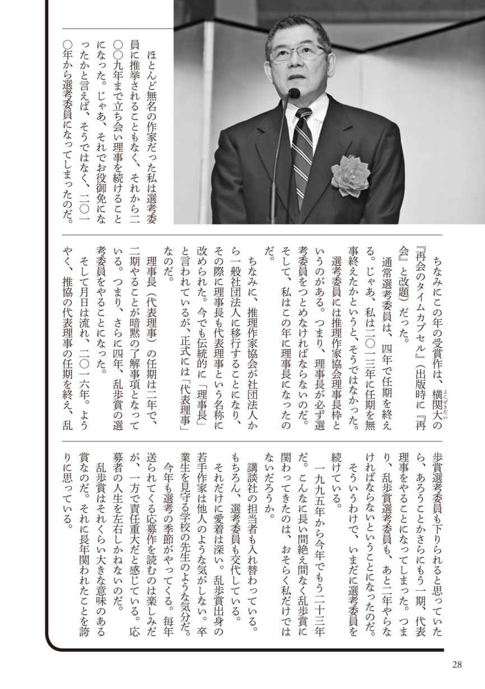
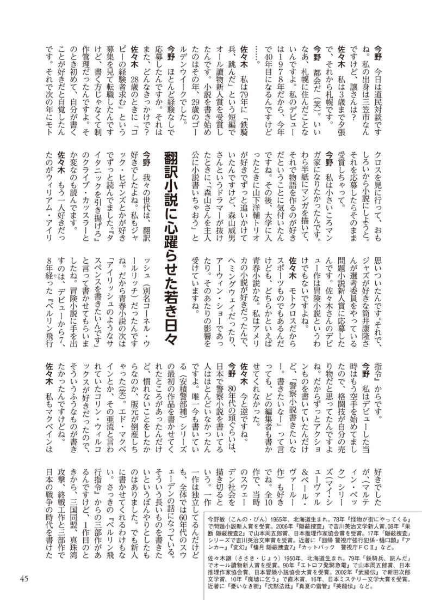
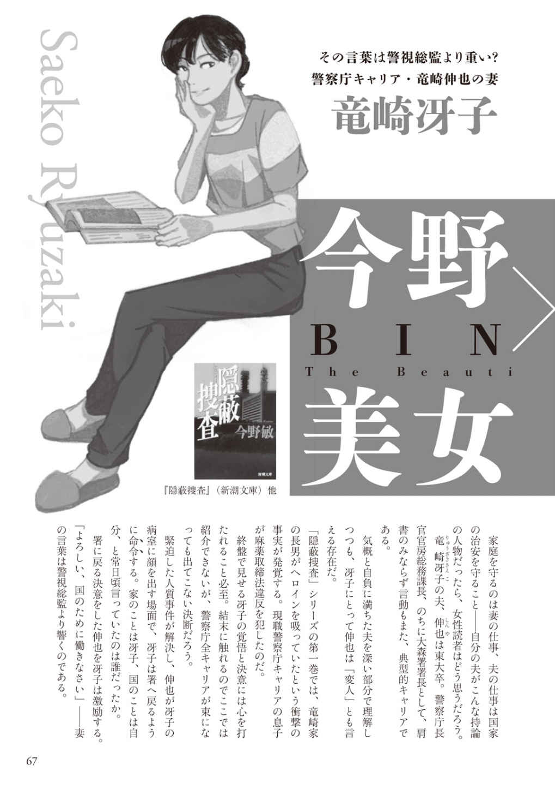
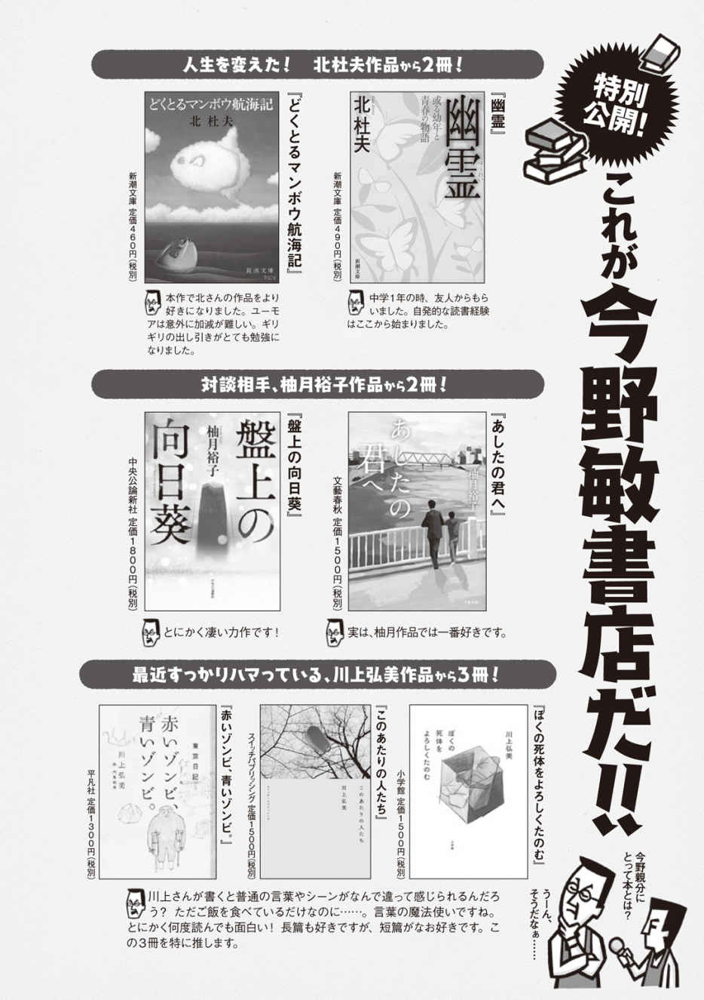
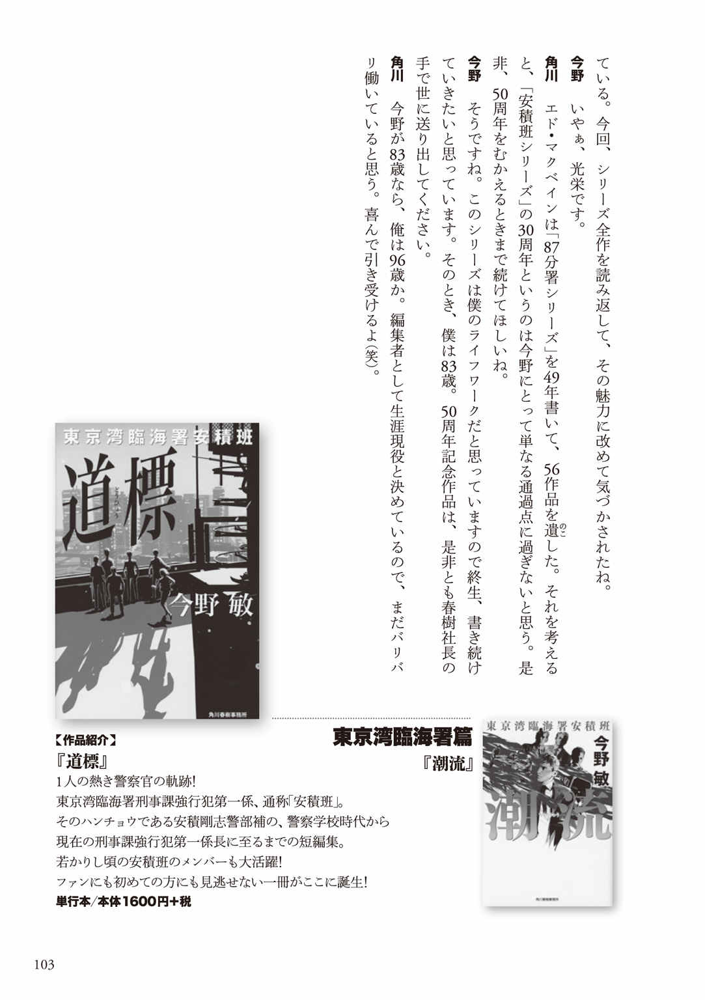
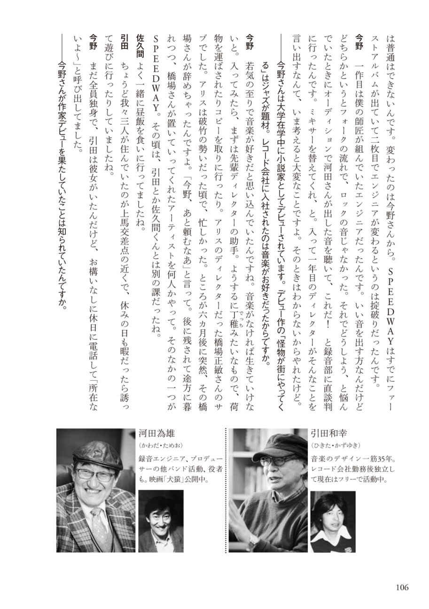
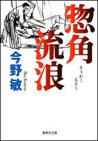
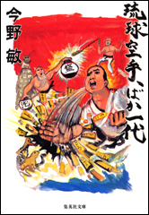
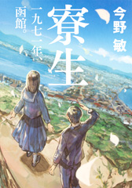

| 【集英社版】今野敏の軌跡 作家生活40周年記念特製ブックレット (集英社文芸単行本) | |
| 今野敏 | |
| 株式会社 集英社 (2019) | |
集英社 ｅ文芸単行本
【集英社版】今野敏の軌跡 作家生活40 周年記念特製ブックレット
今野 敏
この本は縦書きでレイアウトされています。
また、ご覧になる機種により、表示の差が認められることがあります。












集英社配信作品試し読み集
惣角流浪 試し読み （集英社ｅ文庫）

［作品紹介］
武田惣角。触れるだけで相手を投げ飛ばす、大東流合気柔術の祖である。「進む道は武芸なり」の信念のもと、武士の世が終焉を迎えた維新後もひたすら修行に励む。のちの講道館柔道の創始者・嘉納治五郎との対決を機に、惣角の流浪が始まる。西郷隆盛との邂逅、琉球空手の使い手・伊志嶺章憲との命を懸けた闘い。合気の道を極めんとする男の壮烈な青春を描く、明治格闘小説。
集英社 ｅ文庫
惣 角 流 浪
今野 敏
惣 角 流 浪
第 一 章
一
「なに......。山賊......？」
少年は、村人たちが怯 えた様子で何やら噂 しているのを耳にして、思わずそう尋ねていた。
村人たちは、胡 散 臭 げに背の低い少年を見た。少年は、旅姿だった。彼は、東京からようやく、故郷の会 津 坂 下 まで戻ってきたところだった。
彼が生まれた御 池 田 の武田屋敷までは、あと一歩という距離だった。
「どこに出るのだ？」
少年は、村人たちにさらに尋ねた。
彼は、もうじき十六歳になろうとしている。その態度から、武士の家柄であることがわかった。
少年は奇妙な顔つきをしていた。丸い顔に、これまたまん丸の目が付いている。まるで地蔵がびっくりしたような顔だ。
だが、その丸い大きな眼の光が威圧的だった。彼の眼はよく光り、相手の顔を睨 むように見つめるのだった。
村人のなかには偉そうな少年に反感を抱いた様子の者もいた。しかし、会津という土地柄のせいで、明治になったこの時代でも武士は尊敬され、あるいは恐れられていた。
「あの山に出ますので......」
四十がらみの農民がこたえた。その男は、よく日に焼けており、背が丸く早くも腰が曲がっていた。長年の農作業のせいだろう。
農民は、小高い山を指さした。田畑の向こうにある山だ。
少年の家とは反対の方角だった。
「どんなやつらだ？」
「三人組だと聞いております。山道を通る村の者や旅人が金を盗まれたり、身ぐるみを剥 がれたり......。殺された者もおりますし、手込めにされた娘もおります......」
「なぜ捕らえんのだ？」
「めっそうもない。えらく腕っぷしが強いやつらで、しかも猿のようにすばしっこいらしい......。このごろは、誰 も恐れて山に近づこうとしません」
その男の話では、村人はさすがに警戒をして山には近づかないのだが、旅人が襲われたり、被害はいっこうに減らないらしい。
会津坂下は、会津盆地の中央に位置している。只 見 川 と阿 賀 川 が流れ、越後街道と沼田街道が通っている。
水運、陸運の要所として早くから開け、村は市場で栄えた。四季折々に多くの人々がこの地を訪れた。
山賊は、その旅人に眼をつけたのだった。
「ふん。つまらぬやつもいるものだ」
少年は言った。
村人たちは、少年の不敵な面構えを見て、そっと顔を見合わせた。少年は、髪を短く刈っており、頭の両側のこめかみのやや上のあたりにすれたあとがあった。
いわゆる鬢 ずれで、剣の稽 古 で面をつけるためにできるものだった。よほどの猛稽古を続けなければできないものだ。少年は、東京の榊 原 鍵 吉 のもとで直 心 影 流 の稽古をしていた。榊原道場の内弟子となり、日夜、激しい稽古をつづけていた。
東京で直心影流を学ぶまえは、坂下の養 気 館 で渋 谷 東 馬 から小野派一刀流を学んでいた。
村人たちは、見るからに気性の激しそうな少年を見て、一瞬、期待をしたようだった。しかし、村人たちは、すぐにそれがあまりにもばかげた期待であることに気づいた様子だ。
相手は、凶悪な三人組だ。いくら、武者修行をしたといっても、少年は、まだまだ若造だった。
山賊に太刀打ちできるとは誰も思わないだろう。
少年は、その気配を察した。
「俺が行ってこよう」
村人たちは、眉 をひそめた。
四十がらみの農民が言った。
「やめたほうがいい。返り討ちにあいますよ......」
別の男が言った。
「また、死人が増えるだけだ......」
少年は平然と言った。
「やってみなけりゃわからない」
村人のある者は心配そうな顔になり、ある者は、小馬鹿にしたような表情になった。
少年は、すでに山のほうに歩きだそうとしていた。
ふと彼は振り返り、村人たちに言った。
「俺がもし戻らなかったら、御池田の武田の家に知らせてくれ」
「御池田の武田......。武田屋敷......」
四十がらみの腰の曲がった農民がつぶやいた。次の瞬間、農民ははっと目を見開き、声を高くした。
「じゃ、あなたは、武田さまの......」
「惣 角 だ......」
「武田の若虎......」
少年は、彼らに背を向けて山に向かって歩きはじめた。
村人たちの視線を背中に感じていた。
惣角は、沼田街道の七 折 峠 に向かっていた。今ごろ、坂下では、村人たちの間で、武田の若虎が山賊退治に山へ向かったという知らせが広がっているはずだ。
昨年の春、惣角はやはり、東京の榊原道場から、郷里に帰る折、暴徒の喧嘩に巻き込まれたことがある。猪 苗 代 のある橋に差しかかったときのことだ。
すでに、日が暮れて、あたりは暗かった。惣角は、いきなり、数人の男たちに襲われた。
さらに反対側からも複数の男たちがやってこようとしていた。
惣角は、まったく迷わなかった。
一瞬にして頭に血が上ったが、それはうろたえたためではなかった。
体が臨戦態勢に入ったのだ。彼は、確かに興奮状態にあったが、心は逆にしんと静まり返ってしまった。
奇妙な状態だった。
惣角の体は、相手に自然に反応していた。彼は、愛刀の虎 徹 を抜き払うと身を沈め、迫ってくる男たちに向かって真横に薙 いだ。
相手の足を狙 ったのだ。
惣角は、相手の上半身や胴体には目もくれなかった。
彼は、踏み出してくる男たちの脛 を斬 り払っていた。
暴徒たちも頭に血が上っている。中途半端な反撃だったら、あっという間に蹴散らされていたかもしれない。
惣角は、迷わず、ためらわず、冷酷に相手の足を斬った。
四人の足を斬ったとき、初めて暴徒たちは、惣角のやったことを認識した。男たちは、二の足を踏みはじめた。惣角は、相手が怯 んだ一瞬を見逃さず、橋から川へ飛び込んだ。
春とはいえ、川の水は冷たかった。しかし、飛び込まなければ殺されるのは明らかだった。
こうして、惣角は、九死に一生を得たのだった。
その噂を、すでに坂下の人々は知っていた。惣角は、地元でも有名な乱暴者たちの乱闘に巻き込まれたのだった。
暴徒の乱闘のなかを生きて脱出したという噂は、尾ひれがついて広まっていた。
その惣角が、今、山賊と戦いに山に向かっているのだ。村人たちは、無責任に、その結果について話し合っているに違いない。
惣角は、そんなことは意に介してはいなかった。関心は、戦いにしかない。
山賊というからには、それなりの腕を持っているのだろうと、惣角は思った。
侍くずれかもしれない。
明治になって、禄 を失い、無頼の徒となった侍は多い。
賊だからといってなめていては、ひどい目にあうかもしれないのだ。無頼漢のなかには、相当な武術の修行をした者もいる。
七折峠のふもとまでやってきたときには、すでに日が沈んでいた。惣角は、まったく躊 躇 せずに山道に分け入った。
峠の道は、くねくねと曲がりくねっており、見通しが悪い。
左右は、深い山林だった。
（さて、この惣角を襲う覚悟があるのなら、早く出てくることだ）
まだ十六歳でしかない惣角は、不敵にも心の中で、山賊たちにそう語りかけていた。
二
触れるだけで相手を投げ飛ばしたり、四、五人の相手を一瞬にして、押さえつけて動けなくしてしまう武術があると言っても、いったいどれだけの人が信じるだろう。
だが、その武術は実在する。魔法のようだが、神秘な力を使っているわけではない。
実に合理的な動きの集大成なのだ。徹底的に無駄を排除した動作が、一見、超自然的な技を可能にする。
その武道は、大 東 流 合 気 柔 術 と呼ばれている。
相手にズボンの裾 を握らせておいて、ひょいと足を動かすだけで相手がころりと転がってしまう。そうした術を自在に駆使する大東流合気柔術の使い手が、現在でも何人かいる。
その大東流合気柔術の中興の祖が、武田惣角だ。
大東流は、代々武田家に伝わった武術といわれている。起こりは、八幡太郎義家の弟、新 羅 三 郎 義 光 だという。
新羅三郎義光は、近江 の大東の館に住み、大東三郎とも呼ばれていた。大東流の名はこれに由来するとされている。
新羅三郎義光の技は、源氏に伝わる秘術に工夫を加えたものだといわれ、その源流は、古来の『手 乞 い』に行き着くと伝えられている。
『手乞い』というのは、古事記に登場する武術だ。武術とは言いがたいかもしれない。技の体系がどこまであったか疑問だからだ。
オオクニヌシの国譲りの際に、アマテラスが遣わしたタケミカヅチと、オオクニヌシの息子のひとりであるタケミナカタが戦う。そのときの技が『手乞い』だ。
古事記の記述では、互いに手を取り合った状態からタケミカヅチがタケミナカタを投げたとある。
おそらく相撲の原型だろうといわれている。この『手乞い』が清和源氏に継承されたのだという言い伝えがある。
さまざまな武道の流派が、その流祖伝説を作るのは珍しいことではない。現在、多くの武道があるが、清和天皇を流祖とするものが少なくない。
武術家にとって源氏というのは、それくらいに尊ばれたのだ。
ともあれ、大東流が甲 斐 の武田家に伝わったというのは本当のことだ。武田氏が国継の代になり、会津の大名に仕えた。以来、国継の末孫は、伊勢宮の宮司を兼ねて会津に定着した。
惣角は、この武田家の生まれだ。
一方、徳川二代将軍秀忠の第四子、幸松丸は、武田信玄の家臣である保 科 正直の子、正光の養子となり、保科正之と名を改めた。会津藩の大名となった正之は、武田国継から伝承された大東流を殿中の護身武術とした。この武術は『御 式 内 』と呼ばれている。
正之は、『御式内』を老中、重臣などに習わせた。さらに、将軍家指南役小野忠常から小野派一刀流を学び、『御式内』と小野派一刀流を歴代会津藩主に継承させた。特に、『御式内』の指導については、上席家老西郷家に委ねたという。
これが、大東流が会津の地に根づいた由来だ。
惣角は幼いころから、武田家に代々伝わる大東流を祖父や父から教わっていた。
武田家は、国継から主税 、信次、さらに四代を経て惣右衛門と続く。惣右衛門の長子、惣吉は、父祖伝来の田畑を持ついわゆる郷士だった。
惣吉は、体重が百十キロもある大男で、相撲が強く土地の大関力士だった。また、剣術、棒術にもすぐれており、屋敷内の蔵を道場にしてこれらの武術を教えていた。
さらに、学識もあり、近くの寺を寺子屋として開放した。その寺で相撲も教えた。
惣角は、この惣吉の四人の子のひとりだ。万延元年（一八六〇年）十月十日に惣吉の次男として生まれた惣角は、父親から武芸の才能だけを継いだ。
惣吉は、京都鳥羽伏見の戦いと会津戦争に力士団を率いて砲撃手として参加した。その際に、すでに刀の時代は終わったことを痛感し、子供たちが学問の道に進むことを望んだ。
長男の惣勝は、その教えに従い、よく学問をし、後に神職に就いた。
しかし、惣角は、いっこうに学問に関心を示そうとしない。惣吉は、なんとか惣角を寺子屋に通わせようとしたが、そのつど激しい抵抗にあった。ついに、惣吉は、惣角に学問をさせるのを諦めねばならなかった。そのかわりに、惣角は、幼いころから戦いに夢中になったという。
会津戦争は、惣角が八歳のときの出来事だが、彼は、夜中に三里の道を歩いて砲撃を見物に行ったという。
また、彼は、戦いを見るのが好きで、何度追い払われても戦場を駆け回っていたらしい。人が斬ったり斬られたりするのを見ても平気だった。それが楽しかったのだ。
そんな惣角だから、父惣吉から宝蔵院流槍術、剣術、相撲、大東流などの武芸を習うとたちまち腕を上げた。
十代になった惣角は、相撲大会があると出場して優勝したという。
しかし、これは、父惣吉にしてみれば、少々都合が悪かった。惣吉は、大関だ。相撲取りの息子が大会荒らしをするのは肩身が狭かった。
惣吉は、惣角に相撲大会に出ることを禁じてしまった。大会の日は、自宅で棒術の稽古をやらせた。
しかし、惣角は父の目を盗んでは大会に出場して優勝してくるのだった。惣角は子供のころからたいへん小柄だった。小柄な惣角が相撲で負け知らずだったというのは、後の大東流合気柔術を考える上で大変興味深いものがある。
つまり、彼は、戦いに勝つ要素をすでにこの時代に会得していたのだ。力だけでは勝つことはできない。技だけでもだめだ。
気迫とある種の残忍さを、惣角は生まれ持っていたのかもしれない。
惣角は、九歳の頃から、坂下の養気館で、渋谷東馬から小野派一刀流を学びはじめた。午前中は、近所の道場で父親と剣術の稽古をし、午後になると養気館で一刀流を学ぶという生活だった。
彼は、剣術に夢中になった。当時、武術といえば、剣術だった。柔術や、その他の拳法などは、あくまで、剣術の補助として発達したにすぎない。
惣角は、夢中で修行した。
小野派一刀流は、切 落 に始まり、切落に終わるといわれている。
切落というのは、武器術においては、究極のタイミングだ。相手が斬りかかってくるところに、こちらも同時に斬りかかるのだ。
技の起こりを見た瞬間に、迷わず斬りかかる。
太刀と太刀が互いに当たるが、そのとき、相手の太刀筋は死に、こちらの太刀が生きるのだ。
相手の攻撃を受けるのではない。攻撃の起こりを見切り、その瞬間にこちらからも進んで打ち込むのだ。
一見、同時に打ち込むように見えるが、そうではない。ボクシングのクロスカウンターもこの理合いに近い。
相手の技の起こりを見た瞬間に、こちらの技を自信を持って出すのだ。
このタイミングはあらゆる武器術の流派に共通する。
切落のタイミングを可能にするのは、常に攻める心だ。相手が動いたとき、一瞬でも迷ったり、ひるんだりしたら、決して決まらない。
生死の分かれ目が、ほんの一瞬にある。それが切落のタイミングだ。弓を引き絞ったような状態で相手の技の起こりを待つのだ。
人の動きを司るのは心だ。そして、心と気は本来同じものだ。これを、心気一元という。しかし、心は実であって静であるのに対して、気は用であって動である――小野派一刀流ではそう教えている。
切落は、小野派一刀流の組太刀五十本の最初に置かれているが、単に技を学ぶものではない。この切落に小野派の大切な要素が凝縮しているといってもいい。
武器術に共通するこの切落の理を、惣角は、幼いころから学んでいた。もちろん、一朝一夕に悟れるものではない。長い年月のうちに身につけたに違いない。
惣角は、気が強くがむしゃらな性格だった。そして、恐れることを知らない。彼は、剣術においても、ひたすら攻めまくった。稽古のときは、相手が嫌がるほどだった。
小さいくせに、持久力があり、攻めて疲れることがなかった。
渋谷東馬はそんな惣角を見て、当初は何も言わなかった。当時の剣術の稽古は、面を着けて竹刀で打ち合う。現在の剣道のようだが、それよりもはるかに激しい地稽古だった。型は型として習う。しかし、普段の稽古は、面を着けての打ち合いが主だった。
ある日のこと、惣角は、いつものようにがむしゃらに攻めていた。相手が、反撃を試みようにも惣角の手数が多すぎて、どうしようもない。
相手が辛うじて一撃を返そうとすると、その間に、三発も四発も竹刀が出る。しかも、その一撃一撃に力がこもっている。
相手は、惣角よりかなり背が高い。にもかかわらず、相手は、惣角から何度も面を打たれていた。そのたびに、目から火花が散り、鼻の奥がキナ臭くなる。
相手の小手の下は、真っ黒なあざができていた。さらに、前腕の小手のない部分には、無数の赤黒い筋が走っている。
惣角の竹刀を受けた跡だ。
相手はたまらず後退した。そこに、惣角はすかさず足を掛けた。相撲の外掛けの要領だった。
さらに、柄 の部分で相手の胴を押しやった。
相手はもんどり打って倒れた。
だが、それで終わりではなかった。惣角は、倒れた相手を打ちすえ、さらに馬乗りになって、面を打った。
相手は、もう防戦をする気にもなれない。竹刀を放り出して頭を抱えている。
周りで稽古をしていた連中が手を止めて、その激しい攻撃に見入っていた。
さすがの渋谷東馬も稽古を止めた。
「止め！」
それでも惣角は、攻撃をやめようとしない。ついに、何人かが、惣角を押さえに行った。ようやく惣角は、相手から降りて立ち上がった。
渋谷東馬は、惣角の攻撃に対しては何も言わなかった。戦うときには、これくらいの気迫が必要だ。東馬はそう思っていた。
だが、その後の惣角の態度が東馬の気にさわった。
惣角は、倒れている相手につぶやいた。
「腰抜けめ......」
東馬は、道場の正面から、惣角に向かって言った。
「今、何と言った」
惣角は、面を取り、真っ直ぐに師範を見返した。
「腰抜けと言いました」
「同じ門弟に、何ということを言う」
「腰抜けだから腰抜けと言いました。こやつは、俺を打ち負かそうという気がまるでなかった。しまいには、逃げ腰になった」
東馬は、惣角が増長しているのを知った。激しい攻撃は何の問題もない。気迫をぶつけ合って稽古をしてこそ、技も伸びるというものだ。
型や太刀筋だけを覚えても、何の役にも立たないのだ。その技を使える気迫と胆力を練ることこそ大切なのだ。しかし、思い上がってはいけない。
増長して剣の本質を忘れては何もならないのだ。たしかに、この道場で惣角は異彩を放っている。
かなり年上の者も、惣角には、手を焼いているのだ。
東馬は、ここが締めどころだと思った。頭から剣の道がどうの、技がどうのと言ってもはじまらない。かえって、技だけ学べばいいという勘違いをする者も出てくる。
教えどころというのが肝腎なのだ。
東馬は、竹刀を取って立ち上がった。
「面をつけなさい」
稽古をしていた門弟は、師範が立ち上がると同時にいっせいに壁際に退いて正座した。惣角は、叱 られたことが不満そうだったが、師範が立ち合ってくれると知って、急にうれしそうな顔になった。
師範と立ち合うことを喜ぶ門弟は少ない。たしかに、大きなものを得るかもしれないが、その代わりにたいていはしたたかにやられてしまうのだ。
師範を相手にして待っているわけにはいかない。当然、弟子のほうからかかっていく。師範は、それを無駄のない動きでさばくから、弟子はたちまちへとへとになる。
そういう打ち合いが延々と続くのが常なのだ。それを考えただけでもうんざりとしてくるものだ。
だが、惣角はたしかに喜んでいた。
「先生は、面をお着けにならないのですか？」
「私はいい」
「わかりました」
惣角は、卑 怯 だと思った。面を着けていない相手を打ち据えるのは、気が引ける。自然と、こちらの手が鈍るだろうと計算しているのだと思ったのだ。
惣角はすでに、そうした戦いの駆け引きまでも知っていた。
（ならば、こちらも容赦はすまい）
惣角はそう思った。
面を着けないというのは、師範の油断でもある。相手の油断にこちらが合わせる必要などない。
惣角は、面を着けて、道場の中央に立った。渋谷東馬は、面も胴も着けずに竹刀を持って歩み出た。
「来なさい」
渋谷東馬は、青 眼 に構えた。
惣角は、まず青眼に構え、鋭い気合を発すると、竹刀を上段に持っていった。格が上の者に対して上段に構えるというのは、なかなかできるものではない。
上段というのは、攻撃的だが、反面無防備な構えだ。気迫で相手を押していないと上段に構えることはできない。
渋谷東馬は、青眼のままだ。
惣角は、また気合を発した。獣が吼 えるような気合だった。
渋谷東馬はひっそりと立っているように見える。
（動かぬか......）
惣角は思った。（ならば、こちらから行くぞ）
彼は、師範に対して勝負を挑んでいるつもりになっていた。教えを乞おうなどという気持ちはまったくない。
それは、それで正しい態度だった。武術や格闘技は、教えられて強くなるものではない。真剣に挑み、自分で何かをつかみとらねばならないのだ。
惣角は、とにかく手数で圧倒しようと思った。
それが彼の戦い方だ。相手の出方など待つ必要はない。とにかく、前へ出て攻める。相手がうんざりするほど攻めまくるのだ。
彼の戦いに防御などという概念はなかった。攻撃が最大の防御というわけだ。
彼は相撲を取るときもそうだった。ひたすら前に押していき、先手先手と技をかける。相手をいなしたり、引き落としたりという相撲ではない。
惣角は、再度気合を発すると、同時に大きく踏み込んだ。師範の頭めがけて竹刀を振り降ろす。続けざまに打ち込むつもりだった。
だが、彼が打ち込んだ瞬間、ひどい衝撃が脳天から足先まで走り抜けた。目の前が眩しく光る。道場の床が、前方からせりあがってくるように感じた。鼻の奥で何かが焦げたような臭いがする。彼は気づいていないが、彼の体はふらふらと揺れていた。
脳 震 盪 を起こしかけたのだ。
何が起きたのかわからなかった。
惣角は、頭を振って、視界のなかの金色に光る星を追いやった。
彼は、誰かが後ろから殴りかかったのかと疑った。
だが、そうでないことに、すぐに気づいた。打ち込んだのは惣角だった。しかし、その竹刀は、師範の頭には当たっていなかった。
惣角の脳天にたたき込まれたのは間違いなく渋谷東馬の竹刀だった。
道場のなかに吐息の洩れる音がした。
門弟たちが感嘆と称賛の溜め息を洩らしたのだ。
（師範は、いったい何をやったんだ......）
惣角は、訝 った。
渋谷東馬は、切落を使ったに過ぎない。基本中の基本だ。
もちろん、惣角は、切落を知っている。しかし、これほど見事に決められたのは初めてだった。
技が本当に見事に決まると、相手は、何をされたかわからないうちに倒されている。技はそうしたものだ。
惣角は、気を取り直した。
（なに、どうということはない。攻めて攻めて、攻めまくるだけだ。そのうち、こちらの勝機もやってくる）
惣角は、さすがに、青眼に構えなおした。彼は、切っ先が触れ合うくらいに間合いを取り、機をうかがった。
竹刀の先をかちかちと相手の竹刀に当てて牽 制 をする。
一瞬、強く師範の竹刀を弾いておいて、惣角は、また面を打ちに出た。
先程とまったく同じだった。
師範は、まったく慌てず、流れるような動作で、やはり一歩出て打ち出してきた。
その動きは、決して速くは見えなかった。しかし、師範の切っ先は、惣角の竹刀より早く、惣角の面を叩いていた。
今度は、惣角も警戒していたので、師範が何をやったのかよくわかった。
しかし、やはり避けられなかった。
切落が恐ろしいのは、こちらが攻撃を仕掛けた瞬間に決められるという点だ。
攻撃に出る瞬間は、最も無防備だ。しかも、切落は、こちらの攻撃と同時に繰り出される。こちらは、攻撃の最中なので、受けることもかわすこともできないのだ。
惣角は、面を食らったが、そこで攻撃を止める気はなかった。地稽古は、一本を競う試合ではない。
惣角は、獣の咆 哮 のような気合を発しつつ、二の手を出した。振りかぶって打ち込む。その小手にしたたかな一撃を食らった。
ほぼ同時に打ち込んで、互いの攻撃が終わったときには、相手の技が死に、こちらの剣が生きている。それが、一刀流だが、この小手に決める技は、特に柳生 新 陰 流 の基本技となっている。
柳生では、三学円の太刀という型で稽古される技だが、切落と理合いは同じだ。
その師範の一打は強力で、一時的に完全に手がいうことをきかなくなった。
「くそっ」
惣角は、打たれて衝撃の残った右手を離して、左手だけで打ち込んでいった。
左手一本で打ち込むと、両手で構えたときより竹刀が遠くに届く。捨て身の攻撃だった。
渋谷東馬は、惣角が竹刀を振り出す瞬間に、また一歩出た。彼はまっすぐ突いた。
惣角は、ひっくり返っていた。
前へ出るところを、突かれたのだ。胸にしたたかな衝撃があり、上半身がそこで急停止する。しかし、下半身はまだ進もうとしている。
それで見事に腰が浮いてしまったのだ。
突きの威力はすさまじく、ちょうど惣角は鞭 打 ちの状態になった。
それでも惣角は、跳 ね起きようとした。だが、突きをくらった胸とひっくり返ったときに打った腰の痛手が大きく、すとんと力がぬけてまた倒れてしまった。
「こんなばかな......」
惣角は、大の字になってしまった。彼は天井を見つめていた。
「これが剣だ」
渋谷東馬が言った。
惣角は、大の字のまま聞いている。
「おまえの気迫はよい。そのよさをなくしてはならない。しかし、剣には次の段階もあるのだ。剣には必ず相手がいる。おまえは、自分の攻撃のことばかりを考えている。今はそれでいい。だが、次に進もうと思ったら、相手のことも考えなくてはならない。おまえがさっき打ち倒した相手もいずれは、技を磨き、おまえを倒すかもしれない」
東馬は、門弟一同を見回して言った。
「今、誰が誰より優れているという考えは意味がない。この道場では、誰が誰に勝とうとそれは関係ない。問題は、これから先どうなるのか、なのだ。皆、強くなることを願って稽古をしている。今弱い者も、いずれは強くなるかもしれない。今強い者も、衰えていくかもしれない。先を考えることが肝腎なんだ。そのためには、心を磨け。肝を鍛えろ。惣角の気迫を皆も見習うがいい」
東馬は、正面に戻った。
稽古が再開された。惣角は、道場の隅にすわっていた。
彼は、師範の剣を頭のなかで再現していた。彼はただでは転ばないのだ。このときの手合わせが、彼をさらに成長させることになる。
十三歳になった惣角は、父惣吉を説得して、東京の榊原道場の内弟子となった。榊原道場で直心影流を学んだが、小野派一刀流時代の体験が、ずいぶんと役に立った。
惣角は、榊原道場でもめきめき頭角を現した。
その矢先、兄惣勝の急死を知らされたのだった。
今回、惣角が故郷の坂下に帰ってきたのは、そのためだった。
＊この続きは製品版でお楽しみください。
山嵐 試し読み （集英社ｅ文庫）
［作品紹介］
時は明治期。会津の地から、ひとりの若者が上京してきた。五尺に満たない小兵ながら、その才能を講道館創始者・嘉納治五郎に見出された彼は、柔道の修行を始める。独自の技「山嵐」を編み出し、講道館四天王のひとりに数え上げられるほどになるが、かねてから夢を馳せていた大陸への渡航を決意する。『姿三四郎』のモデルとなった天才柔術家・西郷四郎の壮烈なる半生。
集英社 ｅ文庫
山 嵐
今野 敏
山 嵐
第一章 情 と 理
一
道の両 脇 にはずらりと商店が並んでいる。金物に反物、食器に履物......。立派な暖簾 の大 店 が多い。店先には埃 が立たぬように打ち水がしてあり、人々の往来が絶えない。皆思い思いの恰 好 をしている。
和服を着ている老人や婦人もいたが、たいていは洋装だった。書生たちは単衣 の下にシャツを着て袴 をはいている。職人たちは、半 纏 に股 引 き姿で足袋 を履いていた。
ドレスを着て日傘を差しているのは、名のある家の令嬢に違いない。着物姿の下女を供に連れている。
四 郎 は、その令嬢に見とれる思いだった。
その華やかさは東京を象徴している。ふわふわと揺れるドレスの裾 は、生まれてこのかた見たこともない優雅さだ。日傘の下の白い顔は、日に焼けた故郷の娘たちとは別の生き物のような気がした。
惚 けたように眺めていたわけではない。そんなことは恥ずかしくてできない。真 っ直 ぐ前を見るふりをして、盗み見ていたのだ。会 津 の男が女に見とれるなど、あってはならないことだ。
しかも、四郎はひどい恰好をしていた。いちおう袴を着けてはいるが、着物も袴も埃まみれで、足元はすり切れた草鞋 だった。手 甲 脚 絆 もひどく汚れており、風 呂 敷 包みを担いでいた。そんな恰好をしている者は、この神 田 鍛 冶 町 にはいなかった。
汚れているのも無理はない。四郎は友人の佐藤与 四 郎 とともに、会津若 松 から上京してきたところだった。十日間の徒歩の旅だった。
四郎は会津若松で生まれた。もと会津藩士志 田 貞 二 郎 の三男だ。貞二郎は会津戦争の際に朱 雀 隊で戦い、会津落城後、越 後 高 田 で謹慎を申しつけられた。明治二年（一八六九年）、謹慎が解けると貞二郎は角 島 村に移り住んで、農夫となった。角島村は、越後国蒲 原 郡にあり、藩政時代には会津藩の領地だった。
その父も、四郎が七つのときに他界していた。
十四歳で、四郎は保 科 近 悳 の養子となり会津若松に戻った。保科近悳は、かつての西 郷 頼 母 だ。会津藩最後の家老で、落城の際に妻と娘すべてを含む一族が自害し、また長男吉十郎有 鄰 をも西 南 戦争後に失ったという悲劇の人だ。
十七歳になった四郎は、陸軍士官学校に入りたいと保科近悳に訴え、許しを得て上京したのだった。
養子であるからには、保科姓を名乗るのが当然だが、彼はまだ志田姓を名乗っていた。
「すごいなあ......。まるで祭りのようじゃないか......」
与四郎が言った。
前を歩いていた遊び人ふうの男が、振り返って四郎と与四郎を見た。嘲 るような笑いを浮かべている。その男は肩をそびやかして足早に歩き去ろうとした。
「待て」
四郎は男を呼び止めた。
「お？ おいらのことかい？」
「今、俺 たちのことを見て笑ったな？」
男は妙な顔をした。首を傾 げている。
四郎の言っていることがわからないようだった。
「何言ってんのかわからんがな、気をつけな。その訛 りにその恰好だ。悪いやつが手ぐすね引いて待ってるぜ。だまされねえようにな」
男は肩をゆすり、小走りに駆けて行った。
四郎は頬 が熱くなるのを感じた。あの遊び人は、与四郎の会津訛りを聞き留めて振り返ったのだ。怒りと恥ずかしさがない交ぜになって、頭に血が上った。短気な四郎の血に火がつきそうだった。
あの男は気をつけろと言ったが、別に四郎たちを心配して言ったわけではないことは明らかだった。
手ぐすねを引いている悪いやつとは自分のことだ。田舎 者 丸出しでぼんやりしていると、この俺がおまえらをだましてやるぜ。そう言ったのだ。
会津の言葉の何がおかしい。四郎は今にも男を追っ掛けて行って殴り掛かりそうだった。与四郎が言った。
「四郎。気にするな。おまえは短気でいかん。こんなことでいちいち腹を立てていたら、東京では暮らしていけないぞ」
「あいつは、俺たちの訛りを笑ったんだ。会津のことをばかにしたんだぞ」
「すぐそういうふうに考える。俺たちの恰好を見ろ。山から出てきた猿みたいだ。誰 だって笑いたくなるさ。どこかに落ち着いて、身支度を整えてから出てくればよかったのだ」
「東京で一番賑 やかな神田を見てみたいと言ったのはおまえだぞ」
「ああ、とんだ寄り道をしてしまった。日が暮れる前に、宿を取ろう。明日は竹村さんを訪ねなくてはならない」
与四郎が先に立って歩きだした。四郎は憤然とした表情のまま、その後を追っていた。その日は愛宕 に宿を取り、翌日、二人は慶応義塾の寮を訪れた。竹村庄八は郷里の先輩で、慶応義塾に通っている。四郎より六歳年上だ。与四郎はあらかじめ手紙を出し、訪ねていく旨を知らせてあった。
慶応義塾の寮に着いたのは午前中で、竹村はまだ授業に出ているという。玄関脇の部屋で待たせてもらうことにした。ほどなく竹村が学校から戻ってきた。
「おう、与四郎。しばらくだ。元気そうだな」
竹村はうれしそうだった。迷惑がられるのではないかと密 かに心配していたのだが、郷里から訪ねてきた若者たちを心から歓迎している様子で、四郎はほっとしていた。
竹村はすっかり会津訛りが取れていた。四郎はそんな竹村がまぶしかったが、一方で残念な気がしていた。郷土の誇りを忘れ、東京にかぶれてしまったように感じたのだ。
「与四郎が来るのは手紙で知っていたが、そちらは？」
「友人の志田四郎君です」
「志田四郎......。与四郎は陸軍士官学校に入りたいということだが、君もそうなのか？」
四郎は力強くうなずいた。
「はい。私も同じです」
「そうか......」
竹村の笑顔が一瞬曇った。ふと気になったが、四郎にはその理由がわからなかった。
「ところで、二人とも両親の許しはちゃんと受けて出てきたのだろうな？」
与四郎はうなずいた。
「はい」
四郎も、はい、と返事をした。
養父である保科近悳の許しを得たのだからこれは嘘 ではない。もし、反対されてもこっそり上京しただろう。こうと思い込んだら、誰がなんと言おうと後には引かない。四郎は子供の頃 からそういう性格だった。
「とにかく昼飯を食いに行こう。牛 鍋 は食ったことがあるか？」
竹村は二人を牛鍋屋に連れて行き、飯を振る舞った。四郎も与四郎もおそるおそる牛肉を口に連んだが、そのうまさにびっくりした。幼い頃、四郎の家は貧しかった。父の貞二郎が亡くなってから生活はいっそう苦しくなった。
甘辛く煮た豊かな香りの牛肉を頬張り、故郷の家族たちを思った。苦労続きの母や兄弟たちに食べさせてみたい。長兄の駒之助は船大工をやって家計を助けている。その上に姉のりつがおり、四郎のすぐ上には三郎がいた。会津若松で暮らしている頃はそれなりの生活をしていた。四郎は末っ子ということで、保科近悳のもとに養子に出されたが、親兄弟たちは変わらず貧しい暮らしをしていた。
すべて薩 摩 ・長 州 のせいだ。四郎は今でもそう思っていた。会津戦争で生活がひっくり返ってしまった。父の貞二郎は、謹慎が解けて帰ってきたときはすっかり生気を失っていた。武士としての誇りも失い、体力も衰えてしまった。生き甲 斐 がなくなってしまったのだ。その結果、三十八歳の若さでこの世を去ってしまった。
戦 には負けるべきではないな。
四郎は切実にそう思った。戦に負けた結果が今の生活だ。会津が勝っていれば、昔のように家族がそろって何不自由のない暮らしができたはずだ。かつて、父は百五十石取りだった。幼い頃から四郎はそう思い続けてきた。
薩摩・長州の暗躍がなくても、徳 川 は滅びる運命にあった。すでに幕藩体制は保 たないところまで疲弊していたのだが、まだ幼かった四郎にそんなことはわからない。幼心に刻まれた怨 みは大きい。
明治十年の西南戦争では、旧会津藩士を中心とした抜刀隊が大活躍したという話を聞いた。そうでなくてはいけない。会津が武芸においてよそに後れを取るはずがない。その思いはやがてごく自然に、軍隊に入って名を成したいという思いに変わっていった。
竹村庄八は、二人に昼飯を食わせると東京見物に連れ出した。赤 羽 橋 から芝 丸 山 に登り、そこから東京湾を眺めた。
「おお......」
思わず四郎は声を洩 らしていた。
胸のすく景色だった。
山から海を眺めるというのは初めての体験だった。東京湾は穏やかな内海で、大小の船が浮かんでいるのが見える。その向こうの外洋は遠く外国につながっているのだ。そう思うと、気が遠くなりそうなほどの感慨を覚えた。
山国で育った四郎は、海の向こうという概念をこのとき初めて実感したのだ。開国以来、多くの政治家が渡航したという話を聞いていたが、それは自分とはまったく関わりのない話でしかなかった。だが、実際にこうして東京湾を山の上から眺めると、海外というのが決して夢物語ではないような気がしてきた。
私はこの光景を一生忘れないだろう。
四郎は、そのとき、たしかにそう思った。
その後、新 橋 へ出て銀 座 の勧 工 場 を見た。勧工場というのは、さまざまの商店が組合を作って一つの建物の中でいろいろな商品を販売しているところだという。四郎はそんなものは見たことも聞いたこともなかったので、華やかさに圧倒された。
愛宕下の工 部 大学校を見学して、竹村は慶応義塾に戻った。午後一杯歩き通しだったが、山国育ちの四郎や与四郎は全く苦にならなかった。それより見るもの聞くものが華やかで珍しく、何だかのぼせたような気分になっていた。都会の活気に酔ってしまったのだ。
その日、竹村は二人を宿に送り、こう言った。
「困ったこと、相談したいことがあったら、いつでも来てくれ」
二人は、その言葉に甘え、その後もしばしば竹村のもとを訪ねた。
まず、これからの身の振り方を相談しなければならない。二人とも、陸軍士官学校への入学を強く希望していたが、竹村にそのことを相談すると、ひどく難しい顔をした。
「うーん。陸軍士官学校か......。それも悪くはないがな、これからの若者はもっと社会を広く見なければならない」
与四郎が怪 訝 な顔で訊 いた。
「それはどういうことですか？」
「先日、銀座を見物しただろう。どう思った？」
「賑やかですね。活気に満ちている」
「その活気は商業がもたらしたものだ」
「我々に商人 になれと言うのですか」
与四郎は驚きに目を見開いていた。
「士農工商の時代は終わった。これからは商人が社会で大きな働きをする時代だ。そこでだ、二人は商業学校へ行ってはどうかと思うのだが......」
「冗談ではありません」
与四郎が憤然として言った。「商人になるために会津から出てきたのではありません」
「ならば訊くが、どうして士官学校に入りたいのだ？」
「軍も警察も薩長が牛 耳 っていると聞きます。そんなのは我慢なりません。軍に入って指揮を執る立場になりたいのです」
「薩長だ会津だという世の中じゃないんだよ。この東京の街を見て、まだわからんか。東京湾に船が浮かんでいるのが見えただろう。外国の大きな船もあった。あれはな、軍艦ではないぞ、商船だ。今では商船が世界を回っている。今に軍人よりも政治家よりも商人が世界を股 にかけて活躍する時代が来る」
与四郎は衝撃を受けているようだった。彼は竹村を頼りにしている。その竹村が熱心に説得してくれているのだ。しかも、さすがに竹村は東京の学生だけあって弁が立つ。見聞が広いので説得力があった。たしかに東京の繁栄ぶりは商業がもたらしたものだ。そして、軍人よりも政治家よりも商人が活躍する時代が来るという。
彼は心を動かされたようだった。
しばらく考え込んだ後に、与四郎は言った。
「商業学校というとどこがいいですか？」
「そうだな。三 菱 の商業学校がいいだろう」
「三菱......」
三菱といえば、西南戦争で大 儲 けをし大いに発展した会社だ。与四郎は複雑な面 持 ちだった。またしばらく考え込んだ後に、与四郎はぽつりと言った。
「考えさせてください」
竹村はうなずいた。
「志田君もそうするといい」
四郎は真っ直ぐに竹村を見て、きっぱりと言った。
「いいえ。私はあくまで士官学校に行くつもりです」
これには竹村も驚いた様子だった。与四郎が翻意の様子を見せたので、四郎もそれに従うものと思っていたらしい。
「志田君......」
竹村は腕組みした。「君はいくつだ？」
「かぞえで十七です」
「君はこれから無限の可能性を持っている。そしてだ。日本の社会はその若者の可能性を求めているのだ。これから世の中はどんどん変わっていく。今日当たり前だったことが、明日はそうではなくなっている。それが明治の世だ。見たところ、君は士族の家に育ったようだが......」
「父はもと会津藩御用場役でしたが、会津戦争では朱雀隊で戦いました。その後は農業をやっておりました」
四郎は、保科近悳の養子であることを隠した。竹村も保科近悳に対する特別な思いがあるに違いない。会津の人間ならば誰でもそうだ。いまだに頼母という名前を聞くだけで涙する者もいる。だが、保科近悳の悲劇と四郎は関係ない。
「なるほど、薩摩・長州に対する怨みが深いのも無理はないな。だがな、それは忘れろ」
四郎は、その瞬間に頭に血が上った。怒りを抑えるために袴の膝 のあたりを両手で握っていた。
会津の人間が薩摩・長州への怨みを忘れろというのか！
この竹村という男は、会津の心を忘れたのではないか。東京に来てこの都会の熱気に取り込まれ、己を失ってしまったのだ。そんなやつの話を聞く耳は持たない。
与四郎が四郎の怒りを悟っておろおろとしている。四郎はそれを感じ取っていた。ここで竹村に失礼を働いては与四郎の顔が丸つぶれになる。そう思い、必死にこらえていた。口を開くと暴言を吐きそうなので、黙っていた。
竹村は四郎の怒りの表情をまったく意に介さない様子だった。腕を組んだまま、淡々と語った。
「徳川の時代は、日本がいろいろな国でできあがっていた。会津は一つの国だったし、薩摩や長州も一つの国だった。そのばらばらな国を一つにまとめるために強力な力が必要だった。それが幕藩体制だ。今では日本は一つになったのだ。これからは、国民皆で国を作っていかなければならない」
「世の中が変わったのはわかります。しかし、だからといって郷土の誇りや父祖の怨みを忘れていいということではないでしょう。世の中の仕組みと人の生活の間には、おのずと開きがあるはずです」
「それだ。その開きだ。それをなくしていくのが、我々若者の役割ではないのか？」
「それが商人になることと、どう関わりがあるのです？」
「国の力だ」
「国の力？」
「そうだ。日本は、政治の仕組みや軍事などは海外から熱心に学んだ。特に軍事に関しては、幕藩体制時代の蓄積もあった。そこそこの成果を得ている。しかし、商業力がまだまだだ。それゆえに、世界の中ではまだまだ小国なのだ。これからは、商業の時代だ」
四郎の様子を気にしていた与四郎も、いつしか竹村の話に聞き入っているようだった。
「まず国を富ますことだ。国に富がなければ、軍事力を増強することもできない。人々の生活を向上させることもできない。今、維新によって職を失った人々が国中にあふれている。商業によって富を蓄積すれば、さまざまな工業を興すことができる。それによって、人に職を与え、海外と取り引きし、国に財を成すこともできる。日本が大国となるか否かは、商業にかかっていると言える。これからの若者は、熱心に商業を学ぶべきだ。かつては士農工商といって、商人は卑しめられていたが、これから国を支えるのは商人なのだ」
与四郎は次第に竹村の話に熱中しはじめたようだ。四郎はそれを横目で見ていたが、志を変える気はなかった。
「商業で国を支える者も必要でしょう。ですが、私には向いていない。私は、軍人として国を支えるほうを選びます」
竹村は、じっと四郎を見つめた。その眼 はどこか悲しげだった。
私を哀れんでいるのか......。
「まあ、仕方がない。人の生き方はそれぞれだからな......。与四郎、君はどうする？」
「私は......」
与四郎は勢いよく言ってから、そっと四郎のほうを見て声の調子を落とした。「その......、竹村さんのおっしゃることもわかるような気がします」
「そうか。商業学校を受けてみるか？」
「それもいいと思います」
「志田君はあくまで、陸軍士官学校を受けると言うのだな」
「そうです」
「君、算術と漢籍のほうはどうだ？」
「どうだとは？」
「得意なのかと訊いているんだ」
「読み書きそろばんに不自由はしません」
「それだけでは不足だな。陸軍士官学校では、高等な算術と漢籍の読解が必要になる」
「はあ......」
四郎は謙 遜 していた。実は漢文については保科近悳のもとで短期間ではあるが、高度な教育を受けていた。それなりの自信があったのだ。
「算術と漢籍をもっと勉強してから、士官学校を受験してはどうかな？」
「それが必要ならば......」
「よし、決まった。陸軍士官学校を受験する者はたいてい成 城 学校で勉強する。そこに入るのがいいだろう」
二人の進路はこうして決まった。与四郎は親から仕送りを受けて三菱の商業学校に進むことになった。しかし、四郎は仕送りを受けられない。保科近悳は都 々 古 別 神社の神官を務めていたが、西南戦争の際に西 郷 隆 盛 と密かに通じていたという嫌疑を掛けられ、解任されていた。
その後、日 光 東 照 宮 の禰 宜 として働いていたが、生活が楽なわけではなかった。四郎は会津士族たちの窮状をよく心得ていた。自分の家がそうだったのだ。保科近悳も仕送りくらいは何とかできたろうが、四郎はあえてそれを受けようとはしなかった。
そういうわけで、実は成城学校に入ろうにも学費の目 処 が立たないのだった。陸車士官学校に入れば官費をあてにできる。だが、四郎は決定的なことを思い知らされる。
身長が足りないのだ。四郎は五尺（約一五二センチ）に満たない短 躯 だった。これではいくらやる気があり成績が優秀でも士官学校には受からない。
四郎は天を怨んだ。身長だけはどんなに努力をしてもどうしようもない。
世の中は何と不公平なのか......。
いまさら、竹村の勧めを受け容れて商業学校に入るわけにはいかない。故郷を出るときは希望に燃えていた。不安もあったが、何より目標があった。
その目標も絶たれた。薩摩と長州に敗れさえしなければ藩はまだ存続しており、仕官の道もあったかもしれない......。実は、理屈ではそんなことはないのだと理解はしていた。いずれ、世の中は変わらなければならなかった。頭ではわかっているのだが、どうにも収まらないのだ。
四郎は、神田三 河 町 に安い下宿を見つけ、団扇 の骨削りの内職を始めた。身元を保証してくれる人もなく、すぐに金になる仕事といえばそれくらいしかなかった。浪人の傘張りのようなものだ。一日中働いてもたいした金にはならない。
薄暗い狭い部屋で一日中団扇の骨を作っていると、気分がどうにもふさいでくる。情熱をもてあましているのだ。その情熱が暗いほうへ暗いほうへと向いてしまう。
薩摩を呪 った。
長州を呪った。
世の中を呪った。
東京の街を呪い、東京の人々を呪った。
そして、ついに自分を呪いはじめた。
人一倍情熱が激しいだけに、それが暗い方へ向くと自分でもどうしようもなかった。ふつふつと腹の底で、毒が煮詰められていくような感じだ。
団扇の骨はいくら急いで作っても、一日にいくらもできない。志を抱いて会津から出てきた男が、一日中薄暗い部屋で作業をして得られるのが、その日の食い扶 持 にも足りるかどうかの金でしかない。
四郎は別の仕事を探すことにした。今度は、普請場の仕事だった。とはいえ、四郎に特別の技術があるわけではない。兄に船大工の仕事でも習っておけば役にも立ったろうが、四郎は兄の仕事場に近づいたこともなかった。当然のことながら、力仕事しかない。水 汲 みや土 嚢 担ぎだ。
これは団扇の骨削りなどよりはずっと賃金がよかったものの、激務だった。毎日、下宿に帰ると泥のように眠るだけだった。だが、そのうちに、体も慣れてくる。多少の余裕ができてきた。四郎は、五尺に満たない小男だが、他の男たちにはまねできない芸当があった。桶 を下げた天 秤 棒 や、土の詰まった袋をかついだまま、丸木橋のような足場の悪いところを平気で通り抜けることができるのだ。
周りの人足たちは、みな不思議がったが、そのうちに誰ともなく言いはじめた。四郎の足は猿のようだ。長い指で足場につかまっている。
そうだ、四郎の足は猿の足だ。いや、蛸 のように吸いついている。蛸足だ。
四郎は気にしなかった。それは悪意を持った中傷ではなかった。皆、四郎の特技を面白がってはやし立てているのだ。激しい肉体労働も、若い四郎の体は受け容れた。最初は何も考えられないくらいに毎日疲れ果てていたが、そのうち同じ作業量でもそれほど苦にならなくなってきた。慣れというのは恐ろしいものだ。さらに四郎は、鍛えれば鍛えるほど体力が身につく年代だった。
重い桶を下げた天秤棒を担ぐと、腰が据わらず足がふらついたものだが、いつしかそんなこともなくなっていた。四郎の足腰は餅 のように粘り、鋼 のように頑強なものに鍛えられていった。
体力的な余裕ができると、困ったことに、またしてもふつふつと満たされぬ情熱が湧 きあがり心の中で渦を巻きはじめる。
こんなことをしていていいのだろうか。
俺は何のために東京へ出てきたのだ。
そんなとき、ふと街中で清 国 の北方に馬 賊 がいるという話を聞いた。馬賊とは盗人盗賊の類 ではないかと耳をそばだてると、どうやら少しばかり違っている。
「盗賊には違いないが、いわゆる義賊の類だ。日本で言えば、悪代官に苦しめられる民百姓を助けるのだ。馬賊は、誇り高い結社でもある」
要約すると、そんな内容だった。
話をしているのは、商人風の二人だった。二人とも和服を着ていた。一人は紺色の前掛けをしている。おそらく用足しにちょっと店を出たところで、知り合いに会い、話し込んだというところだろう。
四郎は、思い切って二人に話しかけた。
「ちょっとお尋ねします。馬賊というのは、本当に義賊なのですか？」
二人の商人風の男は、ぎょっとしたように四郎のほうを見たが、すぐに警戒を解いた様子だった。四郎は背が低いので、子供のように見えたのかもしれない。
「ここにそう書いてある」
前掛けをした男が手にした新聞を差し出した。大きな色つきの絵が描かれていた。馬に乗った勇ましい男の姿が、異国の情緒とともに四郎の胸に迫った。
四郎はそれをまじまじと見つめた。
「お若いの、馬賊に興味がおありかね？」
前掛けの男が言った。
「はい」
四郎はこたえた。「失礼ながら、脇でお話をうかがい、興味が湧きました」
相手は、ふと哀れむような顔になった。
「おまえさん、会津だね？」
四郎はまた会津訛りのことを言われたのだと思い、気恥ずかしくなった。
「はい......」
「先の戦争以来、会津はひどい目にあっているからなあ。そうか。馬賊に心引かれるのも無理はないなあ」
四郎が黙っていると、前掛けの男は手にしていた新聞を差し出した。
「読み書きはできるんだろう？ これに詳しいことが書いてある。読んでみるといい」
四郎はそれを受け取り、礼を言った。
前掛けの男は、声を落として言った。
「私らだって、薩長が好きなわけじゃない。そのうち、いいこともあるさ。元気でおやんなさいよ」
四郎はその意外な言葉に驚き、立ち尽くしていた。東京に出てきて初めてこのような言葉をかけられた。四郎は、二人の商人が去っていった方向をしばらく眺めていた。その商人が残してくれた新聞が何やらとても大切なものに思えた。
四郎はさっそく新聞に眼を通した。
清国の北方、満州のあたり、農民は圧政に苦しみ、ロシアの脅威にさらされている。馬賊は、その農民を助けるために日々戦っているのだという。
大陸の広大な地を馬に乗って疾走する馬賊。四郎はたちまちそのイメージに取りつかれた。軍人として生きる夢を絶たれ、その日暮らしを強いられている四郎にとって、それはあまりにも鮮烈だった。その瞬間に四郎は生き甲斐を見つけたような気がした。こんな東京の街にいても仕方がない。俺は大陸に渡って馬賊になろう。
だが、どうすればいいのかわからなかった。竹村に案内されて芝丸山から見た東京湾を思い出した。たしかに、あの時海外という概念を実感した。しかし、その概念を現実と結びつける方策はなかった。
今、自分には何ができるか......。四郎は必死でそれを考え続けていた。そうなると、四郎は夢中になる性格で、来る日も来る日もそのことを考えていた。
所用があって下 谷 同 朋 町 を通ったときに、ふと、柔術の看板を目に留めた。
「柔術指南・天 神 真 楊 流 ・井上敬太郎」
柔術か......。
四郎は考えた。
馬賊になるにも武芸は必要だろう。すでに明治九年の廃刀令によって刀を差すことはできなくなっている。しかし、柔術ならば役に立つかもしれない。
会津はもともと武芸の盛んなところで、藩士は小野派一刀流などの剣術と、伝来の柔術を学ぶ。四郎もまんざら柔術とは無縁ではなかった。
四郎はその日のうちに、井上道場の門を叩 いていた。
二
汗の臭 いが満ちている。男たちが流す汗。その臭いは畳や壁に染みついていて、人がいないときでも道場にこもっていた。
四郎は、それを好ましく思っていた。その臭いを嗅 ぐだけで、血が熱くなってくる。当初、天神真楊流とはどういう流派か、またその道場にどれだけの手 練 がいるかわからず、不安に思っていた。
だが、稽 古 を始めてみると四郎が故郷で学んだ柔術と共通点も多い。形 は、四郎から見ればひどくのんびりしていた。膝をついた姿勢で技を掛けることが多い。その動作はゆっくりとしている。また、関節技や固め技、絞め技が多いのが特徴だった。
乱取りになると、四郎はいきいきとした。相手は四郎が小 兵 なので、なめてかかってくる。その油断を衝 いて投げ技を決めるのが面白かった。
次第に道場内では四郎の実力が知れ渡り、なめる者はいなくなった。それでも四郎の技をなかなか防げない。四郎は子供の頃から相撲が好きで、攻防のコツを身につけていた。さらに、普請場での力仕事のおかげで足腰が驚くほど粘り強かった。
そして独特の足。
長い足の指で畳をつかむようにしているので、体勢がなかなか崩れないのだ。
馬賊になるためには、武芸を磨く必要がある。そう思って始めた柔術だが、四郎はたちまちのめり込んだ。ありあまる情熱をとりあえずぶつけることができたからだ。
乱取りで汗を流していると、しばらくは嫌なことを忘れられた。将来のことを考えずに済んだ。
四郎はめきめきと腕を上げた。
ある日、よその道場の連中が出稽古に来た。二人連れだ。初めて見る連中だ。どこかの兄弟道場の連中だろうと思って見ていた。いずれも若い。片方は二十代。もう一人は四郎と同じくらいの年齢だ。
若いほうは筋骨たくましく、四郎はその男がなかなか強そうだと思った。その男が稽古着に着替えて練習に加わった。
もう一人は、洋服を着たまま道場の隅に座った。
何だあの男は......。
長めの髪を後方に梳 き上げており、口 髭 を生やしている。その男はじっと腕組みをしたまま稽古を見つめている。
しばらくすると、その洋装の男が、連れてきた若者を呼んだ。
「山田......」
洋装の男は若者に耳打ちをする。山田と呼ばれたその男が四郎に近づいてきた。
「一手、お願いする」
四郎に断る理由はない。
「はい」
二人は組み合った。
山田と呼ばれた男の力は強かった。なにせ腕が四郎の倍はありそうなくらいに太い。押しても引いてもびくともしない。
山田もそれほど大きくはないが、四郎が小さすぎる。四郎は軽々と振り回されてしまう。まるで大人と子供だった。ぐいと押された。四郎の体勢が崩れたと見るや、相手は足を刈ってきた。
しかし、四郎は倒れなかった。長い足の指で畳を鷲 掴 みにするようにして耐えた。四郎の足腰は強 靭 で柔軟性に富んでいる。
二度、三度と山田は四郎に技を掛けようとする。だが、なかなか掛からない。四郎のほうも何とか隙 を見つけようとするが、体格が違いすぎる。
「うぬ......」
業を煮やしたように、山田はさっと片膝をついた。四郎は虚を衝かれた。ぐいと引かれると、体が前のほうへ流れた。その下に山田の肩が入った。さらに首の動きで体を持って行かれる。
何だこれは......。
見たこともない技だった。
四郎は軽々と山田の肩にかつがれ、そのまま前方に投げ出された。
四郎は宙を飛んだ。初めての感覚だった。井上道場では、せいぜい崩されて腰から落ちる程度の投げ技しか経験していない。
時間の感覚が変わる。すべてがゆっくりと感じられた。
このままでは羽目板か畳に叩きつけられる......。
畳がゆっくりと目の前に迫ってくる。
頭から突っ込むのだけは避けなければ......。
四郎は夢中で頭を下げた。
したたかな衝撃。だが、そのとき四郎は肩口から畳に落ち、そのままくるりと前方へ回転していた。気がついたら二本の足で立っていた。
道場の中がどよめいた。何がどうなったのか四郎にはまだわかっていない。夢中で身を守っただけだ。
投げた山田までが驚いた顔で立ち尽くしていた。四郎は再び組み合うべく、山田に歩み寄った。
そのとき、山田が言った。
「いやあ、たまげたな。あんな受け身を見たのは初めてだ」
「受け身......？ 何のことです？」
山田がさらに驚いた顔になった。
「なんと、何のことか知らずにやってのけたのか......」
山田が腕組みして座っている洋装の男を見た。その男は、うなずいただけだった。それでもう山田は四郎と組もうとはしなかった。
いったい何なんだ......。
四郎は再び思った。
あの洋服を着た、すました男は何者だ？
見たところ、役人か教師のようだが、なんで一人だけ稽古に参加しないのだ？ 井上先生はそれをとがめようともしない。
年は井上先生よりはるかに若い。なのに、井上先生はまるで対等の間柄のように振る舞っている。
四郎はその男が気になった。何より、その眼だ。探るような眼。射抜くような眼。いつも何かを考えているような眼だ。
その眼には知性の光がある。柔術の道場にはあまり似つかわしくないような気がした。もしかしたら、警察か軍部の役人なのではないだろうか。ならば、知り合いになっておいても損はないだろう。四郎はそんなことを思っていた。
やがて稽古が終わり、洋装の男は井上と親しく言葉を交わしていた。丁寧に頭を下げると、洋装の男とその連れは道場を出て行った。
井上と眼が合った。
「志田。ちょっと来なさい」
「はい......」
何だろう......。
「志田。おまえは、明日から嘉 納 さんのところへ行きなさい」
「カノウ......？」
「さきほどここにいらした方だ」
「あの若い、洋服を着た人ですか？」
「そうだ」
「行けというのは......？」
「あの人の道場に通うのだ。そのほうがおまえのためにもよかろう」
「道場......？ いったいあの人は誰です」
「知らんのか？ 講 道 館 の嘉納治 五 郎 さんだ」
噂 には聞いていた。
東京大学を出て学習院で教 鞭 を執りながら、下谷北 稲荷 町 の永 昌 寺 で道場を開いたという。その評価は真っ二つに分かれていた。
いわく、新しい時代の柔術。
いわく、書生の手慰み。
「私はこの道場で充分です」
「そう言ってくれるのはありがたいと思うがな......。あの人は新しい工夫をする人だ。若い君は講道館のようなところがふさわしい。あの山田君の肩車を食らったのだからわかるだろう」
「肩車？ 私が投げられた技ですか？」
「そうだ。嘉納さんが、福田八之助道場に通っているときに考えた技だという。古流にも似た技はあるが、あれだけの威力はない」
四郎はたしかに、あの技の大きさに驚いていた。これまでの柔術とはどこかが違う。そんな実感はたしかにあった。しかし、と彼は思う。
「一たび師と仰いだら、その師についていくものだ。簡単に宗旨変えをするものではない。会津ではそう教わりました」
「私もそう思う。だが、君はこの道場に収まるような人材ではない。嘉納さんもそう言っておられた」
「私を引き抜きに来たのですか？ そういうことなら、なおさら私は行きたくありません」
「私の顔を立てると思って行ってくれ。私は、君のことを自慢に思う」
「しかし......」
「何も言わずに、行けばわかる。嘉納さんがどういう人かな」
そうまで言われては、断るわけにもいかない。気に入ったからあれをくれと言われ、行かなければならない立場に腹が立った。犬猫ではないのだ。四郎は、養子縁組をしている。そのことも今の気分に影響を与えていた。望んで故郷の家を去ったわけではないのだ。道場でもまた同じようなことが身の上に起きた。
「わかりました」
四郎は言った。「講道館へ参ります。ですが、ここでも練習をさせてください」
「おお、それはもとよりだ。何せ、嘉納さんのところとは兄弟道場のようなものだからな」
「兄弟道場？」
「そう。嘉納さんは、私と同じ天神真楊流を修められた。亡くなった福田八之助さんの道場に通われ、その後、先代の磯 又 右衛 門 宗家に習われた。私とも兄弟弟子なのだよ」
「なるほど、そういうことでしたか」
「嘉納さんといっしょに、いつでも来るがいい」
そう言った井上が、わずかばかり淋 しそうに見え、四郎も何となく気まずくなった。
＊この続きは製品版でお楽しみください。
闘神伝説 Ⅰ 試し読み （集英社ｅ文庫）
［作品紹介］
パキスタンとアフガニスタンの国境付近で、映像プロデューサーの笹目京介は、銃創を負った少年を助ける。日本語を話し、タケルと名乗る少年は、名前以外のすべての記憶を失っていた。好奇心に駆られた笹目はタケルを伴って帰国し、駒引神社の宮司である八神家に預ける。だが、笹目は自分たちを尾行してきた三人の男の存在に気づいてなかった――壮大なスケールで展開するアクション・ロマン。
集英社 ｅ文庫
闘神伝説 Ⅰ
今野 敏
闘神伝説 Ⅰ
１
そこは岩と砂の世界で、緑の草木はほとんど見られなかった。
風は思いのほか涼しいが、常に小粒の砂と埃 を含んでいる。その風が、太陽に焼かれた岩肌のにおいを運んでくる。
岩山の間を縫うように走る曲がりくねった車道が見えていた。立派な道で、大きな峠であることがわかる。
少年は石を積み上げて作った廃 墟 の陰に飛び込み、大きく息をついた。
乾ききった風が、噴き出す汗をたちまち持ち去ってしまう。少年の頬 には汗の塩分が結晶した白い筋ができている。彼は明らかにモンゴロイドだが、彫りが深くきわめて端整な顔立ちをしていた。その印象をいっそう強めているのが、その意志の強さを物語るような眼だった。
彼は狩りの獲物だった。狩 人 は馬やラクダではなく、ジープに乗っていた。
ジープにはソ連製のマシンガンがすえつけられており、乗っている狩人たちも、手に、カラシニコフ・ライフルを持っている。
彼らは強い日差しを避けるためと、宗教的な民族であることを強調するために、白い布を頭からすっぽりとかぶっていた。
白い布のかぶりものの下は、さまざまな服装だったが、汚れたごく普通のシャツと背広を着ている者が多い。
ズボンはひどく幅の広いゆったりとしたもので、足には革のサンダルをはいている。
ごくまれに、野戦服に、戦闘用ブーツという姿の者もいた。
ジープは四台あった。
たくましいエンジン音をたて、岩山の起伏を乗り越えてくる。
狩人たちは、よく訓練されていた。獲物をどう追いつめたらいいかをよく心得ていたし、どうやって始末したらいいかも知っているに違いなかった。
彼らは、ライフルだけではなく、服のまえに、それぞれ二個ずつの手 榴 弾 をぶら下げている。
パイナップル型のカラシニコフＦ‐１手榴弾だ。有効破片半径が十四メートルと、比較的に爆発力が小さい旧式の手榴弾だが、おそろしい武器であることは間違いない。
ジープは、少年がひそむ、石の廃墟の周囲を取り囲んで走り回った。
茶色い背広の男が何かを叫んだ。
ジープにすえつけられているＳＧＭ７・６２ミリ重機関銃が、いっせいに火を噴いた。強力な銃弾が石の壁を削る。
狩人たちは、さらにおそろしいことを心得ていた。
石のような硬いものは銃弾をはね返す。この跳弾がきわめて危険なのだ。
廃墟に窓や戸口のあとのような穴があれば、そこに撃ち込んでやればいいのだ。
すさまじいエネルギーを持った重機関銃の弾丸が、内側の壁や天井にぶつかり、跳弾となってあらゆる角度に飛び散る。
なかの少年はずたずたになる可能性が高かった。
跳弾を利用した殺 戮 。それは、間違いなく戦闘のプロフェッショナルの手法だった。
おそろしい追跡者たちに対して、少年はあまりに無防備に見えた。彼は銃らしいものは何ひとつ身につけていなかった。
ひとしきり、重機関銃の攻撃をしたあと、茶色の背広の男が、さっと手を上げた。
機関銃の音が止 み、再び風の音だけしか聞こえない静けさが訪れた。
追跡者たちは、ひとり、またひとりとジープを降りて、石の廃墟を見つめた。彼らは全部で十二人いた。
彼らはカラシニコフ・ライフルを腰だめに構えて、じりじりと廃墟に近づいていった。
石の頑丈な建物に飛び込んだ直後、少年は、きわめて賢明に、身を隠す場所を探した。
その建物は大昔に裕福な人間が住んでいたらしく、多くの食物や、時にはもっと大切なものを貯蔵しておくための蔵が下に掘られていた。
少年は、半ば吹き込んだ砂で埋まった、その穴に飛び込んで、膝 をかかえた。
ちょうど、床に敷いた薄い岩の一枚が、穴の上に庇 のように突き出している。少年はその下にすっぽりと身を隠したのだ。
すぐさま、部屋のなかで、銃弾の猛 吹雪 が始まった。
無数の跳弾は石の粉をまき散らし、空気を切り裂く鋭い音をたてた。
跳弾の嵐 は無限に続くかに思えた。少年は恐怖のためにパニックを起こしかけていた。人間はパニックによって、およそ理解しがたい行動を取るものだ。
じっとしているほうがずっと安全なのに、それに耐えられず、逃げ出そうと、その場を飛び出したりする。
少年はそれに耐えるために、自分の手の甲を噛 んでいた。
やがて重機関銃の銃撃が止んだ。少年は、両方の耳がふさがれたようになり、かすかに耳鳴りがしているのに気づいた。
静寂がおとずれる。
彼は、いくつもの足音が近づいて来るのを聞いた。
間違いなく少年を追い、殺そうとしているペルシア人たちの足音だった。
一方から固まってやってきた複数の足音は一度一か所で止まり、それから分かれて、石の廃墟を取り囲み始めた。
ひとりがイラン北部の言葉で何ごとか言った。それは部下に対する命令の口調だった。
少年はその言葉を理解した。次の行動は、半ば反射的なものだったが、それだけ少年が何かのきびしい訓練を受けていることを物語っていた。
彼は床にあいた穴から飛び出すと、次に起こることに対処するため、心の準備をした。
四角くうがたれた壁の穴――窓にあたる部分から、鉄の固まりのようなものが放り込まれ、転がった。
その鉄の固まりの中心部では、火薬が発火する、シューッという音がしている。手榴弾が投げ込まれたのだった。
手榴弾は続けざまに二個投げ込まれていた。
考えたりおびえたりしている時間はなかった。
カラシニコフＦ‐１は、信管が発火してから三ないし四秒後に爆発する。
少年は左右の手で、手榴弾をひとつずつつかみ、窓に駆け寄った。ふたつの手榴弾を人影に向かって放り出し、すぐに窓の下に伏せた。
手榴弾が爆発したのはその直後だった。まだ空中にあるうちに爆発したのだった。爆発は続けざまに二度起こった。
少年は窓から外を見た。
惨状が眼に飛び込んできた。三人のペルシア人が倒れていたが、どの体もずたずたに切り裂かれている。手榴弾のせいだ。
手榴弾がおそろしいのは、その爆発力ではない。手榴弾の爆発力は、ベッドのマットが一枚あれば防げる。
飛び散る鉄片がおそろしいのだ。爆風で四散した鉄の破片は人体に容赦なく突き刺さり、皮膚や肉を無残に切り裂く。
少年は窓から飛び出した。彼の行動にはまったくためらいがなかった。
倒れた三人から武器を奪う。戦場の鉄則だ。
少年は、二挺 のライフルを取り上げた。一挺をスリングで肩にかけると、もう一挺を手に持った。
それから、手榴弾を外し、ポケットに押し込んだ。手榴弾を外すときは注意深くやった。
ソ連製の手榴弾は、レバーの部分がもろいため、あやまって爆発させてしまうことがあるからだ。
建物の角から、駆け足の音が聞こえた。
少年は、ＡＫライフルを迷わずコッキングして、二、三発のバースト・ショットを見舞った。
建物の向こう側から現れたペルシア人は、激しい衝撃を受けて、吹っ飛んだ。
少年は、そこから立ち上がり、砂の上に、ぽっかりと顔を出している岩めがけて走った。
後方から銃撃が始まった。次々と足もとに着弾する。
岩の陰に飛び込もうとした瞬間、一発の銃弾が、左のふくらはぎをえぐった。
ぼっ、とその一点が熱くなり、突然、足が動かなくなる。
岩の陰に身を隠すと、痛みより先に吐き気がやってきた。ショックのせいだ。
傷はまだ着弾の衝撃で麻 痺 している。
ズボンを裂くと、ザクロのような傷口が見えた。ライフル弾のため、弾は貫通していた。
少年はシャツのすそを細く破り取って、それを傷口にきつく巻きつけてしばった。そのまにあわせの包帯はたちまち血で染まった。
やがて痛みがやってきた。目がくらむほどの痛みだ。
敵の銃撃は続いている。痛みにあえいでいるわけにはいかない。
少年の隠れている場所は、敵よりもいくぶん高い位置にあった。少年にとって有利なのはその点だけだった。
少年は敵の数を確認することすらできずにいた。撃ち返すどころではない。
だが、このままじっとしていては、敵に回り込まれるのは明らかだ。
銃撃の音に混じって、自動車のエンジン音がきこえた。少年はそれが、自分を追ってきたジープの音であることにすぐ気づいた。
重機関銃付きのジープで攻撃されては助かるみこみは少なくなる。
だが、少年は、危機はわずかなきっかけでたやすくチャンスに変わることを知っていた。
彼は、ライフルを構えた。
右手にジープが現れた。
誰を撃つべきかは明らかで、少年はまったく迷わなかった。正確にライフルから発射された銃弾は、重機関銃の射手を撃ち抜いた。
機関銃の射手は、ジープの後部から弾 き飛ばされた。
あわててターンしようとする運転手めがけて少年はライフルを短く掃射した。
運転手の体が二度三度と跳ね上がった。アクセルから足が外れると、低速ギアに入っていたためジープはすぐに速度を落とした。
少年は、手榴弾のピンを抜いた。レバーが弾け飛ぶ。信管に着火する。そのまま二秒待った。
大きく腕を振って、発砲している音のほうへ放った。
手榴弾が爆発した。一瞬、銃撃が止んだ。敵は全員頭をかかえて地に伏せねばならないからだろうと少年は考えた。事実、そのとおりだった。
少年は考えながら、すでに行動していた。
ライフルで撃ち抜かれた左足をひきずりながら、ジープへ向かったのだ。
ふくらはぎの激痛のため、うまく進めない。しかし、ここであきらめたら、痛みに苦しむどころではなくなる。確実に殺されてしまうのだ。
少年がジープにたどりついた瞬間に、再び敵の銃撃が始まった。
左足が動かない。
少年は、二本の腕と右足の力で、何とかジープの後部座席に這 い上がって、重機関銃に手をかけた。
敵に向けて掃射する。
重機関銃の威力はすさまじく、たちまち、敵のうち三人が倒れ、あとは散りぢりになった。
少年はさらに残っていた手榴弾を放った。何とか運転席へ移動する。敵の死体を運転席から押し出すと、血だまりで服がよごれるのもかまわずシートにすわった。
ジープはエンストを起こしていたので、キーをひねった。セルモーターがむなしく回る。
手榴弾が爆発して、砂埃を巻き上げた。
再びエンジン・キーをひねる。
砂埃が薄れたとき、別のエンジン音がした。敵のジープだった。
少年は、祈りながらもう一度キーを回した。エンジンが生き返った。
左足でクラッチを踏むのにひどく苦労した。うまくクラッチを調節できないので、ジープはひどく揺れながら、発進した。
ギアをセカンドに入れたままで、しゃにむに岩場の傾斜を登って行く。彼は峠の道へ出るつもりだった。
追ってきたジープは一台だけだった。すでに敵は大きな被害を受けていて、二台のジープに分乗するほどの人数が残っていないのだ。
一台のジープに三人乗っている。
助手席の男がライフルを撃ってきた。
少年は、どうやったら逃げおおせるかを、冷静に考えようとしていた。
パニックにだけは陥るまいと、自分を必死になだめていた。
だが、彼の思考力は、次第に衰えていった。ふくらはぎからの出血のせいかもしれなかったし、傷のショックのせいかもしれなかった。
あるいは、高度が高く酸素が希薄な場所で激しく動いたせいかもしれなかった。
おそらくそのすべてが原因だったのだろう。少年は、集中して何か考えるのが、ひどく困難になってきていた。
気温は低かったが、彼は流れるほどの汗をかき始めていた。
彼は峠の舗装道路まであと百数十メートルのところまで差しかかっていた。
唐突に、右手でジープのエンジン音がした。少年にはそう感じられた。
ライフルと、重機関銃が自分を狙 っている。その光景だけが、ズームアップで眼に飛び込んできた。
少年は、アクセルをいっぱいに踏んだ。ジープは跳ね上がりながら道を目指す。
機関銃の音がとどろいた。ジープのボディーに一列に穴があいた。
少年のジープは、最後の一跳ねをして道路に出た。
そのとき、敵の銃弾が左前輪をずたずたにした。
一瞬、少年はジープをコントロールできなくなった。そのたった一瞬が問題だった。
少年を乗せたまま、ジープは、まっすぐ崖 めがけて突っ走っていった。ジープは空中へと飛び出した。
少年は、自分が大声で何か叫んだのを意識した。続いて、ひどい衝撃があり、彼は、暗 闇 に瞬時にしてのみ込まれた。
「けがをした少年がいるから車で町まで連れて行けと言っているんだよ」
ガイド兼通訳の男が言った。
笹 目 京 介 は、苦い顔をした。その表情どおりのことを口に出した。
「迷惑な話だな......。こっちだってスケジュールに追われているんだ」
笹目は、ビデオとフィルム両方の撮影機材を積んだランドクルーザーを指示した。
笹目京介は、テレビ局の下請けを主な仕事としている映像プロダクションのプロデューサーだ。彼は二十八歳だった。
日に焼けた精 悍 な感じの男だ。体はたくましく引き締まっている。身長は一七五センチ、体重は六十五キロだ。
彼らの撮影隊は、シルクロードをたどって、パキスタンとアフガニスタンの国境にあるカイバル山中の村、ランディコタールにやってきていた。
ランディコタールは、パターン族の村だ。パターン族はモンゴロイド系ではない。浅黒い肌をした彫りの深い顔立ちをしている。インド人に多く見られる民族に近い。
ガイドは、長い間このあたりを放浪していた日本人で、自称報道カメラマンだ。もちろん彼は、今は写真を撮ったりしていない。
ガイドの日本人が言った。
「しかし、パターン族は信心深くておそろしく強情だからな......。彼らの機嫌をそこねると、この先、撮影にも支障をきたすことになる」
笹目は不愉快そうな表情のまま考えていた。
やがて彼は言った。
「その少年というのは、村の子供なのか？」
「いや......。どうやら他の土地からやって来たらしい。カイバル峠の崖の下に倒れていたのを村人が発見したということだ」
「とにかく様子を見て来よう。たいした状態じゃなければ、撮影が済むまで待ってもらうんだ」
ガイドは笹目京介を、少年が寝かされているという家へ案内した。
毛布のような厚い生地の布を肩からかけた男たちが、ベッドを囲んでいた。
笹目は、男たちが場所を空 けるのを見た。
彼は一歩ベッドに近づき、事態が緊迫していることを悟った。
少年は、頭と左肩、そして、左のふくらはぎに包帯を巻かれていた。その包帯はとても清潔とはいえない。
すべての包帯に血がにじんでいる。特にひどいのはふくらはぎの包帯だった。
笹目が驚いたのは、その傷ではない。少年の様子だった。
少年は、顔中に汗の玉を浮かべて震えている。顔色はひどく悪く、土気色になりかけている。
笹目は少年の額に触れてみた。ひどい熱だった。
少年はモンゴロイドだった。シルクロードには、日本人によく似た民族がたくさんいる。笹目は、彼もそうした民族の一員だろうと思った。
一瞬、日本人かとも思ったが、こんな場所で日本人の少年が大けがをしていることなど、どうしたって説明がつかない。
ガイドが言った。
「この少年のそばに軍用ジープが落ちていたそうだ」
「軍用ジープ？」
「それに、ふくらはぎのけがは弾 傷 らしい」
「ゲリラか何かかな？」
「かもしれない」
笹目は、この少年が日本人である疑いはまったくなくなったと思った。
日本人の少年がアフガニスタンやパキスタンでゲリラ活動をやる理由はない。
もしそんな事実があったとしたら、ニュースにならないはずがない。
笹目は少年を見降ろして言った。
「ちゃんとした医療設備のある町まで大急ぎで運ぼう」
ガイドがその言葉を村人に告げた。村人は満足そうに笹目を見やった。
笹目はほほえみを返しながら日本語で言った。
「しかたないじゃないか、こうなりゃ......」
少年をランドクルーザーに移すことになった。
少年を毛布でくるみ、笹目を含む五人の男でそっと持ち上げた。
少年は意識が混濁しているらしく、しきりにうわごとを言っている。イラン北部あたりで話されるペルシア語のようだった。
悪夢にうなされているらしい。あるいは、自分がひどいめにあわされると勘違いしているのだ。
五人の男が少年の体を持ち上げると、少年の動きが激しくなった。苦しげに首を左右に振り始める。
「やめろ......」
突然、少年は日本語で言った。
「え......」
思わず笹目は足を止めそうになった。まわりのパターン族の男たちがとがめるように何かを言った。気をつけろと言っているのだ。
笹目はそれに取り合わず少年の顔を見つめていた。
さらに少年は、日本語で言い続けた。
「やめろ......。撃つな......。もうたくさんだ。やめてくれ......」
２
笹目は少年をペシャワールの町に運んだ。ペシャワールまでは、カイバル峠からわずか五十キロの道のりだ。
ランディコタールの村人が病院の場所を知っており、笹目はそこに運び込んだ。
ペシャワールの病院の医者は、少年のふくらはぎを見て手術が必要だと言った。
ガイドが医者の言葉を笹目に伝えた。
「万全を期すのなら、設備がそろったイスラマバードの病院まで運んだほうがいい。だが、時間が経 てば事態はそれだけ悪くなる。ここで手術するか、イスラマバードまで運ぶか、どちらかに決めてくれと言っている」
「なぜ俺たちが決めなきゃいけないんだ？」
笹目は言った。「そいつは医者が判断すべきことだろう」
「きっと、この傷を見て、責任を負いかねると思ったんじゃないのか？」
笹目は、医者を睨 みつけて言った。
「手術はあんたがやるんだ。この少年の足を見事もとどおりにしてみろ。もし、あんたに医者としての誇りがあるならな」
ガイドは、その言葉をそのまま伝えた。
医者は、笹目を見て、にっと笑った。何事か言い残すと、彼は、錆 だらけの古いストレッチャーに少年を移すように言った。
病院の職員かインターンのような若い男がふたりでストレッチャーを押して行った。
廊下のつきあたりが手術室だった。手術室といっても、他の部屋より多少清潔なだけといった感じだった。
医者と、インターンらしい若者、そして看護婦は手術室に消えて行った。
ランディコタールの村人三人と、ガイド、そして笹目は、部屋の外の廊下に取り残された。
笹目はガイドに尋ねた。
「医者は俺に何と言ったんだ」
「自信たっぷりにこう言ったのさ。あんたは正しい選択をした、とね」
「輸血を始めてくれ。リドカイン百ミリグラム投入。ようし、局部麻酔が効いてきたな。メスを入れるぞ」
医者は、ひとり言のように言いながら患部にメスを入れた。
「だいじょうぶだ。壊 疽 はない。あとは感染症をおさえればいい。抗生物質で敗血症をやっつけちまうんだ。クロルテトラサイクリンを用意しろ」
メスさばきはなかなかなもので、ささくれだって役に立たなくなった組織は最小限の割合で除去され、血管が次々と縫合された。
患部全体が縫合されるまで、それほど時間はかからなかった。
彼は自分の作品に満足した芸術家のように手術の結果を眺めた。
次に彼は、頭部を見た。骨に異常はなさそうだったが、大きなこぶができており、さらに、裂傷ができている。
念のために、あとで、レントゲン写真を撮るように医者は、若い男に言った。
続いて彼は、肩を見た。いくつか傷があったが、いずれもたいしたものではない。処置を済ませると、看護婦に包帯を巻くように命じて手術室を出た。
医者は廊下で待っていた男たちを見てうなずいた。
「手術はうまくいったということなんだな？」
笹目がガイドを通じて尋ねる。
医者はこたえた。
「うまくいった。だが患者は敗血症を起こしている。つまり、傷から化 膿 性の細菌が血液に入り込んで、全身的な感染症を起こしているわけだ。これから何日か――おそらく二、三日は高熱が続くだろう。熱が下がるまで安心はできんよ」
「入院する必要があるということか？」
笹目が尋ね、ガイドが通訳する。
「もちろんだ。念のために頭のレントゲンも撮ってみる必要があるし......」
笹目は考え込んだ。その姿を見てガイドが言った。
「こんなことはガイドが言うことじゃないと思うが、いったい何を考えてるんだ？」
「あの少年を放っておくわけにはいかないと思ってね......」
「なぜだ？ あんたは、充分にやった。少年をここまで運んだんだ。あとは村人にまかせればいい」
「最初はそのつもりだった。だが、そうもいかなくなっちまった」
「どうして......」
「あの少年は、日本語でうわごとを言ったんだ。彼は日本人である可能性が大きい」
ガイドはあきれた顔で言った。
「だから何だと言うんだ。この俺も日本人だぞ。だが、日本人だからといって面倒を見合わなければならない義理はないはずだ」
「いやなことを言わせるなよ」
笹目はうんざりした顔で言った。「日本から俺たちみたいな連中やツアー客が来るたびに仕事にありついて食いつないでいるのは、どこの誰だ？」
「ビジネスは別だ。ギヴ・アンド・テイクだからな」
「日本人同士という立場を利用していることには変わりはない」
「だからといって、あの少年の面倒をあんたが見なけりゃならない理由はない」
「彼は死にかけているんだよ。同胞が異国の空の下でひとり死にかけているのを、放っておくわけにはいかない」
「おめでたい人だ。だから日本人はつけこまれるんだ。いいか。あの少年の足には弾傷があった。そして、軍用ジープとともに崖から落ちていたんだ。関わり合わんほうがいい」
笹目は、ぐっと顔を近づけて笑った。
「そこだよ」
「何だって？」
「日本人の少年が、なぜ、アフガニスタンとパキスタンの国境あたりでゲリラまがいのことをやっているのか――。好奇心がうずくんだよ」
ガイドは笹目から眼をそらしてつぶやいた。
「あきれた人だ」
ふたりが話し合っている間、医者とランディコタールの村人たちが何ごとか言い合っていた。
笹目はガイドに尋ねた。
「彼らは何だと言ってるんだ？」
「パターン族の村人にしてみれば、近代医学の治療費が、あまりに高く感じられるんでしょうよ」
「少年の医療費を、われわれが支払うと言ってやってくれ」
「たまげたな。聖人君子を気取るつもりなのかな？ いったいどこからそんな金をひねり出すつもりなんだ？」
「あんたが気にすることじゃない。制作費から何とかするよ。場合によっては、あの少年がとんでもない金の卵になるかもしれない」
「なるほど」
ガイドはうなずいた。「商売上の損得勘定もしているわけだ」
「まあな。いずれにしろ、あんたの知ったこっちゃない。そうだろう？」
ガイドは医者と村人に向かって、笹目の申し出を伝えた。
医者はそっけなくうなずき、村人たちも思ったほど感激の様子を見せなかった。
「連中が感動のあまり、あんたの手を取って涙を流す、とでも思っていたのなら大きな間違いだ」
ガイドが笹目に言った。「ここでは、持っている者が払う。それであたりまえなのだ。持たざる者はほどこしを受ける。それは恥でも何でもない」
「わかっているつもりだったがな......」
笹目は言った。「村人たちに言ってくれ。村まで送って行くと。医者には、明日、また来ると伝えるんだ」
ガイドは言うとおりにした。
笹目はふと、ガイドに尋ねた。
「申し訳ないが、もう一度名前を聞かせてくれないか？」
「俺の名を？ 今まで、そんなこと一度も気にしなかったじゃないか」
「込み入ったことに巻き込んじまったんでね」
笹目は言った。「それに、この先、契約以外の付き合いが増えそうな気がする」
「大森誠。年は三十歳。だが、その契約以外の付き合いというのは願い下げにしたいな」
笹目は笑った。
「案外と楽しい思いができるかもしれない」
＊この続きは製品版でお楽しみください。
闘神伝説 Ⅱ 試し読み （集英社ｅ文庫）
［作品紹介］
タケルとの出会いにより、駒引神社の巫女としての能力が目覚めはじめた八神初穂は、八神家に伝わる『八神文書』とタケルの過去に深く関係する『ギルガメッシュ叙事詩』との間に共通点を見出す。一方、タケルの「真の力」の発現を恐れるテロ組織アトラ・ハシースは、タケル抹殺作戦を展開する。さらに、その並外れた戦闘能力に目をつけた各国の諜報機関は、タケルの籠絡を謀り、工作員を送り込むが――。
集英社 ｅ文庫
闘神伝説 Ⅱ
今野 敏
闘神伝説 Ⅱ
１
端整な顔立ちの美しい少年が、深い森のなかに立っていた。森は、木々が密生し、枝はびっしりと折り重なっていた。すべての枝には蔓 草 がからみ、蔓草は何本にも分かれて、複雑なアラベスク模様を描き出している。
枝という枝には勢いよく葉が生い茂っていたし、蔓草にも、灌 木 にもたくさんの葉がついている。
道は下生えですっかりと隠されている。出口も入口も見えはしない。
大自然は、人間に対しある程度の快適さを無条件で提供する。都市を出ると、人々は美しい緑を眺め、甘い空気を深呼吸することができる。
まだ汚れていない海はたくさんあり、サンゴ礁では淡いエメラルドグリーンの世界に遊ぶ黄色や蛍光ブルーの美しい魚たちの優雅な姿を眺めることができる。
しかし、深入りし過ぎた人間に対して、大自然は容赦のない表情を見せる。例えば、今、少年が立っているような森のなかがそうだ。
森の奥地は、完全に野生動物の世界だ。人間を拒否するのだ。こういう場所で、人間はたやすく死んでしまう。ひとりで迷い込んだら、すぐにパニックを起こし、普段、考えられないような行動をとるからだ。
だがその美しい少年は、落ち着いていた。不思議なのは、これだけ鬱 蒼 とした森のなかが明るいことだった。日の光など差し込むはずがない。
なのに、その少年の周囲は明るかった。繊細な体の線がくっきりと浮き出たように見えている。少年の体が光を発しているようにさえ見える。
少年はおだやかな表情をしている。手をかざすと、その手に美しい青い小鳥が羽ばたいてきて、止まった。
初 穂 はそれを見てほほえんでいた。彼女は呼びかけた。
「タケル......」
とたんに、青い鳥が飛び去った。タケルはとがめるように初穂のほうを見た。初穂はたいへん悪いことをしたような気になった。必死に言い訳を考え始める。
タケルはこう言った。
「僕の名を口に出してはいけない」
初穂は、それがどうしてなのかわからなかった。ただ、タケルにしかられるのが悲しかった。
タケルはさっと振り向いた。そして、再度初穂のほうに向き直り、恨みがましい眼をして言った。
「もう遅い！」
ざっと後方の蔓草が鳴った。
大きな山刀を持った男が躍り出てきた。男の顔は見えない。その男は、いきなりタケルに襲いかかった。山刀がうなりを上げる。
タケルは、すさまじい怒りの表情で立っていた。山刀をかわそうともしない。そのまま前進しながら、右手を突き出した。
山刀が振り降ろされた場所に、すでにタケルはいない。山刀を持った男は、顔面にタケルの拳 をくらって、のけぞった。
別の男が現れてタケルめがけて、ナイフで突いた。タケルはそれをぎりぎりでかわした。その手を取ると、肘 を下から膝 で蹴 り上げる。
鈍い音がして、ナイフを持つ腕が折れた。初穂にはそれがはっきりとわかった。
さらにひとりを倒すと、タケルは、初穂に背を向けて森の奥へ行こうとした。
初穂は必死に尋ねた。
「どこへ行くの？ そっちへ行ったら帰れなくなるわ」
タケルが進もうとしているのは、暗黒の世界だった。タケルは、怒りの表情のまま言った。
「知ってるだろう。これから僕は五十人ほど子供を殺してこなくちゃいけないんだ」
初穂はそのことをあらかじめ知っていたような気持ちになった。何とか止める方法はないかと考えていた。
タケルは言った。
「君が僕の名を呼んでしまったからだ」
初穂はその言葉を聞いて傷ついた。そしてタケルが怒りをむき出しにしているのが悲しかった。
彼女はついに泣き出していた。もう彼女にはどうすることもできない。悲しく、やるせなく、初穂は子供のように泣きじゃくり始めた。
目を覚ましたとき、初穂は本当に涙を流していた。涙で枕 が濡 れている。悲しい気分だけが残っている。だが、目覚めてみると、何がそんなに悲しかったのかわからなかった。
彼女は一度寝返りを打ってから、身を起こした。
「変な夢......」
彼女は、わざと声に出して言った。そうすることで、いくぶんか気分が晴れるかもしれないと思ったのだ。事実、自分の声を聞くと、まわりの情景が現実味を増した。
夢の世界から抜け出すことができたということは、今度は現実の問題に直面しなければならなくなったことを物語っている。
初穂は時計を見たのだ。
七時を過ぎていた。目覚ましをかけ忘れていたのか、さもなくば、鳴り始めたとたんにボタンを押し、すぐに眠りに戻ってしまったのだ。
「てーい！ 遅刻！」
ピンクのパジャマを着た初穂は飛び起きた。
三つ編みにした髪をほどきながら、風呂場へ駆けて行く。
風呂場の手前の洗面所で、父親の正 太 郎 が歯を磨いていた。
「初穂か。騒々しいな！」
「おはよう。お父さんこそ、禰 宜 のくせに、遅い！」
「ゆうべ、遅かったんだよ、いろいろと」
初穂は、正太郎の言い訳など聞いていない。脱衣所で、ぱっとパジャマを脱ぎ捨てる。
ブラジャーはしていない。豊かでつぶらなふくらみが飛び出し、胸でぷるんと揺れた。ブルーのチェックの、小さなパンティーを下ろすと、浴室へ行った。
浴室は古いが、初穂の切望でシャワーだけはいつでも使えるように改築してあった。
黒々とつややかな長い髪を湯が流れ落ちる。若々しい肌は湯をはじき、湯が真っ白い肌の上で玉になる。
初穂は手早くシャンプーをすると、脱衣所で二枚のタオルを棚から取り出した。一枚を体に巻くと、もう一枚で念入りに髪を拭 き始める。
そのままの恰 好 で脱衣所を出ようとして、あやうく思いとどまった。タケルが同居していることを思い出したのだ。
彼女は、もう一度パジャマを着て部屋に戻った。
ドライヤーでさっと髪を乾かし、新しい下着をつける。髪の芯 はまだ湿っているが、時間がない。
淡いブルーのシャツブラウスを着て、タータンチェックのフレアスカートをはく。襟にワインレッドのリボンを結び、ブルーグレーのブレザーを着た。
これが、学校の制服だった。ワインレッドのリボンは二年生であることを示している。
初穂は、手さげにもなり、また背負うこともできるリセバッグをいつものように小 脇 にかかえて、廊下へ飛び出した。
居間には、母親の市 枝 と祖母のノブがいた。
「おかあさま、おばあさま。行ってきまあす！」
「初穂。ごはんは？」
母親の市枝が尋ねた。
「遅刻しちゃう。いらない！」
初穂は駆けながら大きな声で言った。明るく快活だった。
彼女は玄関でローファーの靴をはいていた。もう一度、大きな声で言う。
「いってきまあす」
そのとき、玄関のそばにある階段で足音が聞こえた。タケルが降りてきたのだった。
初穂は、胸の奥に小さな痛みを感じた。夢を思い出したのだ。
タケルは、夢のなかのように怒りの表情ではなかった。そうであるはずがない。だからといって、晴ればれと明るいわけでもなかった。
彼は独特のかげりを持っていた。それは、彼の深い悩みに根ざしているのだ。その悩みを本当に理解してやれる者は、今のところひとりもいない。
タケルはほほえもうと努力しているようだった。だが、あきらめて、無表情のまま言った。
「おはよう」
初穂は眼をそらし、背を向けて言った。
「おはよう。お先に！」
彼女は、玄関を飛び出した。鳥居まで駆け抜けようとした。拝殿のまえまできたとき、白装束に茶の袴 を着けた、曾 祖 母 の八 神 キクの姿が見えた。
「おおばあさま、おはようございます」
キクは、初穂の声に顔を上げた。キクは、そのまま初穂を見つめている。
初穂は、キクの態度が気になった。自然に彼女の足は止まっていた。
「おおばあさま、どうかなさった？」
「どうかしたのは、おまえのほうだろうがよ、初穂......」
しぼり出すような老婆の声だった。「いっちょまえに、悩んどるようじゃないか」
「あら、魅力的な乙女には、いろいろと悩みは多いのよ」
「ふふん。このばばにも隠したくなるような悩みか？」
「そんなんじゃないけど......。時間がないから、帰ってきてから話すわ。じゃあね！」
初穂は、鳥居をくぐり、石段を駆け降りた。舗道へ出て、駒 引 神社のこんもりした杜 を見上げ、つぶやいた。
「かなわないな、おおばあさまには。まったく......」
彼女は東急東横線の祐 天 寺 駅へ急いだ。
タケルは朝食を済ませると、アメリカン・ハイスクールの送迎バスがくる表通りまでやってきた。
やがてバスがやってきて、タケルは乗り込んだ。英語で生徒たちや運転手と挨 拶 を交す。すでに彼は、この生活に慣れていた。
彼は、適応力に長 けていて、学校の様子はたちまち呑 み込んでしまったし、クラスのなかで、どの生徒が力を持っているのかというようなことは、転入した一日目に見抜いてしまったのだった。
クラスのなかには、さまざまな国籍、そしてさまざまな肌の色をした生徒たちがいた。ハイスクールの生徒たちは、友だちを作ったり、スポーツのヒーローとなって人気を集めたり、特に男の子は女の子の、女の子は男の子の注目を集めることに夢中になっていた。
タケルは、そうしたことにあまり興味を持たない少数派の生徒だった。彼は、周囲からはとっつきにくく、目立たない転入生と見られていた。
アメリカン・ハイスクールの雰囲気は、タケルには肌が合わなかった。嫌いというわけではない。どうも馴 染 めないのだ。同年代の少年少女がまわりにたくさんいて、笑い、大声ではしゃぐ――そうした雰囲気と自分は本来無縁だと感じていたのだ。
なぜそう感じるのか、理由ははっきりしていた。タケルには、砂漠のなかの孤独な戦いが似合うのだ。
喉 がひりひりするような、埃 と乾ききった熱気のなかで、ナイフを片手に、じっと敵が来るのを待つ。
あるいは、銃声と爆発の音がこだまする石の町を駆け回る。そのとき、手にはサブマシンガンか自動小銃が握られていたはずだ。
彼は、そういった過去を覚えていたわけではない。
タケルが、あまり新しい友人たちと話したがらない理由のひとつでもあるのだが、彼は失った記憶を取り戻せずにいた。
パキスタンとアフガニスタンの国境近く――カイバル峠で、彼は足を撃たれて倒れていた。その傷がもとで敗血症を起こし、高熱が続いた。
意識を取り戻したとき、彼は記憶をなくしていた。砂漠のなかで戦っていたというのは、かすかな記憶の断片と、その後明らかになったごくわずかな事実をもとに、タケル自身が想像したことに過ぎない。
想像ではあるが、それは事実とほぼ変わりはないに違いないとタケルは考えていた。さらにおそろしいのは、彼は単に戦士であっただけではなく、金で殺しを請け負うテロリストだったらしいということだ。
そんな事実は信じたくなかったし、認めたくなかった。しかし、記憶を失った彼には、否定しきる自信がなかった。
彼がアメリカン・ハイスクールに転入したのにも理由があった。タケルは、日本語を何不自由なく話せる。彼が話す日本語は、完 璧 で、日本で生まれ育った日本人が話すのと変わりない。
しかし、漢字がほとんど読めないのだ。そして、彼は英語も母国語と同様に話すことができた。英語だけではなく、ドイツ語とフランス語もある程度こなした。
さらに彼は、アラビア語かペルシア語を話せるようだった。どこの土地の言語なのかは本人も知らない。どうやら、北部イランで話されているペルシア語である可能性が大きかった。
というわけで、彼は日本の高校ではなくアメリカン・ハイスクールに入ったのだった。
同年代の少年や少女たちと遊び回るのが好きではない彼は、図書館へよく通った。彼の今の最大の関心事は、世界最古の神話『ギルガメッシュ叙事詩』だった。
タケルは、図書館でいつものように、しばらく調べものをしていた。
図書館の出入口で、ふたりの少年が、彼のほうを見て、何ごとか話し合っていた。タケルはそういった気配にはたいへん敏感だった。
彼は無視しようとした。しかし、その少年たちは立ち去ろうとしない。ひとりは赤毛で細身の少年だ。もうひとりは、黒い髪に茶色の眼をしている。イタリア系に見えた。
ついに彼らは近づいて来て、タケルに言った。
「ちょっと来てくれないか？」
タケルは顔を上げた。無言でふたりの顔を見つめる。
赤毛とイタリア系は、居心地悪そうに周囲を見回した。イタリア系が、いら立たしげに舌を鳴らし、頭をぐいと傾け、来い、という身振りをした。
タケルは、本を閉じ、自分の荷をまとめて立ち上がった。赤毛とイタリア系が先に立って歩き始めた。タケルは黙ってそのあとに続いた。
赤毛が時折振り返ってはにやにやと笑いかける。どんな用事かは見当がついた。タケルは、クラスの勢力をすでに把握していたから、このふたりがどういう役割かを知っていた。
彼らは腰 巾 着 だ。クラスで一番の人気者であり、実力者の少年にいつも付いて歩き、虎 の威を借る狐 どもだ。
タケルは、ロッカールームに連れて行かれた。案の定、そこにはクラスのボスが待っていた。
ハンサムで背が高い。名はマイケルといった。ハイスクールはアメリカ社会の縮図だ。クラスのヒーロー、学校のヒーローになるには条件が必要だ。
単に学業の成績やスポーツの記録がいいだけではだめなのだ。マイケルも例外ではない。彼は典型的なＷＡＳＰだった。つまり、白人で、しかもアングロ・サクソン系。そして、ピューリタンの家庭で育った。
明るい青い眼に金髪。たくましく、輝くような若者だ。人々が期待するとおり、彼はアメリカン・フットボールの選手だった。
ロッカールームのドアが閉められ、そのまえに、赤毛とイタリア系が立ちはだかった。マイケルは見下すような眼でタケルを見て、さらに余裕の笑いを頬 に浮かべながら言った。
「おまえは日本人だろう？」
タケルは、話をするのもいやだったが、黙っていると、余計に面倒なことになりそうなので、こたえた。
「どうやらそうらしい」
「はっきりしないこたえだな。日本人というのはいつもそうやって物事をごまかすんだ。違うか？」
「文化について論ずるために、僕をここへ呼んだのか？」
マイケルは明らかに気分を害したようだった。
「俺にそういうなまいきな口はきくな。いいか。ここはアメリカ人のために作られた学校だ。日本人なんかの来るところじゃないんだ。日系アメリカ人ならまだいい。だが、おまえはそうじゃない」
「僕は英語を読み書きできる。だが、漢字が読めないんだよ。長い間、中東にいたもんでね」
「それがどうした。日本の学校で学べばいいだろう」
「議論の余地はないね。君がこの学校を経営しているわけじゃない」
「オーケイ。じゃあ、ジャップがこの学校にいる限り、どういう態度をしていたらいいか、これから教えてやろう」
マイケルが目を細くした。
いきなり、一歩踏み込んで右のリードフックを見舞ってきた。続いて左右のワン・ツー。理想的な奇襲攻撃だ。スピードもすばらしかった。
しかし、すべてのパンチは空を切っていた。そればかりか、マイケルが三発のパンチを出し終わったとき、ふたりの位置は入れ替わり、マイケルは後ろを取られていた。
マイケルには、タケルが突然消え失せたように感じられた。はっと、彼が振り返ったとき、タケルは、滑るような足取りで近づいた。
肘を九十度に曲げ、後方の足で地面を踏みつけ、腰を思いきり回転させる。その反作用を充分に利用し、タケルは拳を縦にして相手のボディーに叩 き込んだ。
たったの一発だった。マイケルは、その場に崩れ落ちた。気を失っている。
赤毛とイタリア系は唖 然 としていた。ボディーに一発見舞うだけで相手を倒すパンチなどこれまで見たことがなかった。
彼らは喧 嘩 慣れしているのでよく知っていた。ボディーを殴られたくらいでダウンすることはまずない、と。ボディー攻撃は続けているうちに徐々に効いてくるのだ。ましてや、一発で相手を気絶させることなどあり得ないと彼らは思った。
しかも、倒されたのは、彼らが崇拝しているマイケルなのだ。
ショックから醒 め、イタリア系は、パチンという音をたて、飛び出しナイフの刃を出した。日本では手に入らないナイフだ。
刃物を見たとたんに、タケルの表情が一変した。ぞっとするほど冷酷な眼だった。
「僕に刃物を向けるな。そちらが大けがをすることになる」
眼と同様に、その声も冷たかった。
赤毛はふるえ上がった。イタリア系も目を見開いている。彼らは、本物の悪魔を見たような気がしたのだ。
生きてきた世界が違い過ぎるのだ。
タケルは黙って戸口へ向かった。赤毛とイタリア系は、口をぽかんとあけ、タケルの顔を見つめながら、場所をあけた。
タケルは外に出ると振り向きもせずに歩き去った。彼は、また苦い自己嫌悪を感じていた。
２
制作プロダクション『ロード映像』は、南青山の七階建てビルの六階にある。近くには根 津 美術館があり、さらにそのむこう側には青山墓地が広がっている。
東京の中心、港区内にあって、静かで緑が豊かな一帯に位置している。午後五時。日が大きく傾いて西の空を赤く染め始める。ビルの窓に夕日が反射している。
笹 目 は、編集室から出て、社長の机の後ろに立ち、窓から夕日を眺めていた。
社長の巻 枝 喜 一 がいるときは、いつもこの窓を背にして机に向かっている。幸い、巻枝は留守だった。プロデューサーの野 田 光 子 を連れて営業回りをしているのだ。
巻枝は野田光子の美 貌 を、商売に利用している。
巻枝と光子がいっしょに出かけるのはいつものことで、社員はそれが当たり前のことだと思っている。笹目もその点は気にならない。
巻枝が光子の美しさを利用していることも、仕事の上では認めている。『ロード映像』のような制作プロダクションは、都内にはごまんとある。
大手レコード会社や芸能プロダクションが子会社として設立しているケースもあれば、出版社が出資しているところもある。玩 具 メーカーもこの業界に参入している。
そうした資本力をバックにしたところ以外に、『ロード映像』のようなプライベート・プロダクションがあり、競争をしているのだ。
利用できるものは何でも利用しなければならない。そうでないと勝ち抜くことはおろか、競争に参加することすらできなくなる。笹目は、気づいていた。彼は巻枝のやりかたが気に入らないわけではない。巻枝の言いなりになって、愛想笑いを仕事にしている光子に対して腹立たしく思っているのだ、と。
夕日は眼にしみ、どこか心の奥底にしみた。笹目は、ふと、また旅行をしたいと思い、近々本当に出かけることになるかもしれないと思った。根拠があってそう思ったわけではない。願望と予感を取り違えたのかもしれなかった。
実際、それくらいの勘違いをしてもおかしくないほど笹目は疲れ果てていた。彼はこの三日間、ほとんど編集室にこもりっきりだったのだ。あるテレビ番組のビデオ編集に追われていたのだった。
笹目は二十八歳とまだ若く、体力にも自信があるほうだった。日焼けしたたくましい顔つきをしている。一七五センチ、六十五キロの体は、どちらかといえば細身だが、海外ロケなどでは信じ難いほどのタフさを見せる。
だが、密室で編集を続けるといったようなストレスにはあまり強くないことを自覚していた。人間には向き不向きというものがあり、それを自覚できないと取り返しのつかない人生の失敗を犯すこともある。
笹目のアシスタントをしている大下は、まだ二十五歳という若さだから、人生の失敗などということは考えない。ただ、夢中に働いている。大下は、どちらかといえば、アウトドアよりも、編集のような密室の作業が好きなようだった。笹目とは好対照だ。
だから、このふたりはうまくいっている。笹目と大下は現場作業のエースだ。巻枝が仕事を取って来て、笹目が詳しく詰める。
現場では笹目と大下が中心となる。それが『ロード映像』のルーティン・ワークの流れとなっていた。
「タイム・チェック終わりました」
大下が編集室のドアを開け、首だけ出して言った。笹目は振り返った。
「ようし、カンパケいっちょう上がりだ。すぐに東テレの西Ｐに届けてくれ」
「わかりました」
カンパケというのは、完全パッケージの略で、ビデオの場合は、そのままオンエアできる状態をいう。ラジオ番組でも同様に使われる。レコード業界でカンパケというと、トラックダウンをして、マスターテープにしたものを言う。
笹目は、タケルのことが、この間、ずっと気になっていた。だが、会社を離れるわけにはいかず、会いに行くことができなかったのだ。
彼は時計を見た。多少早いが、丸三日泊まり込みのあとだ。帰っても文句は言われまいと思った。彼はデスクの女の子に言った。
「俺は引き上げるよ。巻枝が何か訊 いたら、『打ち合わせ、直帰』とこたえてくれ」
「社長、何かお話があるって言ってましたよ」
「いいことを教えてくれた。それなら、なおさら逃げ出さなくちゃな」
笹目は、大きくふくらんだシステム手帳をつかむと、即座にドアの外に逃げ出した。
エレベーターで一階へ降り、外へ出ると、タクシーを探した。このあたりは、地下鉄の表参道駅が最寄の駅だが、ずいぶんと遠く、歩くと二十分ほどかかる。体調のいいときはどうということはないが、三日間ほとんど眠らずに作業をしたあとなどは、おっくうになってしまう。
笹目は、渋谷駅で地下鉄から、東急東横線に乗り替えなければならないから、なおさらに面倒だ。
彼は自家用車を持っていない。海外・国内を問わず取材の旅行が多いので、持っていても、どうせバッテリーを上げてしまうだけだと思っていた。仕事のときは会社のワゴン車を使えるので不自由だと思ったことはなかった。
タクシーをつかまえると、自宅のマンションがある「蛇 崩 」という地名を言いかけた。が、すぐに思い直して、「野 沢 通りの世田谷観音という交差点のあたり」と告げた。家にはもどらずに、まっすぐ駒引神社へ行き、養子となったタケルの様子を見にいくことにしたのだ。自宅はどうせ駒引神社からそれほど遠くない。
＊この続きは製品版でお楽しみください。
闘神伝説 Ⅲ 試し読み （集英社ｅ文庫）
［作品紹介］
「もう、ひとりも仲間は殺させない」記憶が戻らないまま暴力の世界に生きることを決意したタケル。テロ組織アトラ・ハシースでは非情なテロリストとして畏怖と憧れの目で見られた彼だったが、八神初穂との出会いが大きな変化をもたらしていた。組織からの刺客イシュタルもその変化に戸惑い、心に迷いを生じる。だが、タケルの包囲網はさらに狭まり、闘いはさらに苛烈さを増してゆく――。
集英社 ｅ文庫
闘神伝説 Ⅲ
今野 敏
闘神伝説 Ⅲ
１
白い壁がタケルに迫ってきた。
壁自体には何の意味もない。問題はタケルの精神状態にあった。
白い壁――ところどころにある黄ばんだしみは、今や眼に入らなくなっている。その白さが、視神経を直接刺激しているようだった。
彼はベッドの上で身動きができなくなっていた。目を丸く見開き、浅い呼吸をせわしなく繰り返す。
どんなに速く呼吸をしても息苦しさが去らない。その、独特の息苦しさが、新たな精神的恐慌を呼び起こした。
彼は、汗の玉を額に浮かべていた。
いつもの発作だった。潜在意識の淵 の暗黒の底に沈んでしまった記憶が、顕在意識に何事かを訴えているようなのだ。
そのときに、肉体的な苦痛を伴うほどの不安感を感じるのだった。いつも、発作は不安感から始まった。
正体のない不安だ。しんと、自分の周囲の空気だけが冷たくなったように感じられる。するとたちまち、後頭部と首筋が冷え冷えとしてくる。
その段階で、居ても立ってもいられない不安感を覚える。生 唾 を呑 み込む回数が増し、その結果、腹に空気を溜 めて気分を悪くする。
ひっきりなしに、喉 の周辺の筋肉を使うので、硬直してしまい、喉をしめつけられているか、あるいは喉の内側に異物があるような感じがしてくる。
すべて不安感による体の硬直が原因なのだが、それに気づかぬかぎり、自分ではどうすることもできない。
さらに、タケルの発作には次の段階があった。第一段階では、不安のために、行動過多になる。つまり、落ち着かなくなり、視線をさまよわせ、手で首筋をさすったり、無意識に首を回したりする。
次の段階になると、不安感はさらにつのり、実際にひどく気分が悪くなる。頭痛を伴うこともあれば、吐き気がすることもある。
そうなると、体を動かすことすらおそろしくなってしまうのだ。
彼は今、その状態にいた。すべては、記憶喪失――専門医が逆行健忘症と呼ぶ記憶の障害が原因だった。
タケルは、歯を食いしばり、目をむき、汗を流して、苦痛に耐えていた。ときおり、体が震える。この発作は、そばに人がいるときには起きなかった。
たったひとりになったとき、タケルは無意識に何かを思い出そうと、内省を始めるのかもしれない。おそらく、それが引き金となるのだ。
彼は混乱していた。
その混乱のせいか、あるいは、再び大けがをしたショックのせいか、このところ、発作が増えていた。
潜在意識の暗 闇 に沈んだ記憶が、浮かび上がろうともがいているようだった。
タケルの体から、点滴の針や、ゴムのチューブ、ビニールの管などは外されたが、背中の手術の跡にあてがうリバガーゼと、包帯は毎日取り替えなければならなかった。
エディ・タケダのベレッタＭ92 Ｆから発射された９ミリの弾丸が背から入って、肺の一部を傷つけた。
幸い、肺の損傷は少なく、もとどおりに回復することは間違いなかった。
彼をリングのある会場から救い出し、助けたのはニコライ・ステファヌイチだった。
色の白い、小太りの男だ。茶色の髪に、ほとんど赤に近いくらいに淡い茶色の眼をしている。一目でロシア人とわかる。
表情にとぼしく、笑いに力がない。
いつ、どこで得た知識か知らないが、タケルは、そういったことに自分が通じていることに気がついた。
彼は、消毒薬のにおいのする部屋で、ベッドに寝かされていた。気がついてから、ずっとその部屋にいた。
部屋には窓がない。タケルは、自分がどこにいるかまったくわからなかった。ニコライ・ステファヌイチというロシア人は、たしかにタケルの命を救った。
だが、それは単純な善意とはとうてい考えられない。事実、彼は、軟禁されているのと同様だった。
タケルに今できるのは、傷の治りと体力の回復をじっと待つことと、日に二度ほど襲ってくる発作に耐えることだけだった。
今、彼は、実際にうめき声を洩 らしていた。心の奥底でひどくやっかいなものが暴れ回っているような気がした。
やがて、そのやっかいな意識は、浮上するのをあきらめ、再び暗い淵に沈んでいく。すると、嘘 のように発作が治まるのだった。
それをじっと待つしか手だてはない。
やがて、体の震えが激しくなってきた。
（もうじき、終わる）
タケルは、自分にそう言い聞かせていた。不安の嵐 のなかで、これだけ冷静になれる人間は滅多にいない。
生まれつき強 靭 な精神力を持っているのか、あるいは徹底的に鍛え上げられ、なおかつ修羅場をいくつもくぐってきたかのどちらかだ。
タケルは、呼吸を意識的にコントロールし始めた。浅くて速かった呼吸を、深くゆっくりとしたものに変える。
実は、息苦しさはそれだけで消えることが多い。
彼は、呼吸をコントロールすることで、精神もある程度コントロールできることを知っていた。誰にどこで教わったのかは思い出せない。
だが、それが効果的なのはたしかだった。
発作が去る予兆めいたものが感じられた。
タケルは、ただひとりで戦っていると思っていた。苦痛にあえいだとしても、誰も見てはいないという開き直りのような気持ちがあった。
しかし、彼は見られていた。
タケルがいる部屋には、リモートコントロールで方向と焦点が変えられ、ズームも可能なテレビカメラが三台、巧みな方法で隠されていた。
作動するときの音も、ごく微小で気づく者はいないと言っていい。その三台のカメラで、室内はすべてモニターできる。
カメラがとらえた画像をモニターする部屋は、近代的なオフィスとは言いがたかった。
モニター装置は、やや旧式のテレビのようだったし、それは、専用のキャビネットなどではなく、本棚を改造したものに縦に並べて置かれていた。
縦に並べてあるのにも理由がある。その部屋が狭いせいだった。
モニターの棚の脇 には、木製のあまり大きくない机があり、キャスターのついた椅 子 がそのまえに置いてある。
さらに、モニターの正面の壁に面してソファが置かれているが、どれも安物でなおかつ古かった。
今、その部屋にはふたりの男がいて、三つのブラウン管に見入っていた。
木の机の上に、カメラを操ったり、スイッチングをするためのコンソールがある。そのコンソールも、商品価値など無視した外観をしている。
パネルは、アルミ板でしかなく、スイッチ類はバネのきついかなり古い型のものばかりだ。ツマミの類 もひどく旧式な感じがする。
しかし、実用的なことは間違いなかった。パネルのむこうには、その見 栄 えに反して、最新式のコンピューターチップも埋まっているのだ。
ひとりの男は、そのコンソールを操るために机に腰を載せていた。
ニコライ・ニコライビッチ・ステファヌイチ大佐は安物のソファにすわっていた。
ふたりともリラックスしているように見える。机に腰を載せている男は白衣を着ていた。この男は、タケルの手術の執刀をし、その後の処置を担当している本物の外科医であると同時に、ステファヌイチ大佐と同じく、ＫＧＢの工作員でもあった。
「それで......？」
ステファヌイチ大佐は言った。「あの症状については、どう思うね？」
白衣の男は、ロシア人独特の探るような眼 差 しをステファヌイチ大佐に向けてこたえた。
「肉体的な問題ではありません」
「つまり、君の処置のせいではない、と？」
「当然です。手術は完 璧 でした。術後の経過も良好です。傷はみるみる良くなっています」
「では、一日に二度三度とあるあの苦しみはいったい何なのだ？」
「心理的なものだと思いますね」
「心理的？ つまり、精神を病んでいると......？」
「広い意味では、その言葉は当たっていますよ、大佐。さまざまな検査の結果、有害なウイルスや原虫などは発見できませんでしたし、内臓諸器官、内分泌腺 、循環器系統、すべて異常なしです。考えられるのは、心理的な問題だけです」
「どういう病気だと思うね？」
「ひどいストレス状態に長くさらされた後のような気がしますね。わが親愛なるアメリカ合衆国では、ベトナム戦争帰還兵に、あのような症例があることが一般的に知られています」
「腰抜けのくせに、すぐ戦争をしたがるからだ」
ステファヌイチ大佐は、かすかに皮肉な笑いを浮かべて言った。白衣の男は、何もこたえず、モニターに眼を移した。
「ごらんなさい」
彼は言った。「落ち着きを取り戻しました」
ニコライ・ステファヌイチ大佐はじっと画面を見入った。白衣の男の言うとおり、タケルの発作は治まりつつあった。
ステファヌイチは、ひとり言のように言った。
「......だが、タケルは、ベトナム戦争に送り込まれた新兵とは違う」
「その違いは、たぶんに幻想なのかもしれません。どんなにタフに見える男だって、必ず苦手なものがあります。人間の精神というのは、外見ほど差がないものなのです」
「いや、幻想などではない。君は、あの少年の経歴を知らないからそんなことが言えるのだ。彼は生きた伝説なのだ」
「ほう......」
「彼は、実行不可能と言われた作戦をこれまでいくつもこなしてきた。そして、必ず帰ってきたのだ。この点が重要なのだ」
「実際に彼と組んで仕事をしたことが、過去にあるのですか？」
「いや、『アトラ・ハシース』の人間は、ただ請け負うだけだ。組んで仕事はしない」
「では、輝かしいあの少年の経歴も、実際にごらんになったことは一度もないわけですね？」
「ない。だが、見る必要はない。彼は結果を残している」
「なるほど。生きる伝説......」
「でなければ、私が危険を冒してまで彼をここに連れてきたりはしない」
「彼がここにいるだけで、まだ危険な状態が続いているとも言えますが」
「ＫＧＢにとって、きわめて貴重な人材なのだよ。私は、ＣＩＡ・東京エージェントの連中を出し抜けて、心からほっとしている」
「そう......」
白衣の男がうなずいた。「ＣＩＡのエディ・タケダが血 眼 になって彼を探しているという情報がなければ、にわかに大佐のお話は、信じがたい気がしますね」
「無理もない。あの容 貌 だからな」
タケルは明らかにモンゴロイドだが、彫りが深く、たいへん端整な顔立ちをしていた。体つきは、たくましさをあまり感じさせない。
どちらかといえば、線が細いような印象がある。
だが、ステファヌイチは、タケルの実力の片 鱗 を垣 間 見 ていた。特設リングで中国系アメリカ人サム・リンと戦ったときのことだ。
タケルは情容赦のない戦いかたをした。サム・リンは、あっけなく右腕を折られてしまった。タケルは、サム・リンの腕を逆関節に取り、何のためらいもなく折ってしまったのだった。
「執刀したのは私ですから、よくわかっているつもりですがね」
白衣の男が言った。「彼には体のいたるところに傷がありました。古い銃 創 であったり、刃物による傷だったり......。それに、彼の筋肉は、見かけよりずっと力が強いはずです。全身に無駄なくぴったりと貼 り付くように筋肉が発達しているのです」
「ならば、私の話を信じてもよかろう」
白衣の男は、ヨーロッパの人間がよくやるように肩をすぼめて見せた。
「信じないとは言ってません。いろいろな傍証がなければ信じがたい話だと言っているだけです」
「いいだろう。用心深いのは悪いことではない。では、一応、タケルがどういう人物かを君が理解したとして話を進めよう」
「はい」
「タケルほどの人物が、あれほどの発作を繰り返す心理的な障害というのは、どのような例が考えられるかね？」
「これまで彼が経験してきた戦闘と関係があるかもしれませんね。彼はきわめて優秀なテロリストだったかもしれません。ですが、一方では、少年であったことも事実なのです。そこにストレスの原因があったのかもしれません。簡単に言うと、彼は無理を続けていたということです」
「納得できるこたえではないな」
「ではこういうのはどうでしょう。私は、臨床心理学の経験はありませんが、一例だけ、今のタケルと同じような発作を起こす患者を見たことがあります」
「同じような......？」
「はい。その患者は、外科的な処置も必要だったため、担当医のチームのなかに私が参加していたわけです」
「どんな患者だったのだね？」
「外傷的に言うと、頭を強く打っており、頭 蓋 骨 を骨折していました。彼は、そのショックがもとで、ある種の健忘症にかかっていました」
「健忘症？」
「わかりやすく言うと、記憶喪失です」
ステファヌイチは、しばらく油断ない眼つきで白衣の男を見つめていた。白衣の男も眼をそらさなかった。
彼は自信に満ちていた。さらに彼はステファヌイチ大佐に向かって、無言でうなずいて見せた。
長い沈黙があった。
ステファヌイチ大佐は、慎重に口を開いた。
「タケルが記憶喪失に陥っている可能性があるということか？」
「そう。可能性はあります、大佐」
ステファヌイチは、白衣の男から眼をそらして、しばらく考え込んだ。
タケルが『アトラ・ハシース』を去ったという噂 は、彼らの世界では広く知られていた。しかし、どこで何をやっているかを知っている者は限られていた。
ステファヌイチ自身、まさか彼が日本にいて、ジャパニーズ・マフィア――ヤクザの用心棒をやっているなどとは夢にも思わなかった。
その事実を知った後も、なぜタケルがそんなまねをしていたのか理由がわからなかった。
タケルなら、フリーランスの戦闘員として、あるいはテロリストとして、一級の金が保証されている。ヤクザのボディーガードなどやる必要はないのだ。
だが、もし、記憶喪失なら説明がつく。
ステファヌイチは尋ねた。
「タケルが記憶喪失かどうか調べる方法はあるのか？」
「ありますよ」
白衣の男は意味ありげな笑いを浮かべた。
「おそらく、あなたの得意分野です」
「ほう......？」
「自白を得るのと手法はほとんど同じですからね。薬を使って一定の質問をするのです。つまり、バルビツール酸やスコポラミンを使い、嘘がつけない状態で、彼に関するあらゆる質問をするのです」
「忘れていればこたえられないわけだ」
「ただ、それは逆行健忘症の治療に役立つかもしれないのです」
「どういうことだ？」
「無意識のうちに、忘れていることをしゃべることがあるのです」
「そうなると、記憶喪失かそうでないかもわからなくなる」
「だから専門家が必要なのです。意識に関することはほとんどが程度問題ですからね」
「ならば」
ステファヌイチ大佐は言った。「すぐに専門家を用意したまえ」
白衣の男が返事をするまえに、ステファヌイチは立ち上がり、さっと部屋の外へ出た。
タケルが記憶喪失かそうでないかは、ＫＧＢにとって、大きな問題のような気がした。
科学者や医者がものごとを大 袈 裟 に言いたがるものだということをステファヌイチはよく知っていた。
だが、それが役にたたないわけではない。近代的な諜 報 戦は、科学の力が必要な場合が、きわめて多いのだ。
今は、タケルについて、どんな些 細 なことでも知っていることが大切なのだ。
少なくともＣＩＡは、タケルの異常をまだ知らない。
２
笹 目 京 介 が『ロード映像』を後にしたのは、午後八時三十分だった。
このところ、彼は、『ロード映像』で働きづらくなってきていた。第一に居心地が悪い。
笹目が会社に居心地の悪さを感じるようになったのは、巻 枝 と光 子 が婚約してからのことだった。嫉 妬 心もないといえば嘘になる。
だが、笹目にとって迷惑なのは、他の社員のよけいな心遣いだった。笹目が気にしている以上に、社員たちが気を遣うのだ。
笹目はそれをうっとうしく感じていた。
巻枝と光子のことはそれなりに気にはなる。しかし、今は、もっとはるかに気がかりなことがあるのだった。
タケルと八 神 初 穂 のことだ。
裏の世界のコロシアムとも言うべき特設リングでタケルが撃たれ、初穂はそれを見た。その後、タケルは消え去り、初穂は、まったく彼女らしくなく取り乱した。
初穂はまだ元気を取り戻してはいない。当然だ、と笹目は思っていた。タケルの生死すらわからないのだ。
初穂がタケルに特別な感情を抱いているのには気づいていた。恋愛感情かどうかはわからなかった。
しかし、特設リングからタケルが消え去ったあと、泣き叫ぶ初穂を見て、はっきりした。初穂はタケルに、男女としての感情を抱いているのだと笹目は考えた。
笹目はこのところ、時間があるかぎり、初穂のようすを見に行くことにしている。
笹目は、青山通りの『青山五丁目』交差点まで歩き、タクシーを拾った。駒 引 神社へ行くには、地下鉄か都営バスで渋谷へ行き、そこからさらに東急バスに乗り替えて行かねばならない。
笹目は疲れてもいたし、何より時間が惜しかった。渋谷から、蛇 崩 を通る裏道に入れば、十五分とかからず駒引神社に着くはずだった。
笹目は、いつでも八神家の人間に歓迎された。特に、婿養子である男たちは笹目が訪ねていくことを喜んだ。
彼は、大学時代、八神家に下宿をしていた。その縁を頼り、タケルを八神家に住まわせるように手 筈 をととのえたのも笹目だった。
笹目は、そういう意味でも初穂に対して責任を感じていた。
その日も、やはり笹目は八神家の男たちに笑顔で迎えられた。例によって、初穂の父と祖父は、男同士で晩酌をしていた。
笹目はその席に誘われた。彼らの相手をするのは儀式のようなものだ。笹目は、素直にテーブルに着き、すすめられるままに、盃 を干した。
「......ときに、笹目くんはいくつになる？」
初穂の祖父で神主の栄 蔵 が尋ねた。
「二十八歳ですが......」
「初穂は十七だったかな？」
栄蔵は初穂の父、正 太 郎 に尋ねた。
「そう......。高校二年生ですから、そんなものでしょう？」
「なんだ、娘の年も正確に覚えとらんのか？」
「正確にはね。そういうお父さんだって、市 枝 の年、わかりますか？」
市枝というのは、正太郎の妻だ。初穂の母親で、栄蔵の娘ということになる。
「そう言われるとな......。まあいい。初穂の話だ。笹目くんとは、ちょうどひと回りくらい違うわけだ......」
栄蔵が言うと、正太郎がうなずいた。
「ちょっと年が離れてるかもしれませんね」
栄蔵は笹目のほうを見た。
「ま、男と女、ひと回りくらい違ったほうがいいときもある」
笹目は勘が鈍いほうではない。多少鈍い人間でも、これだけ露骨に話をされれば、彼らが何を言おうとしているかわかる。
笹目はわざととぼけて見せた。
「何の話です？」
「初穂さ」
栄蔵が言って、勢いよく盃をあおった。「このところ、ひんぱんに会ってくれてるようじゃないか。どうだね？ ちゃんと考えてくれんかね？」
「何を考えるんですか？」
「結婚だよ」
「でも、初穂ちゃんはまだ高校生ですよ」
「今すぐどうこうという問題じゃない」
「まいったな......。初穂ちゃんの小学生のときから知ってるんですよ。急にそういうこと言われても......」
「だから考えてくれと言ってるんだ」
笹目は助けを求めるように正太郎を見た。正太郎は何も言わなかった。
笹目はそのとき、気づいた。タケルが、こんな場面にも影響を及ぼしているのだ。栄蔵や正太郎は、タケルと初穂の関係について心配しているのだ。
素性もよくわからない、しかも訳ありげな少年と付き合うくらいなら、初穂を昔からの顔なじみである笹目と結婚させたほうがいい――彼らはそう考えたに違いないのだ。
彼らは彼らなりに真剣に初穂のことを心配しているのだ。笹目は、またしても責任を感じていた。その場にいられないような気分になり、彼は言った。
「ちょっと、初穂ちゃんに会ってきます」
＊この続きは製品版でお楽しみください。
闘神伝説 Ⅳ 試し読み （集英社ｅ文庫）
［作品紹介］
果てしない闘争の中心となって、再び自らの居場所を失ったタケルは、渋谷の街に身を潜める。そのタケルを追って笹目はテロ組織「アトラ・ハシース」の秘密に近づいていく。組織はエンキドゥという最強にして最後の刺客を送り込む。執拗なまでにタケルの抹殺にこだわる総帥ウト・ナピシュテムの真意は？ そしてタケルのなかに秘められている「和の力」とは？ 迫真のアクション巨編、ここに完結。
集英社 ｅ文庫
闘神伝説 Ⅳ
今野 敏
闘神伝説 Ⅳ
１
八 神 初 穂 は、テレビで洞 浦 組の事務所が襲撃されたことを知り、思わず息を呑 んでいた。母親の八神市 枝 がそれに気づいて尋ねた。
「どうしたの、初穂？」
その言葉を合図に、祖母のノブ、曾 祖 母 のキクが初穂を見た。初穂はそれに気づいたが、彼女らのほうを見ず、テレビの画面に視線を向けたまま言った。
「だって、見てよ、これ......。まるで戦争よ。めちゃくちゃじゃない」
市枝がちらりとテレビの画面を一 瞥 して言う。
「まったく物騒になったものだわね」
ノブはすぐに関心をなくしたようだった。彼女は茶をすすった。
キクは、どこを見ているのかよくわからない。目を閉じているのかもしれない。まるで置き物のようにひっそりとすわっていた。
初穂は、立ち上がり、居間を出た。
自分の部屋に向かう。古い廊下が歩くたびに音を立てた。
屋敷は、古い日本家屋だった。廊下に濡 れ縁 、障子に襖 といったものが、今日では珍しいたたずまいを見せている。
初穂は襖を開けて、自分の部屋に入った。彼女の部屋だけは、この屋敷のなかで多少趣きが違っていた。
カーペットが敷きつめられ、美しいカーテンがかけてある。
全体に色調が淡い感じの部屋だった。ベッドにはかわいらしいカバーがかけられており、壁にいくつかの洋服が下がっている。
ドレッサーの鏡のまえには、化粧品が並び、部屋のなかは甘いにおいがした。
女子高校生らしい部屋だった。
初穂は、その部屋に立ち尽くしていた。こらえていた感情がほとばしるような気がした。息苦しさを覚えるほどだった。
彼女は、タケルが洞浦組にいることを知っていた。
初穂はタケルの安否が心配でならなかった。笹 目 京 介 なら何か知っているかもしれない、と彼女は思った。
電話をかけてみよう――彼女はそう考えた。そのとき、襖のむこうから声がした。
嗄 れた声だった。
「初穂、ちょっとよいかえ？」
「おおばあさま！」
初穂は襖を開けた。廊下に八神キクが立っていた。
「入るよ」
「どうぞ」
初穂はうしろへさがり、場所をあけた。八神キクは、初穂の部屋に入って襖を閉めた。
「なあに？ どうしたの？ おおばあさま」
初穂は尋ねた。八神キクは、カーペットの上にすわり、立ったままの初穂を見上げた。キクは言った。
「それを訊 きたいのは、こっちのほうだよ」
初穂は居心地の悪さを感じて、キクと同じく床にすわった。
「どういうこと？」
「テレビを見て、何に驚いたんだね？」
「......そりゃあ、あんな事件があれば、誰だってびっくりするでしょう......」
「タケルだね？」
「え......」
八神キクは、ふと溜 め息 をついた。
「あのニュースは、タケルと何か関係があったのじゃろ？」
「どうして、そんなことを......」
「そんなこともわからぬ私だと思うのかえ」
初穂は、何か言おうとしていたが、諦 めたように、さっと肩をすぼめた。
「おおばあさまにはかなわないわ」
「タケルとあのニュースとどんな関わりがあるのだね？」
「タケルさんは、襲われた暴力団事務所に世話になっていたのよ」
「ヤクザもんといっしょだったのかえ？」
「用心棒をやっていたということよ」
「ふん。そのヤクザもんの事務所があんなことになったのもタケルのせいじゃわい」
「どうして？」
「タケルは、まだ自分の力の大きさを自覚しておらんのさ。おのれがどれだけの能力 を持っているか知らぬから、それを抑えることもできない......。タケルの力は、今、荒ぶる力でしかない。だから、あやつのおるところは、必ず、破壊と災厄に見舞われる。あやつの通るところには、必ず戦いがつきまとい、あやつに近づく者はその戦いに巻き込まれる」
「そんな......。タケルさんは、いったいどうすればいいの？」
「荒ぶる力を和の力に変えることを悟らねばだめだね。前にも言ったが、タケルは、守 護 神 さまにも負けぬ力を持っておるかもしれん。和 魂 となれば、この世を救うのも不可能ではない。だが、荒 魂 となれば、ただただおのれに近づくものを破壊しつくすだけじゃ」
「私にはどうしようもないのね」
「守 護 神 さまには巫 女 が必要さね。そして、おまえは、巫女の能力 に目覚めたはずじゃ」
「タケルさんがいなくなってから、霊能力なんて一度も働かないわ」
「あせることはない」
「別にあせってなんかいないわ。あたし、霊能力なんか欲しくないもの」
「八神の女なのだからね。能力 に恵まれたことを誇りに思わなくちゃいけないよ。おまえの母もその母も、たいした能力 はなかったのだからね......」
「そんなことはどうでもいいわ。はっきり言うとね、あたしはタケルさんが心配なだけ」
「心配......？」
「そうよ。あんな事件があったのよ。無事かどうかもわからないんですからね」
「いいや。おまえにはわかるはずだよ」
「え......」
「タケルが生きているか死んじまったのか、おまえにならわかるはずだ。タケルが太陽なら、おまえは月だ」
初穂は、不可解そうな顔でキクを見ている。キクはその曾 孫 の顔を見返した。
白眼の部分がやや青味を帯び、瞳 は黒々としている。その眼は利発そうに輝き、きわめて美しい。
肌がぬけるように白いが、唇がいきいきとしたピンク色をしているため、若々しい健康さを感じさせた。
目も鼻も口も小作りでたいへんに整っている。くせのない長い髪を背に垂らしていた。
キクが思わずほほえみたくなるような美少女だ。
キクは眼をそらし、年齢を感じさせないしぐさで立ち上がった。キクは言った。
「おまえとタケルが出会ったのは偶然ではないかもしれないねえ。守 護 神 さまが、ちゃんと筋書きを作っておいでなのだよ」
そのまま、キクは初穂の返事を待たず、部屋を出て行った。
初穂は、しばらくぼんやりとしていたが、やがて、ぽつりとつぶやいた。
「あたしには......、わかる......？」
松 倉 俊 郎 警部補は笹目を助手席にすわらせたが、車を発進させようとはしなかった。
すでに、井 の頭 通りの事件現場は片づけられ、野次馬も散り始めていた。いつもの渋谷のにぎやかさが、物騒な雰囲気を押し流そうとしている。
「さて、それで？」
松倉がフロントガラスを見つめたまま尋ねた。
すでに笹目は自分を取り戻していた。木 霊 厚 士 を失った悲しみや怒りはまだ心のなかで渦巻いていたが、それでも、頭はちゃんと働いている。
笹目は、唇をなめてから言った。
「タケルを知らないと言ったのは嘘 です」
「どうしてそんな嘘をついたんだ？」
詰問する口調ではなかった。悩みを聞くカウンセラーのような語り口だった。
「面倒事に巻き込まれたくなかったからですよ。友人を失ったショックでどうしていいかわからなかったんです。これ以上のごたごたはたくさんだったんですよ」
「気持ちはわかるよ。......で、あんた、タケルとどういう関係だ？」
「彼を日本に連れてきたのは、この俺なんです」
「ほう......。何のために？」
「彼と出会ったとき、彼はたいへんなけがをしていました。見たところ日本人のようだったので、同胞として見過ごすわけにはいかなかったのです」
「同胞として......。えらい美談を聞いているような気がするが......」
「海外の......、それもあまり日本人観光客が行かないようなところへ行ってしばらくたつと、そういう気分になるものです」
「なるほど......。日本に連れてきてどうするつもりだったんだ？」
「別にあてはありませんでしたよ。ただ、身寄りがなさそうだったんで、帰国するときにいっしょに連れてきたのです。日本人なのだから、当然日本に連れ帰るのがいいと思いましてね」
「そうしたら、どういうわけか、洞浦組で用心棒なんかを始めてしまったのだな？」
松倉の口調にやや皮肉な響きが加わった。笹目は素直にうなずいた。
「そうです」
こたえながら、笹目は、警察の捜査能力に舌を巻く思いがしていた。
（この男はどこまで知っているのだろう......）
笹目は心のなかでそうつぶやいていた。
「あんた、タケルがどういうやつか知っているのか？」
「いいえ......」
これはまったくの嘘とはいえなかった。タケルが記憶を失っているため、正確なことは何もわかっていないのだ。
笹目が知っているのは、すべてタケル以外の人間から聞いた噂 に過ぎない。あくまでも噂であって事実ではないかもしれないのだ。
「パトカーのなかにいた美人も、あんたといっしょだったのだな？ 偶然居合わせた客ではあるまい」
「彼女はタケルを追って、海外からやってきたようです。でも、なぜ追っているのか、彼女とタケルはどういう関係なのか――そういったことは知りません」
松倉はフェアレディＺのエンジンに火を入れた。セレクター・レバーをドライブに入れると、松倉はゆっくりと車を出した。
黒いフェアレディＺは、人と人の間を縫うようにのろのろと走った。渋谷の井の頭通りは、ほとんど歩行者天国と区別がつかなくなっているのだ。
笹目は歩行者に気を取られていた。突然、松倉が言った。
「何だってあんな危ないところにいたんだ？」
笹目はわずかの間、考えていた。そして言った。
「俺たちも、あの女性も、タケルを暴力団などから取り返したいと考えていたのですよ」
「タケルはどうして、あそこに？」
「おそらく、暴力団事務所を破壊した連中を追って行ったのでしょう」
笹目は、苦しげに付け加えた。「復 讐 するために......」
松倉はそれ以上、追及しようとはしなかった。
イシュタルは、パトカーから解放されるとすぐに、港区南 麻 布 にあるアジトに戻った。
イシュタルの四人の手下、サイード、ルスタム、カルバライ、フジャトは、野次馬に混じってイシュタルの様子をうかがっていたが、彼女が動き始めると、それぞれにアジトへ向かった。
四十分後に、全員が顔をそろえていた。
イシュタルは落ち着かない様子だった。椅 子 に腰かけようとせず、窓の外を眺め、あるいは、テーブルの上を爪 でこつこつと叩 いたりした。
四人の男たちは、そういったイシュタルを見たことがなかった。
四人の男にとって、イシュタルは信頼すべき上官なのだ。その上官の様子がおかしいので、四人の男たちは、そっと顔を見合っていた。
すばらしく体格がいいペルシア系の男・サイードが、注意深くイシュタルを見やりながら尋ねた。
「あの店で、タケルは何をやったのです？」
イシュタルが、はっとした様子でサイードを見た。まったく彼女らしくなかった。イシュタルは、あとの三人を順に見回した。
それから、ようやく少しばかり威厳を取り戻した。
「タケルは、ふたりの白人を倒した」
「あのヤクザのオフィスを破壊した連中を？」
「そうだ」
「さすがだな......」
ナイフを扱うのを得意とするクルド人のルスタムが、となりにいた手足の長い長身のカルバライに言った。
カルバライは黙ってうなずいた。
サイードが尋ねた。
「あの木霊という日本人を撃ったのもタケルですか？」
「違う」
イシュタルは即座に否定した。その否定のしかたは、あまりに早過ぎたし、少しばかり感情的に思われた。そのため、サイードは驚いた。
イシュタルは、あらためて言い直した。
「そうではない。木霊は、私とタケルを助けようとして、サブマシンガンの銃弾を浴びたのだ」
サイードはうなずいた。
「そうでしたか......」
イシュタルは言った。
「またタケルはひとりも殺さなかった......」
それはひとり言のように聞こえた。
「え......？」
サイードは思わず訊き返した。
イシュタルは考えながら言った。
「ふたりの白人は確かに戦闘能力を奪われていた。だが死んではいなかった。傷は負っていたが、致命傷ではない」
サイードは、ルスタムの顔を見ていた。カルバライも同じように、浅黒い肌をしたフジャトの顔を見た。
イシュタルは続けた。
「私たちも何度かタケルと戦った。しかし、全員生きている。実際にタケルに出会ってから、タケルはひとりも殺してはいない」
「しかし――」
フジャトが言った。「しかし、『タケルの伝説』では、彼が通ったあとには、草一本といえども生きているものは残らないといわれています」
「そう」
イシュタルは言った。「私たちはそういう噂を聞かされてきた。だが、少なくともここには、それを実際に見た者はいない」
四人の男たちは、黙ってイシュタルを見ていた。
イシュタルはさらに言った。
「タケルはあの店を去るとき、ペルシア語でこう言ったのだ。〝もう、ひとりも仲間を殺させない〟と......。記憶を失っているはずのタケルが、だ......」
しばらく沈黙が続いた。
イシュタルは、気を取り直したように言った。
「まあいい。実務的な問題がもうひとつある。日本の警察官らしい男が、私にこう言った。『アトラ・ハシース』と人類のために――」
それが、合言葉であることは、四人とも、もちろん知っていた。問題は、警察官がその言葉をイシュタルに対して言ったという点だ。
その警察官は『アトラ・ハシース』のことを知っており、さらに、イシュタルが『アトラ・ハシース』の人間であることを知っていることになる。
イシュタルは言った。
「日本の警察はあなどれない。注意することだ」
２
ニコライ・ニコライビッチ・ステファヌイチ大佐は、身近に起こった状況の激変に対処しきれないでいた。一九九一年八月のクーデター失敗により、ソ連ではさまざまな改革が進んだ。
共産党中央委員会に所属していたＫＧＢは、八月二十四日の、ゴルバチョフ・ソ連大統領による、共産党中央委員会の活動停止命令、および、党の解散勧告を受けて、ソ連安全保障委員会の管理下に置かれることになった。
「共産党解散勧告」の翌日には、市民がＫＧＢ本部ビルのまえに集まり、ＫＧＢ創設者ジェルジンスキーの銅像を引き倒した。
ＫＧＢに所属するニコライ・ステファヌイチ大佐は、身の周りが急に寒々としてくるのを感じていた。
東京・麻布台にあるソ連大使館の十階と十一階にＫＧＢ東京駐在部がある。そこは、無線機や翻訳、マイクロウェーブの傍受などのためにいくつものブースに分かれている。壁も天井も床も二重になっており、たいへん静かだ。
そのふたつのフロアにいた人間はそれほど少なくなってはいない。だが、それ以外のＫＧＢの人間があっという間に激減したのをステファヌイチ大佐は知っていた。
例えば、アエロフロートの職員やタス通信の記者という身分で日本国内にいたＫＧＢエージェントたちだ。
彼らは、ある者は亡命を求めて海外へ行き、またある者は、帰国命令に従ってソ連へ帰った。
どちらかといえば、亡命を求める者のほうが多いようだった。亡命先はキューバ、中国、ブラジルなどだ。
帰国しても、もとのような職につけるかどうかは、わからないし、そればかりか、民衆のこれまでのＫＧＢの所業に対する怒りはすさまじいからだ。
ステファヌイチは、日に日に不自由になっていくのを感じていた。
本国から新しい責任者が東京駐在部にやってきた。ロシア共和国の人間だった。彼の名はアルセニエフといった。
アンドレー・アルセニエフは、青い眼に金髪で、肌は多くのロシア人同様にたいへん白く、すらりと背が高かった。
ステファヌイチより五歳は若そうだった。
アルセニエフは、ＫＧＢの新議長バカーチンの方針に従って、東京駐在部の改革にやってきた。
バカーチンはこう述べたのだった。
「全土に張りめぐらされた密告者のネットワークを解体し、マスコミや作家同盟などに潜り込んだＫＧＢ要員を引き揚げる」
日本のソ連大使館では、職員が外の公衆電話を使うといわれていたが、これからは、堂々と館内の電話を使えるようになりそうだった。
ステファヌイチは、今、アンドレー・アルセニエフの部屋に呼ばれ、彼の机のまえに立っていた。
アルセニエフは、表面のすり切れたソファをステファヌイチにすすめた。ステファヌイチは言われるままにすわった。
アルセニエフは、何かの書類を読んでいた。このところ、ステファヌイチは機嫌が悪く、常に苛 立 っていた。
彼は、軍隊やＫＧＢの実戦部隊ではとても役に立ちそうにないアルセニエフに向かって言った。
「私は、あなたが書類を読んでいるところを眺めるために、ここに呼ばれたのですか？」
アルセニエフは、眼だけを動かしてステファヌイチを見た。理知的な眼 差 しだった。アルセニエフは言った。
「すまない、大佐。君に関する報告書を読んでいるのだ。とっくに読み終わっていなければならなかったのだが、こう雑事が多いとね......」
ステファヌイチは、言葉を失い、とたんに落ち着かない気分になった。新しいＫＧＢ東京駐在部の責任者が、何のために、自分に関する報告書を読んでいるのか気になった。
やがてアルセニエフは読み終わり、ファイルを机の端に寄せると、ステファヌイチを見た。
ステファヌイチは負けずに見返した。アルセニエフは穏やかに言った。
「さて......。いつもは、ウラジオストックにいる君が、どうして東京で動き回っているのかね？」
「その必要があるからですよ。私は、極東において、ある程度の責任を持たされています。同時に、極東においては、かなり自由に振る舞える権限を与えられているのですよ」
「四名の大使館員に重軽傷を負わせる権限も？」
「当然です。それがＫＧＢの仕事だと信じてきました。四名の大使館員と言われたが、彼らは正式のＫＧＢの隊員でした」
「君は香 港 で何らかの情報を得て、日本へやってきた。そして、ひとりの少年を追い回している......」
「ただの少年ではありません。タケルなのです」
「タケル......？」
アルセニエフは、その名を聞いても特に態度を変えなかった。ステファヌイチは訝 った。そして、気づいた。
アルセニエフはタケルを知らないのだ。少なくとも諜 報 や対敵工作にたずさわる者なら一度は必ずその名を耳にするはずのタケルを、彼は知らない。
ステファヌイチは、アルセニエフが諜報畑の人間ではないことに気づいた。それは、ステファヌイチにとってきわめて迷惑なことだった。
「タケルをご存じないようですね......」
「知らんね......」
「ＫＧＢの日本の責任者になろうという人間が......」
「何か不都合でもあるのかね？」
「タケルというのは伝説の戦士です。きわめて優秀なテロリストで、われわれの世界では、おそらく知らぬ者はいないでしょう」
「ほう......」
「彼は、『アトラ・ハシース』というテロ組織に所属していました。ところが、組織を離れたという情報を得たのです。われわれのような仕事をしている人間なら、誰でも考えることですが、私は、タケルをＫＧＢのために獲得しようとしているのです」
「ＫＧＢのために......？」
「そうです。実際、ＣＩＡの東京エージェントも同様の目的で動いているのです」
「そして、ＣＩＡの鼻をあかしてやろうと、君は必死になっているわけだ」
「当然でしょう！」
「何のために？」
「わが共産党の栄光のためにです」
ステファヌイチは言ってしまってから、はっとした。その言葉は、長年にわたって彼の頭のなかに刷り込まれたものだった。今や、変えがたい体質のようなものだといってもいい。
だが、今となっては、それは許されないのだった。アルセニエフは、ほほえんで言った。
「どうやら、自らの誤りに気づいたようだね」
「いや、私は......」
「君が言った共産党は、大統領によって解体を勧告された。ＫＧＢは今や共産党とは関係ないのだ」
「それは知っていました。長年の習慣のせいです」
「さらに、君はまだ考え違いをしている。ＫＧＢは、今後、日本の公安関係機関やＣＩＡとも、徐々にではあるが、協力体制を築いていかなければならないのだ」
「ばかな......」
諜報畑一筋のステファヌイチは、その言葉にだけは承服しかねた。「主義や体制にかかわらず、国家には必ず諜報機関が必要です。そして、国家のためには、諜報機関は強力なほどいい」
「時代は変わっていくのだよ」
「変わらぬ原則というものもあります。われわれは国を守らねばならないのです」
「わかるよ。だが、そのためにひとりの少年がどうしても必要だとは思えない」
「あなたにはわからないのだ。私たちがこれまでにどういう戦いを続けてきたのか――」
「わからないだろうね。そして、私は君に、今後はそうした戦いを続けてもらいたくないと考えている」
「冗談じゃない！ 私は私のやりかたでやらせてもらいますよ」
ステファヌイチは、いつの間にかソファから立ち上がり、アルセニエフの机に詰め寄っていた。
アルセニエフは、落ち着き払ってステファヌイチを見返していた。
「残念だがそれは無理だろう」
「無理かどうか見ているがいい」
ステファヌイチは抗議した。
アルセニエフは、机の一番上の引き出しから、封筒を取り出した。ステファヌイチは、その封筒とアルセニエフの顔を交互に見やった。
アルセニエフはステファヌイチにその封筒を手渡し、言った。
「帰国命令だ。ニコライ・ニコライビッチ・ステファヌイチ大佐」
ステファヌイチは、その言葉を聞き、本物の絶望を味わった。
エディ・タケダは、コカインを餌 に、長い間、洞浦組を利用してきた。タケルを後ろから撃ってけがをさせたことや、長年にわたってだまし続けたことで、この日系のＣＩＡ局員は、洞浦組の恨みを買っていた。
洞浦組を実力で排除した今、彼は大手を振って東京都内を歩けるようになった。
それまで彼は、ソ連大使館のそばにあるアメリカン・クラブに閉じこもっていたのだが、今は、アメリカ大使館が用意したマンションに移っていた。
マンションは防衛庁脇 にある檜 町 公園と道をはさんだ場所に建つきわめて高級なものだった。
エディ・タケダの計画に従い、タケルと戦うためにアメリカから呼び寄せられた、中国系のサム・リンも、アメリカン・クラブを出て、マンションへ移っていた。
彼はエディ・タケダが住むことになったマンションから、それほど離れていない場所に部屋を見つけてもらっていた。
こちらも、日本人はなかなか住めないほどのマンションだった。
サム・リンは、ひたすら体調を整えることに専念していた。タケルに折られた腕からまだギプスは取れていない。
二度にわたって強打された腎 臓 は、順調に回復はしているものの、まだダメージが残っていた。
エディ・タケダとサム・リンは、最小限の連絡しか取り合わなかった。
エディ・タケダは、いつものように、朝九時に、アメリカ大使館へ出かけた。彼は面倒事をかかえていた。チーム０の件だ。
まさか彼らが警察に逮捕されるとは思っていなかったのだ。彼は、大使館内のＣＩＡオフィスへ行くと、すぐに受話器を取り、警視庁公安部へ電話をした。
松倉警部補を呼び出してもらいたい、と頼む。だが、外出中なので、折り返し連絡をするという返事だけが返ってくる。
昨日から何度も電話をかけているのだが、結果は同じだった。松倉からはまだ一度も連絡がない。
エディ・タケダは、チーム０に関して、あらゆる方策を考えた。思わしい結論が出ないうちに、昼になった。
彼は、大使館内のカフェテリアではなく、外に食事に出ることにした。建物の外に出ると、見覚えのある車が路上駐車しているのに気づいた。
黒のフェアレディＺ――松倉の車だ。車の脇に松倉本人が立っていたので、間違いようがなかった。
エディ・タケダは、松倉に近づいた。
「いい度胸をしているな」
彼は周囲にさりげなく気を配った。「ここはＣＩＡの目のまえだぞ」
「気にすることはない。日本とアメリカ合衆国はともに手を取り合って自由主義陣営をリードしていかねばならない仲だ」
「外交レベルではそうだ。だが、諜報担当者の多くは、そう考えていない」
「俺はたてまえのほうが好きだな。正直すぎるのは考えものだ」
「とにかく、ここを離れよう」
「車に乗るといい」
「誰が見ているかわからんのだ。それはできない。十分後に、ホテルオークラで落ち合おう」
松倉は何も言わずにフェアレディＺに乗り込んだ。
＊この続きは製品版でお楽しみください。
龍の哭く街 試し読み （集英社ｅ文庫）
［作品紹介］
暴力と金が全てを支配する街、歌舞伎町。氷室の勤めるバー『ハイランド』でも中国人マフィアの抗争話が絶えない。そんなある日、彼の元を一人の男が訪ねてくる。「入国管理局の第二庁舎に勤務されていましたね？」――にわかに慌しくなる周囲。元同僚の死、恋人の襲撃未遂、自宅の火事。氷室の身に一体何が迫っているのか。捨てたはずの過去が明らかになるとき、組織との孤独な戦いが始まる。
集英社 ｅ文庫
龍の哭 く街
今野 敏
龍の哭 く街
１
「おい、まただよ。外国人同士がドンパチやってる」
店に入ってくるなり、常連の客がそう言った。
それまで、店内は、深夜のバー独特の隔絶された平穏な雰囲気だった。その客の一言で、外の殺気が店に流れ込んできたようだった。
バーテンダーの氷 室 和 臣 は、まったく意に介した様子がなかった。それで、カウンターに陣取った客たちも安心して会話を再開した。
『ハイランド』は、カウンターがメインのバーだ。入口を入るとすぐ右手にカウンターが横たわっている。左手にわずかばかりのボックス席がある。
新宿区役所通りとゴールデン街 を結ぶ細い路地に面した階段を降りた、ビルの地下にある店だった。
遅い時間ほど混み合う類 の店だ。
六十過ぎのマスターと氷室和臣のふたりきりで『ハイランド』を切り盛りしていた。
マスターの名は、船 堀 源 一 といった。常連の客は、皆、「ゲンさん」と呼んでいた。頭が薄くなった頑固そうな男だった。
このあたりだと、客層は知れていた。粋 な会話より酔っぱらうことを目的に飲みにくる連中ばかりだ。
加えて、『ハイランド』は、何軒か梯 子 したあとに、最後に立ち寄る類の店だった。にもかかわらず、マスターのゲンさんは、蝶 ネクタイにベストという恰 好 を守り続けていた。
たったひとりの従業員である氷室和臣にもそれを義務づけている。
氷室和臣は、無口な男だ。バーテンダーといっても、この店では、カクテルを作ることなど滅多にない。ウイスキーの水割りを作るか、ビールの栓を抜くのがせいぜいだ。
常連客や、酔漢の話し相手をするのが仕事なのだが、氷室はあまり口をきかなかった。ただ、それでも客の評判が悪くないのは、彼が聞き上手だったからだ。
氷室和臣は、相手の話を決して無視しない。自分からおしゃべりはしないが、相手の話の腰を折るような真 似 は絶対にしないのだった。
ベストに蝶ネクタイ。オールバックというおとなしいスタイルだが、氷室の体格のよさは、誰の眼にもすぐにわかった。ワイシャツを着た肩のあたりが丸く盛り上がっている。ベストから筋肉がはみ出しているような感じだった。
身長は、それほど高くはない。一七五センチ前後と、ほぼ標準だ。年齢は、四十歳を過ぎているが、肌の色つやもよく三十代前半に見えた。
マスターのゲンさんは、カウンターの奥のほうで、酒の棚にもたれるように立ち、常連のひとりと話をしている。
仕事をしているのは、もっぱら氷室だった。
客は、五人いた。そのうち、三人が常連。ふたりが、その連れだった。
「外国人？」
入ってきた客に、常連のひとりが訊 いた。
「また、中国人か？」
「そうらしい」
このふたりは、顔見知りだった。入ってきた客は、声を掛けた客の隣に腰を下ろした。氷室は、黙って入ってきた客のボトルを棚から出した。
「最近、また中国人同士の抗争が多いな......」
「そう......。いつだったか、新宿署の環境浄化作戦で、歌 舞 伎 町 も静かになったのにな......。また、舞い戻ってきたらしい。イタチごっこだ」
客同士の会話が続いた。
「ドンパチって、拳銃をぶっぱなしたのか？」
「ああ。警察が目の色変えてたな......」
「物騒だな......。冗談じゃないぜ、まったく......。抗争なら自分の国でやってほしい......」
「流 氓 というらしいな」
「リュウマン......？」
「中国人の不良集団だよ。愚連隊みたいなもんだ。国にいたときは、まっとうな社会人だったけど、日本にきて仕事がなく、そういう集団の仲間に入ったりする連中もいるらしい」
「どうして中国だの東南アジアだの、イランだのといった国の連中は日本にきたがるんだ？ こんな国のどこがいいんだ？」
「収入だよ。中国の労働者の賃金がどれくらいか知ってるか？」
「さあ。知らんな......」
「年収で四万円ほどだそうだ。都市部の労働者でそのくらいだ。農村部ではもっと低いだろう。中国の月収二、三カ月分を、日本で働けば一日で稼げるんだ」
「なるほど......。経済格差か......。だが、収入のことだけを考えたってだめだ。日本で生活をすることを考えれば、楽じゃないはずだ。日本の物価はべらぼうだ。稼いだ分、なくなっちまうんじゃないのか？」
「連中の生活は慎ましい。小さな部屋を借りて共同生活をするんだ。日本人みたいな贅 沢 はしないんだよ」
「それにしたって、日本だって不景気なんだ。そうそう仕事があるわけじゃない」
「だから、ヤバイことに手を染めるわけだ。これまで、ヤクザが一手に仕切っていたような分野だ」
「まったく......。何とかならんのかな......。取り締まりを強化するとか......」
「取り締まって解決する問題じゃないさ。アジア諸国から見れば、日本は黄金の国ジパングだ。今の経済的な発展は、アジア諸国から搾取した結果だという見方もある。日本はある部分、責任を取らなきゃならん」
「だからって、治安が悪くなるのを黙って見ている法はない。警察なり入管なりが、もっとしっかりしてだな......」
すわったばかりの客が、目配せして、小さく首を横に振った。長居をしている客は、かなり酔いが回っており、最初、何の合図か気づかなかった。
ややあって、彼は思い出した。その客は、氷室和臣のほうを見て言った。
「あ、氷室ちゃん、もと入管の職員だったな......。いやね、入管が悪いというわけじゃなくて......」
氷室は、かすかな笑いを浮かべた。
「いいんですよ」
彼は言った。「たしかに入管には、いろいろと問題がある......」
あとから入ってきた客が言った。
「人が足りないんだ。警察は、増員計画を発表したが、入国管理局は、慢性的な人員不足だという話だ。そうだろう？」
氷室がこたえた。
「そのようですね......」
「人員不足のところにもってきて、仕事はどんどん増えていく。だから、力ずくで外国人に言うことを聞かせようという方針になる......」
「外国人に暴力を振るうのは......」
氷室が言った。「人手不足だけが原因じゃありませんよ」
「例えば......？」
「まあ......。いろいろと......」
氷室は曖昧に言った。
ふたりの客は、それ以上の追及はしなかった。何となく、氷室の言いたいことはわかった。
「最近では、日本のヤクザとももめているらしいな......」
別の客が言った。「これまで、中国のマフィアと日本のヤクザは、何となく棲 み分けができていた。だが、このところ、そうした不文律も守られなくなっているようだ」
「そのようだ」
最後に入ってきた客がうなずいた。「何だか急に過激化したようだ。何か理由があるのかもしれないな......」
騒ぎは、花 園 神社の裏手、ゴールデン街の一角で起きた。
バブル経済の最盛期に、地上げにあい、更地になったまま放置されている土地がある。その土地に、最近、中国人が屋台を出しはじめた。
当初は、一軒だけだった屋台が、二軒、三軒と増えていった。やがて、中国人の客が集まりはじめる。
ゴールデン街は、これまで外国人の不可侵地区のひとつだった。そこへ、中国人たちが侵入しはじめた。
そのあたりを仕切っていた地回りが黙ってはいなかった。場所 代 だけの問題ではない。面子 の問題だった。
地回りは、屋台を追い出しにかかった。このところ、その小競り合いが続いていた。ヤクザたちは、問答無用で屋台を追い出しにかかる。
屋台の持ち主も客もおかまいなしだ。中国人たちは、退散するが、次の日には、また同じ場所にやってくる。
新宿のはずれに、屋台村ができているが、そこはもう縄張りが決まっている。中国人や台湾人が線引きをして屋台を出す人間から場所代を徴収しているのだ。
新たに、屋台村に入り込むには、誰かが出ていくのを待つしかない。新しい場所を探したほうが手っとり早いのだ。
歌舞伎町の表通りに屋台を出すわけにはいかない。とんでもない場所代を取られるし、店を出したとたん、警察かヤクザかどちらかが飛んでくる。
かといって、人のこない場所に屋台を出してもしかたがない。ゴールデン街の空き地は、屋台を出そうとする外国人にとって絶好の場所だった。
屋台の持ち主たちは、ヤクザに追われるのは覚悟の上だった。ヤクザがやってきたら、すぐさま逃げる。それまでにどれくらい稼げるかが勝負だった。
当初、いいようにヤクザにやられていた屋台の主たちは、何軒か集まるにつれ、自衛手段を取るようになっていった。辻 に見張りを立たせて、ヤクザがやってきたらすぐさま逃げ出せるように準備を整えるようになったのだ。
すると、ヤクザたちも裏をかいて奇襲をかけるようになる。そうした小競り合いがエスカレートして、ついに今夜のような騒ぎになったのだった。
細い路地から若い痩 せた男が凄 まじい勢いで駆けてきた。半袖のシャツに濃紺のズボンを穿 いている。頬がこけ、大きい眼が目立った。
その大きな眼を一杯に見開いて、彼は中国語で叫んだ。
「ヤクザがくるぞ！ ヤクザだ！」
これまでなら、食いかけの皿や、作りかけの料理などを放り出して、屋台の主たちも客も蜘 蛛 の子を散らすように逃げ出したはずだった。
客は逃げ出した。騒ぎに巻き込まれたくないのだ。客の大半は、中国人だった。
だが、屋台の店主たちは逃げ出さなかった。やがて、ヤクザたちがやってきた。
すでに、店主たちは、彼らの顔を知っている。地回りたちだった。
「ふざけやがって。ここをどこだと思ってるんだ！」
先頭のヤクザが怒鳴った。三十代前半の男だ。髪を短く刈っている。背が高く痩せていた。
眼に険があり、いかにも喧 嘩 っ早そうなタイプだった。その後ろに背が低く、小太りの男がいる。こちらは、血の気が多そうだった。さらにその後ろに、三十代半ばの男がいる。この男だけが背広を着ており、髪をオールバックに固めていた。
この三十代半ばの背広の男が兄貴格であることは明らかだった。そのほかに若い衆がふたりいる。このふたりは、黒いだぶだぶのジャージを着ていた。ふたりとも坊主刈りだった。
先頭の痩せたヤクザが切り込み隊長の役割だった。
彼は、いつものとおり、食器をあたりに投げ捨て、屋台を叩 き壊し、店主の中国人を殴りつけるつもりだった。
背広姿の兄貴格が、やや引いた位置におり、あとの四人で、四軒並んだ屋台のうちまず一軒を取り囲んだ。
その時、建物の陰から数人の男たちが飛び出してきた。
先頭のヤクザは、振り返った。その瞬間に、そのヤクザは綺 麗 に顎 を突き上げられた。膝から力が抜け、糸が切れたマリオネットのように、くたっと地面に崩れ落ちた。
「何だ、てめえら！」
小太りのヤクザが吠 えた。
建物の陰から現れた男たちは、全部で五人いた。全員、無言でヤクザたちを見据えている。
小太りのヤクザが、そのうちのひとりに殴りかかった。
相手は、痩せたヤクザの顎に見事なアッパーを見舞った男だった。特徴のない顔をしている。
東洋人だが、日本人ではないようだった。
その男は、小太りのヤクザの最初の一撃を難なくかわしてしまった。ほんのわずかにステップしただけだった。
小太りのヤクザの攻撃は、あまりに単調だった。力の限りリードフックを振り回しただけだった。
恐ろしい威力があるのはわかった。当たれば相当なダメージがありそうだった。
素人相手の喧嘩なら充分なパンチだ。素人は、相手がヤクザだというだけで萎縮してしまう。萎縮した相手はサンドバッグと同じだ。
小太りのヤクザは、再び吠えた。
「野郎！ ふざけやがって！」
彼は、再び、右のパンチを振り回した。小技は使おうとはしない。実際、喧嘩では、こういう大振りのパンチが役に立つのだ。
喧嘩は、一発先に見舞ったほうがたいていは勝つ。相手の攻撃を受けて反撃、などという喧嘩をする者はあまりいない。
喧嘩というのは、力一杯の殴り合いが普通なのだ。
だが、そういう喧嘩が通用しない相手がいる。今、小太りのヤクザが闘っているのはそういう人間だった。
若い衆は、身構えたまま成り行きを見ていた。喧嘩慣れしていても、喧嘩に参加するきっかけというのはなかなか難しいものだ。
「何、ぼうっと見てやがる！」
小太りのヤクザが怒鳴った。「こいつらたたんじまえ！」
その声を合図に、ふたりの若い衆は、突進した。
同時に、相手のほうもふたり飛び出してきた。
若い衆のひとりは空手をやっているようだった。実戦空手などと、一時期もてはやされたフルコンタクト・ルールの空手を学んでいるようだった。
背を丸め、顔面をガードする構えでそれがわかる。
もうひとりは、見るからに逞 しい体格をしていた。太い首に太い腕。大 腿 部 もよく発達している。耳たぶがつぶれていた。彼は、柔道をやっていたようだ。
空手をやっている若い衆は、するすると相手に近づいて、いきなりローキックを見舞った。これが、見事にヒットした。
だが、体勢を崩したのは若い衆のほうだった。相手は、膝を両側に大きく張った立ち方をしている。
その膝を突き出すように踏ん張ったのだ。ローキックは、相手の腿 の外側にヒットして初めて威力を発揮する。
曲げた膝などに足の甲や脛 が当たったら、蹴ったほうにダメージがある。威力のある技というのは、常に諸 刃 の剣 なのだ。
空手家は、なんとかダメージに耐え、左のジャブを繰り出した。さらに、前進しながら右のアッパー、左右のフックにつないだ。
流れるような見事なコンビネーションだった。
しかし、どのパンチも当たらなかった。
そのコンビネーションから、さらに、ミドルキックにつないだ。
上段を狙 わないところが喧嘩慣れしている証拠だった。
相手は、蹴りを出す瞬間に飛び込んできた。胸を強く突かれる。
蹴りにいく瞬間で、片足になっていたため、それだけでバランスを崩してひっくりかえってしまった。
相手は、倒れたところを蹴ってきた。サッカーのインステップキックのような情け容赦ない蹴りだった。
空手家は、その一撃を頭に食らい、動きを止められてしまった。相当のダメージがあり、しばらく起き上がることができない。
その間に、柔道家は、相手を捕まえようとしていた。柔道の熟練者は、小指が相手の洋服の一部に引っ掛かっただけで投げることができる。また、両 手 刈 りと呼ばれるタックルは、街中の喧嘩でも充分に威力を発揮する実践的な技だ。
柔道家のスピードというのは、一般にイメージされているよりずっと速い。一流選手の組み手争いの速さは、ボクサーのパンチに相当する。
この若い衆の柔道の腕はかなりのものであるはずだった。鍛え上げられた体格がそれを物語っている。
にもかかわらず、彼は、相手を捕らえることができなかった。
柔道家は焦った。そのために、実践の鉄則を忘れてしまった。つい、道場時代の動きになっていた。
相手の動きが止まった。
柔道家は、ここぞとばかりに相手の袖を掴 んだ。投げにいこうと引きつける。
だが、その瞬間に、今度は、柔道家の動きが止まった。相手の膝が、股間を捕らえていた。したたかに蹴り上げられたのだ。
たまらず、柔道家は、体をくの字に折って崩れ落ちた。
若い衆がふたりともやられてしまい、小太りのヤクザは、怒りに我を忘れた。彼は、懐から九寸五分の匕 首 を取り出した。
ひどく時代がかった代 物 だが、いまだにヤクザの象徴として、威圧感があった。
最初に殴られた痩せたヤクザも何とか立ち上がり、同じように匕首を抜いていた。
「ここまでなめられちゃ、生かしておけねえ......」
小太りのヤクザが、呻 くように言った。
２
ふたりのヤクザが匕 首 を取り出し、相手の男たちは、じりじりと後退した。一瞬ヤクザたちが優位に立った。
若い衆がようやく起き上がる。
小太りのヤクザが前に出た。
「てめえら......。極 道 相手にふざけた真似をしたら、どういうことになるかきっちりと教えてやる......」
完全に眼が据わっていた。もう後戻りはできない。ヤクザが一度刃物を抜いたら、何もせずに納めるわけにはいかないのだ。
相手の男たちは、さらに後退した。
小太りの男が一歩出る。
次の瞬間、匕首で突き掛かるのは明らかだった。全身から殺気を発している。彼は、匕首を抜いてからのほうがむしろ静かな印象があった。
まさに飛び掛かろうとした小太りのヤクザの動きがぴたりと止まった。小太りのヤクザは、眼を見開いていた。
男たちの一人が拳銃を抜いたのだ。オートマチック拳銃だった。
ためらわず引き金を引いた。
凄まじい炸 裂 音 が響きわたった。その音は、離れた場所にあるビルの壁に反射しこだました。
その場にいた人間すべての耳が、たった一発の銃声でおかしくなった。銃の発射音というのは、それくらい激しい。
威 嚇 効果も充分にある。
銃弾は、ヤクザには当たらなかった。わざと的 を外したようだった。
男は、さらに一発撃った。小太りのヤクザの足元に着弾した。
それだけで威嚇には充分だった。男は、ゆっくりと銃口を上げ、小太りのヤクザの胸に狙いをつけた。
「警 察 がくる」
背広姿の兄貴格が言った。「引き揚げるぞ」
ヤクザたちは、その一言を待っていたように、さっと退却した。
痩せたヤクザが、うなるように言った。
「野郎......。このままじゃ済まさねえぞ......」
ヤクザたちが姿を消すと、男たちもすぐにその場を立ち去った。警官が駆けつけたのは、それから五分以上たってからだった。
屋台の店主たちは、何事もなかったように商売を再開していた。警察官が尋問しても、日本語が満足に話せない様子だった。
本当に話せないのかどうかは、本人にしかわからない。警察官たちは、もうこういうやり取りに慣れていた。
彼らを署にしょっぴいてもどうにもならない。
「何も知らない。日本語がしゃべれない」と言い続けるだけなのはわかりきっていた。
中国語を話す人間が尋問しても、結果はだいたい同じだ。日本人は、警察に対して比較的従順だ。社会的に葬られるのを恐れるからだ。
だが、外国人には、その恐怖感がない。最初から疎外されているという意識があるのだ。
警察官たちは、引き揚げることにした。この騒ぎがどういう性格のものであるか、警官たちにはもう充分過ぎるくらいにわかっているのだ。
屋台の店主たちは、流 氓 に助けを求めたのだ。というより、流氓たちが助けてやると押しかけてきたのだった。銃を発射したのは、流氓たちだ。
新宿署の環境浄化作戦で、一時期はおさまっていた中国人同士の抗争が、このところまたエスカレートしつつある。さらに、日本の暴力団と流氓との抗争まで起きつつあった。
警察では、この傾向に戸惑っていた。これまで、不良外国人と日本の暴力団は棲み分けができていると言われてきた。
中国人マフィアも、暴力団にだけはなかなか手を出せなかった。暴力団の組織力はばかにならないし、外国人にとってもヤクザはやはり恐ろしいのだ。
イラン人やコロンビア人は、ヤクザの下働きのようなものだといわれる。だが、中国人はそうではない。麻薬に関しても独自のルートを持っているのだ。
それだけに、中国人は慎重だった。暴力団と明らかに利害で対立するようなことは避けてきたのだ。麻薬を売るにも、暴力団のマーケットを妨害しないルートを探した。
ミカジメ料も、日本人の経営する店には決して要求しない。中国人マフィアは、中国人からミカジメ料を取るのだ。
しかし、このところ、流氓たちは、やけに強気だった。ヤクザと対立することも恐れていないようだった。
警察当局は、その理由について内偵を進めていた。だが、成果を上げるまでには至っていない。今のところ、所 轄 署 が現場で対処するしか手がなかった。まさに、対症療法でしかない。
連日のように中国人による小競り合いが起きていた。
新宿署では、再び、環境浄化作戦を執 り行うかどうか、検討していた。
＊この続きは製品版でお楽しみください。
琉球空手、ばか一代 試し読み （集英社ｅ文庫）

［作品紹介］
強くなりたい！ ブルース・リーに憧れて空手道を歩みはじめた少年今野。手作り巻藁を突き、鉄下駄代わりに父親の下駄を履いての跳び蹴り特訓。気がつけば空手塾を主宰し、指導の合間に本業にいそしむ、立派な〝空手ばか〟になっておりました。文壇屈指の格闘家がつづる爆笑自伝エッセイ。
集英社 ｅ文庫
琉球空手、ばか一代
今野 敏
琉球空手、ばか一代
哀愁の少年篇
一
ずいぶん前の話だが、酒場で某編集者とこんな話になった。
「空手、やってるんですよね」
「やってるよ」
「教えてるとか......」
「まあ、ほそぼそと......」
「極 真 ですか？」
この質問に、私の表情はちょっと渋くなる。
「いや。古流の空手だよ」
「あ、伝統派ですか」
この言い方に、かちんとくるのだが、私は平静を装う。むきになるのも大人げないし、こんなところで語気を荒らげたりすると、自宅に帰って蒲団の中で死ぬほど後悔して身もだえするのは目に見えている。
「そう。沖縄の古流だ」
「え、空手って、沖縄でもやってるんですか？」
ちょっとびっくりする。
「空手は、沖縄発祥だよ」
「へえ、知らなかったなあ......」
意外や意外。こういう人は少なくない。
「首里王府に仕えていた士族階級はみんな空手をやっていたんだよ」
「でも、古い空手って、実戦的じゃないんでしょう？」
誰か、今すぐこの人に想像力というものを与えてやってくれ。
私は密かに心の中で嘆く。
いやしくも、士族が身につけていた武術だ。本土でいえば、剣術と同じだ。実戦的でないはずがない。普通に考えればわかることだ。
私はできるだけ淋 しげに見えるような笑みを浮かべ、こたえる。
「そうね。まあ、俺がやってるのは伝統芸みたいなもんだから......」
この皮肉が理解できず、相手は得意げに言う。
「そうですよね。伝統派って、実際に当てないわけでしょう？ 型ばっかりやるんでしょう？ いざというとき、役に立ちませんよね」
空手をやっていない人に空手の何たるかを説教しても始まらない。まあ、世間一般の空手に対する認識というのは、この編集者に代表されるといっても過言じゃない。
だが、明らかなのはこの類 の認識というのが誤解だということだ。なんてことを書いたら、耳年増編集長Ｙが初校ゲラにこんな質問を書いてきた。
「中国武術が、朝鮮に渡りテコンドーになり、タイに伝わってムエタイになり、沖縄で空手になったという説があるが......」
聞きかじりでこういうことを言う人もいる。もう、面倒くさいので無視、と思ったが、まあ、一言触れておこうかな。
テコンドーは、日本の松 濤 館 流という空手が元になっている。十五年ほど前のことになるが、テコンドーの祖、崔 泓 熙 さんとお目にかかる機会があり、そのとき崔さんは、はっきりと、次のように語った。
「私が京都に留学しているときに学んだ松濤館流からテコンドーを作った。完成したのは一九五五年のことだ」
ムエタイに関しては、よく知らないが、まさか中国武術が元ということはないだろうと思う。
空手が沖縄で生まれたというのも明らか。もちろん中国武術の影響はあったが、古流沖縄空手の理合いというのは、むしろ中国武術よりも剣術に近い。それは 摩 の示 現 流の要素が加わっているからなのだが、それについては、おいおい説明したい。
要するに、空手はさまざまに誤解されているということだ。なぜ、人々がそんな誤解をするようになったかという原因もはっきりしている。
『空手バカ一代』という劇画だ。ご存じ、極真会館の創設者、大 山 倍 達 を描いた血湧き肉躍る物語だ。
小説にせよ、劇画にせよ、脚色は必要だ。いや、作者独自の脚色というものがなければ、物語は成立しない。いい例が、坂本龍馬だ。司馬 太郎が小説で取り上げなければ、龍馬はあれほど有名にはならなかっただろうといわれている。
『空手バカ一代』でも、大山倍達がいかに強く魅力的な人物であったかを描くために、さまざまな脚色が行われている。その一つが「伝統からの脱却」というモチーフだ。
劇中で、大山倍達は「伝統派」の「寸止め試合」に落胆し、独自のフルコンタクト・ルールを作り上げていく。いや、人のことは言えないんです。この私も、どきどきしながら読んでましたからね。だから、それはいいんです、脚色は。
問題は、その表現を鵜 吞 みにしてしまった、実際に体を動かさない格闘技マニアと一部マスコミなのだ。彼らの中で、「伝統派」は実際に当てないから弱く、大山倍達のスタイルだけがホンモノという構図ができあがってしまった。
再度言うが、これは誤解以外の何ものでもない。実際に、いわゆる伝統派であれ、フルコンタクト系であれ、まじめに稽 古 をしている人たちはそのことを心得ている。
冒頭のような会話が繰り返されるうちに、私は「空手原理主義者」になっていった。もう、コチコチの原理主義者です。沖縄の古流の空手にしか興味がない。空手の本質は過去の沖縄にしかないと固く信じている。
概していえるのは、「型は古ければ古いほど使える」ということだ。時代を経るに従い型も変わっていく。いわゆる伝統派と呼ばれる流派で練習している型も、古流の型とはずいぶんと違う。近代的に変化してしまった型ほど技としては使えない。
なぜそんな現象が起きたか。原因は、空手のスポーツ化だ。型も競技化され、見た目の美しさがより強調され、理解されにくい動きは省略されていった。その結果、体操競技のようなものになってしまった。
ここではそのことについてくどくどと説明はしない。集英社から出ている拙著、『義珍の拳』で詳しく描いているので、読んでいただきたい。ぜひ、読んでいただきたい。マジに読んでいただきたい。
この連載がいつまで続くかは、担当編集者の気分次第なのだが、続く限り空手に関する誤解や偏見と戦っていきたいと思う。なにせ、ほら、原理主義者だから......。空手なんぞに興味はないよ、という方も、まあ、お付き合いください。意外なトリビアがあるかもしれない。
どうやって私のような「空手原理主義者」ができあがってしまったかを語る前に、まず、私がいつどうやって空手と出会ったかをお話ししておきたい。
沖縄の名だたる空手名人たちの逸話は数々残っている。佐 久 川 寛 賀 、松 村 宗 棍 、糸 洲 安 恒 、喜 屋 武 朝 徳 ......。彼らは、空手史に燦 然 と輝く巨星たちだ。いずれ、彼らについて詳しく触れることになると思う。
こうした空手の名人・達人のエピソードで多いのが、「幼い頃、病弱だったので、空手を始めた」というものだ。これは、中国武術でもその傾向があるらしい。古流の空手というのは、健康法という側面もあった。
......で、この私だが、幼い頃はおそろしくひ弱で、内気だった。もう、典型的な弱虫だった。お気に入りの遊びといえば、わら半紙に絵を描くことだった。
生まれたのは北海道の三 笠 という炭坑町。山に囲まれた小さな町だ。父親は公立高校の教師だったので、自宅は公務員住宅だった。高校の裏にグラウンドがあり、その土手を昇ったところに自宅があった。住宅地のすぐ裏手には山が迫っていた。
野山に囲まれた環境で、自然に親しんで育ったせいか、ありがたいことに病気らしい病気はしたことがなかった。だが、いつまでたってもひ弱なことには変わりはなかった。
自分ではもう覚えてはいないが、幼稚園に行きたくないとだだをこねたりしたそうだ。べつにいじめられたりした覚えはないが、とにかく家を離れたくなかったのだろう。
運動もまったくダメ。小学校に入って、通信簿で一番成績が悪いのが体育だった。他の科目の成績はそこそこなのに、体育だけは２を付けられたことがある。
私たちの年代で、小学生の遊びといえば、なんといっても野球だ。バットやグローブを持ち寄って、軟球で野球をやる。広場はどこにでもあった。
だが、私は野球もおそろしくへたくそだった。バットを持てば三振か内野ゴロ。フライはバンザイ、ゴロはトンネル。このあたりは、日本推理作家協会主催のソフトボール大会で証明済みだ。
小学校三年生のときに三笠の近くの岩見沢という町に引っ越した。当然転校するわけだ。転校生というのは、必ず注目される。自分を変えるいいチャンスともいえる。
だが、たかだか小学校三年生にそんな自覚があるはずもなく、私は相変わらず内気で運動音痴だった。
親は『小学〇年生』という学習雑誌を毎月買い与えてくれていた。小学校の高学年の頃だったと思う。その雑誌に、上半身裸の逞 しい男が、ロウソクに向かって拳を突き出している写真が載っていた。
ロウソクの芯からは、今火が消えたばかりであることを物語る煙が一筋立ち上っている。拳風、つまり突きによって起きる風でロウソクの火を消した瞬間だ。あろうことか、その人は素手で牛を倒すのだという。
大山倍達との出会いだった。
これに衝撃を受けて、一念発起、大山空手に精進して別人のように逞しくなった......、となればなかなかドラマチックだが、人生そう簡単ではない。
当時は空手などまったくポピュラーではなく、稽古している人もごく一部だった。なにせ昭和四十年代初頭だ。ましてや、北海道の片田舎に空手道場などあるはずもない。
ほほう。空手というのは、すごいものだな......。
そう感じつつも、自分とはまったくかけ離れた世界だと思っていた。そう。まさに別世界なのだ。空手というのは、当時の私たちの年代の子供たちにとっては、絵空事でしかなかった。
空手という言葉は知っていた。テレビで、『姿三四郎』などをやっており、敵役として空手の檜 垣 兄弟が登場する。凶悪なイメージだ。
『姿三四郎』が世間一般に与えた影響というのもなかなかすさまじく、空手なんぞ不良のやるものと大人たちに言われたものだ。不良という脅し文句は、当時の私にとってはきわめて効果的だった。
子供には子供の社会があり、その中で不良はとてもおっかない存在だった。炭坑町には俠 客 がたくさんおり、おそらく私たちの子供社会というのは、そうした大人たちの社会の縮図だったのだと思う。
まあ、そういうわけで、少年の私にとって空手は遠い遠い存在だった。
中学に入り、さすがに男としてこのままではどうかと思ったのか、なんと剣道部に入部した。運動音痴の軟弱男が剣道部だ。
父親が剣道をやっており、その影響だったのだろうと思うが、我ながら思い切ったことをしたものだ。どうせ長続きしなかったんでしょう、という皆さんの期待を裏切るのだが、けっこう真面目に部活にいそしんだ。
正直言うと、「辞める」と言いだす度胸がなかったのだ。練習を休むと先輩が怖い。だから、つらいなあ、いやだなあ、とか思いながら続けていた。
中学校三年でまた転校するのだが、それまで剣道を続けていた。転校先の学校に剣道部がなかったのと、受験勉強を理由にこのときに辞めてしまった。
剣道をやって何か変わったというような自覚はなかった。試合に出ても、やはり負けてばかりいた。問題は、気の弱さだったと思う。試合は、半分ははったりだ。練習の成果も気後れしていては出せはしない。
試合に出るたびに劣等感が募った。試合というのは怖いものだ。見たこともない相手と一対一で戦わなくてはならない。コートに出たとたんに、視界が狭くなる。緊張で腰が浮いたように感じられる。そんな状態で勝てるはずがない。
勝ち癖というものがある。一度勝ち始めると、体も自然に動くようになり、自分でも意外な技を出せたりする。そうなると、試合も面白くなるのだろうが、残念なことに私には負け癖がついていた。
中学生のときに、空手との第二の出会いがある。
北海道では日曜日の朝に放映していた、『グリーン・ホーネット』だ。『バットマン』の大人版ともいうべきこのアメリカのドラマで、グリーン・ホーネットの助手が空手の達人という設定だった。
この空手の達人カトーの役を演じていたのが、ブルース・リーだった。
実際にはブルース・リーがやっていたのはカンフーであり、空手ではなかった。だが、当時そんな区別がつくはずもない。ハリウッドの連中だって、わかってやしなかったのだ。今考えると、あのプライド高いブルース・リーが、よく「空手の達人」などという役に甘んじていたと思う。
ともあれ、その動きには目を奪われた。まさに電光石火。相手役の動きよりも二倍も三倍も速く見える。目にも止まらぬほどの突きに自在な蹴 り技。今まで見てきたアクションとはまるで違う。
いや、憧 れました。それまで漠然と空手というものを知ってはいたが、実際にその動きを見たのは初めてだった。繰り返すが、ブルース・リーは、空手家ではない。詠 春 拳 という中国武術を学び、截拳道 を作り出したカンフー・スターだ。だが、そんなことはどうでもいい。事実、テレビでは「空手」と紹介されていたのだ。
私たちの世代は、かなりの確率でブルース・リーに脳天をヤられているが、彼の登場はそれほど衝撃的だったのだ。多くの人が映画『燃えよドラゴン』のことを語るが、私にとってのブルース・リーは、なんといっても『グリーン・ホーネット』のカトーなのだ。
その姿、その動きは、軟弱な少年の胸に深く刻まれたのだった。
＊この続きは製品版でお楽しみください。
義珍の拳 （琉球空手シリーズ） 試し読み （集英社ｅ文庫）
［作品紹介］
時は明治。琉球の下級士族の家に生まれた富名腰義珍は、生来の病弱を克服するために門外不出の秘伝であった唐手を学びはじめる。ひたすら同じ型を練り続ける日々の中で義珍の心身は強靱になり、修行にのめり込んでいく。そして時は移り、教育者となった義珍は、唐手を青少年の育成に役立て、古伝の精神を本土に普及させることを決意する。琉球秘伝の「唐手」を極め、本土に「空手」を伝えた男の生涯。
集英社 ｅ文庫
義珍の拳
今野 敏
義珍の拳
第一章 士、別れて三日なれば
１
「亀 よ。どうしてみんなと遊ばない？」
義 珍 は、親 泊 の祖母にそう言われたが、どうこたえていいかわからず、もじもじとしていた。
義珍の姓は富 名 腰 。親泊家は母方の実家だった。幼名が亀 寿 なので、「亀 」と呼ばれていた。明治になっても、沖縄では幼名をつける習慣がまだ残っている。
親泊の祖母は、義珍のことを心配している様子だ。それが、義珍にはうっとうしく感じられる。
沖縄の夏だ。外は日差しがきつく、おそろしく暑い。それでも子供たちは、外で走り回っている。
義珍は、部屋の中でごろごろしていた。
こんな暑い日に、どうして外で遊ばなきゃならないんだ。
義珍は、心の中で祖母に文句を言っていた。
家の中で、じいちゃん に習った漢文でも読んでいたほうがずっとましじゃないか。
幼い頃から病弱だった。しかも一人息子とあって、まるでこわれ物でも扱うように大切に育てられた。
生まれたのは、首 里 の山 川 だ。もともと下級武士の家柄で、祖父の義 福 は儒学者としてたいへん優秀で、琉 球 藩王に重用されたという。
義福は晩年、老齢を理由に御用奉公を辞したときに、御殿 近くの汀 良 町 に屋敷を賜った。だが、父の義 枢 の代でその財産も屋敷もすべて失ってしまった。
義枢は、豪放磊 落 な性格で大酒飲みだった。それが財産を失った理由の一つだったのかもしれない。だから、義珍は幼い頃から借家住まいだった。
家は貧しく、体の弱い義珍を心配した両親や祖父母は、母方の実家である親泊家に預けることにした。親泊家は、名家だった。
そこでも、義珍は、大切に育てられた。だが、自分が甘やかされているという自覚はなかった。
私 は、体が弱いのだから大切にされるのはあたりまえだ。そう思って育った。
外で遊びたくない理由は他にもあった。実はそちらの理由のほうが大きい。
親泊家へやってきたばかりの義珍には、近所に友達がいない。そればかりか、新顔はいつでも子供たちに好奇の眼で見られる。体が小さく見るからにひ弱な義珍は、近所の子供たちにいじめられていたのだった。
もともと、引っ込み思案で自分から積極的に友達を作るほうではない。一度、近所の子供たちから「女のようだ」とか、「やせっぽっち」だとかはやし立てられ、それ以来すっかり外に出るのが嫌になってしまったのだった。
何で私 は、こんなにひ弱に生まれたんだろう。
義珍は、両親を怨 んでいた。父は、大柄でたくましい。士族 なので棒術の心得があった。だが、義珍があまりにひ弱なので、棒術を伝授しようともしなかった。
私 は体が弱いのだから、何もしなくていいんだ。いつしか義珍はそう思うようになっていた。
いつも誰 かが、世話を焼いてくれる。それがあたりまえだと思って育ったのだった。
外ではうるさいくらいに蟬 が鳴いている。空は、青過ぎて濃紺にすら見える。薄暗い家の中から外を眺めていると、目 眩 がしそうだった。
義珍は、道の真ん中で立ち尽くした。
学校からの帰り道だった。道の両側は鬱 蒼 とした林だった。密林は、急峻な丘陵に続いており、はるかその上には、首里城があった。
道の先には、五人の子供たちが立ちふさがっている。
近所の悪童どもだった。義珍は、彼らが常に獲物を求めていることを知っていた。そして、義珍は恰好の獲物だったのだ。
女のようにひ弱な新参者だ。
五人の真ん中に立っているのは、義珍より二級上だ。体が大きく、あとの四人を手下のように扱っている。豪商の息子で、下級士族の義珍の家よりずっと裕福な暮らしをしている。
名前は、朝 雄 といった。あとの四人はだいたい義珍と同じくらいの年齢だ。だが、やはりいずれも義珍より体が大きい。
彼らは日焼けしており、いかにも体力がありそうだ。義珍は、心臓が高鳴るのを自覚していた。
家路はこの一本道だけだ。その先に五人が立っている。学校に引き返そうかとも思った。だが、逃げ出したらやつらは追ってくるだろう。
義珍は、歩きだした。
彼らの脇 を通って家に戻るつもりだった。目を伏せて通り過ぎようとしたら、いきなりどんと胸を突かれた。
よろよろと後ずさった。
「おい」
手下の一人が言った。「おまえ は、挨 拶 もできないのか？」
義珍は、恐ろしかった。相手の顔を見るのも恐ろしい。眼を合わせないようにして、もう一度彼らの脇を通り過ぎようとした。だが、やつらはそれを許してはくれなかった。
また、胸を突かれた。
義珍は、恐怖のために首の後ろが冷たくなるような気がしていた。
これまで義珍は、いつでも誰かに守られていた。母が、父がそして祖父母が守ってくれていた。
だが、今は誰も助けてくれない。背中を寂 寥 感が這 い昇っていくのを感じた。それは、ひどい咽 の渇きにも似ていた。
舌が乾いていく。
何か言い返そうと思ったが、言葉が出てこない。気がつくと、五人に取り囲まれていた。
「おまえ 、母親 の実家に預けられているんだってな？」
手下の一人が言った。
義珍は、ただ恐ろしく、何を言われてもこたえることができなかった。
「侍 の子供なんだろう？ ならば、少しは侍 らしくしたらどうだ？」
「私 は......」
義珍は言った。「体が弱いから......」
「何を女みたいなことを言ってるんだ？ その髷 はただの飾りもんか？ 男ならもっとしゃきっとしてみろ」
一刻も早く解放されたかった。ただそれだけを考えていた。義珍は喧 嘩 などしたことがない。親にも殴られたことがないのだ。
朝雄たちの姿を見るとこそこそと隠れたり、遠回りをしたりして、なるべく近づかないようにしていたのだ。
朝雄たちもそれに気づいていたに違いない。そして、義珍のような獲物を彼らが見逃すはずはなかった。
「おまえ は、侍 の子だからといって、俺たち のことをばかにしているんだろう」
「そんなことはない」
だが、実をいうと義珍は彼らのことをどこかで軽 蔑 していたかもしれない。義珍は、親泊の祖父から四書五経の素読を教わっていた。学力においては、彼らをはるかにしのぐ自信があったのだ。
朝雄たちは、ただ単に義珍が新参者だからちょっかいを出しているのではないのかもしれない。彼らより学業に優れているという気持ちが知らず知らずのうちに態度に出ていたのではないだろうか。
「こいつ、気に入らねえな......」
手下の一人が言った。
朝雄がうなずく。
「いいだろう。礼儀を教えてやれ」
一人がまた、胸をどんと突いた。
義珍は、恐怖で頭までしびれてしまった。夏の日差しの下だが、顔が冷たくなっていくように感じられる。
別のやつが、膝 を腹に飛ばしてきた。
びっくりするほど痛かった。人に腹を蹴 られるというのも、生まれて初めての経験だ。体が自然と、くの字に曲がっていく。
誰かが、頰 を張った。恐ろしい音がして、頰がじんとしびれた。
背中にひどい衝撃を感じた。続いて、がつんと顎 を打たれた。目の前がまぶしく光ったように感じた。地面がせり上がってくる。
気がつくと、義珍は石ころだらけの地面に倒れていた。そこを蹴られた。
殺される。
義珍は、本気でそう思った。
このままじゃ殺される。
いつしか、義珍はひいひいと泣きはじめていた。
心底暴力が恐ろしかった。人が人に暴力を振るうという行為に憎しみを感じた。
「何やってるんだ？」
そんな声が聞こえた。
朝雄たちの攻撃がやんだ。それでも義珍は体を丸めて頭を抱え込んだまま泣いていた。
「長 吉 か？」
朝雄の声がする。「おまえ には関係ない」
「弱いものいじめなど男のやることではないな」
「おまえ も侍 の子だから、こいつの味方をするんだな？」
「味方をしてるんじゃない。みっともない真 似 はやめろと言ってるんだ」
別のやつの声が聞こえる。
「こいつ、前から気に入らなかったんだ。ついでにやっちまおうぜ」
義珍は、おそるおそる顔を上げた。背後に仁王立ちになっているやつがいた。知っている顔だ。
たしか、安 里 長吉という名だ。話をしたことはない。だが、安里村の領主の息子だと聞いていた。
朝雄たちの矛先が義珍からそれて、安里長吉に向いたので、義珍はそろそろと立ち上がり、道の脇に退 いた。すぐさま逃げ帰りたかった。だが、それではいくらなんでも情けないと思った。
なにせ、朝雄たちは五人だ。長吉一人ではとてもかなうまい。微力だが、長吉に加勢しなければならないと思った。
だが、喧嘩慣れをしていない義珍はどうしていいかわからない。結局はただぼんやりと立ち尽くしているだけだった。
朝雄たちは、安里長吉を取り囲んだ。
長吉は少しも慌てた様子はない。それが義珍には不思議でならなかった。誰だって、五人に取り囲まれれば恐ろしいはずだ。
朝雄の手下の一人が、大声を上げて殴りかかった。拳 を脇に引きそこから突き出す。沖縄の子供の喧嘩は、だいたいこんなふうだ。
長吉はほんのわずか体を動かしただけで、それをかわした。さらに、相手は左の拳を突き出す。長吉は、落ち着いた様子でそれを左手で払った。
それだけで相手はたたらを踏んだ。
次の相手がすぐにかかっていく。そいつも沖縄風に、腰に引いた手を突き出していった。
長吉は、同じように体をかわす。だが、今度は、その瞬間に相手の足を払っていた。朝雄の手下の一人はもんどり打って地面に転がってしまった。
「このやろう......」
二人が同時に組み付いていった。一人は後ろから腰にしがみつき、一人は相撲のように前からつかみかかる。
さらに、そこに最初にかかっていったやつが殴りかかろうとする。
長吉は低く腰を落とした。
ああ、押しつぶされるのか......。
義珍は思った。
やはり、私 のように倒されて、足 蹴 にされるんだ。だが、私 は助けてやることもできない。
だが、地面に倒れたのは、長吉に組み付いていた連中だった。長吉は、腰を落とした状態から、組み付いていたやつらを振り払うように体を左右に回転させたのだった。
尻 餅 をついた手下たちは、救いを求めるような顔で朝雄を見た。義珍はびっくりした。やつらは、たった一人を相手にとてもかなわないと悟った様子なのだ。
朝雄は唇を咬 んで長吉を見据えていた。
手下の一人が言った。
「朝雄さん、こいつ、やっつけてくださいよ」
だが、朝雄は何も言わなかった。
長吉は言った。
「テグミなら、いつでも相手をしてやるよ」
テグミというのは、沖縄の子供たちが遊びでやる相撲のようなものだ。突いたり蹴ったりは禁止で、取っ組み合いをやる。参ったと言ったほうが負けだ。
朝雄は、ふんと鼻を鳴らすと、手下たちに言った。
「すっかり汗をかいちまった。おい、水浴びでもしよう」
朝雄は、長吉の脇をすり抜けるとさっさと歩き去った。手下たちは慌ててその後を追っていった。
長吉がその後ろ姿をしばらく眺めていた。やがて、彼は何事もなかったように歩きはじめた。
「あの......」
義珍は長吉を呼び止めた。長吉は立ち止まって振り返った。
「なんだ？ 怪我でもしたか？」
「そりゃあ、あれだけのことをやられれば、怪我もします」
長吉は、義珍の全身をさっと眺め回した。
「そんなものは、怪我のうちに入らん」
義珍は驚いた。
両親や祖父母は、膝でもすりむこうものなら大騒ぎをする。
「安里さんですよね」
「私 を知っているのか？」
「家は、安里村の殿内 様でしょう？」
長吉は、顔をしかめた。
「私 が喧嘩をしたことは内緒だぞ。父 に知れたら、えらいことになる」
「どうしてですか？」
「唐 手 を少しばかり教わっている。手 を習う者が喧嘩をすることを、父 は何より嫌う」
「へえ......」
「おまえ は、あれだけやられても、自分から手を出さなかった。父 が見たら、偉いやつだと言うだろう」
義珍は苦笑した。
「違いますよ。手が出なかったのです。私 が泣いていたのを見たでしょう？」
「いや。私 は見ていない」
「私 は、体が弱くてとても喧嘩などできません」
「体が弱い？」
「はい。小さい頃から病気がちで、あまり外で遊んだこともありません」
「ならば、体を強くすればいいじゃないか」
「体を強くする？」
「ああ。鍛えれば、体は強くなる」
そんなことは考えたこともなかった。これまで、なるべく無理をしないように生きてきたのだ。
「体を鍛えて強くなれば、朝雄なんかにいじめられることもなくなる」
そう言うと、長吉はにっと笑い背を向けて歩きだした。義珍はその背中を眺めていた。長吉の言葉が、胸に強く残っていた。
２
それ以来、義珍は長吉とよく話をするようになった。あまり出かけることが好きではなかった義珍だが、半里ほどの道のりを歩いて安里村の長吉の家まで遊びに出かけるようになっていた。
義珍が住んでいる親泊家もなかなかの旧家なのだが、安里の家はそれとは比べものにならないほど立派だった。
しっかりとした石垣に囲まれ、広い庭がある。屋敷は広く、いつも掃除が行き届いていた。
開け放した濡 れ縁 で、義珍と長吉は並んで座り、いろいろなことを話し合った。
あるとき、長吉がこんなことを言った。
「父 は、よくこんなことを言う。手 や唐 手 は、戦うためのものじゃない。ならば、何のために修行するんだろう」
義珍は何のことやらわからなかった。
「喧嘩が好きなのか？」
「好きなわけじゃない。けど......」
長吉はにっと笑った。「嫌いなわけじゃない。これは、父 には絶対に内緒だが、唐 手 の稽 古 が進むと、どうしても掛け試し をしてみたくなる」
掛け試しというのは、野試合のことだ。
腕に覚えのある者がときどきそういうことをやるという話を、義珍も聞いたことがあった。
「私 は、そういうのに興味はない」
「ほう。なぜだ？」
義珍は、朝雄たちに待ち伏せされたときのことを思い出して、嫌な気分になった。
「暴力は嫌いだ」
「へえ。それは立派な考えだ」
長吉の口調には皮肉な響きが混じっていた。
「そうじゃない」
義珍は、長吉の皮肉にちょっとばかり腹を立てた。「気が弱いだけだ」
「あーあ」
長吉は大げさに声を上げた。「体が弱いの気が弱いのと、どうしてそうやって言い訳ばかりしているんだ？」
「言い訳だって？」
「そうだ。言い訳だ。弱ければ強くなればいい」
「私 にはとうていできそうもない」
「やってもみないで、どうしてそんなことがわかる？」
「どうしてって......。私 は体が弱いから......」
長吉は溜 め息をついた。
「これじゃ話は堂々巡りだ。なあ、おまえ 、唐 手 をやってみないか？」
義珍はびっくりした。
「そりゃ無理だ」
「ほらまた、そうやって、やってもみないうちから決めつける」
「だって、私 は、運動などは大の苦手だ」
「父 がいつも言っている。唐 手 の一番の効用はまず健康になることだってな」
「本当か？」
義珍は不思議に思った。
手 や唐 手 と言われる武術については聞きかじっていた。それは戦いのための技術だと思っていた。
つまり、相手を傷つけるための技術だ。それが、健康法だというのが理解できない。
「噓 かどうか、その体で試してみればいい」
義珍は恐ろしかった。自分が武術を習うことなど考えたこともなかった。士族 の家柄だが、父の義枢はただ義珍をいたわるだけで鍛えようとはしなかったのだ。
「おまえ のお 父 さ ん が教えてくれるのか？」
「ああ。父 は常々言っている。喧嘩好きの者には決して唐 手 は教えない。だが、慎み深い者には教える、と......。紹介してやるよ」
義珍は、朝雄の仲間たちを手玉に取った長吉の姿を思い出した。自分もあのようになれるかもしれない。
不安ではあった。はたして自分は、唐 手 の稽古に耐えられるだろうか。もともと人と争うのが嫌いな性格だ。そんな自分に武術の修行などできるだろうか。
だが、期待もあった。
強くなれば、朝雄のようなやつらにいじめられることもなくなる。長吉はそう言っていた。
こそこそと朝雄たちから逃げ回るような生活はもう終わりにしたかった。しかも、唐 手 は健康法でもあるという。体が丈夫になるだけでもいい。
無言で考え込んでいると、長吉が言った。
「試してみようじゃないか。唐 手 が身に付いた後でも、暴力は嫌いだなどと考えているかどうか......。きっとその腕を試してみたくなるぞ」
それはどうだろうと思った。
義珍は長吉とは違う。人が激高する姿を見るのが本当に恐ろしいのだ。
「やってみるよ」
義珍は言った。「両親は、私 が赤ん坊のうちに死んでしまうだろうと考えていたようだ。それほど体が弱かった。おまえ が言うとおり、唐 手 で健康になれるのなら、願ってもないことだ」
「唐 手 はただの健康法じゃない。戦うための技術なんだぞ」
「わかってるよ」
「まあ、いいだろう。父 に話してやるよ」
試しに教わってみよう。とても続けられそうになければ、やめればいい。義珍は、それくらいの気持ちでいた。
夜に来いと、翌日長吉に言われた。義珍は祖父母に夜、外出する許しを乞うた。理由を訊 かれたので、正直に安里の殿内 に唐 手 を習うのだと言った。
祖父は喜んだ。
「安里の殿内 は、実に立派な人だ。あの人なら間違いないだろう」
その夜、義珍はさっそく提 灯 をぶら下げて林の間の細道を安里村に向かって歩いた。夜の外出などあまりしたことがない。
暗い夜道は不気味で恐ろしかった。林の中から今にも盗賊か何かが飛び出してきそうだ。鬱蒼とした林だ。ハブもいるだろう。ぼんやりとした提灯の明かりが石ころだらけの道を照らすだけだ。林の中は漆 黒 の闇 だ。何か小動物が下生えを鳴らすたびに、どきりとする。
義珍は心細い思いでようやく安里の屋敷にたどり着いた。半里も歩いたのですでに疲れ果てていた。
長吉が迎えに出て、奥で待っている彼の父のところにすぐに連れて行ってくれた。
安里長吉の父、安 恒 は背が高くすらりとしていたが、鍛え上げられた体つきをしている。武士 の体つきだ。
義珍は気後れしていた。引っ込み思案の性格だから、初対面の人は苦手だった。ましてや、相手は恐ろしい唐 手 の使い手なのだ。
「やあ、よく来たね」
その言葉や口調があまりに優しいので、義珍はほっとしていた。
「唐 手 をやりたいのだそうだね？」
「はい」
義珍はすっかりかしこまっていた。
「なぜやりたいのだ？」
「私 は、生まれつき体が弱く、両親は、赤ん坊のうちに死んでしまうかもしれないと考えていたほどでした。今でもまったく自信が持てません。なんとかこの体を丈夫にしたいと考えております」
安里安恒は鷹 揚 にうなずいた。
「そういうことなら、教えないでもない。だが、いくつか守ってもらわねばならない約束がある」
「はい」
「無闇に自分が唐 手 の修行をしていることを口外してはいけない。唐 手 の修行者は、他人に修行していることをなるべく知られないようにしなければならない。だから、こうして夜にこっそりと稽古をする」
それは、その時代の沖縄では常識だった。公に唐 手 を学ぶことは許されていなかった。もともと、首里の手 は殿中のお留 め技であり、門外不出だった。
そうした時代の名残なのだろうと義珍は思っていた。
「唐 手 の修行をしていることを無闇に吹聴して歩くと、必ず戦いを挑んでくる者が現れる」
安里安恒は言った。「そうすると、無駄な争いをしなければならなくなるかもしれん。唐 手 の修行者はそれを避けなければならない」
なるほど、そういう考え方もあるのか。
義珍は思った。
その言いつけは、義珍にとっては何の問題もなかった。もともと争い事が大嫌いな性格だ。
「では、こっちへ来なさい」
安里安恒は、あくまでも穏やかな口調で言った。案内されたのは、仏間だった。立派な仏壇があり、灯 明 が上げてあった。
何事だろうと、義珍は訝 った。
安里安恒は、命じた。
「うちの先祖に線香を上げてやってください」
「はい」
義珍は仏壇の前に座った。
「そして、仏前に誓ってください。唐 手 を決して私闘に用いないこと。修行をしていることを無闇に人に知らせないこと」
「はい」
義珍は、線香を取り灯明の火を移した。手で扇 いで炎を消すと、線香から煙が立ち昇る。それを仏前に供えた。
その間、長吉は別の場所にいた。そのことでも、これが神聖な約束事であることがわかった。
義珍は身の引き締まる思いがした。同時に、もう後戻りできないのだという思いに駆られた。
「では、稽古を始めよう。こちらへ......」
義珍は、庭に連れて行かれた。
長吉は姿を見せない。おそらく気が散るといけないので、安里安恒が顔を出さぬように命じていたのだろう。
唐 手 の稽古はそれくらいに真剣にやらなければならないということなのだろう。
なんだか、すっかり大 事 になってしまったな......。
覚悟はしていたつもりだが、ぬるま湯の中で育った義珍は、戸惑いを隠せなかった。
安里安恒が義珍とともに濡れ縁から庭に降りた。
「さて、これから私 が、ナイファンチという型をやるから、よく見て覚えるように」
「はい」
安里安恒が、庭で唐 手 の型を演じはじめた。手を動かすたびに空気を切る音が聞こえる。その迫力に度 肝 を抜かれてしまった。
型はすぐに終わった。短い型だ。蟹 のように横に移動する簡単な動きに見えた。
「わかったか？」
「あ......。いえ......」
「では、もう一度やってみせよう」
安里安恒が同じ型を始めた。義珍はなんとかその動きを覚えようとした。型はあっという間に終わってしまう。
生まれて初めて唐 手 を習うのだから、安里安恒がいったい何をやっているのかさっぱりわからない。
ナイファンチの型を演じ終わると、安里安恒は言った。
「さあ、やってみなさい」
義珍は、とにかく覚えているところまでやることにした。
ええと、まず左足を右足の前に交差させて、次に右足を一歩横にすすめる。そのとき、右手をこうして、横に出すんだったな......。
そこまでで、もう終 いだった。覚えているつもりでも実際に体を動かしてみると、まったくできない。
頭と体がばらばらになった気分だった。
義珍は助けを求めるように安里安恒を見た。安里安恒は、無表情に義珍を見返しているだけだ。助けてくれようとはしない。
義珍はなんとか思い出そうとした。
そうだ。たしか、こうして肘 を打ったな......。
義珍は、左の肘を右の掌 に打ちつけた。
その後に、安里安恒は、するどく両手を動かしていたが、その動きがまったく思い出せない。
その後、左に一歩移動したのを覚えていた。仕方がないので、義珍は左に移動した。そこから、正面に向かって拳を突き出したように見えた。だが、それがどちらの手だったか覚えていない。
義珍はとりあえず、右の拳を正面に突き出した。
それから、安里安恒は、両方の足を交互に跳ね上げたのを覚えていた。義珍はそれをやってみた。
そこからは、左右反対の動きだったはずだ。だが、左右を入れ替えて動くというのも、やってみるとなかなか難しい。頭の中が混乱して、体がうまく動いてくれない。
義珍は中途半端なまま、型を終えてしまった。
こんなんでは叱 られてしまうな......。
そう思って恐る恐る先生の顔をうかがった。月明かりに浮かび上がった安里安恒の顔は、思いのほか穏やかだった。
「もう一度やってごらん」
義珍は、思い出しながら型を繰り返してみた。すると、今度は、さきほど忘れていた動きを一つ思い出した。左に移動する前に左手を下に向けて振り下ろす動きがあったのだ。
安里安恒はさらに言った。
「もう一度だ」
義珍は、ぎこちないながらもなんとかナイファンチの型を繰り返した。
こんなんでいいのだろうか。
不安な思いで、つい安里安恒の顔色をうかがってしまう。
今度は途中で止められた。
「そこはそうではない。肘を打った後は、その手を胸の前に構える。そして、左の腕で下に振るように打ち込むのだ」
言われるとおりにやってみた。
なるほど、安里安恒の動きを思い出してきた。
「それから、右手で鉤 のようにして、引っかけるように打つ」
「はい」
「それから、泥の中から足をひっこ抜くように膝を上げて、左に踏み出す」
「はい」
言われたとおりにするしかない。
「足を跳ね上げたらすぐに横を受ける。逆の足を跳ね上げたら、同じ手で今度は逆のほうを受ける」
受けると言われても、どうやっていいのかわからない。ただ、見よう見真似で動いた。
「今度はそれを左右逆にやるのだ」
義珍は、考えながら、なんとか逆の動きをやろうとした。手足が思うように動かず、途中で型が止まってしまう。
再び義珍が動きだすまで、安里安恒は何も言わずに待っている。
なんとかやり終えた。
「もう一度だ」
「はい」
今度こそ、ちゃんとやってやる。
義珍は次第に型に熱中しはじめた。安里安恒の顔色をうかがうのも忘れていた。
まず、左足を右足の前に交差して、右足を一歩踏み出す。そうだ。泥の中から足を抜くような気持ちで膝を上げろと言われたな......。
右手を横に出して。今度は左の肘をその右の掌に打ちつける。すぐに左腕を胸の前に構えるのだったな......。
それから、左で下に打ち込み、泥から足を抜くような気持ちで左へ一歩踏み出す。正面を左で受けて、今度は左手を下方に、右手を胸の前に持ってきて......。
左手で正面を突く。
左足を跳ね上げて左側を受け、右足を跳ね上げ、同じく左腕で反対側を受ける。
さて、ここからは左右完全に逆の動きだ。
思い出しながらなので、ゆっくりとやるしかない。
風を切るような安里安恒の動きなど望むべくもない。ぎくしゃくとした動きで、しかも何度か途中で考え込んでしまう。
気がつくと、安里安恒は濡れ縁に上がり正座をしてこちらを見ていた。
「もう一度」
声がかかる。
ようやく順番が頭に入ってきた。だが、やはり考えながらでないと、動くことができない。
そのうちに両脚の太 腿 がぱんぱんに張ってきて、膝が笑いはじめた。腕もひどくだるい。着物は汗でぐっしょりと濡れている。
こんなに脚の筋肉を使ったことはない。息が切れる。ただ横に一歩移動するだけの単純で短い型なのに、体を動かしてみるとひどく疲れる。見るとやるとでは大違いだ。
「よし。きょうは、こんなところでいいだろう」
安里安恒がそう言ったときは、心底ほっとした。
稽古においては、ほとんど声もかけてくれない厳しい態度だった。しかし、足を雑巾で拭 いて濡れ縁から上がると、安里安恒は人が変わったように優しくなった。
「着物がすっかり汗まみれだな。風呂に入っていきなさい。長吉の着物を貸してやろう」
それはありがたかった。汗と庭の泥にまみれているので、風呂は何よりのごちそうだ。
湯船に浸 かると、体がばらばらになりそうなほどの快感を覚えた。思わず、声が洩 れた。こんなに風呂が気持ちがいいと思ったことはない。湯の中に肉体の疲れが溶け出していくようだ。
風呂から上がると、糊 の利いた着物が用意されていた。義珍はすっかり恐縮しながら袖 を通した。
「やあ、上がったか？」
長吉が声をかけてきた。「こっちへ来て涼もう」
義珍は再び庭を見下ろす濡れ縁へ出た。そこには、安里安恒の姿もあった。稽古の最中は決して膝を崩さなかったが、今はあぐらをかいている。
「月が昇ったな」
安里安恒が言った。「帰り道は、明るいだろう」
「はい」
義珍はまだ緊張していた。
「名前は亀寿と言ったな？」
「そうです」
「どんな気分だ？」
「爽 快 です」
「そうか。それは何よりだ」
本当にこんなに爽快な気分は初めてだった。体は疲れている。だが、湯上がりでさっぱりとしている。
それから、しばらく学校のことやら、家のことやら、長吉を交えて雑談をかわした。
「さて、あまり遅くならぬうちに帰ったほうがいい」
安里安恒がそう言ったのを潮に、義珍は帰宅することにした。いとまの挨拶をすると、安里安恒は言った。
「よければ、明日も来なさい」
「はい」
義珍は即座にこたえた。「必ず参ります」
＊この続きは製品版でお楽しみください。
武士猿 （琉球空手シリーズ） 試し読み （集英社ｅ文庫）
［作品紹介］
明治初期、琉球王朝の末裔として生まれた本部朝基（もとぶちょうき）は、王家に伝わる武術、手（ティー）の実戦修行を繰り返していた。噂を聞きつけた猛者たちの挑戦を受け、鍛錬を積む日々。やがて拠点を内地へ移した朝基は、柔道やボクシングの使い手と他流試合を行うようになる。命のやりとりの中で〝真の強さとは何か〟を追求した伝説の唐手家が、生涯を掛けた戦いの果てに辿りついた真理とは...。武闘小説の真骨頂。
集英社 ｅ文庫
武士猿
今野 敏
武士猿 ブサーザールー
第一章 負けを知る
１
曇り空で月が出ていない。
の前道は、建ち並ぶ遊郭の二階からは明かりが洩 れているが、一階部分は石垣で、陰になっているあたりは、真の闇 だった。
その真っ暗闇の中で、本 部 朝 基 はかすかに震えていた。寒いわけではない。まだ、九月だ。沖 縄 の九月はまだ暑い。
武者震いだ。
朝基は、自分にそう言い聞かせていた。初めて掛け試し をやろうとしているのだ。
喧 嘩 の経験なら、いくらでもある。だが、喧嘩と掛け試しは違う。朝基はそう考えていた。
これは、手 をやる者の純粋な修行なのだ。昔から武士 は、手の修行として、掛け試しをやったと聞いている。
朝基は、十二歳のときから糸 洲 安 恒 に手を習っていた。糸洲安恒は手の師であり、沖縄でその名を知らぬ者はいないと言われるほどの大家だ。
糸洲は自分の手のことを、唐 手 と呼んでいるが、朝基はその呼び方には馴 染 まなかった。幼い頃から、武士が修行するのは手であり、わざわざ唐の手などと言う必要はないと考えていたのだ。
糸洲安恒から手ほどきを受けるようになってから五年の歳月が流れていた。十七歳にして、初めて掛け試しをする。いわば、今日が初陣だった。
歓楽街である の夜は長い。夜が更けても人通りが絶えることはない。さきほどから何組かの男たちが朝基の前を通り過ぎていった。
杜氏 の集団もいた。五人一組で歩いてきた。杜氏は、気が荒いといわれている。その集団はまたとない練習台かもしれなかったが、さすがに、相手が五人となると気 後 れした。
いや、杜氏は手をやっているわけではない。掛け試しは、手の修行なのだ。
朝基はそう思った。相手は選ばなければならない。自分に言い訳をしているのかもしれない。いや、修行となれば、相手を選ぶのは当然だ。
に遊びに来るのだから、病弱な者や老人は滅多にいない。みんな壮健な男たちだ。誰もが強そうに見える。
あれはだめだ、これはだめだと言っていたら、そのうち夜が明けてしまう。朝基は焦っていた。今日のところは出直すか。そんなことを、つい思ってしまう。
今夜掛け試しをやるというのは、実を言うと、朝基本人の考えではない。同じ糸洲門下の屋 部 憲 通 と、こんな会話をした。
「おまえ は、長兄の朝 勇 に勝つために手を始めたと言っていたな？」
朝基は、思わず顔をしかめた。
「昔の話だ」
憲通は、笑った。朝基より四歳年上だ。首 里 山 川 で生まれた憲通は、家が近所だったということもあり、幼い頃から名人・松 村 宗 棍 から手を習っていた。その後、兄弟子に当たる糸洲門下に入った。
糸洲が手を教えるために、本 部 御殿 を訪れる際に、何度か同行してきた。なぜか馬が合い、よく話をするようになった。
朝基は、負けん気が強いものの、自分のことを、どちらかというとのんびりした性格だと思っていた。
それに対し、憲通は、鋼 のようだ。肉体も鋼のように鍛えられているが、性格もその肉体同様だと、常々朝基は思っていた。
常に冷静で、なおかつ強 靭 だ。朝基はそんな憲通に、少しばかりの憧 れと妬 ましさを感じていた。
その憲通に笑われ、朝基はむっとした。
「何がおかしい。昔の話だから昔の話だと言ったんだ」
「昔といっても、ほんの二、三年前の話だろう」
「それでも昔は昔だ」
つい、言葉がぶっきらぼうになってしまう。憲通は、その様子を見てさらに笑う。
「勘違いするな。俺 は、そういう気持ちは大切だと言ってるんだ」
「そういう気持ちというのは、何のことだ？」
「絶対に負けないという気持ちだ。俺はな、手の稽 古 に変 手 を欠かしてはいけないと考えている」
変手というのは、習った型の中の技を二人で向かい合って自由に出し合う稽古だ。
「それは、俺もそう思うが......」
「昔から、手を習う者は、掛け試しをやったものだ。だが、最近ではそういう武士はあまりいなくなった」
「そうだな」
「おまえは、兄に勝つために手を始めた。その気持ちは重要だ。兄だけじゃなくて、誰にでも勝つという気持ちになれば、それは本物になる」
「いつもそう思っているさ」
「思っているなら、証明するんだな」
「おまえはどうなんだ？」
「俺は軍人になる。戦場で戦い、決して負けないことを証明するつもりだ」
朝基はびっくりした。
「軍人......？ 志願するのか？」
「そのつもりだ」
朝基は将来のことなど考えたこともなかった。十七歳になるまで、生活の苦労はしたことがない。このままなんとなく暮らしていけるような気がしていた。
朝基の家は、第二尚 氏 琉球国王十代、尚 質 の六男、尚 弘 信 （本部王子朝 平 ）を祖とする琉球王族だ。本部御殿は立派な邸宅で、廃藩置県後も何かと優遇されていた。
そうした家柄だからこそ、手を学ぶにも、自分のほうから糸洲安恒を訪ねるのではなく、屋敷に呼び寄せて指導を受けていたのだ。手の指導は、長兄の朝勇とともに受けていた。
朝勇は、幼い頃から朝基のことを「猿 」と呼んでからかった。それが悔しくてかかっていく。だが、沖縄王家に伝わる御殿 手 を幼い頃から学んでいる朝勇に勝てるはずがない。
御殿手は、一子相伝で長男にしか伝えられない。なんとか兄に勝ちたくて、兄が御殿手の指導を受けている部屋を、いつも隙 間 からのぞいていた。
糸洲が本部御殿を訪ねてきて手を教えるようになっても、朝基は朝勇には勝てなかった。朝勇のほうが年上で、しかも体が大きい。朝基は小柄だった。糸洲から同じことを習っているのだから、勝てるはずがない。
朝基は、泊 手 の名人・松 茂 良 興 作 を訪ねて手ほどきを受けた。手は、地域によって首 里 手 、泊手、那 覇 手 に分けられ、それぞれに特徴がある。兄に勝つためには、糸洲の稽古だけでは不足だと思ったのだ。
松茂良には、いつもこう質問した。
「もし、相手が、こう攻めてきたらどうしますか？」
松茂良は対処法を教えてくれる。朝基は、それができるようになるまで必死で繰り返す。
もちろん、朝基が想定している相手というのは、兄・朝勇だった。そうした稽古を繰り返して、ようやく朝勇に負けない自信がついたのだった。
だが、それでも劣等感は残った。朝勇は、王家伝来の御殿手を伝えられている。その劣等感を振り払うためには、ひたすら強くなるしかない。朝基はそう思っていた。
憲通が言った。
「俺は戦場で実力を証明する。おまえは、兄に勝つだけでいいのか？」
こう言われては、負けん気の強い朝基は黙っていられない。
「俺だって、証明してやる」
「ほう。どうやって？」
咄 嗟 に言ってしまった。
「掛け試しをやる」
「いつだ？」
「いつでもいい」
「本当か？」
「噓 は言わん」
「なら、今夜やってみろ。もし、おまえが勝ったら、きっと噂 が立つ」
「おう。やってやる」
それで、こうして闇の中でうずくまるはめになったのだ。
糸洲安恒に師事し、松茂良興作にも手を習った。幼い頃は、屋敷を訪ねてくる武士を捕まえては、「おじさん、手をやりましょう」とせがんだ。
朝基は腕には自信がある。だが、本気で武士とやり合ったことはない。いざとなると、なかなか声をかけることができない。
ええい、こんなことをしていても埒 は明かない。
次に通るやつに声をかけよう。それがどんな相手であってもかまわない。
そう思ったとき、ちょうど通りの先から二人組の男が歩いてきた。彼らが近づいてくるのを待って、朝基は暗がりから道の真ん中に歩み出た。
二人が警戒して立ち止まる。朝基は、彼らに言った。
「立つか？」
二人はまだ若かった。朝基より少し年上に見える。
「何だ？」
片方が言った。「掛け試しか？ 我々が糸洲門下の者と知ってのことか？」
糸洲先生の弟子か。つまり、同門ということになる。まずいな。一瞬、そう思った。だが、もう引っ込みはつかない。
朝基はもう一度言った。
「立つか？」
もう一人の男が言った。
「あれ、本部御殿の三郎じゃないか？」
三郎は、朝基の幼名だ。
糸洲門下生と名乗ったほうが、ちょっと慌てた様子で言った。
「なに、本部御殿の......？ いや、これは失礼しました」
朝基は苛 立 った。
「そんなことはどうでもいい。相手をしろ」
二人は困った様子で顔を見合った。片方が言った。
「いや、そうは申されても、本部御殿の血族の方に怪 我 をさせるわけにはいきません」
「ならば、そこに立っているがいい。こちらから行くぞ」
「ご勘弁いただきたい」
「ならん」
二人は再び顔を見合った。朝基を知っていたほうが言った。
「これは、手の稽古ですね？」
「そうだ」
「では、どういうことになっても、恨みっこなしということですね？」
「掛け試しなのだから当然だ」
二人は同時にうなずいた。
「ならば、仕方がない。お相手しましょう」
二人は、どちらが先に相手をするか小声で相談している様子だ。そのとき、一人の言葉が朝基の耳に届いた。
「......御殿の坊ちゃんだ。適当に相手をして差し上げればいい......」
そのとたんに、朝基の頭に血が上った。朝基は、突進していた。まだ戦いの体勢を整えていない相手のあばらに鍛え抜いた正拳を叩 き込んだ。
「ぐう......」
相手は、奇妙な声を洩らしてうずくまった。息ができなくなったに違いない。
残った一人は、朝基の拳の威力に驚いた様子だった。
さっと左手を前に構えた。
「ようやく本気になってくれたか......」
朝基は言った。相手はこたえる代わりに、手を出してきた。
強く踏み込んで右の拳を腹に飛ばしてくる。遊郭の二階から洩れるかすかな光を受けて、その拳に盛り上がるタコが見えた。
型どおりに左手で受けて右手の拳を突き出す。だが、それでは遅かった。左の拳が顔面めがけて飛んできた。
朝基は咄嗟に後ろに飛び退 いた。
相手は、連続で蹴 りを飛ばしてきた。膝や金的を狙 っている。朝基は、さらにさがらなければならなかった。
どんと、背中に衝撃を感じる。石垣だった。いつしか、朝基は石垣まで追い詰められていたのだ。
「失礼」
相手は、朝基の顔面に右の拳を打ち込んできた。かわせない。そう思ったとたん、朝基は前に出ていた。
拳が、頰をかすめていく。同時に、朝基の肘 が相手の脇腹に決まっていた。したたかな手ごたえを感じた。
相手は息を詰まらせて、身動きを止めた。すぐさま左の拳を出す体勢だったが、それは朝基の一撃に封じられていた。
突っ込んでくるところに、こちらも出て行った。それで、朝基の肘打ちの威力は何倍にもなっていた。
相手は崩れ落ちた。
朝基は、興奮していた。足元の男を踏みつけようとしていた。
相手は弱々しく片手をかざした。もう片方の手はあばらを押さえている。
「ま、参りました」
朝基は、上げた足を下ろした。とたんに、全身から汗がどっと噴き出してきた。ぜいぜいと息が切れる。ほんの数手の攻防でしかなかった。それなのに、息が苦しいほどに疲労していた。
朝基は、駆けだした。 の前道をあっという間に通り抜け、首里赤 平 を目指した。
二人の相手は、すでに倒れていた。おそらく二人ともあばらが折れていたに違いない。だから、彼らが追ってくるということは考えられなかった。
それでも誰かが追ってくるような気がして、肺が痛いくらいに息が弾んでいるが、走らずにはいられなかった。
細い道の両側は、鬱 蒼 とした林だ。その林の中からも誰かが飛び出て来そうな気がした。どれくらい走ったろう。不意に朝基は足を止めた。
体の奥底からこみ上げてくるものがあり、それが恐怖を押しのけていた。やがて、その感情を抑えられなくなった。
朝基は、獣 のように咆 哮 していた。
勝利の歓喜だった。
２
噂は瞬 く間に広がる。 で起きた掛け試しの一件の話題が、首里にまで届くのに、それほど時間はかからなかった。
本部御殿を、憲通が訪ねてきていた。朝基を見ると、憲通はいつもの鋭い眼 差 しを向けて言った。
「本当にやったのだな......」
「ああ、やった」
「二人を相手にするとは......。あの二人は、同門だぞ」
「知っている。だが、掛け試しにはもってこいだ。先生の前では、掛け試しはおろか、変手も満足にできないのだからな」
糸洲安恒の指導は、型が中心だった。それが、沖縄の手の伝統だ。ひたすら型を練り、心身を鍛 錬 した後に、口伝により技の用法を伝える。
「糸洲先生も、すでにこのことはご存じだ。野試合をしたということで、二人はきつく叱 責 を受けた。あの穏やかな糸洲先生には珍しいほどの厳しさだった」
「俺には、先生からは何の沙 汰 もない」
「当然だ」
憲通は難しい顔になって言った。「本部御殿の子息に、先生が何を言える」
朝基の胸がちくりと痛んだ。糸洲門弟の二人の言葉がよみがえる。
「御殿の坊ちゃんだ。適当に相手をして差し上げればいい」
その言葉に、思わず我を忘れたのだ。
あの夜は、二人を打ち倒したという喜びに体中が満たされていた。翌日になっても、その歓喜は朝基の中を駆けめぐっていた。
だが、次第に一つの疑念がわいてきた。
あの二人は、朝基の身分を知っていた。王族の末 裔 だ。廃藩置県後といえども、沖縄の士族階級だった者は、その身分の重さを忘れてはいない。
かつての王府は、今でも元士族たちの心の支えでもあるのだ。
あの二人は、手加減をしたのではないか。そんな疑念だった。
それでは掛け試しをやった意味がない。実力で勝ったことにはならない。
考え込んでいる朝基に、憲通は言った。
「まあ、何にしても、おまえは立派に掛け試しをやって勝った。その度胸と腕前は認めてやらねばならんな」
朝基は力なく言った。
「本当に勝ったのかどうかはわからない」
「何を言っている。二人の糸洲先生の弟子を打ち負かしたのだぞ」
「俺は、本当に強いのかどうか、確かめなければ気が済まなくなった」
「おまえの手は、たいしたものだ。俺が認める」
「いや、俺は納得していない」
この言葉に、憲通は心底驚いた様子だった。
「何をするつもりだ」
「決まっている。掛け試ししかないだろう」
「おい、もうやめておけ。俺はおまえの気構えと度胸を試しただけだ。それは充分にわかった」
憲通は、珍しく慌てている様子だ。
「けしかけておいて、今さらやめろはないだろう」
「一度やれば充分だ。あとは、その経験を稽古に活 かせばいい」
「それでは満足できない。変手も約束事では意味がない。おまえもそう思うだろう」
憲通はこの言葉にうなずいた。
「たしかにそう思う。だから、真剣に稽古をやればいいんだ」
「おまえは、軍隊に入り、戦地で実力を証明すると言った。俺は、掛け試しで実力を証明する」
「それはもう証明した」
「いや、まだまだ証明などできてはいない。俺の手の本当の修行はこれからだ」
しゃべっているうちに、朝基はようやく自分が何をすべきかわかってきたような気がした。ずっと、もやもやとしたものを胸の中に抱えていた。
それは、朝勇が受け継いでいる御殿手に対する劣等感だったかもしれない。あるいは、自分自身の身分に対する糸洲先生や松茂良先生の態度だったかもしれない。
朝基はたしかに特別扱いされていた。糸洲の門弟たちは皆、先生の家に通って教えを請うのだ。糸洲のほうから訪ねてきて手ほどきをするなど、本部家以外では考えられないことだ。
松茂良興作も、どこか朝基には遠慮しているようなところがあった。手を習いはじめた者が、あれこれと師に質問することなど、本来は許されない。
門弟は、師に言われたことを黙々と稽古するというのが常識だ。
だが、朝基は兄に勝ちたいがために、いろいろな質問をした。松茂良は、それに丁寧にこたえてくれた。
数々の武勇伝を持つ松茂良だから、朝基の実戦的な質問を面白がり、ついこたえてしまったのかもしれない。
たいていなら、こうした朝基の態度は、兄弟子などにたしなめられるものだ。だが、誰も朝基を叱 ろうとはしなかった。
それもこれも、やはり朝基が本部御殿の息子だからだと、朝基は今になって気づいた。「俺は、今夜も掛け試しに出かける」
朝基は言った。噂はまだ下火にもなっていない。今がいい機会なのだと、朝基は考えていた。
御殿の息子がどれほどのものだ。そう考えて、血気にはやる者がいるはずだ。今なら、相手に不自由しないだろう。黙っていても、向こうからかかってくるかもしれない。
「やれやれ、止めても聞きそうにないな......」
憲通は言った。「もしかしたら、俺はとんでもない化け物を生み出すきっかけを作ってしまったのかもしれない......」
その夜、朝基は昼間の言葉どおり、 に出かけた。先日の夜と同様に、前道で相手を物色する。だが、今夜は、暗がりの中に隠れてはいない。
の石垣を背に、腕を組んで通りを見つめていた。
その朝基の前に、一人の男がやってきた。
「本部朝基殿とお見受けするが......」
年齢は、二十歳くらい。髷 は結っていない。髪を短く刈っていた。開化党らしい。廃藩置県以来、沖縄の元士族たちは、開化党と頑固党に分かれて激しく対立していた。
開化党は、親ヤマトで改革を進めていこうという一派だ。頑固党は保守派で、中国と密接な関係を保ち、沖縄の独立を夢見ていた。当然、頑固党は王族の血を引く本部家を重要視してくれるが、開化党はむしろうとましく思っている。
つまり、この男は、もともと朝基に対して反感を持っているかもしれないのだ。本部家のような上級武士はヤマトの政府からも優遇されている。だが、下級武士は職を失い、明日の食い扶 持 にも困窮するような生活を強いられているのだ。開化党には下級武士だった者が多い。だからこそ、改革派なのだ。
朝基は尋ねた。
「そちらは......？」
「泊 の佐 久 本 という者。少々手の心得がある」
「立つか？」
「もとより、そのつもりだ」
朝基は、血が熱くなるのを感じていた。同時にまた、小刻みな震えがやってくる。二度目の掛け試しだが、やはり恐ろしい。
それを佐久本に悟られぬように言った。
「では、ぐずぐずしていないで始めよう」
「ここは暗い。それに、狭い」
「おぬしの手は、場所を選ぶのか......」
朝基は笑ってみせた。不自然な笑いだったかもしれないが、闇がそれを隠してくれた。朝基の声が笑いを含んだので、相手は怒りを露 わにした。
「何を......」
佐久本は、身構えた。左手を前に立て、右手を腰のあたりに引いている。型練習のときによく見る構えだ。
朝基も、同じように構えていた。唐手の型は受けから始まる。佐久本は、それが体に染みついているのかもしれない。朝基もそうだった。
自分の鼓動の激しさがわかった。心臓の動きがこめかみの脈動と連動している。口の中がからからに乾いている。
緊張と恐怖のためだ。強がってみせても、やはり恐ろしいものは恐ろしい。
朝基は相手の出方を待った。相手も、そうらしい。「唐手に先手なし」と言われている。いつしか、その言葉も、守りの構え同様に体に染みついているのかもしれない。
だが、このまま睨 み合いを続けているわけにもいかない。朝基は、相手を脅すために、ぐいっと、前になっている左足を進めた。間合いを詰めたのだ。
威圧された相手は、鋭い呼気の音とともに右の拳を繰り出してきた。その速さは驚くほどだった。朝基は、反射的に前にある腕で受けていた。
すかさず、右の拳を出す。佐久本は、同様にそれを左腕で受け外した。
今度は蹴りが来た。先日の糸洲門下生同様に、膝や金的を狙ってくる。朝基は、膝で蹴りを受け、同時に左、右と連続して拳を繰り出した。
左は受けられた。だが、右が相手の顔面を捉 えた。
「ちぃ......」
佐久本はひるまず、右の拳を朝基の顔面に飛ばしてくる。
先日と同じ感覚がやってきた。そのとき、朝基はさがらずに前に出ていた。あのときと同様に拳が頰をかすめていく。同時に、朝基の肘が相手のあばらに決まっていた。
「ぐは......」
佐久本は、肺の中の空気を絞り出されたような声を出した。そのまま、動きを止めた。朝基は、さっと離れた。
佐久本がゆっくりと、地面に崩れ落ちていく。あばらをへし折った感覚があった。
朝基は、先日よりは落ち着いていた。相手を見下ろしている余裕があった。
「くそ......」
佐久本は、弱々しくうめいた。「本部御殿の小せがれが......」
「手に御殿も農夫もない。強いほうが勝つ。それだけだ」
佐久本は、倒れて天をあおいだまま涙を流していた。涙が耳のほうにつたっていくのが、遊郭からのかすかな明かりで見て取れた。
「御殿も農夫もないだと？ おまえのような身分の者に何がわかる。家屋敷を失い、職を奪われた下級武士の悔しさが、おまえにわかるはずはない」
「ヤマト世 なんだ。仕方がない」
「ならば、おまえの家もすべての財産をヤマトの政府に差し出せ」
朝基は、何も言えなかった。佐久本をその場に残し、歩き去った。先日は、逃げるように駆けて帰った。今日は、堂々と歩いて帰ることにした。
俺は勝ったのだ。佐久本の拳は速かった。空気を切る音がはっきりと聞こえたくらいだ。掛け試しを挑んでくるだけのことはある。
泊に住んでいると言っていたから、もしかしたら、松茂良に師事したことがあるのかもしれない。
それを受け、かわし切ったのだ。
もっと誇らしい気分になってよかったはずだ。だが、苦々しいものが心の中に残っている。
佐久本は、明らかに朝基の身分を憎んでいた。昔なら、士族は皆本部の家の者を敬愛していた。もう、そういう時代は来ないのだ。朝基は、開化党だの頑固党だのといった旧士族の争い事にまったく興味がなかった。
だが、その興味のなさも、実は本部御殿の生まれだからかもしれない。苦労もせず、高度な教育を受けさせてもらい、手まで習わせてもらっている。佐久本は、まるでそれが罪であるかのような言い方をした。
俺にどうしろと言うのだ。
朝基は、暗い夜道を歩きながら、そんなことを考えていた。ふと、背後から足音が近づいてくるのに気づいた。両側は鬱蒼とした林、細い石だらけの一本道が続いている場所だ。
から首里に戻るにはここを通らねばならない。ただの遊び帰りか......。だが、足音に剣 吞 さを感じる。朝基に追いつこうとしているようだ。
「本部の猿というのは、あなたですか？」
背後から声がした。朝基は振り返った。
このあたりは、明かりもなく、真っ暗だ。両側の林は黒々としており、わずかにほの白く道が見えているに過ぎない。
相手の姿も闇に霞 んでいる。声からすると、三十歳前後か......。
「猿とよばれることもある」
朝基は言った。「だが、朝基というれっきとした名前がある」
「北谷 から来た者だ。故 あって名前は伏せたい。立っていただこう」
掛け試しを挑まれているのだ。一晩に、二度の掛け試し。朝基は断るつもりはなかった。佐久本には勝つには勝った。だが、彼の物言いのせいで、気分がふさいでいたのだ。
この暗さは問題だった。朝基はこんなに暗いところで戦った経験がない。相手はおそらく、暗闇の戦いを知っているのだろう。だから、ここで掛け試しを挑んできたのだ。
やるしかなかった。相手だって、猫のように暗がりで眼が見えるわけでもあるまい。いざとなったら、捕まえてねじ伏せればいい。相手の影は、小柄でほっそりとしている。力で負けるとは思えなかった。
「いつでもいいぞ」
朝基が、構えた。さきほどと同じ基本的な構えだ。左手を前に立て、右手を腰のあたりに構える。
「では......」
相手の声が聞こえた。
そのとたんに、相手の姿が消え失 せた。
なに......。
朝基は、眼をこらした。正面にはただの闇が広がっている。
しまった。朝基は思った。相手は北谷から来たと言った。北谷屋 良 のクーシャンクーか......。クーシャンクーは古くから伝わる型だ。軽妙な動作が特徴で、不利な状況に追い込まれたのを想定した型だといわれている。
クーシャンクーの使い手は、こうして闇夜に地に伏せ、相手をうかがう。手に石を持つこともあるという。
闇夜でも空はほのかに明るい。下から見上げると敵の姿がよく見えるのだ。
うかつに動けなかった。動いたとたんに、攻撃される恐れがある。朝基は、再び恐怖の虜 となった。自分の鼓動が聞こえる。
相手が人間ではなく、得体の知れない妖 怪 変 化 の類 のような気がしてくる。嫌な汗が腋 の下 に溜 まる。
こうしてじっとしていてもやられる。
ええい、ままよ。
朝基は、闇に向かって蹴りを放った。低い蹴りだ。そのあたりに相手がいることを願った。
だが、蹴りは空振りする。膝に向かって何かが飛んでくるのを感じた。朝基は慌てて後ろに跳んだ。
そのとたんに、相手の影が突進してきた。やられる。そう思った瞬間に、朝基は身を沈めていた。二度の掛け試しで相手を倒した、肘打ちを前方に繰り出していた。
その肘も空を切る。再び、相手は地に伏せたようだ。息が切れてきた。朝基は体力には自信があった。野山をいくらでも走り続けることができる。だが、実際の戦いでは瞬く間に体力を消耗してしまうことに気づいた。
だが、相手の息づかいは聞こえない。
どうすればいい。朝基は、混乱した。
そのとき、憲通の顔が浮かんだ。いつも冷静な眼 差 しの憲通の顔が......。
あいつならこんなときどうする。不安と恐怖の中で、朝基は必死に考えようとした。
そうか。朝基は咄嗟に悟った。
眼は使えない。だが、まだ耳がある。鼻がある。そして、皮膚の感覚がある。眼に頼ろうとすることが間違いだったのだ。
朝基は耳を澄ました。すると、皮膚感覚も鋭くなったような気がした。呼吸が落ち着いてくる。
気配だ。相手が動けば周囲の空気も動く。どんなにかすかでも音は聞こえる。朝基は動きを止めた。だが、その場に突っ立っていたわけではない。つま先に力を込めていつでも動ける体勢でいた。
両手の構えを解いた。相手がどこにいるのかわからないのだから、構えていても無駄だ。
じっと気配を探る。空気の動きを探る。音を探る。
動いた。
その後の朝基の動きは、完全に反射的なものだった。右の肘に左の拳を添えて右の拳を突き出した。そうすることで、相手の拳が来ても左手で防げるはずだった。
右の拳にしたたかな衝撃があった。相手の顔面を捉えたようだ。ぐしゃりと鼻がひしゃげる感覚が拳に伝わってきた。
「ぐふ......」
北谷の男は、動きを止めた。朝基は飛び込んでさらにあばらに左の拳を叩き込んだ。相手は、完全に戦意を喪失したようにかがみ込んだ。
「参った」
北谷の男の声が闇の中から聞こえてきた。「私の負けだ」
朝基は、大きく息を吐き出していた。またしても、汗が噴き出してくる。
「クーシャンクーか？」
朝基は尋ねた。その声が震えていた。
「そうだ。北谷に伝わる手だ」
「なかなか面白い」
「本部御殿の道楽息子は、相手に勝たせてもらっていい気になっていると聞いた。だが、噂は、本当ではなかったようだ」
そんな噂が流れているのか......。朝基は、腹が立った。それでは、いくら掛け試しで勝ったとしても実力を証明したことにはならない。
ならば、と朝基は思った。
戦い続けるしかない。世の中の誰もが自分の実力を認めるまで、戦い続けるしか......。
北谷の男が言った。
「私に勝ったからといって、驕 ってはいけない。世の中には強い手 小 がいくらでもいる」
手小というのは、手の使い手という意味だ。
「それは面白いな」
その言葉は本心ではなかった。戦いは常に恐ろしい。強いやつがいるのなら、そいつと戦わなければならない。
朝基は、北谷の男に背を向けて、首里に向かって足早に歩きはじめた。
＊この続きは製品版でお楽しみください。
チャンミーグヮー （琉球空手シリーズ） 試し読み （集英社ｅ文庫）
［作品紹介］
明治初期、首里士族である喜屋武家の三男として生まれた朝徳。体の小さな彼は、従兄の本部朝基と相撲をしても負けてばかりだったが、父の教える手に惹かれて鍛錬を重ねる。激変する時代のなか、東京での勉学生活の後に沖縄へ戻った朝徳は更に手の修業を積み、やがてその伝道に力を注いでゆく――。平和は武によって保たれる。琉球が生んだ伝説の唐手家の生き様を描き出す武道小説。
集英社 ｅ文庫
チャンミーグヮー
今野 敏
チャンミーグヮー
１
「ミーグヮー、おまえ は父 から手 を習っているだろう」
喜屋武 朝 徳 は、本 部 朝 基 にそう言われた。二人とも、生まれ年が明治三年（一八七〇年）で、同じ年だ。父親から武術を習っているだろうという問いかけだった。
二人は、満で五歳だった。朝徳と朝基は親 戚 同士で年も同じとあって、幼い頃からよくいっしょに遊んでいた。この日も、二人は本部の屋敷の庭で遊んでいた。
朝徳がこたえる。
「兄 と角力 をやるだけだ」
「ヤーのターリーは、手の達人やっさー」
「俺 は、まだ子供だから、教えてはくれない。サンラーのほうこそ、本部家には代々、手が伝わっているんじゃないのか？」
朝基はつまらなそうにつぶやいた。
「わが家の手は、長男にしか伝えない。だから、よそで習うしかないんだ」
「習ったら、ワンにも教えてくれ」
朝基は笑った。
「ヤーも負けず嫌いだな」
負けず嫌いはお互い様だと、朝徳は思った。
朝徳は朝基を「真三良 （三郎）」と幼名で呼んでいる。朝徳も朝基と同じく三男なので、「三郎」と呼ばれることがあった。だから、朝基は、あだ名で「ミーグヮー」と呼んでいた。
目 が小さい から、ミーグヮーだ。
「この前見た、闘鶏 を覚えているか？」
朝基が尋ねた。朝徳はうなずいた。
「ワンが賭 けた鶏が勝った」
朝基は、顔をしかめた。
「どっちが勝ったか、なんてどうでもいい。ワンも、鶏を飼うつもりだ。ヤーもどうだ？」
そう言われては引っ込みがつかない。
「ワンも飼おう」
「じゃあ、いつかヤーとワンの鶏で、闘鶏だ」
朝基は勝負事が好きだ。
「おうさ。ワンの鶏は負けない」
朝基は、ふんと鼻で笑う。
「弱いミーグヮーが育てた鶏も、弱いはずさ」
朝徳は、朝基を睨 み返した。
朝基は体が大きくて、力も強く、なおかつすばしっこい。一方の朝徳は、体は小さいしひょろりと瘦 せている。幼い頃から病気がちで、親にずいぶんと心配をかけたものだ。
そんな朝徳だから、朝基にはいつもばかにされていた。言い返したいが、何か言えば負け惜しみになる。それがわかっているから、朝徳はじっと我慢をしている。
「何だ？ 何か言いたいことがあるのか？」
朝基は、にやにやしながら朝徳を見ている。次に、何を言い出すかは明らかだった。朝徳はこたえた。
「別に何も言いたくはない」
「弱いと言われて腹を立てたか？」
「別に腹を立ててなどいない」
「顔を見ればわかるぞ。ヤーは、士族 の子のくせに、言いたいことも言えないんだ」
「サムレーの子は、無駄なことは言わぬものだ」
「おう。よく言った。そのとおりだ。では、口ではなく腕でその気持ちを示してみろ」
「腕で......？」
「角力だ」
案の定だ。朝基は、いつも自分の強さを誇示しようとする。彼とは何度立ち合ったかわからない。だが、体の大きさが違うし、力も違う。これまで、一度も勝ったことがない。負けるのがわかっていながら、朝徳は断ることができない。戦わないのは恥だと思うのだ。
闘鶏でも闘牛でも、わざと弱い相手と戦わせて自信をつけさせることがあるのだという。朝基は、それと同じような気持ちで朝徳と角力を取るのかもしれない。
朝基が言ったように、父の喜屋武朝 扶 は武術の名手として知られている。首 里 王府に仕える士族が身につけていた武術は、唐 手 あるいは手と呼ばれていた。
ひ弱で病気がちだった朝徳は、兄の朝 弼 とともに、沖縄角力をさせられていた。朝弼も朝徳より体が大きい。庭で角力を取ると、簡単に地面に転がされた。
体が小さいというのは、いかんともしがたい。年上の兄や、体の大きな朝基にはとうてい勝てない。朝徳は、幼くしてそれを思い知っていた。
「さあ、来い」
朝基が構える。仕方なく、朝徳は相手の帯を両手で握った。
お互いに帯を持って組み合う。沖縄角力はそこから始まる。強い相手は、組んだとたんにわかる。大地にしっかり根を張った大木にしがみついたように感じるのだ。
押しても引いてもびくともしないような気がする。
「どうした、ミーグヮー。ヤーは、木に止まった蟬 か？」
朝基がばかにしたように言う。
朝徳は、悔しくて足を踏ん張り、力一杯押した。だが、朝基は平気だ。
ただ体が大きいだけではない。足腰が丈夫なのだ。朝基は足も速いし跳躍力もある。まるで猿のようだと言われていた。
朝徳は、顔を真っ赤にして踏ん張った。それでも朝基を動かすことができない。体の小ささ、ひ弱さを悔しく思った。
いきなり、体が左に振られた。同時に右側を引かれていた。捻 りを加えられたのだ。腰が宙に浮いて、次の瞬間、したたかに地面に打ちつけられた。
息が止まった。ひっくりかえったまま見ると、朝基が腰に両手をあてて笑っている。
「ヤーは弱い」
朝徳は、唇を嚙 んだ。
弱いことはよくわかっている。それを朝基に指摘されるのも、いつものことだ。
生まれつき体の小さい者は、強くなることを諦 めるしかないのか。
朝徳は、そんなことを思いながら、自信たっぷりの朝基を見上げていた。
朝基は、得意げな顔をしていたが、朝徳を見下ろしているうちに、次第に困ったような顔つきになった。
「そんなに睨むな」
朝徳はこたえる。
「睨んではいない」
「睨んでるじゃないか。何だか、ワンが悪いことをしたみたいだ」
朝基は手を差し出した。立ち上がるのに手を貸そうというのだ。意地っ張りの朝徳は、その手を無視して立ち上がった。
朝基は、さらに当惑の表情だ。
「ヤーと角力を取ると、いつも後味が悪い」
「ならば、ワンを相手に角力など取らなければいい」
朝徳の言葉を聞き、朝基が尋ねた。
「ワンにはとうてい勝てないと思っているのだろう」
悔しいが認めるしかない。
「ああ、勝てない」
「そんなことはないんだ」
朝徳は、思わず朝基の顔を見つめた。
「そんなことはないというのは、どういうことだ？」
「あっちへ行って座ろう」
朝基は、濡 れ縁 を指さした。返事を聞かずに勝手に歩き出す。朝徳は、その後をついていくしかなかった。
濡れ縁に、腰を下ろすと朝基は言った。
「今はワンのほうが大きくてヤーは小さい。だが、いつまでもそのままとは限らない」
朝徳は、朝基の隣に座った。
「ワンは、生まれたときから背丈も小さいし、ずっとひょろひょろのままだ。この先、ヤーよりも大きくなることなんて考えられない」
朝基は、真 面 目 な顔で言う。
「それでも、いつかはワンに勝てるかもしれない」
「ヤーは何を言ってるんだ？」
「それが手というものだと、ターリーが言っていた」
朝徳は、正直に言って手などに興味はなかった。
士族の家に生まれたからには、手を学ばなければならない。まだ、本格的に習うには早いが、その準備として角力を稽 古 しろ。父の朝扶からはそう言われていた。
「手をやれば、ワンがヤーに勝てるというのか？」
朝基は、ふんと鼻で笑って言った。
「勝てるかもしれないと言ってるんだ。小さな者も、大きなやつに勝てる」
「ヤーのように大きなやつが手をやるとどうなるんだ？」
「もっと大きなやつにも勝てるようになる」
そんなうまい話があるものか、と朝徳は思っていた。ひ弱なやつは、常に朝基のような大きくて力が強いやつにいじめられるのだ。
「まあ、どうせ、もう少し大きくなったら、手をやらされることになるんだけど......」
たちまち朝基が目を輝かせる。
「そうしたら、どんなことを習ったのか、ワンにも教えてくれ」
朝基の言葉に、朝徳は思わず苦笑してしまった。朝基は、大人が遊びにくると、決まって「手をやりましょう」とせがむのだと聞いたことがある。
「そんなに手をやりたいのか？」
「そうだ。ワンにはそれしかないんだ」
朝徳は思わず眉 をひそめた。
「それしかないって、どういうことだ？」
「ワンは、ターリーや母 が話しているのを聞いた。近々サムレーの多くは、禄 をもらえなくなるそうだ。もう、サムレーの世ではなくなる」
朝徳も士族の世でなくなるという話は知っていた。なにせ、父の朝扶は「王政一新慶賀」使節団に賛議官として参加したのだ。それが三年前のことだ。
だが、士族が禄をもらえなくなるという話は初めて聞いた。
「まさか......。ヤーの家は御殿 じゃないか。禄がなくなるはずがない」
御殿は、王子や按 司 が住む屋敷のことで、その屋敷に住む人の尊称でもある。朝徳は、沖縄が今までのような国ではなくヤマトの藩になったということは知っていたし、世の中がそのことで騒然としていることも知っていた。だが、それがどういうことなのか、まだ実感がなかった。
朝基が言った。
「ワンの本部家やヤーの喜屋武家は、これからも禄がもらえるらしい。だが、そういう家はごく一部で、多くのサムレーは、禄がなくなる」
「どうやって暮らしていけばいいんだ？」
「だからよ」
朝基が身を乗り出した。「みんなたいへんなんだ。俺たち も安心してはいられない。ヤーもワンも三男坊だからな。家を継げるわけじゃない」
朝徳はまだ五歳だ。そんなことを考えたこともない。世の中がたいへんなことになってはいるが、なんとなく今までどおりに暮らしていけるように思っていた。
朝基の言葉を聞いて、急に不安になってきた。
「ヤーはどうするつもりだ？」
「ワンは手がやりたい。それで偉くなるんだ」
「そんなことができるのか？」
手、あるいは唐手は、士族の義務だった。朝徳にとって、それ以上の意味はなかった。
朝基は、その手で身を立てると言う。それが、どういうことなのか、朝徳には理解できなかった。おそらく、朝基にもわかっていないのではないかと、朝徳は思った。
どうせ、誰か大人の受け売りなのだろう。
「ヤーが、手が好きなのはわかる。だけど、手はサムレーのたしなみだ。それを身につけたからといって、偉くなれるわけじゃない」
「なれるさ」
朝基はそう言ったきり、押し黙ってしまった。彼も、どうやったら手で身を立てられるか、実はわかっていないに違いない。ただ自分には手しかないと考えているに過ぎない。それでも、朝基が自分の将来のことを考えていることは確かだ。ワンは何も考えていなかった。朝徳の不安は募った。
喜屋武家は、殿 内 と呼ばれる名家で、喜屋武間 切 （現在の糸 満 市喜屋武）を領地とする大名だ。だから、どんな世になっても、不自由のない生活が約束されているものと、朝徳は信じていた。
だが、本部御殿の朝基ですら、これからの生活がたいへんだと言っている。ならば、喜屋武家はもっとたいへんだろう。
いや、朝基は、きっとワンを脅しているだけなんだ。噓 を言って、ワンを怖がらせているんだ。
朝徳はそう考えようとした。そんな朝徳の思いをよそに、朝基は言った。
「手はいいぞ。何より、はっきりしている。強いか弱いかだ」
そんなに単純なものだろうか。
朝徳は疑問に思う。だが、朝基の口調は自信に満ちている。
「ミーグヮー、ヤーだって強くなれるんだぞ」
「いや、ワンは、いつまでたってもヤーには勝てない」
朝基が真剣な眼 差 しを向けた。
「そうじゃないんだ。角力なら力勝負になる。だが、手は力だけじゃないと、ターリーやヤッチーも言っていた」
「手をやれば、ワンもヤーに勝てるかもしれないと言ったな？」
「おう」
「ならば、やってみてもいいな」
朝徳は言った。一時でも将来への不安を忘れたかった。
２
朝徳は、物心ついた頃から、外ではあまり喜屋武を名乗るなと言われていた。
理由はわからない。だが、親や兄にそう言われるのだから、言うとおりにしていた。
商人の子のように、一所に何人も集められて勉強を教わるわけではないので、別に喜屋武を名乗る機会もない。朝徳にとって勉強とは、父から習う漢 籍 だった。士族 の子は、みんなそうなのだと思っていた。
だが、成長するにつれて、なぜ自分の姓を名乗ってはいけないのか疑問に思いはじめる。母に尋ねたら、言葉を濁すだけだ。使用人に尋ねても理由は教えてくれない。
喜屋武家は、立派な家柄だと聞かされて育った。事実、父の朝扶は、首里王府の重職に就いている。
どういう仕事をしているのかは知らないが、偉い人だということはわかる。それなのに、喜屋武を名乗ってはいけないというのは、どういうことなのだろうか。
謙虚にしていろということなのかとも思った。喜屋武はあまりに立派な家柄なので、名乗ると他の人たちが恐縮してしまうということなのか......。
しかし、どうやらそういうことでもなさそうだ。
その疑問にこたえてくれたのは、長男の朝 輔 だった。あるとき、朝徳が尋ねた。
「兄さん 、俺たち はどうして喜屋武家を名乗ってはいけないのでしょうか？」
このとき朝輔は、まだ満で九歳だったが、さすがに朝徳よりは世の中の事情がわかっていた。
「喜屋武家は、裏切り者なのだそうだ」
「裏切り者......？ 誰を裏切ったんですか？」
「沖縄 の人々を裏切った」
「そんな......。だって父上 は、首里城で大切な仕事をしているのでしょう？」
「ターリーは、『王政一新慶賀』使節団の賛議官だった」
朝徳はぽかんとしてしまった。
「何ですか、それは？」
「俺 もよくわからない。日本 の天子に会いに行ったんだ」
「それが、どうして裏切り者になるんですか？」
「ウチナーがウチナーでなくなることを、お祝いしに行ったということだからだ」
朝徳は、言葉を吞 み込んでいた。
朝徳も、沖縄が王様の国でなくなるということは漠然と理解していた。だが、それが具体的にどういうことなのかはわからない。
朝徳だけではない。大人たちもわかっていないに違いない。だから、混乱しているのだ。
兄の朝輔は言った。
「使節団でいっしょだった、宜 野 湾 親方 を知っているか？」
「知っています」
「頑 固 党 に襲われたんだ」
「襲われた......？」
「使節団の代表は、伊 江 王子様だった。王子様にもの申すわけにはいかない。だから、次に偉い宜野湾親方が狙われたんだ」
「喜屋武を名乗ると、ワッターも同じ目にあうということですか？」
「そうなるかもしれない。だから、できるだけ名前を出すなということなんだ」
朝徳は、割り切れないものを感じていた。
ターリーだって、ヤマト世 になることを喜んでいるわけではない。仕方なく使節団に加わったはずだ。それは、伊江王子も宜野湾親方も同じだろう。
なのに頑固党は、それが許せないと言う。どうすればいいというのだろう。
ウチナーは、琉 球 藩という名で、ヤマトの一部になった。それは、何も喜屋武家のせいではない。宜野湾親方のせいでもない。王様の責任でもない。
ヤマトが悪いのだ。それなのに、頑固党たちは使節団が悪いような言い方をする。
宜野湾親方を襲ったからといって、ウチナー王国が戻って来るわけではない。朝徳は、そんなことを思っていた。
だが、事はそれだけでは済まなかった。そうした事態に拍車を掛けたのが、本部朝基が言っていた秩禄制の廃止だ。士族の多くが、禄をもらえなくなった。生活できなくなった士族たちは、親類縁者を頼って首里を離れていった。
士族すべてが禄を奪われたわけではない。これも朝基が言っていたとおりだが、本部家や喜屋武家のような名門は引き続き禄をもらえることになっていた。彼らは、有禄士族と呼ばれて、無禄になった士族たちに、ひどく妬 まれることになった。
ますます喜屋武を名乗りづらい世の中になったわけだ。何より、父の朝扶が一番辛 かったに違いない。なにせ、「王政一新慶賀」使節団に加わった張本人なのだ。おそらく、日々の生活そのものが針の筵 だったに違いない。
それでも、朝扶は毅 然 としていた。誰に怨 み言を言うでもなく。以前と変わらずに生活をしていた。
朝扶の躾 は厳しく、滅多に子供たちとは口をきかなかった。朝徳は、父を恐れていた。
幼い頃からひ弱だった朝徳は、父から「情けない」と言われ、すぐ上の兄である朝弼と毎日のように角力を取らされた。
朝基のような体の大きな力自慢は、角力も楽しみだろうが、朝徳にとってはただ苦痛なだけだった。痛いし苦しいからべそをかく。すると、父の朝扶は、「サムレーの子がそんなことでどうする」と、さらに厳しく鍛えられるのだ。
朝徳は、そんな父の厳しい指導から、突然解放されることになる。
琉球藩も廃止され、沖縄県が置かれることになった。それは、尚 泰 王 が首里城を明け渡すことを意味していた。沖縄人 の大多数は、困惑を深め、絶望的な気持ちになっていた。
尚泰王が、東京に転居させられることになり、父の朝扶がそれに随伴することになったのだ。尚泰は、すでに国王ではなく、後に侯 爵 となった。朝扶の身分は「家 扶 」だということだった。
それが、どういうものか、朝徳にはわからない。兄に尋ねてもよくわからない様子だ。母は、「名誉なお仕事ですよ」と言った。
使用人の一人が教えてくれた。
「王様は、ヤマトの政府から財産を分け与えられなさった。国を奪われたことを思えば、どんなに財産をもらったところでとても見合いはしないが、それでもたいした額だ。旦 那 様は、その金庫番をなさるのですよ」
朝扶がどんな役目で東京に行くのか。朝徳にとっては、そんなことはどうでもよかった。父がいなくなれば、毎日角力を取らされたりしなくて済む。訳のわからない漢籍を読まされることもなくなるだろう。父がいなくなる淋 しさよりも、その解放感のほうがずっと大きかった。父もウチナーで肩身の狭い思いをするより、東京に行ったほうが救われるのではないか。朝徳はそう思っていた。
尚泰王とともに、父朝扶が東京に旅立って行った。明治十二年（一八七九年）のことだ。朝徳が九歳になる年だった。
＊この続きは製品版でお楽しみください。
武士マチムラ （琉球空手シリーズ） 試し読み （集英社ｅ文芸単行本）
［作品紹介］
幕末の沖縄を生きた空手家・松茂良興作。一度見た「手」をほぼ記憶するという特異な才能を備えた彼は、刀を振るう薩摩藩士に手ぬぐいで立ち向かうなど、数々の武勇伝を持ち泊手の達人へと成長する。やがて明治維新の荒波が沖縄を襲い、琉球王国がヤマトに消滅させられると、興作は反ヤマト派の活動を始めるが――。空手の真髄と沖縄のあるべき姿を追い求めた男の、波瀾の一代記！
集英社 ｅ文芸単行本
武士マチムラ
今野 敏
武士マチムラ
１
「タルーよ。どこへ行くんだ」
ちょうど勤めから戻って来たところだった父 に呼び止められて、松 茂 良 樽 金 は立ち止まった。
父の名は、松茂良興 典 。名前が樽金なので、「タルー」と呼ばれているのだ。
樽金はこたえた。
「ちょっとそこまで行ってまいります」
興典は笑みを浮かべて言った。
「また、久米村 まで足を延ばそうというのだろう。ターリーにはお見通しだぞ」
そう言われて、樽金は言葉を返せない。父親は怒っているのだと思った。
たしかに、樽金の住む泊 村から那 覇 の久米村まではかなりある。
子供の足では、今から行くと、そのまま戻ったとしても日が暮れるだろう。とはいえ、樽金は、脚力には自信がある。子供と言っても、もうじき数えで十五歳の元服 だ。半里ほどなので、遊びに行ってもどうということはないと思っていた。
樽金が何も言わずにいると、興典は言った。
「ちょっと待っておるがいい。いっしょに行こう」
「ターリーもいっしょに行ってくれるのですか？」
「ああ。母上 に一言断ってくるから、待っておれ」
樽金は、今にも駆けていきたいような思いで、父親を待った。実際には、出てくるまでにそれほど時間はかからなかったはずだが、樽金にはずいぶん長く感じられた。
「さあ、行こう」
父親が出てくると、樽金はさっそく那覇に向けて歩きはじめた。
首 里 王府の城下町には港が二つある。一つは那覇。そして、もう一つが樽金の生まれ故郷である泊だ。
那覇は、民間の商取引のための港だが、泊は昔から首里王府が交易などに使用する港だった。沖 縄 には古くから中国の豊かな物資とともに、文化もやってきていた。
大陸からの人の往来も盛んだった。その玄関口が泊港だった。中国など海外からやってきた客人は、天久寺 と呼ばれる聖 現 寺 に滞在する習わしとなっていた。今でもそれは変わらない。泊村の人々は昔から、親 国 と呼ばれる中国の雰囲気と接していたし、王府と海外を結ぶ土地だという誇りを持っていた。
那覇に住む多くの人々は平民だが、泊の住人は士族 が多かった。樽金の家も例外ではない。
泊の松茂良家は、第一尚 氏の流れを汲 み、唐 名 は雍 氏だ。樽金は、三男四女の長男だった。カタカシラユイが終われば、父の興典と同様に、名乗り頭 の「興」の字が与えられるはずだった。
那覇は湾に浮かぶ小島だ。海からは高台の波上宮 が目印になる。
その那覇に向かいながら、父の興典が樽金に言う。
「那覇には飲み屋が軒を連ねる辻 もあって、大人の遊ぶ場所だ。子供には用はないはずだが、おまえ は久米村が面白いと言う。何がそんなに面白いんだ？」
「親国のことがよくわかります」
「親国に興味があるのか？」
「あります。親国あっての沖縄です」
興典は笑った。
「たしかに樽金の言うとおりだ。だが、あまりおおっぴらにそういうことを言ってはならない。ヤマトの役人が眼を光らせているからな」
樽金が親国と呼んだのは、もちろん清 国のことだ。樽金から見れば、清国は神秘的な憧れの国だ。琉球国王は、中国の皇帝によって冊 封 されている。つまり、王として認められ、琉球を統治する一方で、中国の皇帝に対しては臣として朝貢貿易を行うのだ。
興典がヤマトと言ったのは、薩 摩 藩のことだ。一六〇九年に沖縄に侵攻してきて以来、薩摩藩は沖縄の支配を続けている。
那覇に在 番 奉 行 の公館仮 屋 があり、そこには主従十五人の薩摩藩士が詰めている。彼らは何かと支配者面 をして、沖縄の住民を弾圧するのだ。
「ヤマトのサムレーなど怖いことはありません。親国がついていれば、沖縄はだいじょうぶです」
興典はさらに笑った。
「私 もそう思うぞ。それで、ヤーは、久米村でいつも、何をしているのだ？」
「見ています」
「何を見ている」
「人々の暮らしです。彼らは、沖縄の人々と違った仏様を拝んでいます」
「孔 子 廟 だな。だが、ヤーの関心はそれだけではあるまい」
父興典にそう言われて、樽金は思わず顔を赤らめた。何も言わない樽金に向かって、興典はさらに言った。
「わかっておるぞ。樽金は手 が好きなのだろう。久米村には珍しい親国の手をやる者がいる」
図星だった。
実は、樽金は親国独特の手が見たくて久米村に通っているのだ。手というのは、武術のことだ。
久米村の歴史は長く、多くの住人は沖縄で生まれ育った。男はカタカシラを結い、女性も琉 装 だ。他の地域の人たちと見かけは同じだし、普段話す言葉も同じだ。
だが、久米村の近くにいると時折、中国の言葉も聞けたし、手の稽古らしいことをしている人々を眼にすることもある。
樽金は言った。
「は い 。親国の手は面白いです」
「誰か教えてくれる者はいるのか？」
「いいえ、運がよければ稽古しているところを見ることができます」
「手の稽古は、人目を避けてやるのが習わしだ。それは沖縄のサムレーも、久米村の通 事 も変わりない。つまり、ちゃんと親国の手を見たことがないということだな」
通事というのは、もともとは通訳のことだが、今では久米村に住む人たちの役職の名となっていた。樽金も詳しくは知らないが、久米村の人たちの階級は、下は若 秀 才 に始まり、最高位は紫 金 大 夫 だ。その間に、通事や都 通 事 といった階級があるようだ。
「だから、何度も足を運んでいるのです」
樽金は言った。「聞いたところによると、久米村に伝わるのは、清国の南のほうでやられていた手だそうです」
「そう。かつて閩 と呼ばれた地域......。今では福 州 と言うが、そのあたりから伝わった武術のようだ。せっかく久米村まで足を延ばすのだ。何か見せてもらおう」
「え、そんなことができるのですか」
樽金は、思わず大声を上げた。
「アイ、タルーよ。サムレーはみだりに大声を出すものではない。ワンも、それほど偉くはないが、サムレーだ。通事の知り合いもいる」
樽金は、期待に胸を膨らませた。
久米村はまだまだ先だが、自然に歩みが速くなるのだった。
久米村に着くと、興典は、道行く人に声をかけ、何事か話をした。
そして、ある家を訪ねる。そこの住人と興典は親しげに言葉を交わした。おそらく相手は通事だろうと樽金は思った。たたずまいに品格があった。
興典は、その人物に樽金を紹介すると言った。
「特別に套 路 を見せてくださるそうだ」
「トウロ......？」
「沖縄の手で言う型のことだな」
樽金は頭を下げた。
「お願いします」
三人は、村の中の広場に移動した。周囲に木 立 があり、容易に人から見られないような場所だ。なるほどこういう場所を選んで稽古をするのだなと、樽金は思った。
父によると、その人物はやはり通事だということだ。武術は先祖代々伝えられているのだという。一子相伝で昔ならば決して他人には見せなかったものらしい。
通事が套路を始めた。
左足を進め、両膝を少し曲げる。両方の足先は内側を向いている。
樽金が何度か眼にしたことのある立ち方だ。沖縄の手では見たことのないものだ。
腰がやや前に出ており、背中は少しばかり丸くなっているように見える。肩が下がり、全身に力が満ちているのが見てとれる。通事は呼吸の音とともに歩を進める。
沖縄の手と違って、拳 を握っていない。掌 を広げ、指だけを曲げた奇妙な形だ。一歩進んでは、呼気の音を立て、顔面の前に左右の手が円を描く。そして、奇妙な形の掌が突き出される。
くるりと転身して歩を進め、元の位置に戻る。正面に向き直り、套路は終了した。
樽金は、ふうっと息を吐いた。無意識のうちに息を止めていた。それくらいに通事の動きは迫力があった。
興典が言った。
「なるほど、見事なものだ。泊村で武士 たちがやっている手とはかなり趣きが違うが......」
通事が言う。
「先祖から形を変えずに守り伝えた武術です。虎形だと言われています」
樽金は、発熱でもしたようにぼうっとしていた。
「その手を教えていただくわけにはまいりませんか」
樽金は言った。言ってしまってから、自分でも驚いていた。
一子相伝、門外不出の武術だと言われていた。見せてもらっただけでもありがたいのだ。それを教えてくれとは、いくらなんでもずうずうしい。
だが、樽金は言わずにいられなかったのだ。熱に浮かされたような気分だった。
その言葉には、興典も驚いた様子だった。
「タルー、何を言うか」
たしかに、無礼だったと樽金は思い、頭 を垂れた。
通事が言った。
「そう言ってもらうとうれしいのですが、松茂良筑登之 親雲上 にも申し上げたとおり、わが家に伝わる武技は門外不出でして......」
興典が言った。
「いや、心得ております。子供の言ったことですから、どうかお許しください」
「いや、こちらこそ、もったいぶっているようで申し訳がない」
興典が樽金に言った。
「一度きりという約束で、套路を見せていただいたのだ。お礼を申すがいい」
樽金は、言われるままに頭を下げた。
「ありがとうございました」
通事が言った。
「ワンの先祖は、洪 武 帝 の時代に、明 からこの沖縄に渡ってきたと言われています。本当かどうかは、ワンにもわかりません。しかし、先祖が中国から渡ってきたことは間違いないでしょう。私たち は先祖の伝統を大切に守り伝えていかねばなりません。武技も伝統の一部です。ですから、門外の方にお伝えすることはできないのです」
興典が樽金に言う。
「見せていただいただけでもありがたいのだ」
樽金は「はい」と返事をするしかなかった。
それから樽金と興典は、通事に丁寧に挨拶をして、久米村をあとにした。
通事の動きが脳裏に焼き付いている。だが、細かなところはわからない。ただ、その動きの印象が残っているだけだった。
それでも樽金の興奮は続いていた。一子相伝、門外不出だからこそ、価値があると思っていた。やはり、久米村は面白い。樽金はそう思っていた。
首里へ上れば、いろいろな手を見ることができるに違いない。だが、泊村の樽金にとって御 主 、つまり琉球国王があらせられる首里は畏 れ多い土地だった。
泊から首里までは、大 道 を行けばほぼ一里ほどでしかない。往来の盛んな通りなので道も整備されている。だが、心理的な距離は実際の距離よりはるかに遠い。
樽金にとっては、那覇の久米村のほうが近いし、馴染みも深い。だから、自然と久米村の手に興味を持つようになっていたのだ。
「そんなに通事の手を学びたかったのか？」
興典にそう尋ねられても、樽金は半ば上の空だった。頭の中で通事の動きを反 芻 していたのだ。
「そろそろ、本格的に手を教えてもいい頃だな......」
その言葉に、樽金は我に返った。
「本当ですか。本当に手を教えていただけるのですか」
「まずはワンが手ほどきをしよう。久米村の手とは違うが......」
「泊にも立派な手が伝わっているのですね。昔から武士もたくさんいたのでしょう」
武士というのは、手を修行する武術家のことだ。
興典はうなずいた。
「ワンも、ターリーから手を習った。もともとワッター雍氏は、武術で名を馳せたのだ」
その話は、これまでも何度か父から聞いていた。
雍氏についての一つの伝説だ。
尚 寧 王の時代に、雍 肇 豊 佐 敷 興 道 という武将がいた。佐敷興道は、北 谷 で薩摩の軍勢と戦ったが、首里城の陥落を聞き、その場で自害した。その後、雍氏は泊村に住んで繁栄した。以来、雍氏は武術に秀でた者が多く、爬龍船 の競漕の際にもおおいに活躍して、「雍氏爬龍」という言葉を残すまでになった。
樽金は、そういう話をすっかり覚えてしまっていた。だから、松茂良家にも当然手は伝えられているはずだと思った。父、興典はそれを学んでいるに違いない。
それを本格的に指導してくれるということだろう。樽金の興奮はさらに高まった。
「いつから教えてくれますか？」
「帰ったら、さっそく始めようじゃないか」
樽金は父の言葉に、またしても声を上げそうになった。
「本当ですか。今日から教えていただけるのですか？」
父の興典は苦笑して言った。
「そんなに手を習えるのがうれしいのか」
「ウー、うれしいです」
「手の稽古を始めるからには、ひとこと言っておかなければならない」
「何でしょう」
「一度手を始めたら、決して途中で止めてしまうようなことがあってはならない」
「止めるはずがありません」
「誰でも最初はそう言うのだ。だが、手の稽古は厳しい。途中で逃げ出す者もいる」
「ワンは決して逃げ出したりはしません」
興典が笑った。
「わかった、わかった。その言葉を忘れるな」
「ウー」
もうじき、泊村だ。見慣れた家屋敷が建ち並ぶのが見えてきた。
そのとき、誰かが怒鳴る声が聞こえてきた。男の声だ。何事だろうと、樽金は道の先を見た。
２
すでに日が傾き、夕闇が迫りつつあった。その薄暗がりから声が聞こえてくる。何か揉 め事のようだ。
興典もそれに気づいた様子で、眉 をひそめ歩を緩めた。
樽金は言った。
「何事でしょう」
すると、興典が声を落として言った。
「いいか。何があっても、声を出さずにじっとしているのだぞ」
「え......」
怒号が大きくなる。それに混じり、別の男の声が聞こえる。どうやら許しを請うているようだ。
樽金は、父の言いつけが理解できなかった。もう一度質問しようとしたとき、男の悲鳴が聞こえた。
樽金ははっとして、父を見た。興典は、眼を伏せていた。
どうしたのだろう。誰かが襲撃されている様子だ。ひどい目にあっているのだ。どうして父は助けに行こうとしないのだろう。
樽金たちのほうに、足早に近づいてくる者がいた。樽金は気づいた。薩摩の士 族 だ。
興典が道の端に寄った。立ち尽くしている樽金は、興典に袖を引かれた。
そこを薩摩のサムレーが通り過ぎようとした。興典は顔を伏せている。
樽金は薩摩のサムレーを見ていた。眼が合った。
相手が立ち止まり、大声で言った。
「わっぱ。何か用か？」
樽金はその語気の荒さに驚いて、口をぽかんとあけていた。興典が眼を伏せたまま言った。
「いえ、何もありません」
薩摩のサムレーはしばらく樽金と興典を睨 みつけていたが、やがて、ふんと鼻を鳴らして歩き去った。
その背中が小さくなると、興典は駆け出した。道に倒れている男に駆け寄ったのだ。樽金も走った。
見覚えのある男だった。泊村の住人で名は与 那 嶺 。彼もサムレーだった。年齢は興典より十歳ほど上だ。
「与那嶺筑登之 親雲上 、どうされた」
返事はない。傷が深いのだと樽金は悟った。興典が樽金に命じた。
「村人に知らせて来い。戸板を持ってくるんだ」
「は い 」
樽金は駆け出した。一番近い家に駆け込み、大声で言った。
「誰か。誰かいますか？」
その家の使用人が顔を出した。
「おや、あなた はたしか、松茂良筑登之親雲上の......」
「与那嶺という方が、斬られました。戸板を......」
「斬られた......」
「薩摩のサムレーに......」
男の顔色が変わった。彼はすぐに近所から人を集めた。日が暮れて、夕 餉 の仕度をする香が漂っていた村に突然、緊張が走った。
与那嶺は戸板に乗せられた。
前方に立つ男たちのうちの一人が言った。
「医者に運ぶぞ。傷が深いのであまり揺らすな」
「ウー。心得た」
男たちは足早に戸板に乗せた与那嶺を医者の家へ運ぶ。医者は、与那嶺を一目見て言った。
「刀傷か。臓腑に傷が届いていなければいいが......。とにかく詳しく診よう」
樽金と興典は、医者の家の外に立っていた。石 屛 風 の前だった。
与那嶺を医者に運んだ男たちだけでなく、野次馬も集まってきていた。その中の一人が興典に声をかけた。
「何があったのですか？」
興典がこたえた。
「与那嶺筑登之親雲上が、薩摩のサムレーに斬られました」
「驚いた ......。与那嶺さんは、前々から薩摩のサムレーに無理強いをされていましたからね......」
「何を無理強いされていたのでしょう？」
「娘さんですよ。与那嶺さんには、カマトという美しい娘さんがおられて、それに眼をつけた薩摩のサムレーが妾 に寄こせと、しつこく迫っていたようです」
二人の話を聞いて、薩摩のサムレーのあまりの理不尽さに啞 然 とした。
興典が言った。
「そんなことがあったのですか......」
「まだましなほうかもしれませんな......」
男が溜め息まじりに言う。興典が聞き返した。
「ましとは......？」
「妾に寄こせと談判に来るだけましだということです。薩摩のやつらの中には、平気で娘を手込めにする者や、連れ去っておもちゃにする者もいます」
「在番奉行とその従者、十五人。彼らがいる限り、同じような悲劇が続きます」
「かといって、どうすることもできない。私たち はただ、我慢するしかないのです」
二人の話を聞きながら、樽金は唇を咬 んでいた。
薩摩のサムレーの乱暴狼 藉 の話は昔から聞いていた。与那嶺のように斬られた者も少なくない。また、野次馬が言ったように、女を連れ去る卑劣漢もいるらしい。
どうしてそんなことが許されるのか理解できなかった。沖 縄 の人々が誰かを怪我させたら、裁きを受けて罰せられる。人を殺 めたら死罪だ。
それなのに、薩摩のサムレーは罰せられることはないのだ。
樽金はひどく腹が立った。与那嶺と薩摩のサムレーが揉めているのに気づいたときの、父の態度も納得できなかった。父は立派な人間だと信じていた。ああいうときは、敢 然 として止めにいってほしかった。
薩摩のサムレーが近づいてきたとき、興典は立ち止まり道の端に寄って眼を伏せていた。樽金はそれが悲しかった。
あんな父の姿は見たくなかった。
家に帰ったら、手 を習うのを楽しみにしていた。だが、今は父から何かを学ぶ気にはなれなかった。
興典だってどうすることもできなかったのはわかっている。だが、悔しくてならなかった。父親が急に小さくなってしまったような気がしたのだ。
父は王府の役人だ。その父も、薩摩のサムレーをどうすることもできないのだ。つまり、首里王府が手を出せないということだ。
ならばやはり、親 国 である清国に頼るしかないのではないか。
樽金はそう思った。
戸板を持っていた男の一人が、医者の家から出てきた。頭を垂れている。興典は、無言でその男の言葉を待っていた。樽金も待った。
やがて男が言った。
「与那嶺筑登之親雲上はお亡くなりになりました」
その夜は、手の稽古どころではなくなった。
興典は食事もせずに、出かけて行った。村で緊急の集まりがあるのだ。与那嶺の葬儀のことなどを話し合わなければならないのだが、当然それだけではないだろう。
薩摩の支配に対する不満や怒りも噴出することになるだろう。大人たちが激しい口調で話し合う様子が、樽金の頭に浮かんだ。
村の偉い大人たちが本気になってくれれば、何かが変わるに違いない。薩摩のサムレーの横暴が少しはましになるだろう。樽金は、出かけて行く父の姿を見て、そんな期待を抱いていた。
話し合いは長く続いている様子だった。
樽金が寝る時間になっても、興典は帰ってこない。母に蒲 団 に入るように言われて、弟妹とともに夜具にくるまった。
蒲団の中で、樽金は興典が帰るまで起きていようと思っていた。何かいい話が聞けるかもしれないと思っていたのだ。だが結局、睡魔に勝てず、眠ってしまった。
翌朝、興典はいつものように勤めに出た。
朝の村には、いつもの慌ただしさが戻っていた。女たちは掃除や洗濯をし、男たちは勤めに出る。樽金も自宅で四書五経などの学問をしていた。
ただ、やはり与那嶺の死は村に暗い影を落としている。外へ出ると、それがひしひしと感じられた。人々は悲しみ、そして怒っている。
「聞いたか......」
村の辻で二人の男が立ち話をしていた。樽金はその近くを通るとき、話を聞いた。
「与那嶺筑登之親雲上の娘は、薩摩のサムレーに連れて行かれたらしいぞ」
樽金は衝撃を受け、家に駆け戻った。
与那嶺は娘を守ろうと必死で薩摩藩士に掛け合ったのだろう。その結果、斬られて死んだ。そして、娘は連れ去られた。彼は命を懸けたが無駄だったということだ。
樽金は悔しかった。
なぜヤマトのサムレーは、沖縄の人々を苦しめるのか。どうして誰もそれに逆らえないのか。
夕刻になり、父親が戻ってくると、樽金は尋ねた。
「昨夜はどういう話だったのですか？」
興典は驚いた顔で聞き返した。
「どうしてそんなことを訊く」
「私 は、与那嶺筑登之親雲上が薩摩のサムレーに斬られるところに居合わせたのです。知らんぷりはしていられません」
「昨夜は葬儀の相談をした。墓小屋の準備もしなければならない」
葬儀となれば、墓庭 に小屋を建てて、死者を送る準備をしなければならない。集落全員の協力が必要だ。そのための打ち合わせをしなければならない。模 合 から金を出す相談も、葬儀には不可欠だ。
樽金は子供ながらにそうした集落のしきたりを知っていた。
「でも、それだけではないでしょう」
樽金は言った。「与那嶺筑登之親雲上はヤマトのサムレーに斬られたのです。黙っているわけにはいかないでしょう」
興典は苦い表情になった。
「子供が考えることではない」
樽金は唇を咬んだ。
「子供だって考えます」
樽金は父の興典に言った。「沖縄とヤマトの戦 になってもおかしくはないでしょう」
「戦などとんでもない......」
「どうしてです。沖縄にもサムレーがいるでしょう」
「その昔、ヤマトが攻めてきたとき、沖縄は負けてしまった。それで支配されることになったのだ」
「首里の王様は、いったい何をなさっておられるのですか？」
「タルー、首 里 天 加 那 志 に何ということを......。天罰が下るぞ」
首里天加那志、あるいは御 主 加 那 志 は国王のことだ。
「首里の王様にできないのなら、親国の清国に頼んで、ヤマトを追い出してもらってはどうですか」
「物事はそう簡単ではないのだ」
「どうしてですか」
「ヤマトが沖縄を王国として認めているからだ」
訳がわからなかった。
「王国でいさせてくれるから、言いなりになるというのですか。そんなばかな話はありません」
「それが世の中というものなのだ。ワンが生まれたとき、すでに沖縄は薩摩に支配されていた」
興典は言った。「ヤマトが沖縄を王国のままにしているのには理由がある。ヤマトが外国と交易ができないからだ」
「コウエキ......？」
「物を売り買いすることだ。沖縄は昔から親国と交易を続けてきた。薩摩はそれを利用しようとしたわけだ。ヤマトは鎖国をしているため、交易はできない。だが、沖縄王国ならば交易ができる。それに眼をつけた薩摩は、沖縄を支配してその利益をすべて吸い上げようとしたのだ」
「沖縄を支配しているのは、ヤマトではないのですか？」
「ヤマトの中の薩摩という藩が支配しているのだ」
「じゃあ、清国に薩摩を追い出してもらえばいいじゃないですか」
「できればそうしている......」
興典は苦しげにつぶやいた。
大人たちが集まって相談すれば、何かが変わるかもしれない。樽金のそんな期待は簡単に打ち砕かれてしまった。樽金は深い失望を味わっていた。
３
結局、興典が手 を教えると言ってから、何もないまま日が過ぎていった。
第一に、与那嶺筑登之 親雲上 の葬儀で村が大忙しだったからだ。墓庭 に墓小屋を建てて、七日七晩、そこに誰かが詰め、弔 いのために飲み明かす。
首里王府から偉い人が弔 問 にやってきて、そうなると村人はさらに忙しくなる。
「娘は葬式にも来られなかったということだ」
樽金はまた、村人たちの噂を聞いた。
「そりゃそうだろう。薩摩の士 族 は自分が斬り殺したんだ。娘を葬式に行かせるわけにはいかないだろう」
「妾というより、奴隷じゃないか」
「薩摩のサムレーは、俺たち 島人 のことを、それくらいにしか思っていないだろう」
やがて、与那嶺の葬儀が終わった。そして、樽金の中に熾 火 のような、静かだが決して消えることのない怒りが残った。
父 から手を習わないのは、その怒りのせいだった。沖縄人 は情けない。どうしてヤマトンチュを追い出さないのか。
与那嶺の死をきっかけに、樽金は強くそう思うようになっていた。
もともとそういう思いはあった。だが、それはぼんやりとした不満でしかなかった。それがはっきりと、怒りという形になった。
父が、そうしたふがいない沖縄人を代表しているように、樽金には思えたのだ。
興典も、そうした樽金の思いを知っているのだろう。あの日から、樽金とはあまり話をしなくなった。興典はサムレーなので、もともとあまり口が軽いほうではない。
それでも父子の会話はあった。
ターリーが話をしてくれなくなったのは、俺 のせいだ。
樽金にはそれがわかっていた。わかっていながら、どうすることもできないのだ。
父を許す気になれない。与那嶺が斬られようとしたとき、どうしてただ、下を向いてじっとしていたのだろう。あのとき、止めに入っていたら、与那嶺は死なずに済んだのではないだろうか。
そんな思いが、繰り返し樽金の胸に湧き上がってくる。忘れたいのだが、忘れることができないのだ。
また、久米村 に行ってみよう。
あの通事らしい人物は、一度だけだと言っていたが、もしかしたら、もう一度親 国 の手を見せてくれるかもしれない。
思い立ったら、矢も楯もたまらず、読んでいた漢籍の本を閉じて、そっと家を抜けだすことにした。母 に見つかったら、部屋に連れ戻されるだろう。弟妹に見つかっても面倒なことになる。
樽金は、なんとか家を出ると、集落のはずれまで駆けた。与那嶺が薩摩のサムレーに斬られた場所まで来ると、樽金は立ち止まり、手を合わせた。
「タルーか？」
そのとき声を掛けられて、樽金は、はっと振り返った。
相手の顔を見て、ほっと体の力を抜いた。
「なんだ......」
相手は、近くに住む少年だった。樽金より二歳年上だ。幼名を呼ぶと、相手は言った。
「ワンはもう、元服 を済ませているんだ。子供ではない。興 寛 という名があるのだから、そう呼べ」
彼の名は親 泊 興寛だ。同じ泊村で生まれ育ったので、自然と親しくなっていた。
本人が言ったように、興寛はすでに元服を終えていた。彼が大人の仲間入りをしたことが、樽金にはうらやましかった。
それよりさらにうらやましいのは、興寛が手を本格的に学びはじめたことだ。それを聞いたのは、つい先日のことだ。樽金が、ことさらに手を学びたいと思うのは、興寛に負けたくないという思いがあるからだ。
興寛は二歳上なのだから、何事も樽金よりも進んでいるのは当然だ。だが、負けず嫌いの樽金は、悔しいと思うのだ。
興寛が樽金に尋ねた。
「どこに行くんだ？」
「クニンダだ」
「クニンダ？ 何をしにいく？」
「前にターリーと行ったときに、親国の手を見せてもらった。それをまた見せてもらえないものかと思ってな」
興寛の目が輝いた。
「ほう、親国の手か。誰が見せてくれたんだ？」
「通事だと思う。名前は知らない」
おそらく興寛は、中国の手など見たことがないだろうと、樽金は思った。だから、少しばかり優越感を持った。
興寛が言った。
「名前も知らないんじゃあ、しょうがない」
「ターリーが知っている人だ」
「クニンダに行っても、名前を知らないんじゃあ、訪ねようもないだろう」
「家は知っている」
興寛は何事か考えながら言った。
「本当に親国の手を見せてもらえるのか？」
「わからない。一子相伝・門外不出の手だと言っていた。だから、見せてもらえるかどうか......」
「なんだ......」
興寛は落胆した様子だった。「ずいぶんといいかげん な話だ」
「もしその人が手を見せてくれなくても、クニンダは面白い」
「ふうん......」
興寛はまた考えてから言った。「よし、ワンもいっしょに行こう」
「おまえ がどうして......」
「ワンだって、珍しい手となれば、興味がある」
樽金はしまったと思った。調子に乗ってしゃべってしまった。中国の手を見たことは、興寛には秘密にしておくべきだった。
「さあ、そうと決まれば、急ごう」
興寛が歩きはじめた。今さら「ヤーは来るな」とは言えず、樽金も歩き出した。
＊この続きは製品版でお楽しみください。
スクープ （スクープシリーズ） 試し読み （集英社ｅ文庫）
［作品紹介］
シリーズ原点の連作集
一見、遊んでいるようにしか見えないテレビ局の報道記者・布施。ある時は、遊び友達の芸能人の個人的な麻薬パーティーの場に誘われ、またある時は、日本人が通常立ち入れない中国人専用の歌舞伎町の麻雀の場に参加する。そんな彼はニュース番組の会議に遅刻することも多く、堪忍袋の緒が切れたデスクの鳩村に行動自粛 を命じられもする。しかし、自分が気になった事件の解決のためなら、ルールにとらわれない身体を張った危険な取材を行うこともある。
そうやって数々のスクープをものにしてきた布施に対して、デスクの鳩村は苦々しく思っているが、メインキャスターのロマンスグレ－の鳥飼、女性キャスターの香山恵理子は信頼を寄せている。あげくの果てに恵理子は、布施がしている、クスリと売春の取材に同行したい、とまで言い出す。
「犯罪に巻き込まれている人を、何とかしてやりたくなる」布施が、元アイドル歌手の不審死、電器メーカー役員狙撃事件、ホステス殺しなど数々の事件を調べ、捜査一課の刑事・黒田とのコンビで解決をしていく。
集英社 ｅ文庫
スクープ
今野 敏
スクープ
第一章 スクープ
１
「布 施 ちゃん。どうよ、最近......」
六本木のクラブ、『カメリア』のバー・カウンターで、トム・コリンズをちびちび飲んでいた若者に、派手な風 体 の男が声を掛けた。
クラブといっても、『カメリア』は、ホステス遊びをするような店ではない。ちょっとお洒落 で踊ることもできるような店のことだ。
布施ちゃんと呼ばれた若者は、いかにも遊んでいそうな雰囲気を持っていた。立ったままカウンターにもたれており、気だるげな風情で店のなかを眺めている。女を物色しているわけでもなさそうだ。
『カメリア』のなかの空気そのものを楽しんでいるような感じだった。
声を掛けたのは、明らかに、いわゆる業界人だった。彼は、自称ビデオのプロデューサーだが、実際は、タレントの脱がし屋だ。
以前は、大手芸能プロダクションにつとめていたらしいが、自堕落な性格で、楽をして儲 けられる仕事を考えだした。ビデオ全盛の頃は、それなりに羽振りのいい生活をしていた。
しかし、バブルもはじけ、ビデオ業界にも翳 りが差した。彼は見栄だけでこの業界にしがみついているようだった。彼は、仲間内では、ゴキと呼ばれていた。
本名が五 木 で、それがいつしかゴキになったのだ。
布施ちゃんと呼ばれた若者は、眠たげな眼でゴキを一 瞥 しただけだった。
「布施ちゃん。毎日、ここに入り浸っているらしいじゃないか。景気がよさそうだな......」
若者は何も言わない。
「誰に聞いても、布施ちゃんの仕事を知らない。なあ、何やって食ってるの？」
「失 せな」
「え......？」
「俺に食らいついて、おこぼれにあずかろうったってだめさ。ゴキブリはゴキブリらしく残飯にたかってな」
布施は、フロアで踊る女性を眺めながら言った。ゴキを視界に入れたくないとでも言っているような態度だった。
ゴキは、一瞬、緊張した表情を見せた。だが、すぐに彼は薄ら笑いを浮かべた。
「きついな、布施ちゃんは......。俺は何も......」
「失せろよ」
その口調は静かだったが、ひどく冷たかった。
ゴキは、さすがに怒ってみせずにはいられなくなった。周囲に常連客も何人かいる。彼にも立場があった。
ぐいと顔を若者に近づけると、ゴキは言った。
「おい、布施ちゃん。俺だってなめられると黙っちゃいられない。俺には、組関係の知り合いがたくさんいるんだ。痛い目にあいたくなければ、俺にそんな口はきかないことだ......」
布施は、ゆっくりとゴキを見た。その眼には、怯 えの色も反省の色もなかった。
「おっかねえな......」
彼はただそう言っただけだった。
ゴキは、気 圧 されたように顔を引っ込めた。彼は、きまり悪そうに周囲を見回し、肩をすぼめるとカウンターを離れた。
店内には、ゆったりとしたソファとテーブルが配置されている。ゴキは、常連の知り合いを見つけたが、そのまま『カメリア』を出ていった。
布施は、ダブルのスーツの埃 を払った。一時期、金回りのいい遊び人たちの定番だったアルマーニのスーツだが、布施には驚くほどよく似合っていた。
服に着られているという感じがしない。適度に崩れているのがいいのだ。高いスーツだが、ふだん着のような感覚で着ているせいだった。
派手なネクタイを無理に合わせたりしない。ネクタイをアクセントに使っているが、決して浮いていないのだ。同色のチーフを少しだけ胸ポケットからのぞかせている。
「いい薬ですよ」
若いバーテンダーが言った。
布施は、眼だけそちらに向けた。
「ゴキさんですよ。最近、金回りが悪いもんで、何か儲け話はないかと嗅 ぎ回ってんです。煙たがられているんですよ」
「知ったこっちゃねえな......」
「そう。ゴキさんの世話をしなくちゃならない理由はないですね......」
「あんたのおしゃべりに付き合う理由もない」
若いバーテンダーは、媚 びるように苦笑してみせた。
「かなわないな、布施さんには......。そういう言い方をしても人に憎まれないんだから不思議だよね」
「人徳ってやつですかね」
出入口から、賑 やかな一団が入ってきた。布施は、カウンターにもたれたままそちらを眺めていた。
入ってきた客は五名ほどだった。その先頭にいるのは、タレントの友 坂 涼 だった。彼は、ジーパンを穿 き、革のブルゾンを着ていた。ラフな恰好だ。
いっしょにいるのは、マネージャーと付き人。そしてふたりの女性だった。
女性は、まだ若かった。おそらく、二十になるかならないかだ。ひとりはロングヘアーで、茶色に色を抜いている。肌を焼いており、コギャルたちの間で言う「サビ入り、ヤキ入り」だった。
もうひとりは、ショートカットだが、やはり髪の色を抜き、さらにメッシュを入れていた。
ロングヘアーの娘は、おそろしく短い丈のワンピースを着て、フェイクファーのコートを羽織っている。
ショートカットのほうは、ショートパンツにタンクトップ。ノーブラだ。その上に、やはりフェイクファーのショートコートを着ている。
友坂涼は、今は役者として比較的地味な活動をしているが、かつては人気アイドルだった。三十五歳になろうとしているが、まだまだ夜の遊びから足を洗おうとしない。
一度離婚して今は独身だ。
友坂涼は、布施を見つけると片手を挙げて笑いかけた。
布施はうなずいただけだった。
店の従業員が、友坂涼の一行を奥のほうの席に案内した。友坂涼は、連れをその席に残して布施に近づいてきた。
「よお、布施ちゃん。元気？」
「相変わらず女の趣味が悪いな」
友坂涼は、振り返ってソファに座っている娘たちを見た。
「ああ、あれ......。カラオケ屋で拾ってきたんだ」
「蒼 い物ばかり食ってると、腹こわすよ」
「ばーか、あれくらいになると充分熟してるよ」
「淫行条例にひっかかる」
「十九歳だってよ、ふたりとも。だいじょうぶだよ。ひとり？」
「そうだよ」
「今夜の収穫もなし？」
「収穫？ なに、女のこと言ってるの？」
「あたりまえじゃんか。こんな店、ひとりで来て、やることはひとつだよ」
布施はかぶりを振った。
「やれやれ。ストリップショーとナンパ合戦がいやでディスコから逃げてくれば、ここでもそういうことを言うやつがいる......」
「あんた、変わってんな。誰だってそうだよ」
「俺、もう飽きたんだよ。そういうの」
「女に飽きたって......。そんな話、信じられないな」
「卒業したんだよ」
「女をか？」
「ヤルためだけのナンパだよ」
「こいつはいいや。愛に目覚めたのか？ 笑っちゃうね......」
「愛は永遠ですよ」
「彼女なんかいないって言ってたじゃない」
「いませんよ、そんな鬱 陶 しいもの」
「じゃあ、何なの、その愛って。彼氏かよ？」
「人類、動物、植物。地球、宇宙。森羅万象。この世のすべての愛に目覚めたの。俺、悟ったのかな？」
「いいねえ、そういうの」
友坂涼は、不意に声を落とした。「俺もね、そういう気分になることがあるの。必要なことだよな、現代人には。救いがない都会の人間には、神が必要だ。そう思わないか？」
「俺が神だ」
「いいぞ。ますますいい。噂 じゃ、あんた、けっこうやってるって......」
「女のこと」
「そうじゃなくって......」
「そういうことは、人前じゃ言わないことにしてんの」
友坂涼は、さらに声を低くし、ほとんどフロアの音楽にかき消されそうになった。
「これからパーティーやるんだ。ちょうど、女がふたりいるからさ、来ないか？ 面 子 を探してたんだ」
「面子......？ 麻雀 でもやるの？」
「ばか言ってんじゃないよ。知り合いのマンション借りてさ......。あるんだよ、上物が......」
「へえ......。悪くない話だな......」
「神に会えるぜ......」
「だから、神ならここにいるって」
２
友坂涼は、マネージャーと付き人を帰して赤坂にある高級マンションにやってきた。
「この部屋のオーナーは今、アメリカに行っててさ。自由に使えるんだ」
「へえ......。いい部屋じゃん」
ロングヘアーの娘が言った。彼女はリエと名乗った。ショートカットの娘がマミだ。
布施は、すでに寛 いでいるように見えた。彼は、どこにいてもリラックスしているような感じだった。それが、遊び人たちに安心感と信頼感を抱かせるのだった。
リエとマミは、芸能人と遊べるというのでご機嫌だった。『カメリア』を出たときは、帰ると言ってみたりした。安っぽく見られたくないという女のプライドだ。だが、結局、彼女たちは付いてきた。
友坂涼は、エアコンのスイッチを入れた。
「おい、冷蔵庫にビールが入ってるから、出してくれ」
友坂涼は、ロングヘアーのリエに言った。すでに命令口調だった。リエはその命令に従った。
ビールをちびちびやるうちに、部屋は充分に温まった。すでに、友坂涼とふたりの娘たちは、髪に触れあったり、体を寄せたりしはじめている。
女たちの瞳 が期待に輝き、頬 が上気しているのがわかる。
「若いね......」
布施は、彼らに聞こえないようにそうつぶやいていた。
「布施ちゃん。ぼちぼちパーティーのメインディッシュといこうか？」
「あせるなって......。夜は長いんだ」
「あっという間に朝が来ちまう。キメてるとな......」
「なあに、メインディッシュって......」
リエが訊 いた。
「へへ、お楽しみ......」
友坂涼は、リエの唇に素早くキスをすると立ち上がった。ふたりの娘は突然のキスにきゃあきゃあ騒いでいる。
布施はそんな娘たちの様子を、眺めている。その眼には、嫉 妬 も欲望も軽 蔑 も感じられない。一種の優しさすら感じられた。そうした眼差しが、布施の不思議な雰囲気を作り出している。
友坂涼は、ドライバーでビデオデッキの脇のネジを外しはじめた。カバーを外すと、中の機械は取り払われていた。ビニールで固く包まれたものを取り出す。
友坂涼は、それを持って戻ってきた。
娘たちは、好奇心と不安の入り交じった表情で友坂涼を見つめている。
「何それ？」
リエが尋ねる。
「天国へのパスポート......」
友坂涼は包みを開いた。「まずは、ハッパからキメようか......」
彼は、心底うれしそうだった。彼は、マリファナを紙巻きにして火を点 けた。強い独特の臭 いが部屋に漂う。
彼は、リエにそれを差し出した。リエは、受け取り、煙草を吸うように吹かした。
「もったいないことするんじゃないよ」
布施が言った。「吸ったら、煙を逃がさないように肺に溜 めるんだよ」
「わかってるよ」
リエはもう一息吸い、マミに手渡した。ふたりとも、マリファナを吸うことにはまったく抵抗がないようだった。
友坂涼は、せっせと次のマリファナを紙に巻いている。
布施に回ってきた。布施は、深く吸い込み、息を止めた。友坂涼が、新しい紙巻きに火を点ける。それをまた、回し始めた。
「たくさんあるんだから、ひとりに一本配ればいいじゃん」
マミが言った。
「こうやるのが、パーティーの約束なんだよ。ただ、吸うだけじゃない。分かち合うことが大切なんだ」
「そんなもんなの？」
「ラブ・アンド・ピースってか？」
布施が言った。「六〇年代から七〇年代にかけて作られたお約束だ」
「へえ、そうなの」
リエが言った。「私たち、まだ生まれていなかったわ」
「俺も生まれていなかったような気がする」
リエがけらけら笑いだした。それにつられるようにマミも笑いだした。酒でいう笑い上戸なのだ。若い女にはよくある現象だ。
布施は別に変わった様子を見せなかった。友坂涼は、眼を光らせて次のを巻いている。
「なんとまあ......」
布施が言った。「贅 沢 に吸うもんだ」
「いくらでも手に入るんでね......」
「本当か？」
「このマンションの持ち主は、政治家やヤーサンの大物ともばっちりコネがあってね。警察の手入れも食らわない」
「優雅な趣味ってわけ？」
「実用を兼ねてるのさ。アメリカ人のエグゼクティブのなかにはコークを常用している連中が多い。時には、女のためにも使う」
「あんた、そのおこぼれにあずかっているってこと？」
「ギブ・アンド・テイク。俺、ときどき、女紹介するんだ。新人女優とか、タレントなんかも含めてね......」
友坂涼は、白い結晶を剃 刀 の刃でさらに細かく刻み、それを四本の筋にした。ストローを出すと、それを片方の鼻の穴に差し込み、白い粉の筋にあてがった。
息を吸い込みながら、ストローをずらしていく。
「掃除機のコマーシャルみたい」
マミが言って、またけらけらと笑いだした。
友坂涼は、目を閉じて、大きく吐息を洩 らした。目を開けると、彼は、布施に言った。
「さあ、やりなよ」
布施はこたえた。
「まずは、お嬢さんたちに振る舞ってやれば？ ベッドでお楽しみがあるんだろう？ 俺は勝手にやるよ」
「俺にふたりを相手しろってか？」
「はなからそのつもりだったんだろう？」
「あんたも来いよ。四人でやろうぜ」
「俺、スロースターターなんでな。あとで混ざるよ」
「......だとさ。来いよ、ベッドへ行こうぜ」
友坂涼は、ふたりの娘に言うと、コカインを載せたアクリルの板をそっと持ち上げた。女たちは、まったく躊 躇 しなかった。
しばらくすると、寝室から、女たちのはしゃぐ声が聞こえてきた。
「なんとまあ......」
布施はつぶやいた。彼は、ぼんやりとコカインやマリファナを眺めていたが、やがて、「よっこらしょ」と声を出して立ち上がった。居間にはサイドボードがあった。その引出しを次々に開けていく。
その態度は、いかにものんびりしていた。自分の部屋で探し物をしているようにしか見えない。サイドボードの中には、彼が求めているようなものはなさそうだった。
彼は、居間の中をぶらぶら歩き回り、ダイニングキッチンのほうへ行った。テーブルの上に電気料の領収書があった。
彼はそれを手に取り、小さく口笛を吹いた。
それをポケットにしまうと、彼は、寝室に近づいた。
ベッドの上では、すでに三人とも素っ裸になっていた。友坂涼を組み敷くようにふたりの女が蠢 いている。
女同士でキスをして、またけらけらと笑いだす。
「わりぃ。ちょっとバッドトリップしそうだ。俺、帰るわ」
友坂涼が首を持ち上げた。
「なんだ？ お楽しみはこれからだろうが......」
「体調が悪いんだよ。また誘ってくれ」
布施はそう言うと寝室のドアを離れた。
「待てよ。おい、布施ちゃん。待てったら......」
その声を背中で聞きながら、布施は、マンションの部屋を出た。
３
布施は、汚れたジーパンにセーター、くたびれた革ジャンという恰好で、酒場に現れた。
千代田区平 河 町 にある『かめ吉 』という大衆酒場だった。お世辞にもきれいといえる店ではない。だが、一品の量の多さと安さは群を抜いている。
この店は、それほど広くないが、いつも満員だった。ある時間帯になると独特の緊張感が漂い始める。
警視庁の刑事が飲みに来るので有名な店なのだ。その刑事から何か話を聞き出そうと新聞社や放送局の記者が飲みにやってくる。その情報合戦が静かに火花を散らすのだった。『夜回り』と呼ばれるこうした活動は社会部記者の大切な仕事のひとつなのだ。
布施は、まっすぐ、カウンターで飲んでいたひとりの男に近づいた。地味な背広。結び目が垢 染 みたネクタイ。
その男は、布施より一回り近く年上に見えた。耳の上のあたりに白髪が見えはじめている。
布施は何も言わず、その男の隣に腰を下ろした。男は、布施を見た。その眼が鋭かった。目が大きく威圧的な感じの顔だ。
「誰がそこに座っていいと言った？」
「あんたの店じゃないだろう？」
「俺は、一日の疲れを癒 しているところだ。おまえなんかに邪魔されたくないな」
「いい話、持ってきたんだけどな......」
「おまえのいい話なんぞ、聞きたかねえ」
「あんた、欲がないね、黒 田 さん」
布施は、コップ酒を注文した。彼はここではコップ酒がよく似合った。
黒田と呼ばれたこの男は、その店にいる多くの客と同様に刑事だった。警視庁捜査一課の部長刑事だ。
「話したいことがあるんなら、話せよ」
「あれ、そういう言い方するわけ？ 俺は、あんたが興味あるんじゃないかと思ったからわざわざ足を運んできたのに......」
「つまんねえネタだったら叩き出すぞ」
「友坂涼だよ。生安部が内偵してるんだろう？」
「おらあ刑事だ。生安のことなんざ知らねえよ」
「あんた、嘘 を見抜くのは得意かもしれないけど、嘘つくのはへただね」
「うるせえな......。友坂涼がどうしたっていうんだ」
「ブツの入手先、わかったんだけどな」
「ガセじゃねえのか......？」
「聞きたくないのかよ」
「いいから、もったいぶってないで話せ」
布施は、ポケットから電気料の領収書を取り出した。
黒田裕 介 部長刑事はそれをちらりと見て言った。
「何だ、これは？」
「名前、見てみなよ」
「ソウダ・エイスケ......？」
「聞いたことあるでしょう？」
「宗田英介か......。城央銀行の頭取じゃないか。おまえ、こんな領収書、どこから持ってきた？」
「宗田英介が赤坂に持っているマンション。税金対策か何かだろうね。女連れ込んだり、接待に使ったりするんだろう。妾 でも囲うつもりで買ったのかもしれない。友坂涼がそのマンションに、街で拾った十代の女ふたり連れ込んで、マリファナとコカインキメて、お楽しみだったというわけ」
「おまえ、その場にいたのか？」
「さあね......」
黒田は、電気料の領収書をひったくった。住所を確認する。
「確かなネタだろうな？」
「どうかね......。それを調べるのは、あんたたちの仕事でしょう？」
「そういうことだな......」
黒田は、立ち上がった。「こいつは貰 っておくぞ」
彼は電気料の領収書をひらひらと振って見せた。足早に店を出ていった。
「せっかちだな......」
布施もコップ酒を飲み干して席を立った。カウンターの中から、声が掛かった。
「布施ちゃん。お勘定。黒田さんの分もね......」
「あ、ちくしょう......」
４
『ニュース・イレブン』は、ＴＢＮテレビ報道局の看板番組だった。午後十一時からのニュースショーで、ベテラン・アナウンサーの鳥 飼 行 雄 がメインキャスターをつとめていた。
だが、番組の人気に大きく寄与しているのは、女性キャスターの香 山 恵 理 子 の存在だった。美しくて、知的。スタイルもよく、物腰はやわらかだった。
髪はショートカットだが、スーツに身を包んだ姿は、たいへんセクシーだった。知性とセクシーさが違和感なく同居している。
香山恵理子は局アナではなく、契約のキャスターだった。
午後六時に、会議があり、スタッフが報道局内にあるテーブルに集まった。
その日の当番デスクは、鳩 村 昭 夫 だった。最初の項目表が配られる。項目表というのは、番組の目次のようなものだ。番組のオンエアまでに二、三度書き改められる。最初の項目表は、最終稿に比べてすかすかだ。
テーブルには、鳥飼行雄と香山恵理子の姿もあった。
会議は、当番デスクの鳩村が中心になって進められた。
そこへ、布施が汚れたジーパンにくたびれた革ジャンという、平河町の酒場にいたときとまったく同じスタイルでふらりと現れた。
布施を見た鳩村は、顔をしかめて言った。
「遅いぞ、布施」
「そーお？」
布施は革ジャンを脱いで椅子の背もたれに掛けると、どっかと腰を下ろした。彼のセーターに社員証が安全ピンで留めてあった。その社員証には顔写真があり、「東都放送ネットワーク・報道局・布施京 一 」と書かれていた。
布施京一は、東都放送ネットワーク、通称ＴＢＮの報道局社会部の遊軍記者だった。『ニュース・イレブン』のスタッフのひとりだ。
鳩村は、紺色の背広に同系色のストライプのネクタイをしている。彼は、報道畑一筋の生 真 面 目 な男で、布施京一のようなタイプを理解しがたいと普段から思っていた。
鳩村は言った。
「会議は大切だ。遅れてもらっちゃ困るな......」
「どうせ、最初の項目表を見るだけでしょう？ 俺がいたっていなくたって同じことだよ」
「番組作りはチームワークだ」
「はいはい」
「それでは、項目表の説明に入ります。トップは、政治関連。野党の三党首の会談が行われました。解散含みの政権奪回を狙ったものという内容で、先にＶＴＲが流れ、その後、生の中継が入ります......」
鳩村の説明が続いた。
布施はあくびをした。鳩村が、眼だけ動かして布施を睨 んだ。
布施は、まったく頓 着 せず、テーブルの向かい側に座っている香山恵理子を眺めていた。香山恵理子がその視線に気づいて言った。
「なあに？ あたし、どこか変？」
「とんでもない。そのスーツもなかなかいいなと思ってね。明るいウグイス色。一足先に春が来たみたいだ」
「まあ、ありがと」
香山恵理子は、うれしそうにほほえんだ。メインキャスターの鳥飼行雄が言った。
「なあ、布施ちゃん。俺の出 で立ちはどう？」
「渋くて知的。華やかな恵理子と並ぶとぐっと画面が締まる」
「そうかい。布施ちゃんに言われると自信がついちゃうな」
「鳥飼さん......」
鳩村が眉 根 に皺 を寄せた。「『ニュース・イレブン』はあくまで報道番組ですよ」
「報道番組だってテレビの番組だ。視聴者に対する印象は大切だよ」
「項目表の説明、続けていいですか？」
「失礼。続けてくれ」
鳥飼行雄にうながされて、鳩村は、説明を再開した。
布施は聞いているのかいないのかわからない風情だった。彼は、まったく別のことを考えているようだった。
５
「布施、どこへ行く」
番組オンエアの時刻が近づき、『ニュース・イレブン』のテーブル周辺は慌ただしくなってきた。
テーブルを離れて外出の用意を始めた布施に鳩村デスクが声を掛けた。
布施は平然とこたえた。
「取材ですよ」
「こんな時間に取材だと？」
「記者に時間なんて関係ないですよ。オンエアのときに俺がいたってしょうがないし......」
「そりゃそうだが......」
「二、三日うちにスクープ入れますよ」
鳩村は何も言い返せなかった。
布施には実績があるのだ。彼は、何度も『ニュース・イレブン』にスクープを提供していた。
布施は、報道局を後にした。
彼は、まず平河町の酒場に行って、黒田部長刑事を探した。黒田は、昨夜と同じ場所で飲んでいた。
「裏、取れた？」
黒田は、振り向いた。布施の顔を見ると、すぐに眼をそらしてカウンターのほうを向いてしまった。
布施は、隣に座った。
「おまえ、危ない橋、渡ってんじゃないだろうな？」
「取材のやりかたって、人それぞれなんですよ」
「裏は取れた。だが、もうちょっと事実関係を固めないと、宗田英介まで手は伸びないな......」
「宗田英介のマンションで友坂涼が現行犯逮捕ってのはどう？」
「宗田英介が、しらばっくれりゃそれまでだ」
「いいじゃない、宗田英介なんて。どうせ、逮捕する気、ないんでしょ？」
「そんなことはない」
「友坂涼がつかまりゃ、宗田英介の尻に火がつくよ」
「簡単に言うがな......。ロック歌手をつかまえるようにはいかんのだよ」
「......だろうな。ロック歌手というのは、たいてい事務所があまり強くない。一方、友坂涼が所属しているような昔ながらの芸能プロダクションの多くは、ヤーサン関係だから、警察とかなりの部分、癒着している。追及を逃れる手も知っている」
「そう露骨に言うなよ......」
「だから、現行犯逮捕はどうかと言ってるんじゃない」
「どうやって現行犯で挙げるんだ？」
「友坂涼が宗田英介のマンションでまたパーティーを開く。そのときに、やつが覚 醒 剤 をやっているという匿名のタレコミがある――こういうのどう？」
「どうって......。おい......」
布施は立ち上がった。
「この二、三日が勝負だよ。携帯電話のスイッチ、入れときなよ」
布施は、そう言い残すと店を出ていった。
＊この続きは製品版でお楽しみください。
ヘッドライン （スクープシリーズ） 試し読み （集英社ｅ文庫）
［作品紹介］
シリーズ初長編！
美容学校の生徒が殺されて、死体がバラバラにされた猟奇事件が起きてから一年。世間から忘れられつつある中、二人の男が事件に着目していた。
一人は捜査一課の刑事・黒田。被害者と親しかった女性の挙動が急におかしくなり、新興宗教にも入信したようだという情報が入り、再び事件を洗い直した。もう一人は報道番組の記者・布施。黒田が事件に興味を持った矢先、布施が今になってこの事件を調べているとわかった。滅多に報道関係者に弱みを見せない黒田だが、新しい手がかりが見つからず、布施に協力を求める。
布施によると、全く別の事象を追っていたところ、女子学生のバラバラ殺人に行き当たったという。きっかけになったのは繁華街でドラッグを買った後、行方不明になる若い女性が静かに増えているということだった。
黒田は布施の持つ人脈・情報網を利用し、布施は黒田の警察手帳を利用して取材をする。互いの利害を一致させた異色コンビが、先入観に囚われずに本質をとらえなおし、事件の背景をあぶり出すミステリー。
集英社 ｅ文庫
ヘッドライン
今野 敏
ヘッドライン
１
「誘拐事件？」
デスクの鳩 村 昭 夫 は思わず声を上げた。外信部から伝令が届いたのだ。
東都放送ネットワーク、通称ＴＢＮの夜十一時のニュース番組『ニュースイレブン』の会議中だった。
メインキャスターの鳥 飼 行 雄 と、女性キャスターの香 山 恵 理 子 が同時に鳩村のほうを見た。
『ニュースイレブン』の会議は、三回開かれる。最初は、午後六時。この段階で配られる項目表はすかすかだ。番組全体の流れを確認するだけだ。
二回目の会議は八時から行われる。この時間になるとかなりの素材が集まっている。
三回目は、九時。ニュース原稿も出来上がり、最終確認が行われる。
今は、二回目の会議の最中だった。
中東の某国で、医療活動をしていた日本人が誘拐されたというニュースが飛び込んできた。鳩村は、項目表に眼をやった。
トップニュースは、国会関連だった。
「トップの差し替えだ」
鳩村は言った。「現地からまだ映像が届いていない。誘拐された日本人も、名前はまだ公表されていない。こっちで確認できることは、すべて洗い出せ」
ディレクターが席を立った。外信部に張り付くのだろうと、鳩村は思った。『ニュースイレブン』のスタッフは、みんな長い付き合いだ。鳩村がいちいち指示しなくても、みんなやるべきことを心得ている。
鳩村は、鳥飼に言った。
「いつもは、タイトルに続いてＶが流れますが、まだ素材がありません」
「わかった。何とかするから、任せてくれ」
鳥飼は、ベテランアナウンサーだ。『ニュースイレブン』のメインキャスターをつとめるようになって、ジャーナリズムについてかなり勉強している。
鳩村にとっては、頼りになる先輩だ。
「オンエアまで、まだ二時間半ある」
香山恵理子が言った。「詳報が入ってくるかもしれないわね。誘拐された日本人の身元がはっきりとわかるといいんだけど......」
ショートカットで、ちょっと冷たい感じがしないでもない。だが、笑うとえくぼが愛らしい。
『ニュースイレブン』の人気のかなりの部分を彼女が担っていることを、鳩村は充分に意識していた。彼女のミニスカートが目的でチャンネルを合わせるオヤジたちも少なくないはずだ。
だが、鳩村は、あくまでも報道力で勝負したいと考えていた。周囲からは、頭が固いと思われていることも知っている。報道一筋でやってきたのだから、今さら考え方を変えるわけにもいかない。
鳩村は、壁にずらりと並んでいるモニターを見た。他局の映像が流れている。まだ、誘拐事件について報じている局はなさそうだ。
もしかしたら、ＮＨＫは速報を流したかもしれないが、特番は組んでいない。
そのとき、鳩村は気づいた。
「おい、布 施 はどこにいるんだ？」
布施京 一 は、報道局社会部の遊軍記者だが、今は『ニュースイレブン』の鳩村班専属記者となっている。
当然この会議に出席していなければならない。一回目の会議には顔を出していた。
いや、出していたはずだ。
記憶が曖昧だった。
いつもふらふらとしていて、はっきりした印象がない。毎晩のように六本木だの渋谷だの新宿だのと、遊び歩いているらしい。
香山恵理子が言った。
「用があるから、二回目の会議はパスするって言ってたけど」
「あの野郎......」
鳩村は、布施の携帯電話にかけてみた。電波が届かないところにいるか、電源が入っていないというメッセージが流れてきた。
記者のくせに、携帯電話の電源を切っているのか......。
腹が立った。
「局内にいるかもしれない。探してくるんだ」
鳩村は、アルバイトの若者に言った。
別に今さら布施などいなくても、オンエアに支障はない。だが、鳩村は意地になっていた。
スタッフが好き勝手やっていては番組にならない。会議には、ちゃんと出席すべきだ。アルバイトは、すぐさま駆けて行った。
「ほっといてやんなよ」
鳥飼が言った。「布施ちゃんを鎖でつないでおこうと思っても、無駄だよ」
「そうよ」
恵理子が言う。「いつもいい仕事をしてるんだから、大目に見てあげたら？」
「二人とも、布施には甘いんだから......」
「だって、実際に布施ちゃんのおかげで、『ニュースイレブン』は、何度もスクープをものにしているんじゃないか」
「あいつは、運がいいだけですよ」
鳩村は、わざと吐き捨てるように言った。「普通の記者とちょっと違った動き方をする。そこに、事件のほうから転がり込んでくるってわけです」
「運も実力のうちって言うじゃないか」
「この世界、そんな甘いもんじゃありませんよ。報道には責任が付きまといます。失敗した、じゃ済まされないことだって起こり得るんです。布施のようにちゃらちゃらしているのは、危険ですらある」
「あら」
恵理子がまっすぐ鳩村を見返した。「布施ちゃんは、ちゃらちゃらなんてしていないわよ」
鳩村は、何か言い返そうとしたが、恵理子の大きくてよく光る瞳をまともに向けられると、妙に照れくさくて眼をそらしてしまった。
バイトが戻ってきた。
「布施さんは、アーカイブ室にいました」
鳩村は、バイトに嚙 みついてしまった。
「俺は、布施を連れてこいと言ったんだ。居場所を知りたいわけじゃない」
布施への怒りをバイトにぶつけてしまったのだ。バイトの若者は、縮み上がった。
「でも、布施さんが、会議には出ないと言ってあるって......」
「そんなことは、聞いてない」
鳩村は、バイトの若者に八つ当たりしたことを悪く思い、声のトーンを落とした。「いい。会議はもう終わりだ。俺が会いに行く。アーカイブ室だな？」
「はい」
鳩村は、席を立って廊下に向かった。
アーカイブ室は、過去のオンエアや使用した素材などをハードディスクに保管してある部屋だ。独立したサーバーで管理されている。
布施は、アーカイブ室内にある十のブースの一つでモニターを見つめていた。
鳩村は、布施に声をかけた。
「会議にも出ないで、ここで何をしている？」
布施は、ちらりと鳩村のほうを見たが、すぐにモニターに眼を戻した。
「ちょっと、調べ物をしていたんです」
その態度が、また腹立たしかった。鳩村は、なめられているような気がしてきた。
「調べ物なら、会議の後でもできるだろう」
「そりゃそうですけど......」
そう言いながら、まだモニターを見つめている。
こいつは、何をこんなに熱心に調べているのだろう。
鳩村はふと興味を覚えた。モニターを覗 き込む。過去のオンエアだ。
鳩村は尋ねた。
「何を調べているんだ？」
「一年前の猟奇殺人です」
「ああ......。美容学校の学生が殺されて、死体をバラバラにされた事件か......」
「それです」
「何で今ごろそんなことを調べているんだ？」
「別に理由はありませんよ」
「理由はない......？」
「そう。昨夜、急に思い出しましてね......。ちょっと、調べ直してみようかと......」
「そんなことで、会議をすっぽかしたのか？」
「一回目の会議には、顔を出したんだし、最終会議にも出ますよ」
「外信から、ニュースが飛び込んできた」
布施は、ようやく鳩村のほうに顔を向けた。
「何があったんです？」
鳩村は、ニュースの概要を伝えた。布施は、驚いた様子もなく言った。
「日本人が誘拐された......。トップですか？」
「当然だ。差し替えだよ。今、続報を待っている。国内で調べられるだけのことは調べなければならない。おまえも、こんなところで油を売っている場合じゃないぞ」
「別に油を売っているつもりはないんですけどね......」
「やるべきことをやれと言ってるんだ」
布施は、流れていた過去のオンエアを終了させると、モニターから離れた。
「やるべきことですね。はいはい」
「はいは一回でいいんだ」
「はいはい」
布施は、どこかに立ち去った。誘拐された日本人の身元について調べてくれるといいのだが......。
鳩村はそんなことを期待していた。
たしかに、鳥飼や恵理子が言うとおり、布施はいくつものスクープをものにしていた。他の記者では、とても探り出せないようなネタを入手してくることもある。
妙に期待を抱かせる記者ではある。
いや、あいつに期待などするのはよそう。
鳩村は、自戒した。
俺はあいつの手 綱 を引き締める役目なのだ。
鳩村は、とにかく『ニュースイレブン』のテーブルに戻ることにした。
九時の会議には、布施も出席した。配られた項目表では、すでにトップニュースが差し替えられていた。
日本人誘拐事件がトップで、国会関連のニュースが二番目になっている。鳩村は、項目表を見ながら、一つ一つのニュースについて、素材のＶについて確認していく。
「『プレイバックトゥデイ』に、日本人誘拐の事件を入れる。だからカンパケ到着が遅くなるかもしれない」
鳩村は説明した。『プレイバックトゥデイ』は、一日の出来事を、三分間のＶＴＲにまとめたコーナーで、番組の最後に放映される。カンパケというのは、完全パッケージのことで、編集作業を終えてテロップなどが入り、そのまま放送できる状態になった素材のことだ。
かつてはＶＴＲで流していたが、今はすべてハードディスクに収められてそこから放送する。
鳩村は、布施の様子を気にしていた。どうせ、気 紛 れに違いないのだが、なぜ今ごろ一年も前の猟奇的な殺人事件のことを調べ直していたのだろう。昨夜急に思い出したと言っていたが、それは本当だろうか。何か別に理由があって、隠しているのかもしれない。
鳩村は、はっとした。
いつの間にか、布施のことを考えていた。今は、それどころではない。
他局は、すでに第一報を流していた。ＴＢＮも八時五十五分のニュースで報じた。外務省が発表した内容が主なので、どの局も内容は似たり寄ったりだった。
これからが勝負だと、鳩村は思った。どれだけの素材をそろえて、どう料理するか。ニュースショーの価値はそれで決まる。
日本人が医療活動を行っていた中東の某国の基礎的な資料が集まってきていた。その国の最近の映像も届いていた。
国情は不安定で、部族間の争いが続いていた。その日本人は、部族間抗争に巻き込まれたということらしい。
ある部族の武装勢力の何人かが逮捕監禁されており、それを解放するための交渉材料として日本人が誘拐されたようだ。
その国の映像を、ナレーションとテロップを入れたカンパケにするように準備を進めていた。
おそらく、オンエアまでには間に合うだろう。そうした映像にコメンテーターを絡ませることで、視聴者の興味を引き付けなければならない。
「そうだ。コメンテーターは、どうなっている？」
鳩村はディレクターの一人に尋ねた。
「中東問題の専門家を一人呼んでいます。川 上 良 治 という大学教授です」
「川上さんなら知っている。少々固い印象があるが、誘拐事件だからちょうどいいだろう。香山君、うまく話を引き出してください」
「了解よ」
恵理子は、項目表を見たまま言った。
鳥飼が尋ねた。
「俺は何かコメントしなくていいのか？」
「川上さんが説明をしてくれればそれでいいでしょう」
「そうか......」
鳥飼が、少しばかり不満そうな顔をしたので、鳩村はしまったと思った。メインキャスターのプライドを尊重すべきだった。だが、言ってしまったことを、今さら撤回はできない。
「きっちり、コメントしてもらいましょうよ」
布施が言った。すると鳥飼は、ちょっと嬉 しそうな顔になって言った。
「お、そう思うかい、布施ちゃん」
「鳥飼さんは、『ニュースイレブン』の顔ですからね。鳥飼さんのコメントがないと、しまらないでしょう」
鳥飼はふと表情を曇らせた。
「だが、こういう場合のコメントというのは、なかなか難しいな」
「内容はありきたりでもいいんですよ。鳥飼さんの落ち着いた語り口なら、説得力があります。視聴者は、納得しますって」
鳥飼は、さらに嬉しそうな顔になった。
「そうかい」
「間違いありませんよ」
鳩村は、心の中で舌打ちをしていた。臆面もなくおべっかを使いやがって。そうやって鳥飼のご機嫌を取って味方にしているんだ。
だが、鳥飼の表情が明るくなったのは事実だ。本来ならば、鳩村が気を配らなければならないのかもしれない。
布施が助けてくれたということだろうか。
鳩村は、それを認めたくなかった。
会議が終わると、布施はどこかへ姿を消した。鳩村は、もう気にしないことにした。
オンエアが近づき、素材が次々と届く。鳩村は、タイトル連絡票作りに忙殺された。タイトル連絡票はすぐに伝令係のバイトに渡される。
それらは、番組ディレクターの手を通り、タイトル室に運ばれる。そこでスーパーインポーズ等の処理が行われる。今では、コンピューターですべての文字を打ち込めるので、作業は楽になったが、その代わり変換ミスなどによる間違いが増えた。鳩村はその確認もしなければならない。
素材が集まり、タイトルが次々と決まり、オンエアの時間が近づく。緊張が高まってくる。
すでに外務省前にいる社会部の記者とはラインがつながっていた。いつでも中継に入れる。
他局も同様の絵を流すはずだ。
十一時ちょうどに、『ニュースイレブン』のヘッドラインが入る。そして、すぐに確定ＣＭが入る。
確定ＣＭというのは、時刻が決まっており自動的に入るＣＭだ。ＣＭあけに、キャスターたちの挨拶があり、すぐに報道を開始する。
オンエアが始まってしまえば、鳩村がやることはほとんどない。番組は、ほぼ自動的に流れていく。
番組の五分前。携帯電話が振動した。
布施からだった。
「誘拐事件関連で、こっちから絵を送るよ。すでにコーディネーションラインは確保してある。副 調 （副調整室）につながってるから......」
「おい、何を言ってるんだ？」
オンエアまであと四分。壁の時計の秒針が時を刻んでいく。
「だからさ、中継だよ」
「すでに、中継は外務省前とつながっている」
「誘拐された被害者をよく知っているという人を見つけたんだよ。同じ財団で、医療関係のボランティアをしていた人だ。今回誘拐された人と入れ替わりで日本に戻って来ていたんだ」
「何だって......」
鳩村は混乱した。
「顔を出さないという条件で、話をしてくれる。もちろん、被害者の名前は伏せる。どう？ 外務省前のありきたりの映像より価値あるんじゃない？」
鳩村は迷った。本当にその映像のほうが価値があるだろうか。ここは無難に、他社と肩を並べて外務省前からの映像を流したほうがいいのではないか。
鳥飼が鳩村の様子に気づいて声をかけてきた。
「どうした？ 何かあったのか？」
鳩村は、携帯電話を耳から離してこたえた。
「布施が、誘拐の被害者や現地の様子をよく知っている人物を見つけました。顔を出さないという条件で、こちらの問いかけに応じてくれるということです」
「そいつは、大手柄じゃないか」
「しかし、外務省前からの映像を流すことになっています」
「どうせ、新しい発表はないんだろう。布施ちゃんの映像のほうがずっと気がきいている」
「いや、でも......」
鳩村は、まだ迷っていた。「布施が見つけてきた人物について、裏を取る必要があるでしょう。誘拐に関する報道なんです。慎重にならないと」
「だいじょうぶ。布施ちゃんを信用することだね」
「あんなやつ、信用できませんよ」
「どうしてだ？ これまでに布施ちゃんが一度でもドジ踏んだことはあるか？」
言われて気づいたが、布施はこれまで一度も失敗をしたことがない。勤務態度がいい加減なので、つい仕事もいい加減だと考えがちだった。
「じきにヘッドラインが入る。確定ＣＭの間に、どっちの絵を使うか決めてくれ」
鳥飼は、スタジオに向かった。
鳩村は、携帯電話の向こうの布施に話しかけた。
「聞こえるか？」
「まだつながってますよ」
「その人物は、信用できるんだな？」
「間違いありませんよ」
十一時の時報が入る。『ニュースイレブン』のテーマミュージックとともに、ヘッドラインが流れはじめた。
鳩村は言った。
「十秒だけ待ってくれ」
それで腹をくくるつもりだった。
布施の映像を流すことで、何か支障はあるだろうか。今のところ、外務省から特に放送協定の申し入れは来ていない。
いろいろな事情に鑑 みて、被害者の氏名は明らかにしていない。事件が解決するまでは、公表しない予定だ。
布施は、実名はすべて伏せると言っていた。また、取材に協力してくれる人物の顔も映さないと言っていた。
布施は充分注意深くやっているはずだ。彼も、社会部の記者だ。やっていいことと悪いことの区別はつくはずだ。
よし。鳩村は、決めた。
「布施、おまえの映像で行く。その人物について、詳しく教えてくれ。鳥飼さんが話しかける」
「了解」
布施は、その人物の経歴、所属している財団法人の主な業務などについて説明した。鳩村はそれをメモした。
「わかった。あとは副 調 と連絡を取ってくれ」
すでに確定ＣＭが入っている。鳩村はスタジオの鳥飼のもとに駆けつけてメモを見せた。
「布施が見つけてきた人物です。被害者と交替で日本に戻ってきたのだと言っていました」
鳥飼は、目を細め、メモを顔から離して見つめた。老眼なのだ。
「俺が話しかけるんだな？」
「基本的なことは、向こうからしゃべってくれるでしょう。布施が段取りしているはずです。いくつか質問をしてくれるだけでいいです」
「了解だ」
「ＣＭあけます」
フロアディレクターの声が聞こえる。鳩村はカメラの脇まで下がった。
ＡＤがカウントを取る。
「こんばんは、『ニュースイレブン』、鳥飼行雄です」
「香山恵理子です」
鳩村は、祈るような気持ちでスタジオの二人を見つめていた。
鳩村は、ぐったりと椅子の背にもたれていた。『ニュースイレブン』はすでにスポーツのコーナーに入っていた。あとは、カンパケの『プレイバックトゥデイ』を流して、鳥飼と恵理子が番組を締めくくれば、それで終わりだ。
布施からはその後、まったく連絡がない。番組冒頭で中継をやっただけだから、もう戻ってきてもよさそうなものだ。
鳩村はためしに、携帯電話にかけてみた。呼び出し音が十回鳴った後、留守番電話サービスに切り替わった。鳩村は、電話を切った。
「デスク、電話です」
バイトに言われ、受話器に手を伸ばした。
「はい、鳩村」
「油 井 だ」
報道局長の油井太 郎 だ。鳩村は思わず背筋を伸ばしていた。何かヘマをやったのだろうか。
報道局長が、直接電話をかけてくるというのは、よほどのことだ。こっぴどく叱られるのかもしれない。
思い当たるのは、布施の映像だ。
やはり、ああいう場合、他局と横並びが無難だったか......。
鳩村は、おそるおそる尋ねた。
「何でしょう」
油井太郎の大きな声が響いた。
「でかした」
「は......？」
「冒頭の映像だ。他社が外務省前からの味けのない絵を流しているときに、よくぞあれだけ視聴者の興味を引く絵を見つけてきた」
「はあ」
「スクープだぞ。また、布施か？」
「ええ、まあ......」
「たいしたものだ。ほめてやれ。じゃあな」
受話器を置いた。
スクープか......。
実感がなかった。
番組は終了し、鳥飼と恵理子がテーブルにやってきた。
「今、報道局長からじきじきにおほめの言葉をいただいたよ。冒頭の映像はスクープだって......」
それを聞いた鳥飼はにっと笑った。
「当然だよ。布施ちゃんを信じていればいいんだよ」
鳩村は、油井に言われたとおり、布施をほめてやらなければならないな、と思った。だが、素直にほめてやる気にはなれなかった。そんな自分が嫌になりそうだった。
２
黒 田 裕 介 は、壁の時計を見上げた。夜の十一時になろうとしている。すっかり、遅くなってしまった。調べ物を切り上げ帰宅の準備を始めた。
黒田は、警視庁捜査一課特命捜査第二係に所属している部長刑事だ。第二係は、未解決事件の継続捜査を担当している。
最近、捜査一課内に新設された特命捜査対策室にある係だ。理事官が指揮を執り、四十名弱のメンバーで発足した。
刑事は二人で行動するのが原則だ。黒田も、若い谷 口 勲 という刑事と組まされているが、何かと理由をつけては、単独行動することが多い。
例えば、谷口に何か用事を言いつけておいて、自分は別の場所に聞き込みに行くというような具合だ。そのほうが気が楽なのだ。
先輩と組んでいた若い頃はまだよかった。教わることがたくさんあった。学生時代に柔道部にいたので、しごかれることには慣れている。だが、下の者と組むのは苦手だった。人にものを教えるタイプではないと思っていた。
当番の連中がテレビを見ていた。
ＴＢＮの『ニュースイレブン』が始まるところだった。
冒頭は、中東で日本人ボランティアが誘拐されたというニュースだった。
黒田は立ち止まり、ぼんやりと画面を眺めていた。
どうせ、外務省前からの中継だろう。
そう思って見ていると、インタビューが始まった。顔を映していない。だが、その話には臨場感があった。
誘拐の被害者とごく親しい人物のようだ。同じ財団で医療ボランティアの活動をやっているのだそうだ。
おそらく、こいつはＴＢＮの独占映像だろう。
黒田はそう思った。
国会関連のニュースに変わったので、黒田はテレビの前から離れた。
警視庁を出たものの、どうしてもまっすぐ帰りたくない。十一時二十分。まだ、『かめ吉 』は開いているだろう。
黒田は、千代田区平 河 町 に向かった。『かめ吉』は、細い路地に面した何の変哲もない居酒屋だが、客層がちょっと特殊だ。
警視庁の警察官がよく飲みに行くのだ。安くて料理がボリューム満点で、しかもツケがきく。警察官にはもってこいなのだ。
黒田は暖 簾 をくぐり、カウンター席に腰を下ろした。冷や酒を頼む。ビールから始めて、熱 燗 をちびちびなどというまどろっこしいことをやっている暇はない。
手っ取り早く酔って腰を上げるのだ。刑事に長っ尻 はいない。
ぶりのあら煮とニラ玉を注文する。『かめ吉』の定番料理だ。どちらもあきれるほど量が多い。
冷や酒を飲んで、突き出しを箸でつついていると、声をかけられた。
「黒田さん、隣いいですか？」
ちらりと視線を飛ばす。小太りの男がにやにやして立っていた。愛 想 笑いのつもりかもしれない。
東都新聞の記者だ。名前は持 田 豊 。
「だめだ。あっち行け」
「また、そんなこと言って......。失礼しますよ」
警察官が飲みに来れば、当然こういうふうに新聞記者がまとわりついてくる。「夜回り」というやつだ。
これも記者の仕事だとは思うが、のんびりしたいときに、腹を探られるのはたまらない。
「九月も半ばだってのに、まだ暑い日が続きますね」
持田が言った。
「気候の話がしたいんだったら、気象庁にでも行けよ」
「単なる季節の挨拶じゃないですか」
めげないやつなのだ。
注文した料理がやってきたので、黒田は黙々とそれを口に運んだ。
持田はビールを頼んでちびちびと飲んでいる。話しかけてこないので、無視することにした。
だが、隣にいられるだけで苛 々 する。
そのとき、ＴＢＮの布施が店に入ってくるのが眼に入った。いつもは、布施も追い払うのだが、この場では救われたような気がした。
持田の相手をするよりは、布施と話していたほうがずっといい。
黒田は、布施に向かってうなずきかけた。布施は、挨拶も返さず近づいてきた。
持田がそれに気づいた。
「ああ、布施ちゃん。番組終わったの？」
布施は、平然とこたえる。
「まだオンエア中だよ」
「飲みに来ていいのかい？」
「俺の仕事は終わったの」
黒田は、持田に言った。
「おい、そっちに寄れ。布施がここに座るんだ」
黒田は、持田が座っている椅子を指さした。
「何でですか」
持田がふくれっ面になる。
「いいから、そこあけろ」
持田は、ぶつぶつ言いながら席を移った。布施が何事もなかったかのように、そこに座る。
ビールを注文して、それが来るまでぼんやりと待っているように見える。
黒田は、布施に話しかけた。
「今日の冒頭の映像、あんたの仕事か？」
「何のこと？」
しらばっくれているのではなく、本当に何のことかわからない様子だ。
「『ニュースイレブン』の最初のニュースだよ。医療ボランティアのインタビューの映像を入れただろう」
「ああ......。そうですよ。俺が映像を送りました」
「どうやって見つけたんだ？」
「何をです？」
どうも、こいつと話をしているとはぐらかされているような気がしてくる。
「だから、被害者の仲間のボランティアだよ」
「ああ......。厚生労働省に勤めている飲み仲間がいましてね......」
「厚労省......？ 海外で起きた誘拐事件なんだから、管轄は外務省だろう。事実、他局や新聞の連中は外務省に詰めていたんだろう？」
「うちの記者も行ってましたよ。誘拐事件に関する情報は、外務省に入ります。でもね、誘拐された人は、ある財団法人で医療ボランティアをやっていたんです。その財団法人の所轄官庁は厚労省ですよ」
黒田は、あっと思った。
今の今までそのことに気づかなかった。
「その厚労省の飲み仲間ってのは、何者だ？」
「本当にただの飲み友達ですよ。六本木でたまに会うんです」
おそらくそれも本当だろうと、黒田は思った。布施が、毎日のように遊び歩いていることは知っている。
布施は、これまでも多くのスクープを手がけてきたが、おそらく普段、他の記者たちとまったく違った生活を送っているからだろう。
布施は遊ぶときは本気で遊ぶのだ。遊びを仕事に生かそうなどとは思っていない。それが逆に功を奏するのだ。
「何の話？」
持田が割り込もうとした。黒田は、顔をしかめた。
「今日の『ニュースイレブン』、見てないのか？」
「テレビ？ 見てないなあ......」
「こいつがまた、スクープをやってのけたんだよ」
布施が悪びれるでもなく、淡々と言った。
「スクープというほどのことじゃないですよ」
「でも、ＴＢＮの独占映像だろう？」
「まあ、そりゃそうですがね......」
ビールが来て、布施は乾杯もせずに勝手に飲みはじめた。黒田は別に気にしなかった。刑事が記者たちと馴 れ合う必要はない。
布施は、ビールをちょっとだけ飲んでそっとジョッキをテーブルに置いた。
「へえ......」
持田が言う。「またスクープかあ。布施ちゃんはすごいよな。僕、同じ遊軍記者として憧れちゃうな」
「運がよかっただけだよ」
布施が持田に言った。「テレビと新聞は違うよ。新聞はたいへんだと思うな」
「まあな」
持田は、プライドをくすぐられた様子だ。いまだに報道においては新聞のほうがテレビよりも優位にあると考えているのかもしれない。
まあ、自分の仕事に自信を持つのはいいことだ。黒田は、持田には何も言わずにおくことにした。話をするのがうっとうしい。持田のことは、布施に任せておけばいい。
布施というのは、不思議な男で、誰でも受け入れてしまうようなところがある。警戒心を抱かせないのだ。それは一種の才能かもしれない。あるいは、生まれつきの人徳か......。
布施は、野菜炒 め定食を注文した。この時間でも定食を出すところが、『かめ吉』の売りでもある。
「なんだ、今ごろ食事か？」
黒田は尋ねた。布施がうなずく。
「今日はちょっと忙しかったもんで......。これから局に戻って調べたいこともありますし」
「夜は六本木あたりで遊んでいるのかと思ったぞ」
「今日は、調べ物を途中で邪魔されたんですよ。朝までやっている店はいくらでもありますから、焦って街に繰り出す必要もないですしね......」
「なんだ、結局遊びに行くのか」
二杯目の冷や酒を飲み干すと、さすがに酔いが回ってきた。お代わりをするかどうか迷っていた。
持田が布施に尋ねた。
「何をそんなに熱心に調べているのさ？」
こいつは、ばかか。
黒田は思った。新聞とテレビの違いこそあれ、彼らはともに記者だ。同業者に職業上の秘密を洩 らすやつはいない。
当然、布施は適当にお茶を濁すだろうと思った。
布施が言った。
「ちょっと前の事件を調べ直しているんだ」
「へえ、昔の事件？ どんな事件？」
布施がこたえるはずがない。心の中でほくそえみながら、黒田はもう一杯、酒を頼んだ。
「一年前の、美容学校生が殺された事件だ。猟奇的殺人事件だよ」
黒田は、箸でつまんでいたニラ玉を取り落としてしまった。
「へえ......」
持田は興味をなくした様子だ。彼にとっては古い事件などどうでもいいのだろう。
黒田は二重の意味で驚いていた。
第一には、布施が商売敵 である持田に、いともたやすく手札をさらしたこと。
第二に、布施が言った事件は、ついさきほどまで黒田が、警視庁で調べていた事件だからだ。
未解決事件なのだ。犯人はまだ捕まっていない。
黒田は、布施に言った。
「あんた、何か知ってるのか......」
布施は、飄 々 としている。
「何も知りません。だから調べていたんですよ」
「そういう意味じゃない。その事件を調べ直すきっかけでもあったのか、と尋ねているんだ」
布施は、ビールを一口飲んだ。酒を飲むペースがいっこうに上がらない。
「きっかけなんてないですよ。昨夜急に思い出しちゃいましてね」
「そんな言い草が信じられると思うか？」
「信じるかどうかは、黒田さんの自由ですけどね。本当のことですよ」
定食がやってきて、布施は食べはじめた。細身で華 奢 な体つきに見えるが、食欲は旺盛だ。
黒田は腹が立った。
「てめえ、わざとだな......」
定食を食べながら、聞き返してくる。
「何のことです？」
「ここに来て、さりげなく美容学校生殺人事件の話をする。そして、俺の反応を見たんだ」
布施はきょとんとした顔で黒田を見た。
「え......？ 黒田さん、その事件に関わってるんですか？」
しまったと思った。
だが、もう遅い。布施はカマをかけたのかもしれない。黒田はまんまとそれにひっかかってしまったのだ。布施はいい加減そうに見えて、普段からかなり綿密に計算をして行動しているのではないだろうか。
黒田はそんなことを思った。
「捜査一課だからな。まったく関わりがないわけじゃない」
ごまかしておくことにした。だが、布施はこんな言葉で納得するようなやつじゃない。それはわかっていた。
あっという間に定食を平らげると、布施は、にっと笑って言った。
「じゃあ、俺、局に戻りますから......」
引き際がよすぎる。布施は、手ごたえを感じたのだ。黒田が美容学校生殺人事件を担当していることを確信したに違いない。
布施のやつは、何かをつかんだのだろうか。
黒田は思った。だったら何としても聞き出さなければならない。
＊この続きは製品版でお楽しみください。
クローズアップ （スクープシリーズ） 試し読み （集英社ｅ文庫）
［作品紹介］
「何に戦いを挑むつもりかわかってるんですか？」
捜査と報道。
捜査一課の敏腕刑事とＴＶ局の遊軍記者が独自の視点から事件を追う！
六本木の公園で週刊誌のライターが刺殺された。暴力団関係の記事の多い雑誌の仕事をしていたので、その筋とのトラブルが原因ではないかと警察内部でも取り沙汰される。
捜査一課で未解決事件の継続捜査をする特命捜査係の黒田も、暴力団関係の記事を書いたことが殺人事件の原因かもしれないと考えながらも、数ヶ月前に起きた別の事件と関連があるのではないかと直観を働かせていた。その事件とは、暴力団組長の殺害を試み、失敗したヒットマンが出所直後に殺されたというものだ。
一方、テレビ局・ＴＢＮの報道番組「ニュースイレブン」の遊軍記者・布施は、ライター殺人事件の現場近くにたまたま居合わせ、事件直後の生々しい現場映像を携帯の動画で撮影していた。しかし、「殺人事件そのものには興味がありませんよ」と言い放ち、むしろ世間を騒がせている、ある与党大物政治家へのネガティブ・キャンペーンに関心を示す。女性スキャンダル、暴力団組長と一緒に写っている写真、舌禍事件......。
ベテラン刑事と、敏腕報道記者がそれぞれの視点で事件を追い、報道と政治に潜む悪に迫る！
集英社 ｅ文庫
クローズアップ
今野 敏
クローズアップ
ＣＬＯＳＥ‐ＵＰ
１
谷 口 勲 は、八時三十分の執務開始時間よりも早めに登庁した。本来ならば、ぎりぎりで遅刻にならない時刻にやってきたいのだが、組んでいる先輩の黒 田 裕 介 が二十分前にはやってくるのだ。
別に服務規程上は、先輩より遅く出勤しても問題はないのだが、そんな些 細 なことで文句を言われるのも面白くない。
黒田の仏頂面を見ていると、ただでさえ、気 後 れしてしまいそうになる。彼は、いつも不機嫌そうな顔をしているのだ。
もっとも、警視庁に機嫌がよさそうな刑事などいない。いや、いるのかもしれないが、谷口は、ほとんどお目にかかったことがない。
警視庁本部に異動になり、捜査一課の配属を拝命したときは、珍しく緊張したものだ。緊張はやる気の裏返しだ。
だが、特命捜査対策室と聞いて、おや、と思った。谷口が捜査一課に異動したときに新設された部署だ。重要未解決事件を担当するために作られた。
捜査一課は、捜査の最前線だと思っていた。事件発生と同時に現場に駆けつける捜査員の姿を想像していたのだ。
未解決事件の捜査など、想像するだけで地味だと思った。事実、その仕事は地味だった。ほとんどの勤務時間が、資料漁 りに費やされる。
死刑に当たる罪の公訴時効が廃止されたので、かつては二十五年で迷宮入りになっていた殺人事件なども、継続的に捜査されることになった。
地味な仕事だが、やってみると、谷口の性 に合っていた。もともと、不眠不休の激務など好きではない。
会った当初は、苦手だと思っていた黒田も、付き合ううちになかなか味のある人物だということがわかってきた。
黒田は、個人的な話をほとんどしない。相棒なのだから、家族構成とか家庭の様子とか、自然とわかってくるものだが、いまだに谷口は、黒田の私生活を知らない。
年齢も正確には知らない。初任科入学、つまり警視庁巡査拝命の年次などを調べれば、年齢はすぐにわかるが、そんな必要もないと思っている。
黒田は、生活感のまったくない男だった。それがまた面白いと、谷口は思っていた。仕事熱心で、それに付き合わされるのはたいへんだが、まあ、今のところ、なんとかうまくやっている。
谷口が、茶をいれていると、黒田が登庁してきた。朝の挨拶もせずに、彼はいきなり言った。
「今朝の檜 町 公園の件、知ってるか？」
「殺人ですね？ ニュースで見ました」
「詳しい内容は？」
谷口は、ニュースで見たことをこたえた。
「午前五時頃に、赤坂の檜町公園で男性の遺体が発見された......。発見者は、通行人で、その人物が一一〇番通報した......。まだ、午前の記者発表前ですからね。その程度のことしか報道されていませんよ」
警察から各報道機関へは、事件発生後に、報道連絡票をファックスで流す。だが、その内容は、ごく限られており、午前中に警視庁で行われる記者発表で詳細が説明される。
新聞の最終版の締め切り時刻は、朝刊が午前一時頃、夕刊が午後一時頃なので、新聞にはまだその件に関する記事は載っていない。
「殺人犯捜査係は、臨場したんだろう？」
「そうだと思います。殺人事件と報道されましたからね」
「確かめてないのか？」
「担当している事案じゃないですから......」
黒田は、顔をしかめた。
「どんな事案が、俺たちの仕事に関連してくるかわからないんだ。誰かを捕まえて話を聞いておけ」
「誰かを捕まえてって言っても、担当の係は、臨場してから、そのまま所轄署に詰めるでしょう。すぐに被疑者の身柄が確保されなければ、捜査本部もできるでしょうし......」
「だったら、所轄に行ってこい」
谷口は驚いた。
特命捜査対策室に異動になり、黒田と組んでから、いくつもの殺人事件が起きている。だが、こんなことを言われたのは初めてだった。
「そこまでする必要がありますか？」
「必要があるから言ってるんだ」
単なる気 紛 れじゃないのか......。谷口は、心の中でつぶやいた。
「わかりました。赤坂署ですね......」
出かける準備を始めた。
まだ執務開始時間にもなっていない。外は、十一月とは思えない冷え込みだ。
黒田が、ぽつりと言った。
「なぜか、気になるんだ......」
「え......？」
谷口は思わず聞き返していた。「何です？」
「この殺しがさ......。なぜか、テレビのニュースで見たときから、ずっと気になっているんだ」
「担当している事案のどれかと、関係があるということですか？」
「そんなことは言ってない。ただ、気になるんだよ」
刑事の勘というやつか。谷口は、そういう前近代的なものはまったく信じていない。
勘というのは、経験則だという人もいる。なるほど、自分はまだそれほど経験を積んでいないということだろうか。
ならば、経験豊富な先輩に従うしかない。
「行ってきます」
谷口は、赤坂署に向かった。
鳩 村 昭 夫 は、ずらりと並んだモニターを見つめていた。午前九時。赤坂檜町公園で刺殺体が発見されたニュースを、各局が流している。今のところは、横並びだと、鳩村は思った。
東都放送ネットワーク、通称ＴＢＮの夜のニュース番組『ニュースイレブン』には、二つの班があり、交代で当番をしている。鳩村は、二人いるデスクの一人だった。今日は、鳩村班の当番だ。
『ニュースイレブン』の第一回目の会議は、午後六時から始まる。二回目の会議が、午後八時。最終会議が午後九時だ。
夜の番組なので、午後六時の会議までに出社すればいいのだが、鳩村は、いつも午前中から出社している。
当番の日に何が起きるかわからない。報道マンは、常に気が抜けないのだ。今日のように、早朝から事件が起きた日は、いつもより早めに局に来てしまう。
当然のことながら、番組スタッフは、まだ誰も来ていないと思っていた。社会部の記者かデスクを捕まえて、詳しい話を聞いておこうかと思った。
取材に行った記者がいるはずだ。朝や昼のワイドショーの班は、今大忙しだが、社会部なら、記者発表前の一段落というところだろう。
社会部のほうを見ると、椅子の背にもたれるように座り、あくびをしている布施に気づいて、鳩村はびっくりした。
布 施 京 一 は、社会部の遊軍記者だが、現在は『ニュースイレブン』の鳩村班専属の記者として働いている。
ニュース番組を作る上で、記者は欠かせない。ＴＢＮの報道局では、社会部と運動部の記者を、看板報道番組の『ニュースイレブン』に割り当てることにしていた。
布施を鳩村班に起用したのは、油 井 太 郎 報道局長だった。油井は、布施をいたく買っているようだ。
たしかに、布施はこれまで、『ニュースイレブン』に数々のスクープをもたらした。独特の嗅覚があるのは認める。
だが、報道一筋の鳩村の眼 には、布施はずいぶんと危なっかしく映る。取材はいきあたりばったりだし、ちゃんと裏を取っているのか怪しくなることもしばしばだ。
勤務態度も、少々問題だと、鳩村は思っていた。会議をサボることも珍しくない。
自分は記者なのだから、番組の会議に出ているより、外で取材をすべきだ、というのが、彼の言い分なのだが、番組スタッフは全員で情報を共有していなければならないと、鳩村は考えている。
そのためには会議は大切なのだ。それが、布施にはわかっていない。
いつもは、午後六時の会議にやってくるかどうかもわからないのに、今日は午前中から局に来ている。珍しいこともあるものだと思いながら、鳩村は布施に近づいた。
「おまえがこんなに早く出社しているなんて、どういう風の吹き回しだ？」
布施は、椅子に座ったまま言った。
「赤坂の現場に行ってたんですよ」
「おまえがか......」
「俺だって、記者ですからね」
「映像があるのか？」
「カメラ持っていなかったので、ケータイで映像を押さえましたが......」
「カメラを持っていなかった？ 取材に行くのにカメラを忘れたということか？」
「......というか、六本木で飲んでいて、そろそろ帰ろうかと思っていたら、サイレンが聞こえたので行ってみたんです」
「六本木で飲んでいた？ 遺体が発見されたのは、朝方の五時頃だと聞いたぞ」
「ミッドタウンの近くのバーで飲んでいたんです」
「朝方まで飲んでいたということか？」
「そうですよ」
それが当たり前のことのように、あっさりと言ってのけた。
バブルの頃は、六本木で朝方まで飲むのは珍しいことではなかったようだ。世の中全体がお祭り騒ぎだった。
毎週金曜日になると、三時四時までタクシー乗り場が長蛇の列だったという。鳩村は、真夜中の酒場などとは無縁の生活を送ってきた。
報道の仕事一筋に生きてきたのだ。自分は、少し堅過ぎるとも思う。世の中をちゃんと理解するには、もっと柔軟に振る舞ったほうがいいのかもしれない。
だが、布施は明らかに常軌を逸していると、鳩村は思う。夜になると、必ずといっていいほど、どこかに遊びに出かけるのだ。六本木が彼のお気に入りらしい。
「......で、その映像はどうした？」
「サーバーに入れてありますよ。でも、ケータイの動画ですからね。画素数もビットレートも悪い。定時のニュースでは使えないと言われました」
どんなに、画像がよくなくても、価値ある映像の可能性はある。定時のニュースでは使えなくても、『ニュースイレブン』のようなニュースショーならば、キャスターのコメント次第で、使いようはある。
近くで飲んでいて、現場に駆けつけたのだから、他局よりも早い段階の映像が撮れているということだ。
「映像を見て、使うかどうか決める。それで、現場の様子はどうだった？」
布施は、またあくびをした。
「どうって、ただの殺人の現場ですよ」
「ただの殺人現場だって？ 記者が言う台詞 じゃないな。何か気づいたことはないのか？」
「所轄と機動捜査隊が来て、すぐにブルーシートを張り巡らせたんで、様子はわかりませんよ。ただ、血がたくさん出ていたのは見ました。地面にも血だまりができていましたから、遺体の発見場所が殺人の現場と見ていいんじゃないかと思います」
「なんだ、ちゃんと見るところは見ているじゃないか」
「でも、この程度のことは、もうじき警視庁で発表されるんじゃないですか？」
「発表を待っているだけじゃだめだろう。記者がその眼で見た事実が重要なんだ」
「俺が何を見たって、知れてますよ」
「記者が自覚を持ってさえいれば、どんなことでもニュースになり得る」
布施は、ちょっと驚いたような顔をした。
「何だ？」
鳩村は言った。「俺が何かおかしなことを言ったか？」
「そうじゃないですよ。感心していたんです。いいことを言うなって。さすがデスクです」
「茶化すな」
「茶化してなんかいませんよ。本音です」
「とにかく、俺はその映像を見てみる。使えるといいがな......」
「判断は、デスクに任せますよ。俺は、たまたま現場の近くにいただけですから......」
たまたま現場の近くにいただけ......。
布施の場合は、それでスクープを拾うことが多い。彼は、ただ遊んでいるだけだと言うのだが、真偽のほどはわからない。
ただ遊んでいるだけで、スクープを得られるのなら、真面目に仕事をしているジャーナリストは報われない。
布施がよほど強い運を持ち合わせているのか......。そうでなければ、彼は、遊びの振りをして、独自の取材をしているのだ。
かつて、布施が深夜にどんなことをしているのか知りたくて、彼の遊びに同行したことがある。そのときは、本当にただ飲んでいるだけだった。
布施は、どんな店にいても幸せそうな顔をしていた。それが、鳩村には不思議でならなかった。夜の街に繰り出して、高い金を払って、酒を飲む。それが、どうしてそんなに楽しいのか理解できない。
堅物にはわからない世界があるのだ。そう思うしかなかった。
「さて......」
布施が立ち上がって言った。「そういうわけで、昨夜は寝てないんで、これから帰って一眠りしてきます」
「局の仮眠所で寝ればいいじゃないか」
「俺、枕が替わるとよく眠れないんですよ」
「それでよく記者がつとまるな」
布施は、にっと笑った。この笑顔が曲 者 だと、鳩村はいつも思う。他人を油断させてしまう。子供のように無邪気な笑顔なのだ。
だが、布施が本当に無邪気なはずはないと、鳩村は考えている。とにかく、布施の手 綱 を引き締めるのは自分の役割だと、鳩村は思っていた。
たしかに、スクープを持ってくるのは事実だ。だからといって、勤務態度がいい加減でいいはずがない。
いつまでも現場にはいられないのだ。局にいる限り、いずれは管理職になることも考えなければならない。布施には、そうした社会人としての自覚が足りないように思う。それを教えるのも、鳩村の役割なのだ。
布施が、出入り口に向かって歩き出した。その背中に向かって、鳩村は言った。
「十八時の会議に遅れるな」
布施は、背を向けたまま右手を掲げて、それを振った。
上司に対する態度ではない。だが、なぜか腹が立たなかった。
不思議な男だと、鳩村は、後ろ姿を見送りながら思っていた。
赤坂署はざわついていた。所轄署にとって、捜査本部ができるというのは、一大事なのだ。
谷口は、声高に指示を飛ばしたり、ひそひそと数人で話し合う捜査員たちの姿を、講堂の出入り口付近で、ぼんやりと眺めていた。
話を聞いて来いと言われたが、とてもそんな状況ではない。まだ、講堂内は、捜査本部の体裁が整っていない。
長机は、並べられているが、司令塔となる管理官席はまだできていなかった。
無線機や固定電話もまだ用意されていない。イントラネットにつながった端末も、まだない。昔はそういう準備が整うまで、捜査員同士の連絡も取れなかったという。谷口の世代では、そんな不便な世の中は想像ができなかった。
今では、携帯電話があり、話もできればメールも送れる。個々人が持ち込んだパソコンも、ポケットＷｉＦｉなどで、ネットにつなげられる。
それでも、警察では今でも無線と固定電話を重要視している。昔ながらの習慣というのは、なかなか変えられないのだ。
さて、どうしたものかな......。
谷口は、考えていた。このまま、突っ立っていても仕方がない。ましてや、何も聞き出せずに帰るなんてことはできない。黒田に何を言われるかわからない。
誰かに声をかけなければならない。そう思っていると、逆に声をかけられた。
「あれ、あんた、黒田と組んでいる......」
黒田と同じくらいの年齢の、捜査一課の刑事だった。顔に見覚えがある。たしか、武 藤 という名の警部補だ。
「はい。谷口と言います」
「ここで何をしている？」
「何か探ってこいと、黒田さんに言われまして......」
武藤は、眉をひそめた。
「黒田が......？ なぜだ？」
「さあ、自分にはわかりません。気になるのだと言ってましたが......」
「黒田がそう言ったのか？」
「はい」
「被害者の身元がわかった。氏名は、片 山 佳 彦 。片方の片に山川の山。にんべんに土ふたつの佳に彦」
武藤が突然説明を始めた。谷口は、慌ててルーズリーフを開いて記録した。武藤は、さらに続けた。
「年齢は、四十三歳。職業は、ライターだ。『週刊リアル』などで記事を書いていたようだ。雑誌名が入った名刺を数種類所持していた」
谷口は、質問した。
「死因は何ですか？」
「刃物で刺されたための失血死。凶器は発見されていない」
「死亡推定時刻は？」
「まだ、詳しいことはわかっていない。だが、現場での検視では、発見された遺体は、死後二時間から四時間経過していたと見られているので、推定時刻は、午前一時から三時の間だろう。司法解剖の結果が出れば、もっとはっきりしたことがわかる」
「目撃情報は？」
「まだない。これくらいでいいだろう」
谷口は、頭を下げた。
「ありがとうございます。助かりました」
「黒田に言っておけ。何かわかったら教えろ、と......」
「はい。伝えておきます」
武藤は、うなずくと谷口から離れていった。
思わぬ収穫だったと、谷口は思った。まさか、殺人犯捜査係のほうから声をかけてくるとは思わなかった。これも、黒田の顔の広さのおかげかもしれない。
地下鉄で警視庁本部に戻り、さっそく、黒田に報告した。
黒田は、黙って話を聞いていた。聞き終えると、考えながら言った。
「『週刊リアル』か......。極道の情報を売り物にしている週刊誌だな......」
谷口は言った。
「何かやばいことを書いて、暴力団に消されたんでしょうかね？」
黒田が谷口を睨 んだ。
「誰かそんなことを言っていたのか？」
「あ、いえ、想像です」
「憶測だけでものを言うなよ」
「すいません......」
しばらく考えた後に、黒田が言った。
「しかしまあ、彼が書いた記事が、殺人の動機と関係があるかもしれないというのは、いい線かもしれない」
正直に言って、谷口はどうでもいいと思っていた。自分が担当している事案ではない。
「何かわかったら教えろ。そう伝えてほしいと言われましたが、自分らに何かわかるはずはないですよね。担当じゃないんだから......」
「何かわかったら教えろ、だって？ 誰がそんなことを言ったんだ？」
「武藤さんです。殺人犯捜査第四係の......」
「武藤だと？ あいつから話を聞いたのか？」
「そうです。向こうから声をかけてくれて......」
黒田は、小さく舌打ちをした。
「こいつは、ひょっとしたら高くつくかもしれないぞ」
どういう意味だろう。
疑問に思ったが、谷口は何も訊 かないことにした。
２
画面は暗い。そのせいでノイズが出ている。携帯電話で撮った動画なのだから、仕方がない。
だが、映っている内容は、なかなかのものだと、鳩村は思った。制服を着た警察官が、ブルーシートを広げているところだった。出動服姿の鑑識係員の姿も見える。
しきりにストロボが瞬 くのは、鑑識が証拠品を写真に収めているのだろう。周辺で歩き回っている男たちは、私服の捜査員に違いない。
所轄の刑事と機動捜査隊だろう。時間的に、まだ警視庁本部の捜査員は臨場していないはずだ。
時間は、一分間ほどだ。六十秒の映像というのは、けっこう長い。編集をすれば、もっとインパクトのある映像になるだろう。
鳩村は、この映像を今夜の放映で使用することに決めた。布施本人に編集をやらせようと思ったが、布施は帰宅してしまった。今頃、自宅で寝ているだろう。
編集マンを見つけて、指示をしながら半分の時間にまとめた。それを、放送用のサーバーに入れた。これで、放映オーケイだ。
鳩村は、報道連絡票をチェックしてから、席に戻った。
午後の時間は瞬く間に過ぎた。気がついたら、午後六時の会議が迫っていた。アルバイトが、大テーブルに最初の項目表を配っている。
『ニュースイレブン』の会議は、常にこのテーブルで行われる。鳩村は、テーブルに移動して、配布されていた項目表を見た。
最初に配られる項目表は、すかすかだ。まだ、内容が確定していないのだ。午後八時の会議で配られる二回目の項目表で、かなり内容は充実してくる。
午後九時の会議の最後の項目表は、いわば完成原稿だ。よほどのことがない限り、この項目表どおりに番組が進行する。
「おはようございます」
女性キャスターの香 山 恵 理 子 がやってきた。ショートカットで知的な雰囲気の持ち主だ。百七十センチの長身で、彼女のミニスカートが、視聴率に寄与していることは間違いなかった。
ちょっと冷たい印象もあるが、笑うとできるえくぼが、世の中年男性たちの心を捉えているようだ。
もちろん、見かけだけでなく、実力もあり、常に勉強している。
すでに日が暮れているのに、「おはよう」という挨拶をすることに、鳩村は違和感を覚える。
同じテレビ局でも、バラエティやドラマの部署ならば、それでいいだろう。報道は、そういうところとは一線を画しているという自負が、鳩村にはあった。
恵理子は、局アナではなく、プロダクションに所属しているフリーランスだ。だから、どうしても、いわゆる「ギョウカイ」の習慣に従ってしまうのだろう。
まあ、仕方のないことだと、鳩村は思っていた。一般常識に照らしてどうかな、と思うだけで、何も目くじらを立てるほどのことではない。
恵理子は、ジーパンにざっくりとしたセーター姿だ。本番では、スーツに着替える。まだ、メイクもしていない。こうして見ると、本番の画面で見るより若い印象がある。
「今朝の檜町公園の殺人事件だが......」
鳩村は、項目表を見たまま言った。恵理子も、さっそく項目表に眼 を通している。
「二番目のニュースね？」
トップは政局だ。
「そう。初動捜査の映像が届いている」
恵理子は目を丸くした。
「初動捜査の？」
「詳しくは、後で説明するが、布施が近くで飲んでいたらしく、たまたまケータイで撮影したんだ」
「あら、また布施ちゃん？」
「画像が粗くて、定時のニュースでは使えなかったが、『ニュースイレブン』でなら使えるだろう」
「当然よ。布施ちゃんが撮ってきた映像なら、定時のニュースで流すより、うちで使うのが筋だわ」
「まあ、そうだな......。後で、鳥 飼 さんとコメントを考えてくれ」
「わかりました」
その鳥飼が、やってきた。
「よう。今日は一段と冷えるね」
鳥飼行 雄 は、メインキャスターだ。ＴＢＮのベテランアナウンサーで、ソフトな語り口が売り物だ。主婦層に人気が高い。
腰を下ろして、項目表を手にした鳥飼に、恵理子が言った。
「布施ちゃんが、今朝の殺人事件の初動捜査の様子を撮影したんですって」
「ほう、さすが布施ちゃんだね」
鳩村は言った。
「たまたま近くで飲んでいたらしいです。朝の五時まで飲んでいたというんですから、あきれますよ」
「それで、いい絵が撮れたんだから、いいじゃないか」
「三十秒の映像にまとめてあります。コメントをお願いします」
「了解だ」
「では、会議を始めましょう。まずは、政局です」
鳩村が言うと、鳥飼は眉 間 にしわを刻んだ。
「毎度代わり映えしないんだが、やっぱり、政局がトップか......。コメントも、マンネリになっちまうな」
「内閣支持率の低下が止まりません。首相は、内閣改造を臭わせています。その辺で、なんとかまとめてください」
鳥飼が思い出したように言った。
「檀 秀 人 のスキャンダルは、どうする？」
鳩村は、思わず顔をしかめた。
「週刊誌じゃないんだから、やめてください」
「どうしてだ？ 視聴者は、関心を持っているかもしれない。檀のような脇の甘さが、支持率の低下に拍車をかけているのかもしれない」
「スキャンダルと政局をごっちゃにしないでください」
「ばか言うなよ。政局にスキャンダルは付きものだろう」
「とにかく、檀秀人の件は、今夜はなしです。週刊誌の記事だって、どこまでが真実かわからないんです」
「ははあ......。デスクは、与党の支持者か？」
「支持政党は関係ありません。報道番組を作っているからには、私はニュートラルな姿勢で臨んでいます」
「冗談だよ。デスクは、相変わらず杓 子 定 規 だな」
「でもね......」
恵理子が言う。「他局の報道番組では、取り上げているところもあるわよ」
鳩村は言った。
「他局は他局。私は檀秀人のスキャンダルを取り上げる気はありません」
「何の話？」
布施の声がした。彼は、先ほどと同じ服装をしていた。
鳩村は時計を見た。十分の遅刻だ。だが、会議にやってきただけでもいい。もしかしたら、無断で欠席するのではないかと思っていたのだ。
＊この続きは製品版でお楽しみください。
アンカー （スクープシリーズ） 試し読み （集英社ｅ文芸単行本）
［作品紹介］
「嗅覚」の報道記者・布施。
「執念」のベテラン刑事・黒田。
未解決事件の継続捜査が動く!!
報道と警察のあり方を問う、傑作ヒューマン・ミステリー。
六本木の公園で週刊誌のライターが刺殺された。暴力団関係の記事の多い雑誌の仕事をしていたので、その筋とのトラブルが原因ではないかと警察内部でも取り沙汰される。
捜査一課で未解決事件の継続捜査をする特命捜査係の黒田も、暴力団関係の記事を書いたことが殺人事件の原因かもしれないと考えながらも、数ヶ月前に起きた別の事件と関連があるのではないかと直観を働かせていた。その事件とは、暴力団組長の殺害を試み、失敗したヒットマンが出所直後に殺されたというものだ。
一方、テレビ局・ＴＢＮの報道番組「ニュースイレブン」の遊軍記者・布施は、ライター殺人事件の現場近くにたまたま居合わせ、事件直後の生々しい現場映像を携帯の動画で撮影していた。しかし、「殺人事件そのものには興味がありませんよ」と言い放ち、むしろ世間を騒がせている、ある与党大物政治家へのネガティブ・キャンペーンに関心を示す。女性スキャンダル、暴力団組長と一緒に写っている写真、舌禍事件......。
ベテラン刑事と、敏腕報道記者がそれぞれの視点で事件を追い、報道と政治に潜む悪に迫る！
集英社 ｅ文芸単行本
アンカー
今野 敏
アンカー
１
「鳩 村 さんは、どこにいてはりますか？」
報道局の出入り口付近で、大きな声がした。鳩村昭 夫 は、アルバイトにタイトル連絡票を差し出した手を止めて、その声のほうを見た。
午後十時五十分。『ニュースイレブン』のオンエアまでもうじきで、当番デスクの鳩村は、キャスターの鳥 飼 行 雄 、香 山 恵 理 子 と最終打ち合わせをしつつ、飛び込みの情報に対応していた。
メインキャスターの鳥飼が言う。
「来客のようだな」
「こんな時間に客が来るはずがないんですが......」
「じゃあ、俺たちはスタジオに入るから」
「お願いします」
「トップは政局でいいね？」
「はい」
女性キャスターの香山恵理子が、確認するように鳩村に尋ねる。
「総理の、解散含みの発言については？」
「まだ、官邸での確認が取れていない。ぎりぎりで情報が入ったら知らせる。それまでは触れないでくれ」
「了解」
二人はスタジオに向かった。
鳥飼行雄はＴＢＮのベテランアナウンサーで、ソフトな語り口や渋い外見が、主婦層に人気だ。
香山恵理子は、知的なショートカットで、クールな印象があるが、笑うとえくぼが愛らしい。中年男性に人気があるが、彼らを引き付けているのは、実は彼女の美脚であることも間違いない。
鳩村が副調整室 に向かおうとすると、目の前に先ほどの声の主が立ちはだかった。
「鳩村さんですか？」
「鳩村ですが......」
「大阪のＫＴＨから来ましてん」
「ＫＴＨ......？」
たしかにＴＢＮの系列局だ。だが、そこから来たというのはどういうことだろう。鳩村には訳がわからない。
「とにかく、もうじきオンエアです。用があるなら、後で話を聞きます」
「副調、入らはるん？」
「ええ」
「じゃあ、私もごいっしょさせてもらいます」
「え......。どうしてあなたが......」
「ま、話は後、言わはったことやし」
オンエアの時間が迫っている。ここでごちゃごちゃ話をしている時間はない。とにかく、鳩村は副調に急いだ。関西弁の男がついてきたが、取りあえず気にしないことにした。
『ニュースイレブン』という番組タイトルだが、前回の番組改編から、実際には十時五十五分にオンエアが始まる。
五十五分にその日のニュースの概略を伝えるヘッドラインが入る。そして、すぐに確定ＣＭとなる。確定ＣＭというのは決まった時刻に入るＣＭのことだ。
鳩村は、ヘッドラインに間に合った。
メインモニターを見て、今日のニュースを確認する。特に大きなニュースはない。政局に、経済。
総理は解散をにおわせているが、まだ決定的な発言はない。取り上げるにはまだ早い。国会の総理番たちが、必死で確認を取ろうとしているはずだ。
経済のニュースで、このところの原油価格の下落、円高、株安を、経済評論家に解説してもらう。
円高、株安が、現在の政権の土台に少しずつダメージを与えている。ここで、閣僚のスキャンダルでもあれば、かなり危機的な状況になるはずだ。
経済問題は、政局絡みで眼が離せない。
その他は、事故や事件の続報だ。警察が発表した内容を伝えるもので、緊急性はない。つまり、今日の『ニュースイレブン』は、有り体 に言えば退屈な番組と言えるかもしれない。
鳩村は内心そう思っていたが、デスクという立場上、そんなことは口が裂けても言えない。
ＣＭが明けて、キャスターがコメントし、ＶＴＲが流れる。番組は淡々と続いていった。
「しょうもない......」
副調の中に、そんなつぶやきが洩れた。
ＫＴＨから来たという男の言葉だった。それまで鳩村は、その男のことを忘れかけていた。
ディレクターをはじめ、番組スタッフもその言葉を聞いたはずだ。鳩村は、どういうつもりで男がそんなことを言ったのか気になったが、今は無視することにした。生 の番組が進行中なのだ。
「スイッチャー、何しとんねん。女性キャスター、せっかくミニスカートはいてるんや。脚、映さんかい」
スイッチングを指示しているのは、ベテランのディレクターだった。彼は、その声のほうに顔を向けた。険しい表情だ。
そのディレクターはプライドが高いし、気が長いほうではない。トラブルでも起きたらたいへんだ。
鳩村はそう思って、ＫＴＨから来た男に言った。
「誰だか知らないけど、ちょっと静かにしていてくれませんか？」
「栃 本 、いいます」
「は......？」
「ＫＴＨの栃本。栃本治 です。まあ、もっとも今は、セントラル映像に出向中やけど......」
「出向......」
セントラル映像は、ＴＢＮ系列の映像制作プロダクションだ。『ニュースイレブン』もセントラル映像には世話になっている。かなりの部分を外注しているのだ。
栃本がまたモニターを見て言った。
「あないにきれいな脚してはるんやから、映してあげなもったいない」
美脚はわかっている。だが、あからさまにこういう言い方をされると、なんだか不愉快になってくる。
「ニュースと脚は関係ないでしょう」
鳩村は言った。
栃本は驚いたような顔で言った。
「どこの局でも、流してるニュースは似たり寄ったりやねんから、数字稼げるんやったら何でも使わな」
それもわかっていることだ。だが、栃本に言われると腹が立った。
関西弁のせいかもしれないと、鳩村は思った。別に関西弁を差別しているわけではないが、どこかばかにされているような気がする。
だから、鳩村は番組に関西系のお笑い芸人を使うのも好きではなかった。これはあからさまに言うと批判の対象となるので、鳩村は口外したことはない。
だが、好きになれないものは仕方がない。
「いいから、番組が終わるまで静かにしていてください」
鳩村が栃本に抗議をしたことで、ベテランディレクターは、番組に集中してくれていた。
特に鳩村が指示を出さなければならない事案はないので、ディレクターに任せておけば番組はだいじょうぶだ。
かといって、栃本に邪魔されるのは不愉快だった。
彼は平気な顔でさらに言った。
「あのべっぴんさん、見切れてるやないですか。フレームに入れとかんと......」
鳩村は言った。
「評論家がコメントをしているんですから、メインキャスターの鳥飼と二人だけのカットでいいんです」
「わかっとらんなあ......」
これは、独り言のようなつぶやきだった。
そういう言い方をされるとよけいに腹が立った。
「だいたい、なんであなたはここにいるのですか。関係者以外、立ち入り禁止ですよ」
「聞いてはらへんのですか？」
「何をですか？」
「私、鳩村さんのところに行け言われて、やってきましたんやけど」
「私のところに......？ どういうことですか？」
「サブデスクをやれ言われてましてな」
「サブデスク......」
そう言えば、報道局長の油 井 太 郎 から何か電話があったらしい。机上にメモがあり、折り返し電話をしたが、そのときには油井は席を外していた。携帯にも出なかった。
そのメモにサブデスクがどうのこうのと書いてあったが、何のことかわからずに放っておいた。そのうち、会議が始まり、いつしかオンエアの時間となっていた。
「とにかく」
鳩村は言った。「その話は後です」
「わかりました」
何事もなくオンエアは終了し、鳩村は報道フロアに戻った。スタジオからキャスターの二人が出てきた。
「お疲れ様」
鳩村が彼らに声をかける。
「紹介してください」
栃本がついてきていたのだ。
鳩村は、彼を二人のキャスターに紹介した。
香山恵理子は、会釈をしただけだった。
鳥飼が笑顔で言った。
「へえ、ＫＴＨ......。出張ですか？」
「いや、一時的な転勤ですわ」
「転勤......」
鳩村は言った。
「なんでも、セントラル映像に出向になって、『ニュースイレブン』のサブデスクになったというんだが......」
「サブデスク......」
栃本が言った。
「鳩村さんの下で働くことになりましてん」
鳥飼が言う。
「ほう......。同系列とは言え、ネットワーク内での異動というのは、聞いたことがありませんね」
「過去に例がなかったからいうて、この先もないとは限らんゆうことです。今までとおんなじことやってたかて、よそには勝てんのとちゃいますか？」
「まあ、そうだけど......。そのためにわざわざセントラル映像に出向になったということですか？」
「わざわざゆうか、たまたまゆうか......。私がセントラル映像に出向になった後に、油井報道局長が、ＫＴＨの『ラストニュース』のプロデューサーと話しはりましてな。私をひっぱらはったゆうわけでして......」
鳥飼が目を丸くする。
「『ラストニュース』のことは知ってますよ。深夜のニュース番組なのに、信じられないような数字を叩き出しているということじゃないですか」
鳩村も『ラストニュース』のことは知っていた。系列の局のニュースショーとしてはダントツの数字を誇っている。
もっとも関西ローカルなので、全国ネットの『ニュースイレブン』などの在京放送局の番組と単純に比較することはできないと、鳩村は思っていた。
栃本が飄 々 として言う。
「『ニュースイレブン』も、けっこうがんばってはるのはよう知ってます。東京の局の中では、健闘してはりますな」
「そう。在京テレビ局の夜のニュース番組の中では、数字はトップです」
「在京はあかん」
「何ですか？」
「在京言うたらあかんのですわ。在京は、あくまで京都にある、いうことやさかい」
関西人のこだわりか。そういえば、いまだに彼らは、関西のことを「上 方 」と呼ぶ。そんなところも、鳩村は気に入らなかった。
「今現在、在京といえば、東京にある、ということなんです」
「近畿の人は認めまへん」
「国語辞典にもそう書いてありますし、放送用語でもそうなっています」
「まあ、そんなことはおいときましょ。問題は、『ニュースイレブン』の数字が落ちてることですやん」
たしかにこのところ、数字は低迷している。だが、それはニュース番組全体に言えることだ。
大きなニュースがなければ数字は落ちる。報道番組の宿命だ。
「そうか」
鳥飼が言った。「それで、油井局長が......」
栃本が平然と言う。
「そういうことや。てこ入れしたいんちゃいますか」
それを聞いて、鳩村の不愉快さが募 った。
てこ入れするのはわかる。だが、選 りに選って、関西ローカルのニュース番組の担当者をサブデスクにつけるというのはどういうことだ。
鳩村が言った。
「東京と関西では、いろいろとやり方が違うと思います」
「せやな。せやから、油井局長は、関西から私を呼ばはったんちゃいますの」
「どういうことですか」
「私らのやり方ゆうのんが、東京でも役に立つんちゃいますか。おそらく、油井局長は、そないに考えはったんやと思いますけど......」
「いや、大阪と東京は違います」
「ここでそないな話してたかて、埒 が明かへんやないですか。そうそう、『ニュースイレブン』の数字に貢献してはる記者さんがいてましたな」
「記者......」
「布 施 さんいわはる」
「ああ、布施ね......」
「ばんばんスクープ飛ばしてはるらしいやないですか」
「しかし、勤務態度はほめられたもんじゃないですよ。現に、今日は当番の日なのに、オンエアに顔を出しもしない」
「記者がオンエア時に局にいたかて、仕事にならへんでしょ」
恵理子が笑った。
鳩村は恵理子に言った。
「何がおかしいんだ？」
「栃本さんが、布施ちゃんと同じことをおっしゃるから......」
「せやろ」
栃本が恵理子に言った。「やり手の記者なら、誰でもそう考える。......で、その布施さんやけど、どこにいてはりますの？」
鳩村がこたえた。
「さあね。あいつは糸の切れた凧 だからな。どこに飛んで行くかわからん」
恵理子が言った。
「『かめ吉 』あたりにいるんじゃないかしら」
「『かめ吉』......？」
「平 河 町の居酒屋よ。警視庁の警察官たちの溜まり場だから、サツ回りの記者たちも集まる」
「へえ、布施さんは、夜回りの最中っちゅうわけですか」
鳩村は言った。
「いいや。あいつは、ただ飲んでいるだけだよ」
「飲んでいるだけ......」
「そう。取材なんかしていない。それでも、不思議なことに、スクープを持って来る」
栃本が笑った。
鳩村はむっとして言った。
「何がおかしいんですか」
「なんや、布施さんがスクープもってきはんの、嫌そうに言わはるから......」
「嫌なわけがないでしょう。ただ......」
「わかります。手に余るんでしょ」
「手に余るですって......」
鳩村はさらにむっとした。
「どこにでも跳ねっ返りの記者はいてるもんです」
「いや、跳ねっ返りというか、布施の場合は......」
「お会いしてみましょ」
栃本は恵理子に言った。「その『かめ吉』まで案内してもらえんやろか」
「申し訳ありません。今日はまっすぐ帰る予定なの」
「ほな、鳩村さんにお願いしますわ」
鳩村は驚いた。
「なんで私が......」
「いやいやいや、ついでいうたらなんですけど、お近づきの印に一軒、どないです？」
断ろうと思っていると、鳥飼が言った。
「いいじゃないか。行って来いよ。彼はサブデスクだろう。歓迎会は、あらためてやるとして......」
先輩社員の言葉には逆らえない。
歓迎会など冗談じゃない、と思いながらも、鳩村は言った。
「布施がいるかどうか、わかりませんよ」
「とにかく、行ってみましょ」
鳩村は、そっと溜め息をついていた。
２
『かめ吉』は久しぶりだった。
鳩村は報道一筋で、記者時代にはよく顔を出したものだ。
平河町にある古い居酒屋で、鳩村が若い頃から何一つ変わっていないような気がする。
おそらく、いろいろな部分を修繕しているに違いない。水回りは傷 むだろうし、家電もガタがくる。だが、店全体のたたずまいは驚くほど変わっていない。
警視庁が近いこともあり、警察官がよく飲みに来ることで知られている店だが、その中に鳩村が知っている顔はない。
ここに来るのは、平 の警察官たちだ。鳩村が知っている警察官の多くはすでに退官した。現職でも役職についている。
そういう連中は、若い部下に煙たがられるだけだと、状況をわきまえており、別の店に行く。
「こりゃ、ええ店ですね」
暖 簾 をくぐって店内を一目見るなり、栃本が言った。
鳩村は、店内を見回して言った。
「ああ、いましたよ」
布施京 一 は、一人でカウンター席にいた。やはり、夜回りをしているわけではなさそうだった。
「ちょっといいか？」
鳩村が声をかけると、布施は驚いた様子もなく言った。
「やあ、デスクじゃないですか。どうしたんですか？」
「紹介したい人がいる。あっちの席に移ってくれないか？」
カウンター席に、二人分の空きはない。鳩村は奥のテーブル席を指さした。
「いいですよ」
布施は、カウンターの中の従業員に「移るね」と断って、ビールジョッキと、つまみの皿を持って立ち上がった。
鳩村と栃本が向かい合って座ると、布施は鳩村の隣に腰を下ろした。
「ＫＴＨからいらした栃本さんだ」
「よろしゅうに」
「ＫＴＨ？」
布施はどこかぼんやりした様子で言った。「出張ですか？」
「出張やのうて、異動ですわ。『ニュースイレブン』のサブデスクになりましてん」
「へえ......」
布施は平然としている。......というか、鳩村には何も考えていないように見える。
鳩村と栃本の飲み物が運ばれてきた。鳩村は生ビールを頼んだが、栃本はウーロン茶だった。
「ほな、乾杯しまひょか」
栃本がグラスを上げる。布施はまったく頓着しない様子でそれに自分のジョッキを合わせた。
仕方なく、鳩村もジョッキを掲げる。
乾杯が済むと、布施が栃本に尋ねた。
「ウーロン茶なんですね」
質問するのは、そこかよ。鳩村は思わずツッコミたくなった。関西弁を聞いていると、ノリも関西風になってくるのかもしれない。
「せや」
栃本がこたえた。「私、下 戸 なんですわ」
「飲めないと、つまらなくない？」
「どうかな。もともと飲めへんので、気にならしまへんけど」
鳩村は苛 立 って言った。
「そんな話はどうでもいい。もっと訊 きたいことはないのか？」
布施が緊張感のない表情で言う。
「訊きたいことって？」
「同じ系列でも、地方局から異動なんてことは前代未聞なんだ」
「あきませんよ」
「え、何がですか？」
「関西の局を地方局いうたらあかんのです」
大阪の局は独特のプライドを持っているようだ。たしかに、彼らは関西ローカルの番組に自信を持っている。
「系列内の別の局から、と言いたかったんです」
「このところ、視聴率が落ちてきているからでしょう」
布施が言った。「前代未聞だから、やっちゃいけないってことはないでしょう」
「でも、組織上、できることとできないことがある」
「油井局長、抜け道探しはったんやと思います。私がセントラル映像に出向になったんは、渡りに船、やったんとちゃいますか」
「それで......」
布施がおもしろそうに尋ねた。「『ニュースイレブン』を、どうするつもり？」
「おい、どうするつもりって......」
鳩村は言った。「栃本さんは、あくまでも俺の下だ。番組をどうこうできる立場じゃない」
布施が鳩村に言った。
「でもさ、今のままじゃだめだと思ったから、油井局長は大阪から栃本さんを呼んだわけでしょう？」
「私は、布施さんに興味があるんや」
「俺に？」
「スクープをよう取ってきはるそうやないですか」
「まあ、たまには......」
「そのお手並み拝見したい思いましてな」
「別に特別なことをしているわけじゃないよ」
「そう」
布施の言葉に、鳩村はうなずいた。「こいつは、特別なことをしているわけじゃないんです。現にこうして、酒場で飲んでいるだけです。スクープのほうから転がり込んでくるんですよ」
「そんな都合ええことがありますかいな」
栃本が苦笑する。「スクープのほうから転がり込んでくる、なんてことがあったら、あんた、記者はみんな苦労せえへん」
「だから、こいつは苦労なんてしていないんですよ」
「心外だなあ。俺だってそれなりに苦労してるんですよ」
そう言った布施はあらぬほうを見ていた。布施と鳩村は、出入り口のほうを向いて座っている。布施はそちらに眼をやっていた。
鳩村は彼の視線を追った。その先に、黒 田 裕 介 と谷 口 勲 がいた。彼らは、店に入ってきたところだった。
二人は、警視庁捜査一課の刑事だ。
この店も、そろそろ看板だろう。時間が不規則な刑事のことを考えて、かなり遅くまで営業している居酒屋だが、それでも限度がある。
二人は、看板間際の店で一杯だけ引っかけていこうというところだろうか。刑事に長っ尻 はいない。いつ何 時 呼び出しがあるかわからないので、腰を落ち着けて飲むことができなくなってくるようだ。
彼らは空いているテーブル席に向かい合って座った。
布施が立ち上がり、彼らに近づいていく。すると、黒田が顔をしかめて何か言った。
おそらく「あっちへ行け」というようなことを言われたのだろう。布施は平気な顔で谷口の横に腰を下ろした。
そして、黒田にあれこれ話しかけた。黒田は返事をしない。布施を無視するように、従業員に飲み物とつまみを注文している。
「なんや......。ちゃんと取材してはるやないの。あれ、夜回りでっしゃろ」
栃本が布施のほうを見ながら言った。
「そうですね」
鳩村は言った。「珍しく、ちゃんと仕事をしているようですね」
「デスクが見てはらへんところで、いつもちゃんとしてはるんとちゃうの？」
「いや、今日が特別なんだと思いますよ」
「......やとしたら、布施さん、大きなネタをつかんではるんとちゃいますか？」
鳩村はその言葉に、思わず布施のほうを見直していた。
布施は、一変して黙り込んでいた。じっと黒田を見つめている。黒田は、まるで布施などいないような態度で、ビールを飲み、つまみを食べた。
やがて、黒田がぼそりと何か言ったようだ。布施は満足げにほほえみ、立ち上がると鳩村たちのもとに戻って来た。
「何を訊かはったん？」
「今度黒田さんたちが担当することになった事案について、ちょっと......」
「どんな事案ですのん？」
「未解決事件の継続捜査だよ」
「継続捜査？」
「そう。あの二人、特命捜査対策室なんだよ」
「ははあ......。特命捜査対策室......。なんや、東京の警察は、面倒臭い名前が好きやな」
「大阪府警にはないんですね？」
「そんなん、あらしまへん。せやけど、継続捜査はきっちりやってはります」
「もちろんそうでしょうね」
「......で、どんな事件やろか」
「十年前の事件でしてね。大学生が殺害されました」
「経緯は？」
「町田市内で起きました。時刻は、午後十一時半頃。大学生が飲み会の帰り道、誰かと口論になって殺害されたようなのです」
それを聞いて、鳩村は言った。
「ああ、その件なら覚えている。いまだに親御さんが駅前でビラを配ったりして、情報提供を呼びかけているようだな」
栃本が布施に尋ねる。
「何か進展があったんやろか」
「進展......？ なんで？」
布施に聞き返されて、栃本は面食らったような顔になった。
「なんでて......。何かわけがあって、布施さんはその件に興味もちはったんちゃいますの？」
「いや別に......」
「別にて......」
「今日、うちの警視庁担当の記者に会ってね。黒田さんがこの件を担当することになったって話を聞いたんだ」
「あの黒田さんいうのは、なんや特別な刑事さんなんやろか」
「いや、別に特別じゃないですよ。ただ、この店でよく会うだけです」
「なんや、しょうもない......」
栃本は、あきれたように言った。「なんぞおっきなネタ、握ってはるのかと思たわ。......で、黒田さんに、何訊かはったん？」
「十年前の事件を担当することになったんですってって......」
「それだけかいな」
「それだけです」
「噓言うたらあかんで」
「え......？」
「次々にスクープ飛ばす記者さんが、それだけっちゅうことありますかいな。なんぞ特別なネタ握ってはって、それについて訊かはったんちゃいますの？」
布施が笑みを浮かべた。
「考え過ぎですよ。俺、別に特別なことなんて何も考えていませんから......」
布施が立ち上がった。鳩村は尋ねた。
「どこに行くんだ？」
「帰りますよ。もういい時間ですからね」
「上司がいるってのに、さっさと先に帰ろうってのか」
「俺、一人で飲んでたんですよ。じゃあ......」
「あ、こら待て。勘定は......」
布施は片手を上げて出入り口に向かった。その後ろ姿を見て、鳩村は言った。
「ごらんのとおり、とんでもないやつなんですよ」
「たしかに飲み代を置いていかへんのは、どうかと思いますな」
「いや、そういうことじゃなくて......」
栃本はふと考え込む様子で言った。
「詳しく調べなあかんのとちゃいますか？」
「え......？」
「布施さんが言うてはった事件や」
鳩村は苦笑した。
「そんな必要、ありませんよ」
「なんでです？」
「あいつの気紛れなんですよ。付き合う必要はありません」
「気紛れでっか？」
「そうです。どうせあいつのことだから、深い考えがあってのことじゃないですよ」
「そうやろか。布施さんが、スクープ取ってきはんのは、事実でっしゃろ？」
「まあ、そうですが。ほんと、たまたまのことだと思いますよ」
「だから、言うてるやないですか。それはあり得へんて......。たまたまでスクープ取れるなんてことは、絶対にあり得へんのです」
「でも......」
鳩村は言った。「本当に、あいつの場合はそうなんです」
「やったら、布施さんは超能力者や」
「そうかもしれません」
「何ですて......？」
「あいつは、超能力者か魔法使いの類 かもしれません。事件やスクープを引き寄せるというか......」
「ふうん......」
栃本は考え込んだ。「アプローチが、普通と違 うてはるんやろな」
「アプローチが違う？」
「せやから、他の記者が気づかへんような事件の兆 しに気づかはるんとちゃいますか？」
そうだろうか。
鳩村は考え込んだ。
栃本に言ったのは、普段彼が考えていることだった。本当に布施は魔法使いのようだと、少々不気味に思えることがある。
特別苦労しているようには見えない。がつがつと取材をするわけでもない。むしろ、普通の記者が普通にやる取材をサボっているようにすら見える。
だが、間違いなく他の記者よりも多くのスクープを取ってくるのだ。特別な嗅覚を持っているとしか思えない。
だから、栃本が言うように、事件に対して他の記者とは違うアプローチが可能なのかもしれない。
それは生まれつきの才能なのだろうか。そう思うと鳩村は悔しかった。これまで報道一筋にやってきた。真面目に取材もしたし、勉強もした。
だが、スクープといえるスクープを取った記憶がない。各社が横並びで報じる事件について、取りこぼしがないようにするのが精一杯だった。
つまり、俺の報道人生は、マイナスはなかったが、プラスもなかったということだ。
鳩村はそう思っていた。布施とは大違いなのだ。だから、布施を認めたくなかった。いいかげんで、好き勝手やっている。それでいて、スクープをものにできるのだ。こんなに悔しいことはない。
鳩村は言った。
「いや。あいつはただ、変わっているだけですよ。いつまでもツキが続くとは思えません」
「ただのツキやないんとちゃいますか？」
「みんな彼を買いかぶるんです。そりゃ、スクープを取ってくるんですから番組や局にとってはありがたい記者です。でも、それはいつまでも続かない。結局、地道なほうが勝つんですよ」
「ウサギとカメかいな......」
「そう。地道が一番です」
「せやけどな、デスク」
栃本が真顔になって言った。「テレビの世界はカメよりもウサギを必要としてるのや」
結局鳩村は昨夜、タクシーで帰るはめになった。
景気のいい頃は、平気でタクシーで帰宅したものだが、最近はそうもいかない。
それにしても、日本の景気がよくなることはあるのだろうかと、鳩村は思う。政府も日銀もさまざまな対策を練り、それを実行しようとしている。
デフレを脱却し、がっちりとストックされている金を少しでもフローに回そうというのが、政府や日銀の方針だが、それがまったくうまくいっていない。
市中に金が増えると、大企業がそれを溜め込み、銀行は中小企業に金を貸そうとしない。だいたい、現代の銀行というのはいったい何をやっているのだろうと、鳩村は疑問に思う。
金を持っている者にしか金を貸さない。金を本当に必要としている者には貸そうとしないのだ。それでは企業が活力を失い、結果的に景気が冷え込む。
今 日 の不況はすべて銀行が作り出しているような気さえする。まさに、銀行不況なのではないかと、鳩村は思っていた。
ほんの少しだが昨夜の酒が残っていて、頭がどんよりしている。そのせいでつい、余計なことを考えてしまう。
銀行の所業など考えたところで仕方がないのだ。
今日は土曜日で休みだった。
とはいえ、のんびりはしていられない。当番日にそなえて、さまざまな仕込みをしておかなければならない。
土日や非番でも局に顔を出すことも珍しくはない。その日は、自宅で調べ物をすることにしていた。
書斎として使っている小さな部屋で机に向かい、鳩村はノートパソコンを立ち上げた。
昨夜、栃本にはああ言ったものの、布施が言っていた事件が気になりはじめていた。
十年前に起きた未解決事件だ。鳩村は、パソコンでその事件について検索してみた。
被害者は、都内の大学生だ。町田市内で一人暮らしだった。
名前は福 原 亮 助 。大学二年生で、当時十九歳だった。
事件発生は四月三十日の午後十一時半頃。通報がその約五分後の十一時三十五分頃だ。
福原亮助は、市内の飲食店で友人と酒を飲み、別れて一人で帰宅途中に、誰かと口論になった。その経緯は今のところ不明だ。
口論していたという目撃証言があっただけだ。そして、その相手に刃物で刺されたらしい。失血死だった。
犯行の瞬間を見た者はいない。
現場は、町田市内の、被害者のアパートのそば。犯人が顔見知りだったかどうかも不明だ。
口論していたのを見たという者の証言によると、相手は男性で、身長は被害者よりも低かったということだ。黒いパーカーを着ていたという。
ちなみに被害者の身長は、百七十八センチだった。
「行きずりの犯行か......」
鳩村は、腕組みをしてつぶやいた。
殺人などの重要事件の検挙率はいまだに高い。最近犯罪検挙率が低下している、などと言われるが、それは軽犯罪などの犯罪認知件数が増えたからだ。分母が増えれば、率は下がる。
特に殺人の検挙率は高い。人を殺せば、ほとんどが捕まると考えていい。しかし、例外もある。行きずりの殺人は犯人が捕まらないことが多いのだ。
被害者と犯人の関係を捜査する、いわゆる鑑 取 りができないからだ。
この町田の事件もそうなのだろうと、鳩村は思った。
昔なら、このまま五年後に時効を迎えたかもしれない。だが今は、殺人の公訴時効は撤廃されている。
しかし、今になって布施がこの事件に興味を持ったのはいったいなぜだろう。
そんなことを考えていると、携帯電話が振動した。局のスタッフからだった。
「あ、デスク、たいへんです」
「何事だ？」
「布施さんと、関西のＫＴＨから来た人が......」
「二人がどうした」
「とにかく、来てください」
「どこだ？」
「局です」
スタッフでも、土日に出勤している者は少なくない。
二人が喧 嘩 でも始めたということだろうか。
鳩村は溜め息をついてから言った。
「すぐに行く」
電話を切って時計を見た。
午前十一時だ。今日は、のんびり調べ物でもしようと思っていた。それを、布施のやつは......。
鳩村は、妻に告げた。
「局に行ってくる」
ジャケットと肩掛け鞄を手に、自宅マンションを出た。
＊この続きは製品版でお楽しみください。
寮生 ――一九七一年、函館。―― 試し読み （集英社ｅ文庫）

［作品紹介］
１９７１年春、函館にある憧れの私立高校に入った僕は、親元を離れ寮生活を始める。街の景色、同級生、音楽、出会うもの全てが刺激的で、期待に胸を膨らませていたが、入学早々、「寮の恒例行事〝入魂会〟に関わったものは死ぬ」という噂を耳にした。するとそのわずか二日後、寮の二年生が謎の転落死を遂げる。
事件と噂の真相を探るため、僕たち一年生は探偵団を結成して――。
青春学園ミステリー。
集英社 ｅ文庫
寮 生
―一九七一年、函館。―
今野 敏
寮生 ―一九七一年、函館。―
１
北の国にようやく遅い春がやってきた。
僕が住んでいる日本海に面した町は、北海道の中でも比較的雪が少なく温暖だ。
それでも、やはり北海道なのだから、冬の寒さはそれなりに厳しく、春の訪れは遅い。そして、その年の春は特別だった。
先日、受験の合格発表があり、僕はなんとか志望していた高校に合格することができた。志望していたというのは、ひどくひかえめな言い方だ。
僕は、この高校に強く憧れていた。カトリック系の男子校というところが、なんとも魅力的だった。
北海道中から生徒が集まるので、大部分は寮に住むことになる。それもまた魅力的だった。
僕は、家にいることを息苦しく感じていた。別に家族が嫌いなわけではない。かといって、一家団 欒 に何かの価値を見いだしているわけでもなかった。
そして、僕は今住んでいる町が好きではなかった。
昔はニシン漁で賑 わった町だという。だが、今ではすっかりすたれてしまった。同じ田舎町でも、これから発展していく町と、寂れていく町では、雰囲気がまるで違う。
僕は、中学三年になる春休みに、道 央 の町から引っ越して来た。父親の転勤のせいだ。
その前は、小学校三年生のときに引っ越した。転校というのは、なかなかたいへんなものだ。
中学生ともなれば、学校が替わることが勉強にも影響する。特に中三は受験生だから、どういう環境で過ごすかは、とても重要だ。
はっきり言って、転校先の中学は、前の町の学校よりもレベルがかなり低かった。だが、もしかしたら、それが幸いしたのかもしれない。
前の学校では、テストの成績は中の上くらいだった。それが、転校してから、一気に上がったのだ。学校のレベルが低いのだから当然だ。
僕は気をよくして、いっそう受験勉強に励むことになった。
先生という連中は、合格率を落としたくないので、安全策を取らせる。つまり、冒険してハイレベルな高校を選ぶよりも、余力を残して確実に合格できるラインを受けろと言う。
もし、前の中学にいたら、憧れの私立高校は受験させてもらえなかったかもしれない。転校して成績トップクラスの仲間入りをしたからこそ、その高校を受験できたとも言えるのだ。
ともあれ、僕は合格してこの町を離れ、家を出られることになった。
もちろんこれまで親元を離れたことなどない。だから、不安はある。でも、不安よりも親と暮らすことに、息苦しさを感じている家を出て、あまり好きではないこの町を出ることができるのは、とても楽しみだった。
今住んでいる町が好きではないというのは、おそらく自分のセンチメンタリズムのせいだろうと思う。それは自覚している。
別に今の町に特別に不満があるわけではない。前に住んでいた道央の町を離れるのが嫌だった。だから、どうしても前の町と比較してしまうのだ。
遠く離れた町は、心の中で美化されてしまう。だから、どんなにいいところがあったとしても、今の町はとうてい前の町にはかなわないのだ。
そうして、僕は、春の一日、入学の準備のために函 館 にやってきた。
一九七一年三月のことだ。
僕が住んでいた町は、函館と同じ道 南 にある。北海道は、やたらと広いので、支庁というものがある。大まかに言って、支庁が普通の県と同じくらいの行政区分だ。
そして、函館は渡 島 支庁管内で、僕が住んでいた町は檜 山 支庁管内だ。渡島と檜山は隣り合っている。つまり、隣の県くらいの感覚だ。
だからそれほど遠いわけではないのだが、中学を卒業したばかりの僕には、ずいぶんと離れた場所に思えた。
親元を離れるという心理的な距離もあっただろう。
入学の手続きや、転居の準備のために、三月中に何度か函館を訪れなければならなかった。
北海道の三月はまだまだ寒いが、函館にやってくる途中に汽車の中から見た春の海は、生涯忘れないだろうと思う。穏やかな波に陽光がきらめき、それまで見たことがないくらいに美しかった。
ちなみに「汽車」というのは、蒸気機関車のことではない。北海道では、ディーゼル車も電車も、みんな「汽車」なのだ。
檜山の町は、日本海に面していたので、中学校からも海が見えた。一年間、ほぼ毎日海を見て暮らしていたのだが、こんなに穏やかできれいな海を見たのは初めてだと感じた。
おそらく、僕は幸福のマジックにかかっていたに違いない。
見るもの聞くものが、なんでも美しく感じられる。長い受験勉強も終わり、憧れの高校に合格が決まったこの春休みは、これまで生きてきた中で最も幸福な時期だった。
流行していた尾 崎 紀 世 彦 の『また逢う日まで』に感激し、親に買ってもらったラジオで聴いたＦＭ放送の音のクリアさに驚いたりしていた。
そんな状態だから、函館の町も特別に見えた。
駅を出ると、右手に函館山が見えるのだが、なんだか、幻を見ているような気分になった。そこから市内電車に乗る。路面電車に乗るのも、初めてのことだ。
市電は、一系統から五系統まであり、四系統を除けば、すべてが函館駅から高校の最寄りの駅である湯 の川 まで走っている。いずれも五十分ほどかかる。
父親と二人で来たときは、学校周辺の下宿屋を何軒か見て回った。だが、結局、僕は学校の寮に入ることになった。
入寮日は四月四日だった。
母親が付き添ってきたが、どうにも面 映 ゆい。もう子供ではないのだという思いがある。入寮のガイダンスが済むと、母は帰った。
その瞬間だけ、かなり淋しいと感じた。いや、正確に言うと、淋しがっているだろう親の気持ちを考えて、ちょっとやるせなくなったのだ。
寮は、これまで生活していた自宅とは、まるで別世界だった。
一寮、二寮、三寮に分かれている。それぞれ棟が違う。大雑把に言うと、一寮は一年生の、二寮は二年生の、そして三寮が三年生の住処 だ。二寮と三寮は、鉄筋コンクリート二階建てだが、一寮は一部二階の木造平屋だ。
二寮は四人部屋、三寮は二人部屋だが、一寮は、大部屋だ。およそ二百人分の二段ベッドがずらりと並んだ寝室があり、学校のように机が並んだ自習室がある。
食堂が一寮にあり、夕食後は、寮生たちが自由に使えるように開放されることになっている。
風呂も一寮にある。風呂の隣には洗濯室というものがあり、汚れ物を放り込んでおくと、ボランティアのおばさんたちが、ちゃんと洗濯を済ませて畳んでおいてくれる。
そのために、衣類すべてに、各人に割りふられた寮生番号を刺 繡 するか、マジックなどで書き込んでおかなければならない。
寮と学校は廊下でつながっており、一分で登校できる。
起床時間は自由だが、もちろん学校の始業に間に合わなければならない。昼食は寮に戻って食堂でとる。
夕食は午後六時から八時。風呂の時間も自由。寝室の消灯は十時だが、自習室やレコード室などには、何時までいてもいい。
大部屋生活の一年生は、プライバシーなどほとんどない。いきなりの集団生活で、誰もが戸惑うことになるのだが、それでも入寮したばかりのときは、修学旅行にでも来たような気分で、みんなハイな状態だ。
誰もが初対面なので、僕はずいぶん緊張していた。
もともとが人見知りで引っ込み思案の僕は、隣のベッドの主や自習室の周囲の連中に挨拶するだけでも一苦労だった。
寝室の、ベッドの脇にならんだロッカーの前で荷物の整理をしていると、突然声をかけられた。
驚いて振り向くと、知っている顔があった。
「あ、八 田 か......」
中学二年生の頃に塾でいっしょだったやつだ。
彼がこの高校に来ているとは思わなかった。それほど親しくしていたわけではないが、知り合いに会ったというだけで、ずいぶんと気が楽になった。
「引っ越したって聞いてたけど、ここで会うとはな......」
八田が言った。彼は、僕とは違い、実に社交的というか、物 怖 じしない男だ。中学時代、八田は剣道部で活躍した。たしか、空 知 大会のタイトルを持っていたはずだ。
その日、一日、彼といるだけで、いろいろなやつらと知り合いになった。
まずは、八田とベッドが隣り合っている岡 元 だ。彼は、三人兄弟の末っ子で、上の兄二人もこの高校の卒業生だということだ。
それから、牧 下 というやつと知り合った。牧下は、なんと横 浜 から来ているという。なんでも、お母さんが函館の出身なのだそうだ。
その日から、だいたいその四人でつるむようになった。
入寮日の翌日が入学式だった。
寮の食堂で朝食を食べるのも、何やら緊張する。二年生や三年生もいっしょなのだ。
朝の時間はあわただしい。そそくさと朝食を済ませると、制服を着て廊下伝いに登校だ。
この学校は、いちおう制服はあるものの、着用自由だった。だが、入学式にはやはり制服を着なければならない。
校長先生は、カナダ人の修道士 だ。もともと、この学校はカトリック系の修道会が始めたもので、学校には何人かの修道士がいる。
寮長も、修道士だ。
校長の挨拶が、すべて英語なのでちょっと驚いた。もちろん、簡単な単語でゆっくりと話をしてくれているのだが、半分も理解できない。
何か冗談を言ったときは、まず、三年生が笑う。そして、二年生の半分くらいが笑う。
へえ、さすがは上級生だと、僕は思った。
英語だけの挨拶を聞いていると、わからないなりに、なんだかずいぶんと誇らしい気持ちになった。
中学の朝礼などとはまるで違う。寮生活も含めて、まったく新しい世界に放り込まれたと感じた。
一学年はＡからＦまでの六クラスで、僕は、たまたま牧下と同じクラスだった。八田や岡元は別のクラスだったが、そんなことはまったく問題ではなかった。
なにせ、学校にいるより寮にいるほうがずっと時間が長い。寮に帰ると、いつも彼らとずっと顔を合わせていることになる。
学校は、芝生と樹木に囲まれていた。四月とあって、まだ北海道は冬のたたずまいを残している。
緑の葉が生い茂り、芝生が青々とするのはおそらく五月を過ぎてからだろう。
学校から帰ると、また八田を通じて知り合った四人組で話をして過ごした。
受験勉強から解放された一年生は、ほとんどが躁 状態だ。慣れない寮生活も、負担ではなく、むしろ刺激となっている。
そんなわけで、一年生はありとあらゆるところではしゃぎ、一寮の中はかなりやかましかった。
僕もその雰囲気に浸っていた。三年後には大学受験が待っている。だが、今はそんなことを忘れて、解放感を味わっていた。
実際、受験勉強から解放され、自宅から解放された気分は最高だった。
躁状態のまま、寮生活の三日目、学校生活の二日目に突入する。
授業が始まったが、まだ本格的に進めるという感じではない。その日もなんとなく過ごして放課後を迎え、寮に戻った。
四人組で夕食を終えて、寝室でぼうっとしているときだった。
寮内の全体放送があった。
「一年生は全員、食堂に集合するように」
上級生の声のようだ。
何事かと思いながら、言われたとおり食堂に向かった。まだ、僕たちはへらへらとしていた。
だが、食堂に入ってすぐに、雰囲気が妙なのに気づいた。
おそらく二年生だろう。壁際に一年生を囲むように立っている。竹刀 を手にしている人もいる。
「さっさと座れ」
二年生の一人が怒鳴った。それを合図に、他の二年生も声を上げる。
「勝手にしゃべるな」
一年生は、たちまち言葉を失う。
僕も同様だった。
いったい何が起きているのか理解できない。
「おまえら、いつまで浮かれているんだ」
誰かが叫ぶ。「根性をたたき直してやるから、そう思え」
僕は、青くなっていた。
中学校時代に、先輩からこんな扱いを受けたことはなかった。
二年生の一人が、竹刀で床を叩 く。その音に、びくりとする。
また別の二年生が怒鳴る。
「甘ったれてんじゃねえぞ。ここは幼稚園か」
さらに別の怒鳴り声。
「いいか。今から、この寮で暮らす心得を教えてやるから、よく頭に叩き込んでおけ」
それから、順番に二年生が何かを言っていた。竹刀で床を打つ音が合いの手として入る。僕は彼らの言葉を頭に叩き込むどころではなかった。
パニックに陥っていた。
とにかく恐ろしかった。上級生の怒鳴り声のなか、いつまでこんなことが続くのだろうと、そればかりを考えていた。
一年生は、全員下を向いている。
寮長の柔和な顔を思い出していた。修道士の寮長は、いつも黒い修道服を着ていた。
食堂の入り口に寮長が現れて、二年生たちを追い払ってくれるのではないか。僕は、それを期待するしかなかった。
しかし、寮長は現れなかった。二年生たちの叱責が続く。
どれくらい経 っただろう。
首謀者と思われる、一番恐ろしい顔をした二年生が言った。
「おまえら、俺たちの話がわかったのか？ わかったんなら、返事くらいしたらどうだ？」
僕たちは、即座に「はい」とこたえる。
「声が小さい」
また、竹刀の音。
僕は精一杯声を張り上げて「はい」とこたえる。それしかできない。
一年生は、おそらく全員集まっているから、二百人くらいいるはずだ。二年生は、たかだか二十人だ。
数からいえば恐れるに足らないということになる。だが、そういう次元の問題ではなかった。
一 所 に集められて、いきなり怒鳴られはじめた一年生は、抵抗する気も失 せていた。
あまりの衝撃に、時間の感覚がなくなっていた。二年生たちの怒鳴り声が、どれくらい続いたのかまったくわからなかった。
「今日から生活態度を改めてもらう」
首謀者らしい二年生が言った。「いいな？」
別の二年生が怒鳴る。
「返事はどうした？」
一年生は、慌てて「はい」とこたえる。
その言葉を最後に、ようやく二年生が引きあげていった。
後に残された一年生たちは、しばらく放心状態だった。いや、他の連中がどうかはわからないが、僕は少なくともそうだった。
解散となったが、それからどうしたのかよく覚えていない。気がついたら自習室の自分の席にいた。
一年生たちは、つい先ほどまでの躁状態が噓のように、静かになっていた。頭から水をぶっかけられたようなものだ。
とにかく、恐怖の時間からは解放されたようだ。そんなことを思っていると、また放送が入った。僕の名前が聞こえて驚いた。
「二寮、二〇五号室まで来るように」
僕は、再び震えあがった。
一年生全員を締めあげた後は、一人一人部屋に呼んで締めるということか......。
逃げ出したかった。だが、逃げるわけにはいかない。
それにしても、どうして僕なのだろう。
それほど目立ったつもりはない。二年生は、ランダムに誰かを選び、それがたまたま僕だったのだろうか。
とにかく、呼び出されたからには、すみやかに行かなければならない。
それまで、二年生が住む二寮には足を踏み入れたことはなかった。廊下でつながった別棟の二寮に向かう途中、僕は生きた心地がしなかった。
食堂では、竹刀を持っていたものの、二年生は暴力は振るわなかった。だが、部屋に呼び出されたら何をされるかわからない。
ホテルのように、ずらりとドアが並んでいる。僕は、二〇五号室を見つけ、ノックした。
すぐにドアが開いた。
眼鏡をかけた坊主刈りの二年生が目の前にいた。僕を見るなり、にっと笑った。その笑いの意味がわからず、僕はさらに緊張した。
「おう、入れ」
部屋の奥のほうから別の人の声がした。
「失礼します」
僕は、おそるおそる部屋に足を踏み入れた。部屋の両側に二段ベッドが配置され、奥に、やはり壁を向く形で、机が二つずつ並んでいた。
「しばらくだな」
部屋の奥の人物が言った。
「え......？」
僕は顔を上げて、その人を見た。道央の中学の先輩だった。吉 田 という名だ。
「あ......」
「新入生名簿で、すぐにおまえだと気づいた」
「はあ......」
「それで、どうだった？ 入魂会は......」
「ニュウコンカイですか......？」
吉田は説明した。
「魂を入れる会で、入魂会だ。寮の恒例行事だ。ま、ばかばかしいので、俺は参加しなかったがね......」
「恒例行事なんですか......」
「中心人物は、ラグビー部の中 村 というやつだ。それで、どうだった......？」
「どうと言われましても......」
ここは、しおらしいことを言っておかなければならないと思った。「浮かれていたのは確かですから、反省しました」
「俺たちも去年やられた。今の三年生にな。そのときの中心人物は、バレー部のやつだった。そいつは今でも要注意人物だから、気をつけたほうがいい」
気をつけろと言われても、どう気をつけていいのかわからない。
先輩たちとは、食堂と風呂でいっしょになる。そのときは、せいぜい睨 まれないようにしようと思った。
吉田も同室の三人も、まったく恐ろしくはなかった。二十分ばかり世間話をして、僕は一寮に帰った。
自習室に戻ると、一年生のみんなが、僕に注目していた。先輩に呼び出されて何をされたのか気にしているのだ。
僕はあえて何も言わないことにして、自習室の席に着いた。
＊この続きは製品版でお楽しみください。
集英社 ｅ文芸単行本
【集 英 社 版 】今 野 敏 の軌 跡 作 家 生 活 40 周 年 記 念 特 製 ブックレット
著者 今 野 敏
© 2019 Bin Konno
２０１９年２月28 日発行
発行者 徳永 真
発行所 株式会社 集英社
東京都千代田区一ツ橋２丁目５番10 号
〒１０１－８０５０
［電話］
０３－３２３０－６０８０（読者係）
制作所 株式会社ＩＣＥ
本作品の全部または一部を無断で複製、転載、改竄、インターネット上に掲載すること、および有償無償に関わらず、本データを第三者に譲渡することを禁じます。なお個人利用の目的であっても、コピーガードを解除しての複製は、法律で禁じられています。